| 13の毒書 I | |
| 谷崎潤一郎 & 金城朝永 & 大下宇陀児 & グリム兄弟 & 小酒井不木 & 中島敦 & テオフィル・ゴーティエ | |
| TAPIRUS (2018) | |
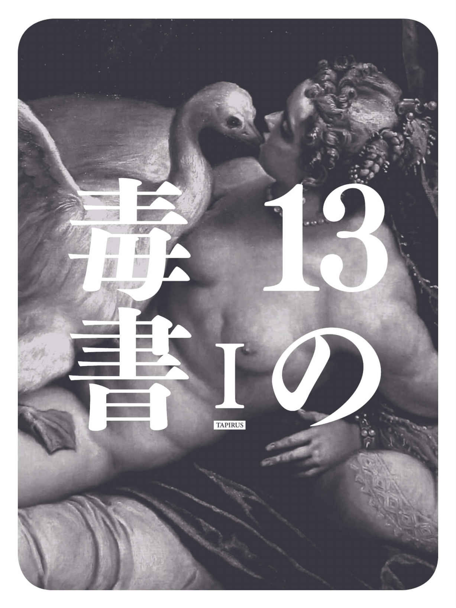
こんにちは、電子書籍の本屋タピルスの
今回は、文学好きなら一度はやってみたい「自分セレクト」のアンソロジーを編んでみました。読書の「読」と「毒」をかけて「13
の毒書」第一弾です。かなり毒のある短篇ばかりですので、どうぞお楽しみください。
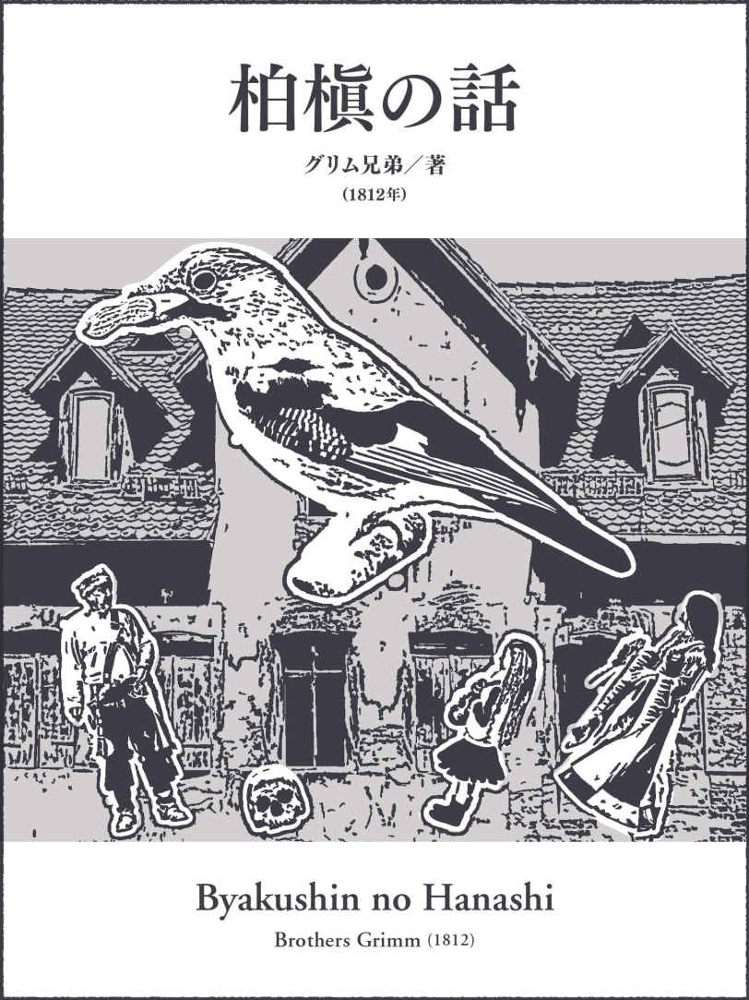
グリム兄弟
ヤーコプ・グリム
１７８５年１月４日─１８６３年９月20
日
ヴィルヘルム・グリム
１７８６年２月24
日─１８５９年12
月16
日
ドイツ生まれの言語学者、民話学者、文学者の兄弟。長兄のヤーコプと次兄のヴィルヘルムによる『グリム童話集』の著書で有名。六人兄弟の末弟ルートヴィッヒ・グリムは画家として活躍し、グリム童話集の挿絵も手がけている。今回はグリム童話の中でも、最大の食のタブーを扱った一篇をご紹介する。
今は昔、むかし昔のおおむかし、二千年も前のことでしょうか、あるところにお金もちの男があって、まことに気だてのいい美しい妻をもっていました。夫婦
は、それはそれは仲がいいのですが、子どもが一人もありません。子どもがほしくてほしくてたまらず、妻は、なんとかして子どもがさずかりますようにと、昼も夜もいっしょうけんめいにおいのりをしましたけれども、子どもは、いつまでたっても一人もさずかりませんでした。
ふたりの住んでいる家の前に庭があって、そこに、「びゃくしん」（柏槙
）という木が一本はえていました。その木の下で、そう、冬のことでした。あるとき、妻が、立ったまま、林檎の皮をむいていたことがあります。妻は、りんごの皮をむくときに指を切って、血が、雪のなかへ、ぽたりぽたりたれました。
「ああ、ああ」と言って、妻は、ほうっと大きくため息をつきました。そして、じぶんの前の血をながめて、なんとも言えない、やるせない気もちになりました。「血のように赤い、雪のように白い子どもが一人あったら、どんなにうれしいことでしょうねえ」
こう言ってみると、妻は、むやみにうれしくなりました。いま言ったことが、どうにかなるような気がしたのです。妻はそのまま家
へはいりました。
それから一月たつと、雪は消えました。それから二月、あたりは緑でした。それから三月、いろいろの花が地面から顔をだしました。それから四月、木という木が森のなかで我れがちに押しくらをはじめて、みどりの枝がぐんぐんこみあってきましたし、小鳥がさえずるので、森じゅうがやかましいくらいでした。そして、花は、木々のこずえから、ひらひら舞い落ちてきました。そのうちに、五月めもたってしまいました。妻は柏槙
の木の下に立っていました。びゃくしんは、芳
いにおいがしました。それをかぐと、妻の胸は、うれしさにおどるのでした。妻は、ひざまずきました。そうしないでは、いられなかったのです。こうやって六月めが過ぎ去ると、木々の実は肉がついて、しっかりしてきましたが、妻は、まるで口をきかなくなりました。それから七月めが過ぎると、妻は、びゃくしんの実をつかみとって、がつがつ食べました。すると、妻は気がしずんで、病気になりました。やがて、八月めがたちました。妻は夫を呼んで、
「あたくしが死んだら、びゃくしんの木の下へほうむってね」と、泣く泣く遺言しました。
これで、妻はすっかり安心して、よろこんでいるうちに、そのあくる月がたってしまうと、雪のように白く、血のように赤い子どもをもうけました。そして、その子どもを見てたいへんよろこんだのですが、あんまりよろこびすぎて、妻は、死んでしまいました。
そこで、夫は、妻を柏槙
の木の下にほうむって、おいおい泣きだしました。けれども、しばらくたつと、泣くのが、すこししずかになりました。それから、もうすこし泣いてから、夫は泣くのをやめました。それから、もうすこしたったら、夫は、また妻をめとりました。
二度めの妻には娘ができました。はじめの妻の子は、玉のような男の子で、血のように赤く、雪のように白くありました。妻は、じぶんの娘を見るたんびに、娘がかわいくてならないのですが、男の子を見ると、いやな気もちになって、どこへ行ってもこの子がじぶんの邪魔でもするように思われました。そして、財産はなんとかして残らず娘にやりたいものだと、明けても暮れても、そう考えているところへ悪魔がつけこんだのですからたまりません。妻は、男の子に、それはそれはつらくあたって、隅から隅へこづきまわし、こっちへくればぶんなぐる、むこうへ行けば抓
るという始末なので、かわいそうに、子どもは、いつでもおどおどしていました。学校から帰ってくると、おちついていられるところが一つもないのです。
あるとき、妻が貯蔵室
にはいっていると、ちいさい娘があがってきて、
「おかあちゃん、おりんご一つちょうだいな」と言いました。
「あいよ、ぼうや」
妻はこう言って、みごとな林檎を一つ、箱からだして、娘にやりました。その箱には、大きな重いふたがあって、大きな角張った鉄の錠まえがついていました。
「おかあちゃん」と、ちいさい娘が言いました。「おにいちゃんも、一つもらえないの？」
妻は気もちをわるくしましたが、それでも、
「あいよ、おにいちゃんが学校からかえってきたらね」と言いました。
妻は、男の子が帰ってきたのを窓から見つけると、まるで悪魔がのりうつりでもしたようになりました。そして、手をのばすが早いか、今やったばかりの林檎を娘からとりかえして、
「おまえにゃあ、おにいちゃんよりも先にゃあげられないよ」と言いながら、その林檎を箱の中へほうりこんで、蓋をしめたところへ、男の子が戸ぐちへはいってきました。すると、悪魔が意地をつけたので、妻は猫なで声で、
「ぼうや、おりんごがほしいかい？」と言って、いかにも憎々しく、ぼうやの顔を、じろじろ見ました。
「おかあさん」と、男の子が言いました。「おかあさん、こわいお顔ねえ！ ええ、おりんご、ちょうだい」
妻は、男の子になんとか言ってやらなくてはならないような気がしました。
「かあさんについといで」こう言って、箱のふたをあけました。「じぶんで、おりんごをおだしな」
こう言われて男の子が箱のなかへ身をかがめたとたんに、悪魔のさしずで、ばたあん！ と、妻が、いきおいよく蓋をしめたので、男の子の首はちょんぎれて、あかいりんごのなかへ落ちました。これを見ると、妻はこわくなって悪寒
がしてきました。そして、「じぶんの所為
でないことにできないかしら」とかんがえました。で、上のじぶんの室
の箪笥
のとこへ行って、いちばん上のひきだしから白布をとりだすと、男の子のあたまを首のつけねへのせて、布をぐるぐるまきつけ、しかけがなんにも見えないようにしてから、男の子を、戸口の椅子に腰をかけさせ、手に林檎をもたせておきました。
すこしたつと、娘のマリアぼうが台所にいる母親のところへやってきました。母親は火のそばに立って、煮えたったお湯のはいってるお釜を前にして、いつまでもお釜をかきまわしていました。
「ねえ、おかあちゃん」と、マリア坊が声をかけました。「おにいちゃんがね、戸口にお腰かけて、しろおいお顔していてよ。お手々におりんごもってるの。マリアがね、おにいちゃんに、そのおりんごちょうだいっておねだりしてもね、おにいちゃんたら、なんともおへんじしないことよ。あたし、こわくなっちゃったわ」
「もう一ぺん行ってごらん」と、母親が言いました。「そしてね、おにいちゃんが、坊やにおへんじしなかったらね、おにいちゃんのお耳を、ぽーんと、ぶっておやり」
マリアは、おにいちゃんのとこへ行って、
「おにいちゃん、あたしにそのおりんごちょうだい」と言いました。
けれども、おにいちゃんは黙っていたので、マリアがお耳を一つぶつと、おにいちゃんのあたまが、ころりと落ちました。マリアはびっくりして泣きだしました。しゃくりなきもしました。そして母親のところへかけつけて、
「いやだわ、いやだわ、おかあちゃん、あたしね、おにいちゃんのおつむをぶって、おっことしちゃったのよう」と言いながら、泣いて泣いて、どうしてもあきらめがつきません。
「マリアちゃん、たいへんなこと、したのねえ、おまえ」と、母親が言いました。「だけど、だあれにも知れないように、だまってるんだよ。すんだことは、とりかえしがつきっこないんだからね。そうね、にいちゃんを肉汁
にしよう」
それから、母親は、男の子をはこんできて、からだをこまかくきざむと、それをお釜のなかへ入れて、ぐつぐつ煮て、スープにしました。マリアはそばに立って、泣きつづけていたので、涙は、みんな、おかまのなかへ落ちて、おかげで、スープヘはお塩を入れずにすみました。
やがて父親が帰ってきて、食卓へすわると、
「せがれは、どこにいるね」と言いました。すると、母親は、黒スープのはいっている大きな大きなお皿をもってきて、食卓へのせました。マリアは正体なく泣きくずれました。父親は、もう一度、
「せがれは、どこにいるのかね」と言いました。
「なんですか、あの子は」と、母親が言いました。「あのう、田舎へまいりましたの、ミュッテンの大伯父さまのとこへね。すこしのあいだ泊ってくるって」
「いったい、なにしに行ったのだい。わしにひと言、行ってまいりますとも言わないで」
「なんだか、たいへん行きたがってましたわ。六週間ばかりむこうにいていいかって、ききましたの。あっちにいれば、だいじょうぶですからって」
「へんだなあ」と、父親が言いました。「なんだか、ばかに心ぼそい。なんとしても、よくないことだぞ、わしにひと言、行ってまいりますって、言ってけばよかったになあ」
こう言いながら、父親は御飯にしました。そして、
「マリア、なぜ泣くんだ。にいちゃんは、かえってくるのだよ」と言いました。
「どうしたんだろ、かあさんや」と、父親が言いました。「このごちそうは、どうしてこんなにおいしいのかな。もっとおくれ」
そして、食べれば食べるほど、いくらでも欲しくなるばかりで、
「もっとおくれ、ちっとでも残すのはおしい、こいつは、わしだけの食料にできたようなもんだな」と言いながら、食べたも、食べたも、骨はみんな食卓
の下へすてて、とうとう残らずたいらげてしまいました。
マリアぼうは、じぶんの箪笥
のとこへ行って、いちばん下のひきだしから、いちばん上等の絹のきれをもちだしてくると、食卓の下から、骨という骨を一つのこらずひろいだして、それを絹のきれにつつんで、戸の外へ持ってでて、さめざめと涙をながして泣きました。それから、その骨を、例の柏槙
の木の下の、青々とした草のなかにおきました。骨を草のなかに置きましたら、にわかに気もちがすっかり軽くなって、それっきり、マリアは、もう泣きませんでした。
すると、びゃくしんの木が動きだしました。枝が、だんだん両方へわかれていっては、それがまた、もとどおり合わさるのですが、そのようすは、まるで、人間が、うれしさのあまり、両手でそういう所作
をするようなふうでした。ところが、そうやっているうちに、なんだか、霧みたようなものが、木から、もやもや、でてきて、その霧のまんなかに、火の燃えてるようなものがあったのですが、やがて、その火のなかから、うつくしい鳥が一羽飛びだしました。鳥は、すばらしい声でさえずりながら、空高くまいあがり、どこかへ行ってしまうと、びゃくしんの木は、せんのように、なにくわぬ顔をしていましたし、絹のきれは、骨ぐるみ、影も形もありませんでした。
マリアは、気もちが清々しく、おにいちゃんがまだ生きていでもするように、なんとなしにうれしくてたまりません。それで、いそいそと家へはいって、食卓にすわって御飯をたべました。
ところで、どこかへ飛んで行った鳥は、金銀細工をする飾り職の家の屋根にとまって、唄をうたいだしました。
｢おかあさんが、ぼくをころした、
おとうさんが、ぼくをたべた、
いもうとのマリアが
ぼくの骨をみんなさがして、
きぬのきれにつつんで、
びゃくしんの木の下においた。
キーウィット、キーウィット、なんときれいな鳥だろ、ぼくは」
かざりやさんは、仕事場にすわって黄金
ぐさりをこしらえていましたが、鳥が屋根にとまって唄をうたうのを聞いて、たいへんおもしろくおもいました。かざりやさんは立ちあがりました。しきいをまたいだときに、親方は上ぐつを片っぽなくしました。ですから、おやかたは、片足には上ぐつをつっかけ、片足にはみじかいくつしたをはいたばかりで、往来のまんなかへ跳びだしたのです。おやかたは、革の前垂をかけて、片手には黄金
ぐさりをもち、片手には鉗子
をもってました。お日さまは、往来をかんかん照らしていました。その往来のまんなかにつっ立って、おやかたは鳥をながめたものです。
「鳥や」と、おやかたが言いました。「おまえ、唄がじょうずだねえ。今のを、もう一ぺんうたっておくれよ」
「いやだあ」と、鳥が言いました。「二度うたうんなら、無報酬
じゃあ、いやだあ。その黄金
ぐさりをちょうだい。そうしたら、もう一ぺんうたってあげる」
「ようしきた」と、かざりやのおやかたが言いました。「それ、黄金ぐさりをやるぞ、もう一ぺん、うたっておくれ」
そうすると、鳥がやってきて、黄金
ぐさりを右のあしのさきへはさんで、それから、おやかたの正面へとまって、うたいました。
｢おかあさんが、ぼくをころした、
おとうさんが、ぼくをたべた、
いもうとのマリアが
ぼくの骨をみんなさがして、
きぬのきれにつつんで、
びゃくしんの木の下においた。
キーウィット、キーウィット、なんときれいな鳥だろ、ぼくは」
うたいきると、鳥は、靴やへ飛んで行って、屋根にとまって、うたいました。
｢おかあさんが、ぼくをころした、
おとうさんが、ぼくをたべた、
いもうとのマリアが
ぼくの骨をみんなさがして、
きぬのきれにつつんで、
びゃくしんの木の下においた。
キーウィット、キーウィット、なんときれいな鳥だろ、ぼくは」
くつやさんはこれをききつけると、シャツのまんまで表へかけだして、屋根のほうをながめましたが、手を目の前にかざしたのは、お日さまに目つぶしをくわないように用心したのです。親方は、
「鳥や、おまえ、うたがうまいな」と言ってみましたが、
「おっかあ、ちょいと出てきなよ、鳥がいるんだ、ちょいと、あの鳥を見てごらん、あいつ、唄がじょうずだぞう」と、うちのなかへがなりました。それから、娘だの、子どもたちだの、職人だの、小僧だの、女中だの、一人のこらず呼びだしました。よびだされた人たちは、みんな往来へ出てきて鳥をながめました。その鳥のうつくしいこと、まっ赤な羽、みどりの羽、くびのまわりのはねときたら黄金
色ばかり、それで、目は、あたまのまんなかでお星さまのようにきらきら光っているのです。
「とりや」と、くつやのおやかたが言いました。「いまのを、もう一度うたっとくれ」
「いやだあ」と、鳥が言いました。「二度うたうんなら、無報酬
じゃあ、いやだあ。なにか、ぼくにくれなくっちゃあ」
「おっかあ」と、御亭主が言いました。「しごと場へ行ってきてくれ。いちばん上の棚に赤い靴が一足ある。あいつをおろして、もってきてくれや」
おかみさんはその靴をとりに行きました。
「これでよかろ、鳥や」と、ごていしゅが声をかけました。「な、今のを、もう一ぺんうたってくんなよ」
すると、鳥はおりてきて、ひだりあしの鈎のような爪で靴をつかむなり、屋根の上へ飛びかえって、うたいました。
｢おかあさんが、ぼくをころした、
おとうさんが、ぼくをたべた、
いもうとのマリアが
ぼくの骨をみんなさがして、
きぬのきれにつつんで、
びゃくしんの木の下においた。
キーウィット、キーウィット、なんときれいな鳥だろ、ぼくは」
うたうのがすむと、鳥は飛んでってしまいました。くさりを右のあしに、くつを左のあしにつかんで、鳥は遠方の粉ひき場のほうへ飛んで行きました。水車は、「かたりことり、かたりことり、かたりことり」と、まわっていました。こなひき場には、粉ひきの若い者が二十人もすわりこんで、石をきって、「こつこつ、こつこつ、こつこつ」臼をきざんでいるそばで、水車は、「かたりことり、かたりことり、かたりことり」と、まわっているのです。鳥はそこへ飛んで行って、こなひき場の前にそびえ立ってる菩提樹にとまって、唄をうたいました。
｢おかあさんが、ぼくをころした」
これをきいて、わかい者が一人、しごとをやめました。
｢おとうさんが、ぼくをたべた」
これをきいて、もう二人、しごとをやめて、唄をきくものがでました。
｢いもうとのマリアが」
これをきいて、また四人、しごとをよすものができました、
｢ぼくのほねをみんなさがして、
きぬのきれにつつんで」
ここまでうたうと、まだ石臼をきざんでる者は、八人になってしまいました。
｢びゃくしんの木の」
ここまできて、しごとをしているのが、まだ五人ありました。
｢下においた」──
ここまできて、まだ仕事をやってるのが、一人ありました。
｢キーウィット、キーウィット、なんときれいな鳥だろ、ぼくは」
これをきいて、いちばんしまいの男も仕事をやめました。それでも、いちばんおしまいの文句だけはきこえたのです。
「鳥さん」と、その人が声をかけました。「おまえ、うたがうまいんだねえ。わしにもきかせておくれよ、もう一ぺんうたっとくれな」
「いやだあ」と、鳥が言いました。「二度うたうんなら、無報酬
じゃあ、いやだあ。その石臼をおくれ、そうしたら、もう一ぺんうたってあげる」
「いいとも」と、その人が言いました。「こいつがわし一人のもんなら、おまえにあげもしようがのう」
「ああ、いいとも」と、ほかの人たちが言いました。「あいつ、もう一ペんうたうんなら、臼をくれてやれ」
それをきくと、鳥は下へおりてきました。粉ひきたちは、二十人総がかりで、丸太ん棒をもってきて、「ほう、おう、おい！ ほう、おう、おい！ ほう、おう、おい！」と、その石をおこしました。すると、鳥は、そのあなへ首をつっこんで、石臼を、まるでカラーみたようにくびのまわりにはめて、それからまた木の上へ飛びかえって唄をうたいました。
｢おかあさんが、ぼくをころした、
おとうさんが、ぼくをたべた、
いもうとのマリアが
ぼくの骨をみんなさがして、
きぬのきれにつつんで、
びゃくしんの木の下においた。
キーウィット、キーウィット、なんときれいな鳥だろ、ぼくは」
唄をうたってしまうと、鳥は翼をひろげました。そして、右の足で鎖をもって、左の足で靴をもって、それから、えり首へは石の臼をはめて、遠方の父親の家のほうへ飛んで行きました。
おへやのなかには、おとうさんと、おかあさんと、それからマリアぼうが御飯をたべていました。おとうさんが、
「どうだい、わしゃあ、胸がせいせいしたよ。ばかに気もちがいいなあ」と言うと、
「とんでもないこと！」と、おかあさんが言いました。「あたくしはね、なんだか胸ぐるしくってしかたがないのよ。まるで、ひどい暴風雨がきかかってるときのようだわ」
マリアは、腰をかけたきりで泣いてばかりいましたが、そこへ鳥が飛んできて、屋根の上へとまると、おとうさんは、
「どうだい、なんだか、むやみにうれしいぞう、外には、おてんとさまが、かんかん照らしていらっしゃる。わしはね、なんだか、昔なじみのものにめぐりあうような気もちがしてならないんだよ」と言いました。
「とんでもないわ、むなさわぎがしてしかたがないのよ。歯が、がたがたふるえるの。血管のなかは、火が流れるようなのよ」
おかあさんはこう言いながら、きものの胸を、ぐいぐいはだけました。マリアは、かたすみにすわって泣いています。マリアは、じぶんのお皿を目にあてていましたが、あんまり泣くので、お皿がぐっしょりぬれました。
鳥は、びゃくしんの木にとまって、唄をうたいました。
｢おかあさんが、ぼくをころした」
これを聞くと、おかあさんは、耳をおさえ目をぎゅうっとつぶって、いっしょうけんめい、見ないように、聞かないようにとしました。けれども、唄ごえはこの上もなくはげしいあらしのように、ごうごうと、おかあさんの耳のなかへおしこんできましたし、目は燃えたって、いなびかりのように、ぴかりぴかり光ったものです。
｢おとうさんが、ぼくをたべた」
「あ、かあさんや」と、おとうさんが言いました。「あすこに、きれいな鳥がいる。あいつの唄はすばらしいぞ。日が、ぽかぽかあたってる。どこもかしこも、肉桂 のにおいがする」
｢いもうとのマリアが」
これをきくと、マリアは、頭を膝こぞうへのせて、急に泣くのをよしました。おとうさんは、
「わしあ、外へ出てみる。あの鳥を、そばでよく見なきゃ気がすまない」と言いました。
「まあ、あなた、行くのは、よしてよ」と、おかあさんが言いました。「家
じゅうが、ぐらぐら動いて、火につつまれてるような気がするわよ」
けれども、おとうさんは外へ出て、鳥をながめました──
｢ぼくのほねをみんなさがして、
きぬのきれにつつんで、
びゃくしんの木の下においた。
キーウィット、キーウィット、なんときれいな鳥だろ、ぼくは」
こううたいながら、鳥は、例の黄金
ぐさりをおとしました。くさりは、ちょうどおとうさんのえりくびへ落ちてきて、おあつらえむきにすっぽりとはまりました。おとうさんは、うちへはいって、
「みてごらん、なんとも言えないきれいな鳥だぜ。わしに、こんなうつくしい黄金
ぐさりをくれた。ほんとうにきれいだなあ」と言いました。けれども、おかあさんは、胸がわくわくしていました。おかあさんは、おへやのなかで棒だおしにばったりたおれて、帽子があたまからおちました。そのとき、鳥が、またうたいだしました。
｢おかあさんが、ぼくをころした」
「ああ、ああ、地面の千尋 も下にいたいものだ。そうすりゃ、あんなこと、聞かずにすむのだわ」
｢おとうさんが、ぼくをたべた」
これをきくと、おかあさんは、死んだようにぐったりしました。
｢いもうとのマリアが」
「あらっ！」と、マリアが言いました。「あたしも外へ行ってみるわ。あの鳥、あたしにも、なにかくれるかしら」
｢ぼくのほねをみんなさがして、
きぬのきれにつつんで」
こううたいながら、鳥はマリアに例の靴を投げおとしました。
｢びゃくしんの木の下においた。
キーウィット、キーウィット、なんときれいな烏だろ、ぼくは」
マリアは心がはずんで、うれしくってしかたがありません。それで、マリアはその新しい靴をはいて、おどりながら家
のなかへとびこみました。
「どうしたのよう」と、マリアが言いました。「外へでるときあ、あたしったら、かなしくってしかたがなかったのにねえ、ああ、ほんとにいい気もちだこと！ あれ、すてきな鳥ねえ、あたしに、赤い靴を一足くれたわよ」
「だめ、だめっ」と言って、おかあさんがはね起きました。おかあさんの髪の毛は、炎のように逆だちました。「まるで、世界が沈むようだわ、あたしも、外へでてみる、気もちがよくなるかしら」
ところが、おかあさんが戸ぐちからでたとたんに、どたーん！ と、おかあさんのあたまをめがけて、鳥が例の石臼をなげおとしたので、おかあさんは、たたきつぶされてしまいました。
おとうさんとマリアは、この音をききつけて、外に出てみました。すると、もやのようなものと、炎と、火が、その場所から、もくもく、めらめらと立ちのぼって、それが消えたとおもったら、ちいさいおにいちゃんがそこに立っていました。お兄ちゃんは、おとうさんとマリアの手をとりました。三人は、それはそれはおおよろこびで家
へはいって、食卓
にすわって、御飯をたべました。
註１
この話は北ドイツ地方ポムメルンの方言で伝えられ、したがって標題も Van den Machandelboom（標準ドイツ語では、Von dem Wacholderbaum）となっているところから、木の名を Mandelbaum（はたんきょう）と誤解した英訳などもありますが、もちろんとんでもないまちがいです。「びゃくしん」のラテン名「ユニべルス」は、「わかさを生ずる」という原義をもついわば生命の木で、欧州では魔法よけの信仰などが結びついている霊木なのです。また、天木香樹については新村出博士の研究が発表せられていることを申し添えておきます。
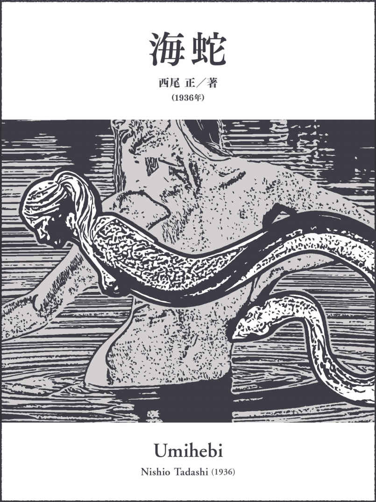
西尾正（にしお・ただし）
１９０７年12
月12
日─１９４９年３月10
日
明治40
年、東京市本郷区で生まれる。探偵小説家。亀の子たわしで有名な「亀の子束子西尾商店」の血縁者でもある。昭和９年にデビュー以後、雑誌『ぷろふいる』『新青年』などに短篇小説を発表する。アメリカの小説家、Ｈ・Ｐ・ラヴクラフトに影響を受けた怪奇的な作風の探偵小説家として知られる。今回の作品はその中でも怪奇、幻想的要素が強く出ている一篇をご紹介する。
貞子
......滅多に手紙など書いたことのない俺が突然こうした長々しい手紙を送れば、お前はきっとよほど俺が心境に変化を来たしたか、或いは、都会を遠く離れた僻地に孤独な療養生活を送っている俺の身辺に、何か起こったのではないかを案ずるかも知れぬ。──そうだ。その通りだ、到頭恐ろしい異変が襲って来たのだ。
お前はこれまで俺がちょっとでも突飛な行動に出
でようものなら、闇雲に俺を気違いか有り難くもない天才扱いにして、損の行く時だけは驚き慌て、そうでない場合には座興にして、くすくす盗み笑いをして来たのが為来
りであった。お前は齢
二十八歳にして既に諸々の哲理を悟り澄ました最も月並みな俗物、お偉い合理主義者なのだ。だがどうか今度だけは俺の言うことを真面目に受け取ってくれ。
ここは東京を汽車で距
たること十時間余り、南日本の一角、海辺の寓居だ。俺の眼の前には今一段と低く、どす黒い凄惨な浪がざぼおんざぼおんと踊り狂っている。俺の借家は崖の頂辺
に立った一軒家だ。部屋は八畳一間切りだ。後ろは高い山だ。森林が北方の空を被い尽くしている。来た当座は狂い波の響きが木谺
して煩
くて眠られなかったが、三月も暮らせば平気にもなる。左方にＩ岬の突出した入江があるが、右方前方は何一つ遮る物のない海、海、海の連続だ。遠くは紫色に霞んで何にも見えぬ。荒海ではあるが時として幕のように鎮まり返る凪ぎの日の続くことがある。手摺りに凭れ、無心に海を瞶
めていると堪らなく物倦くなる。体中の毛穴からは汗が滲み出し、神経が飴のように溶ろけてしまう。
海岸の二月には時たま春のように暖かい夜の訪れるのをお前は知っているか。そういう夜は如何に病的な俺だとて人並みに烈しい精神の高揚を覚える。寒気に萎縮していた空想は奔放となり、五体は熟れ上がって誰でも好い、ただ女でさえあればそいつを全身で我武
者羅
に搦み縮めたい衝動でわくわくするのだ。窓外には、森にも海にも岩影にも牛乳色の靄が棚曳いて月が眠た気にぼやけていた。俺は当てもなく飄然と部屋を立ち出で、足に委せて漫歩を続けて行くうちに、不知
不識
、Ｉ岬の突端まで来てしまったのだ。それが今日の恐怖の種を蒔いた最初の夜であるとは誰が知ろう。月はだいぶ落ち掛けていた。海は神秘の情操を綾どる天来の音楽だ。嘘のようだが全くこれに相違はない。俺は陶然と小一時間も立ち続けていたが岡へ上がろうと踵を巡らせた時、反対に岡の方から突端へ歩いて来る一人の女を認めたのだ。夜半女に出会うのは気味の好いものではない。しかも、洗い髪の若い女なのだ。女はよほど岩伝いには馴れている者と見え身も軽々と駈け下りて来たが、見知らぬ男のたたずむを認めると慌てて裾から洩れる白い頸を隠し、草履の音も秘そやかにそろりそろりと近寄って来た。下膨れのぽっちゃりした顔であったが教養はありげで土着の女ではないらしい。摺れ違う時、体を堅くしながらも上眼遣いに凝
と俺の眼に見入ったが、それは警戒ではなくむしろ大胆な流し眄
であった。俺はその後ろ姿を見送りながら一体何者であろうと考えた。俺と同じように戸外の夢幻に誘われたのであろうか？ なにぶん深夜だ。俺は半ばの好奇心と半ばの気味悪さを覚えながら、もう一度俺の方へ近寄って来たら言葉を掛けてみようと、煙草の火を点じ、岩蔭に蹲
んでその後ろ姿を窺っていた。
けれど女はそれ切りこっちを向かなかった。あたかも満潮時で折々沖の方から黒々としたうねりが足許を渫
うように押し寄せて来るのだが、その波が岩の両脇に別れて消えることをよく知っているらしく、悠然と袂に入れた手を胸の辺りで重ねたまま相変わらず沖を見ている。霞の中にたたずむその幽婉
な後ろ姿は幾分か淋し気で、背中に俺の視線を意識しながら言葉の掛けられるのを待っているようにも見えた。と、──訝
しなことが起こった。女が突然くるりと振り向き艶やかな頬にあるかないかの小さな靨
を浮かべ、嫣然
媚笑
したと見るや、ぷいと海の中へ見えなくなってしまったのだ。
俺は無論啞然とした。が、次の瞬間たちまち恐ろしくなった。汗ばんだ皮膚にぞっと悪寒が襲った。俺は、変だなあ変だなあと、無意識に衝いて出る呟きを何遍も何遍も繰り返しながら、来た時よりは早足で家に帰った。
部屋に落ち着いて俺は考えた。或る記録によれば、この地方はレプラ患者の多い漁村で、海浜に平行して連なる山脈の或る区域には人目を避けた部落が営まれ、年頃の漁夫の娘などは発病の症候と同時に山奥に送り込まれてしまうと誌されてある。往時から漁村にレプラの多いのは鮪が細菌を媒介するからだと謂
う。都会からも、だいぶ入り込んでいる噂であるから、彼女もそういう種類の女であの夜自殺を決意して岩に渡り、最後の虚無的な笑いとともに俺の瞬きの間を利用して変化のない鈍重なうねりに肉体を委せてしまったのではないか、と考えた。この解釈は如何にも不満ではあったが、幾分の安神
を得たことは事実であった。眠りに堕ちた時は暁の鳥が鳴き、雨戸の透き間から白々とした光の射し込み始める頃であった。
翌日になっても若い女の溺死体が流れ着いた模様もなかった。ではやはり俺の錯覚だったのかと数日を過ごすうち、同じように暖かい月明の夜、同じ所で同じ女に、またしても出会ったのだ。
相手が何らの怪異の対象でもなく、一個の熟れ切った肉塊であると思い始めると、何時か俺の体内に生温かいものが流れ出した。俺は毎夜岬へ出て女を侍った。三度、五度、六度、──こうして女は、はじめて眼と眼と戞 ち合う時、脣許 を歪め上眼遣いに例のあるかないかの微笑を泛かべて見せた。俺は或る目的のために特に強烈な酒を呷り、婬 らな欲望にうずきながらついに嫌がる女を欺し欺し部屋に引き摺り込んではじめて肉体を知った。何気なく女の素性を問うた時、女の眉間に悲し気な陰 りが、窗 に落ちる黒い島影のごとく射すかと見ると素早く消え去った。ただあなたと同じように体のためにきているのよ、どうかそれ以上はなんにもきかないで頂戴、と答えるのみで、更に追求すれば切れの長い眥を 怒らせて、棘々しい素振りを見せた。やがて異様な疲れが、嗚呼眠るぞ眠るぞと呟く俺を死人のごとき眠りに吸い込んだ。既に陽の高い頃眼覚めた時、寝床には生々しい体臭が残っているだけで女は見えなかった。体中がびっしょり生汗に濡れていた。
ところが昨日のことだ、俺は別に深い仔細もなく例のＩ岬へ釣りに出掛けたと思ってくれ。海は干潮から満潮に移る頃であった。俺はあちこちに凸
出した岩肌に石炭酸を打
ち撒けてイソメをふんだんに掘り出した。生憎昨日は弱い弱い北風で、相当の深間でも判然
透き通って見えるくらい水が澄んでいた。二時間ぐらいは辛抱していたが餌を代える機会さえ来ないのだ。俺は自棄
を起こし竿を畳むと、碌々使いもしない餌を手摑みにして海に投げ込んだ。すると、ちりぢりに四散してやがて水底に舞い落ちようとする餌に向かって、海草や岩の間から種々雑多な珍しい小魚の群が飛び出して来、彼方
に走り此方
に戻り猛烈な争奪戦を開始したのだ。俺は癪に障った。が、眼舞
苦しい光景が面白いので立ち掛けた腰を下ろし、飽かず見入っていた。と、海底に、ゆらりゆらりと這うように流れて行く黄色い女の帯のような物が眼に留まった。俺は怪訝に捕らわれて眼を瞠
っていると、その帯のような物は必ずしも水の流れに従ってはいないのだ。言い換えれば、一定の生物の運動動作を以て海草を薙ぎ倒しながら、そいつは騒然たる小魚どもを尻目に懸けて尖った口をパクリパクリ開いて俺の投げ入れた餌を喰らっているのだ。
貞子、それが身長六尺以上もあろうと思われる海蛇なのだ。──お前は恐らく海蛇がどんな動物であるか知るまい。動物！ そうだ、彼奴
は魚類には相違ないのだが、ふと動物と呼びたくなるほど陸上の毒蛇に近い感じを備えている。全身茶色で一面に黒い斑点がある。ただ腹だけが白い。眼がカッと大きく、吻
が尖っていて歯が鋭い。漁師はなだ
と呼び、喰いつかれたら殺されても放れぬ執念深い妖魚として食用にもならぬままにむしろ恐れ遠去けているのだ。体は縦に扁平で鰭
がないからぬらぬら光っている。鰭はただ一個所胸鰭があるだけだ。しかもそれが極度に発達しているので、砂上ぐらいは這い回り、敵に向かって噛みつくぐらいの跳躍力はもっている。俺はかつて地曳き網に入った奴を見たことがあるので、其奴
が海蛇であることはすぐ判ったが、俺の見たのは高々三尺ぐらいであったので、一間以上もある奴が海底をうねうね這い回っている態
を見て漫
ろに寒気を覚えた。心なしか、其奴は俺の存在に気付いているらしく時折瞳を凝らして俺の様子を窺うが、するとまた嘲笑するようにぬらりぬらり這い回り始める。体の向きを代える度に背中の虎斑
が鈍い色に晃
り、それが人の五体を痺れさす魔薬に似た鬼気を放つのだ。一分......三分......五分......俺はその鬼気に憑かれ、苦行憎のごとく身動きもできなくなった。息苦しい無音の時間が刻一刻と過ぎて行った。と、俺はぴょんと跳ね上がった。今眼前の海蛇こそ女の本体なりとの疑惑が通り魔のごとく俺の胸を掠めたのだ。俺は下駄の角を岩のあちこちに打
っつけながら這う這うの態
で我が家に逃げ帰った。
さて、右の事実によって布衍
させる俺の悲劇については、お前の想像に委せる。ただそれをどう処置したら宜いかが問題なのだ。この事実は最凶の疫病よりも恐ろしい。だが貞子よ、安堵してくれ、俺は昨夜来の懊悩の果て、やっと自身満足の行く解決法を見出した。それは女をできるだけ惨虐な方法でいびり殺すことだ。すなわち復讐だ。動物の頭蓋には頂点に一個所比較的脆弱な部分があるとのことだ。そこで俺はもう一度女をおびき寄せ、あいつの脳天に五寸釘を打ち込むことに決心したのだ。
貞子、以上で俺の近況報告は終わった。お前はことによったら怒っているかも知れぬ。だが、許してくれ、そしてどうか打っちゃっといてくれ、俺が目的を敢行した暁にこそお前を呼び寄せよう。その時こそ俺の生まれ変わる日だ、もう一度都会へ帰り、愛するお前と新しく始めから生活を遣り直す、春の雲のような、愉しい愉しい希望の燃える日なのだから。......
三月二十九日 喬太郎記
＊ ＊ ＊ ＊
前掲の手紙はかつての絢爛
たる浪漫主義者今日の敗惨の人黒木喬太郎が、その妻わたくしに与えた文でございます。これによってもわかりますように、黒木は思いきって変質者と呼んでもさしつかえのない人で、結婚前からかずかずの不審な行動がございました。今でもはっきり憶えておりますのは、ある日銀座の珈琲
店で向かいあっておりますと、突然なんの外部的な衝撃もなしに白い珈琲盃
をとりおとして真っ青になった日のことで、まだあまり黒木の性格をしらない許嫁時代のわたくしはあっけにとられてしまいました。黒木はその時、僕はいまひどい神経衰弱でささいなことにも驚くのだ、コーヒー・カップの柄をもたずに口へもっていったら、柄が眼球のまじかにせまり奇態な距離の錯覚をおこして、薄くらいテエブルの下から一匹の白鼠が組んでいた脚をつたってのどの方へかけあがってくるようにみえたのでギョッとして手をはなしてしまったのです、と説明して額の生汗をぽたりぽたりテエブルに落としたままじっと心臓の動悸をしずめている模様でした。
病気はつねづね自分からいっておりましたように婦人病以外はたいてい患いつくしたようなもので、その癖ねこむようなことはめったになく体の芯になにかこう強靭な鋼鉄線でも貫いているかのようで、仕事はひとときなど時流のまにまに三人分くらいは果たしました。同棲してみますと極端なわがままもので、女性の肉体にいだく感情もけっして正常でないことがわかりました。犬や猫や鶏を飼った上で獣姦の文献をあつめたり、家系も血統も調べずに結婚したわたくしを非難する人もございましたが、もともとわたくしはあるったけの愛をささげて黒木の異常な病癖をためられるならためてやろうといういわばヒロイックな気持ちから一緒になったこととて、驚きもし悲しみもしましたがなかなか失望はしませんでした。それだけ黒木がすきだったのでございましょう。
ところが黒木は昨年の夏から秋にかけて病名のわからぬ病気におかされて突然卒倒してしまいました。医者は全身の極度なる疲労で肺結核もあるし腎臓もわるいし脳組織もめちゃめちゃに破壊されているといい、もはやなおそうともせず死を宣告しましたが黒木は二三年も前からもうなにも書けなくなり、幻想をよびおこすために親しい医師から奪取するさまざまの魔薬を喫
して小説をかいたり、一度獲得した名声の喪失をおそれるのあまりワルアガキがひとかたではなくその心労から一種の発狂状態に陥り、自殺企図や誇大妄想や、骨も髄もくたくたに亡びて次に卒倒に移行したのでございます。尊い自己を犠牲に魔薬の力をかりてまでも小説をかかなければならないというのはなんという愚かなことでございましょう？ わるあがきをする前に適度に人生を軽蔑してこころにゆとりの流れるいわば諦観の境地に漬
ることができれば、それこそ真の積極の道であるのに黒木にはそういう東洋的な教養がなく、この意味で救われない悲劇的
な人でございました。けれど、──黒木の体はどこまで強靭なのでございましょう、三月ほどもするとふたたびシャンとして二三本宛名のわからぬ手紙を往復しておりますと、突然Ｉ岬沿岸に療養かたがた仕事をはじめるのだといいだして、本年正月匆々
仕度もそこそこに放たれた鳥のように飛びたっていってしまいました。空気のいい海のこととてたって反対する筋もないので時期をみてつれもどす考えで賛成してしまいましたが、極端に手紙ぎらいの黒木から三月ぶりで手紙をもらいました時にはなにかしら不吉な胸さわぎのしたのは事実でございます。なにしろ便りのないことは平和を立証することになりますから、ない間はむしろ安心していたのでございます。ですからわたくしは翌朝匆々
の列車で、黒木の転地先をおとずれてゆきました。
「Ｉ岬」が駅名になっておりますＩ岬駅をおりたら馬車に一時間もゆられやっと目的の黒木の借家につくことのできたのは、さすがに永い春の陽ざしも斜めにおちかかり赤あかともえた空かもうやがてたそがれどきにくれようとするわびしい夕ぐれでございました。でも駅をでた時は明るい春の光がいっぱいで、早いタクシイもありましたがなんとなくただのんびりと古風な馬車にゆられてゆきたいと思い、馬車をえらびました。家並みのたてこんだ駅前をはなれると馬車はまもなく山と山とのあいまの田圃
にかこまれた道にはいり、そろそろ山間僻地の風貌がひらけはじめました。馬車は海に近よったとみえ、新鮮な磯の匂いがぷうんと鼻にせまりました。やれやれという思いで馬車が山のふもとをめぐるあらたな道を眼をみはって眺めましたが海はまだみえずに左に山、右に岩石のつらなる細ながい道が行く手に、白じろと展
がります。道はよほどかたいものとみえ馬の蹄が戞々
と一層たかくなりひびきました。すぐ右手が海なのだが岩にさえぎられてみえぬのだと初老の馭者が鞭をうちふりうちふり答えました。なるほど囂々
たる潮鳴りが遠雷のように響き過ぎゆく岩と岩とのわれめからは時折どろりと黝
ずんだ海の面が古代の想像動物
のおなかのように物倦げなスロオ・モオションでゆれている点景がほのみえ、癩病
部落はどこだときくと、もっといったらしらせるといい、ほどなく行く手はゆるい登り勾配となり、崖の麓には飲食店や薬屋が軒をならべ、そこをゆきすぎると、のぼりきった右手の崖ふちにちっぼけなあばらやがぽつんとたっておりました。それがとりもなおさず黒木の寓居だったのでございます。
馭者は今度は下り勾配となる蜿蜒
たる道の彼方の森を指さし、あのくらいところが部落ですと答え、馬車をひき返してゆきました。雑草のはえた前庭の道をすすんで素通しの格子の前にたつと、垢じみたよれよれの青紬をきて座敷の真ん中にあぐらをかいて蹲っ
ている黒木のなつかしい後ろ姿がのぞけました。それにしてもなんという荒涼とした住居なのでございましょう。屋根のかわらはおち、木材という木材はことごとく薄墨色にくちかけ、周囲
にはえしげる雑草のなかに「水死精霊供養塔南無観世音菩薩」と刻まれた青苔の石碑がたち、右手についた木戸も蝶番ははずれ地にひくくたおれかかっております。わたくしはいっそきたことを驚かせてやろうと木戸をあけ、海向きの窗
の方へ薄
の音をころしころし足音をしのばせて近よっていきました。その三尺にもたらぬ小路はそのまま波のあたる崖に通じているらしくみえ、正面の窗には回れそうもないので、幸いあいていた西窗から首をいれ、こんにちはあ！ と頓狂によびかけようとしましたが、三月余りもみぬまの黒木の横顔があまりにもみじめにやつれはてているさまにせっかくの声ものどの奥につかえてしまいました。転地前の黒木はいかにも病人じみた青瓢簞
ではありましたが、髪の手入れもし髯もそり、瞳には微かながらもはりつめた意欲の輝きがひそんでおりましたのに、眼の前の黒木は東京で苅
ったままともみえる蓬髪
を衿首のあたりまでふさふさとためこみ、肉のいっそう殺
げおちた額から頬に近くおどろおどろに散らしながら一心不乱と形容したいくらい夢中になって、いつのまに買いこんだのか金槌やヤットコや鑢
をつかいおぼつかぬ手つきで、なにやら太い針金のようなものをギイギイガアガア磨いております。そこへにゅうっと首をだしたので、突嗟にあわてふためきぴょんとはねあがるや、そこいら中にちらばっている道具類を部屋の隅に蹴こんでしまってから、なにものだ？ と詰問するような眼差しで防禦
の姿勢をとりつつわたくしにするどい一瞥をなげつけました。かれはちょっとの間そうしてむかいあっている女がわたくし、自分の女房であることが信ぜられぬように眼の光も暫時警戒から怪訝の色に移りましたが、やがてわたくしであることがわかると一時に緊張のゆるみ、深い溜息をふう......とはきだすと、なんだ貞子だったのかと脣許
に安堵の笑みをうかべてふらふらと部屋の真ん中にくずおれるようにあぐらをかき、するともう、なにしにきやがったといわぬばかりの邪魔者あつかいの色が顔中に瀰漫
し、あらためてわたくしをみかえしました。
わたくしは手紙をみてそういう神秘的な土地が急に恋しくなったから無断できてしまったのですと、ことさら冗談めかしくいいながら部屋に上がり、火鉢に火をおこしたり敷きっぱなしの布団やくちゃくちゃの衣類をかたづけはじめました。いいえ、冗談というよりもむしろ本音で、一昔前の怪談ばかばかしいお伽噺をもちだし人をかついで興がっている黒木はなんという好人物でしょう。黒木が海蛇の精に誘惑されたというのですからふきだしたくなるのもむりがないではございませんか。くる時にはもしや手紙にあるような有閑女
となにか関係でもできたのではないかと疑ってもみましたが、剝げおちた璧、稜毛
の逆立った古畳、室内の乱雑さから古手拭いのように薄汚い黒木のさままでおよそ女でいりのありそうな模様はみあたらないのでございます。けれど、窗
から首をだすと、海の形容だけは、黒木の手紙にすこしの誇張もないことがわかりました。崖にあたった波が、沖にひきかえし沖からおしよせるうねりと衝突して真っ白い飛沫を発し、方向を逸した二条の浪脈が互いに噛みあいぶつかりあい、四分五裂にあれまわる狂い波
と変ずるさまは、折りしも夕暮れの暗澹
たる空、轟々たる咆嘩とともに凄まじい限りで、それに黒木は一口に「窗」とよんでおりますが実際は窗ではなく、海に面した縁先で、それが淵いっぱいギリギリに崖際にのぞんでいるために危険千万ですから、ホンの申しわけのようにあとから急ごしらいの手摺りをつけたという感じで、この家の持ち生や建てた大工の神経を疑りたくなるくらいトボケた造作で、折しも荒れくるった怒濤
がこの家の土台岩に白い歯をたてて震動をおぼえるくらいがむしゃらに噛みついておりました。思わず吸いこまれそうになるのを手摺りにしがみついて下をのぞいてみると、崖の中腹にたった三尺幅くらいの道が横につづいて一方はみえなくなっているので、この道がどこに通じているのかきいてみると、──Ｉ岬へゆく近道だがはじめてのお前には足がすくんで通れやしないよ、と軽蔑するように答えました。道の一方の行方はさきほどわたくしが木戸をあけてはいった小路の上り口に通じているのでございます。
かたづけものを終え、座敷もはきだしたころ、すすけた天井からぶらさがっている裸電灯にぽっと灯がともりました。やれやれという思いで食事のことを気にかけはじめますとあたかも格子口に板草履と自転車をよりかける音がして、とりつけの蕎麦屋が夕食をとどけてきました。こういう風にして毎日毎日東京の二倍以上もするその癖大変そまつな食事をくりかえしているのかと思うと済まない気持ちでいっぱいになり、むりにでも東京へつれもどさなければ身もこころもめちゃめちゃになってしまうにきまっておりますし、仕事も読書もできぬ味気ない毎日では下らぬ妄想の遊戯にふけって人一倍大事にしなければならぬ神経をいっそう不健全にしてしまうのもむりはないと思われました。ところが黒木は、くどくもいう通りわたくしがきたことすら邪魔あつかいにし、いっしょに帰ろうという申し出には、肩を怒らせて反対しました。食事もそこそこにすますと薄くらい電灯の下
でせむしのようにかがみこんだままギイギイガリガリ、きた時と同じ作業をつづけます。頑丈な釣針でもつくって例の海蛇でもつりあげようとでもいうのでしょうか？ もしそうだとすると文字通り正気のさたではございません。けれど今さからうことは相手をますます意固地にさせるだけですから、ではわたくしはせっかくきたのだから蕎麦屋の一間でもかりて二三日海の空気を吸ってから帰るつもりだ、なにか用でもできたらいつでもよんでくれ、あなたの獲物もたのしみにしている、わたくしがいる間になんとかしてその怪物をとらえたいものですわねと、あたらずさわらずの軽口をききながら帰りかけますと、黒木はもうわたくしの言葉などまったく耳にはいらぬ様子で壁に骸骨のような影をうつしながら、いっそう高だかと鑢
の音をならしはじめました。
それから数日の間は黒木の生活になんの変哲もおこらぬまま、幸い蕎麦屋の二階があいておりましたので、毎日毎日を付近の近海を歩いたり山の端づたいに深緑の森を逍遥したり、時には一日中部屋の窗
をあけてうつらうつら居眠りをしたりして、そぞろ帰京するのがいやになるくらいすがすがしい命の洗濯をしてすごしました。黒木はいる時といない時がございました。いない時はたぶんＩ岬へ釣りにでかけたあとなのでございましょう、嫌がるのでべつに探ってもみませんでしたが、まるたん棒のような太い竿に麻縄のような糸をつなぎ親指ほどもあるイソメの箱をぶらさげてでかけてゆくところにゆきあわせたことがございます。漁師ですら相手にしない海蛇をどうしても釣りあげるつもりなのでしょうか、そういう途徹もないことに血道をあげている黒木はものずきを通りこしてあわれでございました。
五日目の夜半、わたくしはなんのいわれもなくハッとめざめたのでございます。ねついてからこころよく熟睡したはずでしたのにめざめると急に胸のあたりがむかむかして今にもはきだしそうな悪感をかんじるので、夕飯のお惣菜を考えてみましたがそれが今ごろまで胃にもたれているはずのない消化のいいものですから、ムカツキがつのるばかりではきだすものがなく、大変くるしい思いをしました。床にうつぷしになったまま凝
と胸のくるしみを押さえておりました。と、次第に呼吸がらくになるにつれ、なんとなく黒木のことが気になりだしました。これが虫のしらせとでもいうのでしょう、ただむやみに黒木のことが心配でならないのです。今時分黒木は昼の疲れでねむっているか、でなければ暗
のなかで眼をパチクリさせてなんといって女房のやつをおいかえしてやろうかなどと考えこんでいるに相違ないと、思いこもうとすればするほど底しれぬ不安はますますつのってくる上に、いつからふきはじめたのかなまぬるい烈風が硝子
窗
をがたがたゆすぶり、それがゆけゆけと促すように鳴っているのです。もういてもたってもいられません。着がえもいらだたしく蒼惶
と蕎麦屋の二階をとびだしてしまいました。
ところが戸外へとびでたわたくしは一瞬いすくんでしまいました。中天にまんまるな物凄い月がかあっ
と耀
いているのです。わたくしはきょうまであれほど逞しい月に出会ったことがありません。いわゆる花鳥風月にうたわれる「名月」のような、そんななまやさしい月ではございません。なにかしら物質的な、悪魔的
な、──そんな感じのする研ぎすまされた途方もなく大きな月で、それがすぐ眼の前にぶら下がっているようにみえるのでございます。わたくしはまずこの圧力に似た眩さに立ちすくんでしまいました。これではならじと五体をふんばりなおし、濺
ぎかかる月光をきりはらいきりはらい息つく間ももどかしく、真昼のような崖道を一心不乱に走りつづけました。勾配の頂辺
についた時、眼前に水平線のむやみに高い夜半の海が展開しました。空には風があおられたちぎれ雲があとからあとから北へ北へと、その怪鳥に似た黒い影が凸面鏡のような海面に伸びたり縮んだりして映ってはしり、その海の中間に首をつっこんだ小舟のような黒木の家がゆらゆらとゆれているようにみえました。わたくしは辛うじていなおると、──黒木のような夫をもったわたくしはいついかなる時でも己だけはとりみだしてはならぬと強制したのでしょう。脚に力をいれ、一歩一歩格子にすすんでいこうとしましたが、まだ五歩と歩まぬうちに室内からドタンバタンと手足の畳にぶつかる格闘の音と、それに混じってなめし革をよじるようなキュウキュウという得体のしれぬ叫びが聞こえてきました。思いきって格子をあけ土間に右足をいれると同時に、格闘の音もやみました。
その時の恐ろしい光景はとうてい忘れることができません。髪ふりみだした猿又
一枚の黒木が窗に背をむけ、両腕をだらんとたらしてゴリラのように突っ立っているのです。眼のなれるにつれ、黒木の右手にはしっかと金槌が握られ、しかも全身が血みどろであることがわかりました。青い鱗をはりつけたような顔はぱくりぱくりと痙攣をみせ、眼はうつろにわたくしを睨んだまま、とうとう殺
った、とうとう殺っつけてやった！......と喘ぎつつ、どうしたことか体が一歩一歩手摺りの方ヘズリ動いてゆくのです。あわててひき戻そうとした時はもう遅かったのでございます。黒木は同じことを眩きつつ歪んだ快心の笑みをうかべたとみるや、二三歩ツツーとあとじさりした時にメリメリッと木のくだける音がして、仰むけざまに眼のとどかぬ崖下へ消えてしまいました。むだとはしりつつみおろせば、今可哀想な黒木喬太郎をのんだ黒い海は青白い飛沫をあげ砕けつつ、いかに荒れ狂うことができるかとわたくしどもに納得させるように囂々
と鳴っておりました。ああ、わたくしが黒木を殺したのです。殺したも同然なのです！
おや？ 崖の中腹に家守のように両手をひろげて吸いつき、真下からわたくしをみあげている若い女はなにものなのでしょう？ ああそうだ、この女こそ黒木の狂念の正体なのだ！
女はたった今淫楽の逢瀬におもむいたのでございましょう、直前の変事もしらぬげに、それが癖のかすかなかすかなあるかないかの媚笑を仄白い頬にうかべて凝
とわたくしの眼にみいったのは、わたくしを黒木とみちがいしたに相違なく、まもなく窗
の首が男でないことがわかると一瞬ギョッと眼をみはり慌てて面をふせると、横づたいに素早く崖の蔭に姿を消してしまいました。こうして最後に室内の異変をただす時がきたのです。窗際から身をおこした時にわたくしのながい影が左にうごいて、昭々
たる月光が流れこむようにそれまでくらかった部屋の隅をてらしだしました。そこでわたくしははっきりとみたのです、──西窗の下に血しおにまみれた布団がもみくちゃにされ、その上に六尺あまりもある一疋
の海蛇が、ぬらりくらりと断末魔の痙攣にもだえている態
を、そしてこの、正しく獣とでも形容したい異形な怪物のぬめぬめした脳天には手裏剣にも似た太い針がつきささり、その根元からはまっくろな血しおがドクリドクリとふきだしているのでございました。
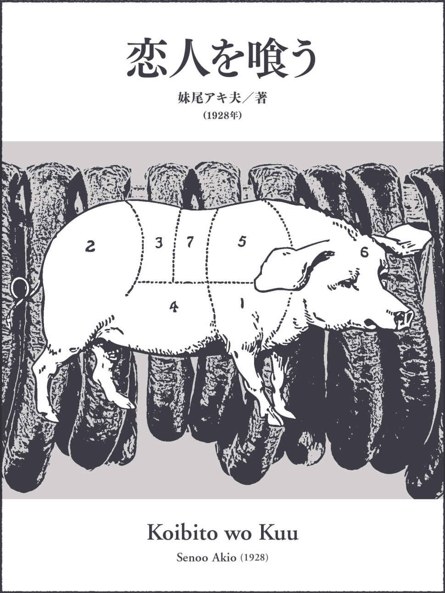
妹尾アキ夫（せのお・あきお）
１８９２年３月４日─１９６２年４月19
日
明治25
年、岡山県で生まれる。翻訳家、探偵小説家。雑誌『新青年』を中心に、英米の推理小説の翻訳を多く手がけた。翻訳家が本業のためか探偵小説家としての創作はやや少ないが、40
ほどの優れた短篇小説を発表している。今回の作品は「カニバリズム」を題材に扱った一篇をご紹介する。
あすの朝は上海
へ着くと云うのに、その日は何も見えなかった。どちらを向いても黄色い海の波ばかりであった。夕方になって、向うから来る三本煙突の船とすれちがった白井は夕食をすまして諏訪丸の食堂
を出ると、白く洗った綺麗な甲板の上を、こつこつと軽い靴音を立てながら、なんどとなく歩き廻った。しばらくすると立止って、手摺に両手をあてて下を覗きながら、無数の白い花のような泡沫が流れるのを眺めていた。社交室
から、あまり上手でないピアノの音が、時々微かに響いてきた。
「何を見ているんです？」
びっくりして白井が振向いてみると、いつも同じ食卓に並んで坐る、そして白井にとっては、すべての船客の中で一番親しいところの、香港
まで行く青年が、ポケットに両手を突込んだまま、にやにや笑っているのである。
「船のそばを流れる波を見てるんですよ。波ばかり見ていたら、なんだか気分が悪くなってきた」
こう云って白井は本当に不快らしく眉をひそめた。
青年はにやにや笑いながら、薄い上唇をぺろりとなめて、
「変なものばかり腹につめこんだからでしょう。君は昨夜は、灸腎臓
、今夜は、煮牛尾
と麺粉脳
を食べていましたね」
「よくひとの食べるものまで観察していたものですね」と、白井も微笑しながら、「君がそんなに睨んでるんなら、今度からはせいぜい警戒することにしましょうか」
だが、こう気軽に受けながしたものの、白井はなんだか図星をさされたようで、内心いささかきまりが悪かった。実際人一倍好奇心の強い彼は、食事ごとに新しくタイプライターで打って持って来る献立の中から、自分の特別の趣味を満足させるような、変ったもののみを選んで、給仕に註文していたのである。
「いや、そんな御心配は御無用ですよ」青年は巻煙草に火をつけて、「いかもの
食いの趣味だったら、あるいは私の方が先輩かも知れませんよ。君は上海で下りるんでしたね。上海でお下りになるのでしたら、面白い処を紹介して上げましょうか。名刺を上げますから、四馬路
の裏の金竜酒家という看板のかかった、ちょっと料理屋のような穢い阿片窟に行ってごらんなさい。純粋の阿片窟ではないのです。まア、ちょっと、いかもの
食い連中の集った倶楽部のような処ですね。普通の人は入れないのですが、私の名刺があれば、わけなく入れるのです」
「それはぜひお願いしたいもんですね。で、なんですか、どんな人が集っているのです、そこには？」
「あははは、それは行ってみるまでのお楽しみとして、なにも説明しないでおきましょう。それより今日は、私がいままで食べたものの中で、一番珍らしい、一番凄いものの話をして聞かせて上げましょうか」
「何です？」
「恋人の肉を食べたことがあるんですよ」
「それア、面白い！ ぜひ聞かして下さい」
「秘密ですから誰にも云わないで下さいよ」
「よろしい」
青年は白井をともなって、近くの籐椅子に並んで腰かけると、口に啣
えていた巻煙草をちょっと取って、ぺろりと上唇をなめて、次のように話しはじめた。
いまでは香港に自分で店を持っていますが、この事件の起ったころ、即ち、一昨年の春頃は、私はまだ上海の、ある外人の店に勤めていました。上海は好いですね。肉類や卵が馬鹿に安くって、キャベツやカリフラワーの新鮮なのが掻き棄てるほどあって、魚が食えないのにはちょっと困りますけれど、その代り鰻と海老が豊富で、それに、私は、何よりもあの雑然とした、インターナショナルなところが大好きです。香港は駄目です。上海のようにのんびりとしていない。すべての犯罪や道徳や思想を黙って抱いているあの大きいところがない。
私の下宿は北西川路
を左に折れて、停車場の方へ行く途中の、人通りすくない、静かな小さい街に沿うた赤い煉瓦造の二階屋でした。そこを私が選んだのは、別に誰からも紹介されたわけではありません。ほんの偶然だったのです。ただ歩いていたら、
Rooms to Let
well furnished
with board
と書いた貼札が眼についたので、そこの二階の一部屋をかりたのに過ぎないのです。
白いカウンタペンをかけた寝合、小さい卓子
と椅子、洋箪笥
、それから一つの窓──これだけが、私の部屋にあるものの総てでした。その窓からは、アカシヤの梢をすかして、裏の支那人の家の、夕日を受けた黄色い壁が見えました。葡萄牙人
の主人は三年前に死んで、あとには支那人の細君と子供たちが残っているのですけれど、二人の息子は独立してどこに行っているか、私は一度も顔を見たことがありません。家にいるのは支那人の細君と、娘のマルタの二人だけでした。二人で四人の下宿人の世話を見ていたのです。
ところがこのマルタというのが大変の美人だったのです。人間の顔の美しさというものは、とても口や筆で現せるものでもなければ、絵や写真にうつし得るものでもありませんね。ただ本当の顔を見るより他ないです。マルタは母親に似た黒い前髪を、よく支那の若い女がやるように額の処で切って垂らして、いつも黒い支那服を着ていました。外側にそりまがって生えた長い睫毛と、その上の眉毛の形とにラテン民族の面影をのこして、顔全体の輪廓がどこかオリーヴ・シュライネルの写真に似ていましたが、生々とした大きい二つの黒い眼は、いままでこの世に生きたことのある誰の眼にも似ていない、ちょっと想像のできないような美しい眼でした。よく欧亜混血児
にはすれからしの意地の悪いのや、徹底的に不良なのが多いものですが、マルタは、どちらかと云えば内気なほど静かなつつしみぶかい女でした。
そして私はだんだんマルタを愛するようになりました。いや、実を云うと、はじめて部屋を見に入った時から、私は完全に彼女のとりこ
となって、そのために身分不相応な贅沢な下宿生活をはじめたわけなのです。
だが、四人の下宿人の中の、ただ一人の日本人たる私の彼女における人望は、あまり香
しくありませんでした。
それは、彼女が自分の体の中に、東洋人の血を持ちながら、それでいて東洋人を軽蔑する癖を持っていたのでしょうか、それとも私が彼女に対して抱いていた一種の関心──つまり私が彼女にファンシーを持っていることが、いつとはなしに彼女に解って、それを彼女が不快に思うに至ったのでしょうか。あるいはまた、ある種の動物にあるような神秘な本能が人間にもあって、彼女が数ケ月後にふりかかって来るべき不思議な運命を曖昧模糊のうちに感じて、それがために私に茫然とした恐怖の念を抱いたのでしょうか。原因は今でも私には、はっきりとは会得できないのです。が、とにかく彼女が私に厚意を持っていないことだけは、よく解っていました。
けれども、そのことが、私が彼女を愛する邪魔には決してならなかったのです。それどころか、彼女の冷淡な言葉や、つれない態度は、奇妙な刺戟を私の心にあたえ、次第に私を取りかえしのつかぬ深みへ曳きずって行きました。私は、自分が彼女を愛していることは、誰にも知られたくないと思いました。家の人々はもとより、彼女に対してでさえ、私は自分が彼女を愛していることを知らせないようにしました。それは、相手が厚意を持っていないのに、こちらからだけ厚意を示すには、あまりに私の自負心が強かったとも云えれば、また、自信がないのにそんな態度をとるには、あまりに私という人間が、臆病に出来ていたとも云えるのです。そして出どころのない私の愛は、だんだん内訌
してきて、奇妙な色に醗酵して、ほとんど毎夜のように、奇怪な夢を胸に描くに至りました。
ところが意外にも、真に意外にも、私が毎夜のごとく胸に描いては消し、描いては消ししていた奇怪な夢が、案外早く実現される時が来たのです。とても実現される時はあるまいと思っていた私の夢想が、やすやすと、そのまま行われる時が来たのです。
ある夕方、私はいつもの如く五時に大馬路
の店をしまい、北四川路の古本屋のある四つ角まで電車で帰って、そこから静かな横道を歩いて下宿に帰りました。そしていつも苔が生えたように湿っている石段を上って扉をあけて、せまいホールを階段の方へ歩きかけると、恰度
その時、右側にある台所の扉があいて、ジャグをさげたマルタの母が出て来ました。元来がマルタの母は、いつもにこにこした愛嬌のいい支那人で、こんな場合には、殊に機嫌のいい陽気な声で挨拶するのですけれど、この時ばかりは、私の姿を見ると力なく立止ったまま、泣きはらしたような大きい眼で私の顔ばかり眺めているのです。
「どうしたの？」
私の方からききました。
「マルタが死んだよ」
低い、興奮した、力のこもった声で、こう彼女が答えました。
ほんの昨日の朝、母親ときゃッきゃッ談笑しながら、食堂へお皿をはこんだ彼女を見ている私は、すぐには母親の言葉を信ずることが出来ませんでした。病気でなかったのに、どうしてこう急に死んだのでしょう。私は眼を見はって母親の蒼い顔を眺めながら、
「いつ死んだの？」
と訊きかえしました。
するとマルタの母は、台所の入口に立ちふさがったまま、私にとってはいつもかなり難解であるところの、下手な英語で話すのです。
「マルタは昨日の午後、急用ができたので一人で龍華
へ行った。ランチヘ乗って行った。......そのまま晩になっても帰って来ない。わたしは心配で昨夜はちっとも寝られなかった。......そして警察へとどけに行った......すると今朝警察から、わたしを呼びに来た。行ってみると、マルタの屍体を私に返してくれたのだよ......」
「どうして死んだの？」
「落ちたのだ！ 昨夜帰りに、なにかのあやまちでランチから振り落されたらしいのだよ......その時は夜で暗かった......そして誰も見ていなかった......今朝はじめて黄浦江
のしものほうを流れているのを、一人の船乗が見つけたそうだ......可哀そうに......一人でなんか出さなかったらよかったのだが」
わたしは主婦
の後ろにしたがって、マルタの屍体を安置した部屋へ行ってみました。
それは台所のとなりの、はじめ女中部屋として建てられたらしいごく小さい部屋で、ホールから入るようになった一つの扉と、庭に面した一つの窓があるだけでした。
部屋には香の匂いが一杯に立ちこもって、壁際の粗末な卓子の上に、黒くて細長い支那風の寝棺が置いてあります。私はそれまで何度も店にならべてある支那の棺を見ましたが、この時ほどその形、その光沢のない黒い色、軟らかい手触りを好きだと思ったことはありません。それはちょっと日本の箸箱の形を聯想
させる、五尺ほどの長さの棺で、ごくかすかな傾斜をつくって、頭の方が少し高くなっていました。私はその蓋を軽くなでてみました。釘づけにしてあるので開けて見ることは出来ません。私はその寝棺の前に立って暫らく黙禱して部屋を出ました。
やがて夕食の時刻になりました。
食堂へ出たのは私が一人でした。
そこで食事しながら、私はマルタの母にこう言いました。
「おばさん、恐死症
というものを知っているかね？」
「恐死症？」
「恐死症というのは、死人のそばに近づいたり、人が死ぬる話をきいたりするのが怖くて怖くて堪らない病気だよ。まア、一種の精神病だね。そして私がその恐死症なんだよ」
マルタの母は蒼白い顔に電燈の光を浴びたまま、訝しげに私の眼をまじまじ見ていましたが何も云いません。しばらくして私が言葉をつづけました。
「だから明日は店を休んで、朝早く下宿をかわろうと思うのだが、悪く思わないでおくれ。葬式はいつ出すんだね？」
「あすだよ。あすの午前中、あのまま墓地へもって行って埋めるのだよ」
私は食事がすむと外出して、大急ぎでいろんな用事をして、夜更けて、下宿へ帰ると、ろくろく寝ないで引っこしの準備をしました。
そして翌朝になると、私はマルタの母が眼をまるくして驚いたほどの沢山のお金を、彼女の手に握らせて、逃げるように自動車に荷物をつんで、大急ぎで下宿を出ました。
私が引っこした先は、迷路の奥の奥の、そのまた奥と云ったような、誰が探しても見つかりっこのない、日本人や外人の一人もいない、穢ない支那の長屋の一軒でした。二階が一間に下が二間で、一人の生活にはむしろ広すぎるぐらいですが、私はその静かさ気楽さを嬉しく思いました。隣りの支那人の家との間には、厚い壁があるので、すこしも隣りの話声が邪魔になりませんでした。
私はそこで何物にも邪魔されないで、ゆっくり荷物を解きました。毛布や服や書物を仕舞うべき場処に仕舞うと、最後に大きいトランクを開けました。
そのトランクに何が入っていたと思います？ 驚いてはいけませんよ。塩漬にした愛しいマルタの屍体です。
断わるまでもなく、私はマルタの屍体を盗んで来たのです、私は前夜、マルタの入っている棺と同じ棺を、同じ店から買って来て、うまく自分の部屋へ運びこんだのです。そしてその中に重い詰物をして、夜半にマルタの棺とすりかえて、それを部屋へ持って帰って、朝になるのを侍って、釘を抜いて蓋をあけて、マルタの死体を取りだしたのです。空棺は形を毀して毛布にくるんで、荷物といっしょに持ちだしました。
さて、だんだん話が薄気味悪くなって来ますが、私は話の順序として、ここでちょっと自分の知っている範囲内で、人肉を食べた人たちの実話を、お話ししておかなければなりません。
日本で一番有名なのは、恐らく明治の歌人某が、その妻の父のある病気を治すために、幼子の臀肉を切りとって食わしたという事件でしょう。それから明治三十八年十月には、新潟県北魚沼郡の山奥の、炭焼小屋の近くから、沢山の人骨が発見され、それが端緒となってついにそこの炭焼が、人肉食いの常習者であることが解った事件があります。それから明治四十二年には、大分県直入
郡の竹藪の中から、両足の肉だけ斬りとった少女の屍体が発見されたことがあります。少女の身元はすぐに解りましたが、犯人及び犯行の目的は解りませんでした。しかし私が当時の新聞やその他の書類を集めて調べたところによれば、これは確かに、ある種の迷信から、その肉を切りとって食用にしたものに違いないのです。それからこれは私が直接当人の口から聞いた話ですが、今深川小舟町で料理店を開いている七十歳ばかりの老人は、昔台湾で土匪
の首を斬る役をしていた時に、みんなと一緒に酒をのみながら、土匪の人肉をすきやきにして食ったそうです。しかし何と云ってもこの道の本家は白人でしょう。シベリアのトムスクのある料理屋では、始終人肉のカツレツをお客に出していたが、誰もそれに気付くものがなかった。ある日、その料理屋の物置きの中から沢山の骨が出たので、やっと事実が明らかになったというのは、ごく最近の事実談です。ドイツのある店から大変美味
いハムが出るので評判になっていましたが、ある日そのハムの一つに人間の毛が生えていたので、それが手掛りとなって犯罪が曝露したという話もあります。同じくドイツのカール・デンケという男は、一九二四年十二月、殺人未遂で逮捕されて、未決監でハンケチで首をくくって自殺しましたが、その後で彼の家を捜索してみたら、部屋の隅から肉片の塩漬を入れた壺が二つ発見され、その肉片をよく調べてみると、男の胸毛が生えていたので一同吃驚
したということです。アイヌ人の祖先が食人種であったことは、アイヌ学者バチェラー氏が述べている通りです。いや、アイヌ人ばかりでなく、ある学者は、すべての人類の原始時代に、食人の時期があったと云っているくらいです。
私がこれらの歴史上の事実をお話しする目的は、私の犯罪は外観においてはこれらの事件に似ているようでも、その性質において全く違うということを会得してもらいたいからなのです。というのは、これらの犯罪は、みな単なる惨忍な動機から行われたのですが、私のは愛する女の遺骸に対する執着から行われたのです。出ることを拒まれた私の愛は、無理にでも行くところまで行き着かねばならなかったのです。ですからこの点で私の行いは、むしろ血の滴るヨカナンの首を銀盆に盛って啜ったサロメのそれに近かったのです。また私のような種類の屍体
愛好者
は、クラフト・エービングが分類した意味のフィーティシストだとは云えないでしょうか。
それはそうとして、とにかく私は、生きている時には滅多に近づくことの出来なかった女──手のとどかぬ高い処に咲いた花のような気がした女を、こうして自分の所有としたのです。これからは握りたい時にその手を握り、手を触れたい時にその顔に手を触れることが出来るのです。
私はその夜、灯のともった明るい街へ出て、花屋から美しい花を沢山買って帰って、雪のように白いトランクの塩に埋もれた恋人の上にふりまきました。そして今まで滅多に近くから眺めたことのない、翡翠
の耳環を付けた彼女の顔を、両手の掌ですくいあげるようにして、いつまでも、いつまでも、見入りました。私は涙ぐんだ眼でその顔をしげしげ眺めながら、こう心に呟きました。
「可愛いマルタよ！
もうもう私はお前を自分のものにした。お前は私の所有物になった。もういくらお前が私のそばから逃げようとしたって、逃げることは出来ないよ。お前の黒い髪や大きい眼は、永久に私のものだ。私は見たいと思う時にお前の顔を見ることが出来る。何か邪魔をしたって、私はお前のそばを離れはしない。そしてお前の体は、私と一箱に朽ちるのだ。......可愛いマルタよ！ 私を恨まないでおくれ。私のしたことを許しておくれ。お前が生きている時に私を嫌ったのは、この世の薄膜
が二人の間に懸っていたのだと思っておくれ。お前が本当にこの世で探さなければならなかったのは、この私だと思っておくれ。お前の魂を、私の温い魂で抱かしておくれ......美しいマルタよ！ それでも私はまだお前が私を恨んでいるような気がして仕方がない。私がしたことは本当に悪いのだろうか。神様は私がお前を愛するようにして下さった。だから──だから少くもその神様だけは、私に同情して下さるに違いない......可愛いマルタよ！ 答えておくれ......もし私を許してくれるなら、微笑んでおくれ......」
私の恋人は電燈の光に照されたまま、静かに瞑目して神々しいほどの安息の色を、その顔に浮かべていました。私は長い間、その韻を、みじろぎもせず見まもっていました。すると、なんと不思議なことには、眼を閉じたマルタの口元に、かすかな微笑が浮かんだのです。いえ、神経ではない、私はたしかにそれをこの眼で見ました。私はこの世の奇跡を信じます。どんなに私は悦び、どんなに援
われた気持になったでしょう！
こうして私は一ケ月の間、恋人と一緒に暮しました。その間にハムの製法をかいた本を研究して、自分で好い匂いのする、美味しい恋人のハムの燻製の舌をつくりました。そしてかつては刺繍のある黒い絹の靴をはいていた小さい足や、いつも耳環をかけていた可愛らしい耳や、私にお茶をついでくれる時に、美しい怖ろしいある不思議な十匹の虫のように動いた十本の指なぞを、出し惜しみしながら少しずつ舌鼓うって食べ、ほとんど一年ほどの長い月日の間に、まるで食べてしまいました。青い翡翠の耳環だけがあとに残りました。
青年は話し終って口を閉じた。そして、ひとしきり眸をすえて、じっと水平線を見つめていた。
日が落ちると共に、冷たい風がそよそよ吹きはしめた。
しばらくして沈黙を破ったのは白井であった。
「実に面白い話です。しかし君の告白には、不合理なところがある。まだ奥歯にもののはさまったようなところが一つありますね」
「どこに？」若者はいぶかしげに、こう訊きました。
白井は落着いた低い声で、「私は貴方の友人です。ですから警察へ密告なぞは決してしません。だから、あなたも正直に告白してもらいたいのです」
「なんです？」
「前後の事情から考えて、私には、どうも、マルタが過ちで河に落ちたものとは思われないのです。そこまで告白して下さったのなら、まるで告白しておしまいなさい。マルタをランチから突き落したのは貴方でしょう。貴方がランチのどこかに隠れていたのでしょう？」
青年は顔色をさッと変えて、おどおどした顫
声で云った。
「ええ、白状します。実はそうなんです。あまり惨酷なのでこれだけは云えなかったのです」
「それで貴方の告白に筋道がたってきました。いや、面白かったです。さア、寒くなったから、これから喫煙室
へ行って、うんと陽気に一杯やろうじゃアありませんか。あなたの恋人の追憶のために」
勢いよく立上って、二人は肩をならべて甲板を歩きだした。
「誰にも話さないで下さいよ」
そッと青年が、心配げに耳打ちした。
「かたく秘密を守ります」白井は満足の頂点に達した男の微笑を、窃
かにその顔に浮かべるのであった。
白井が快感の頂点に達したのも無理はない。彼は、姿見に映った自分の姿に見惚
れる美女の歓喜と陶酔をもって、この若者の一語々々を聞いていたのだ──この愛すべき偽瞞者は白井が書いた小説を、そのまま暗誦したのである。
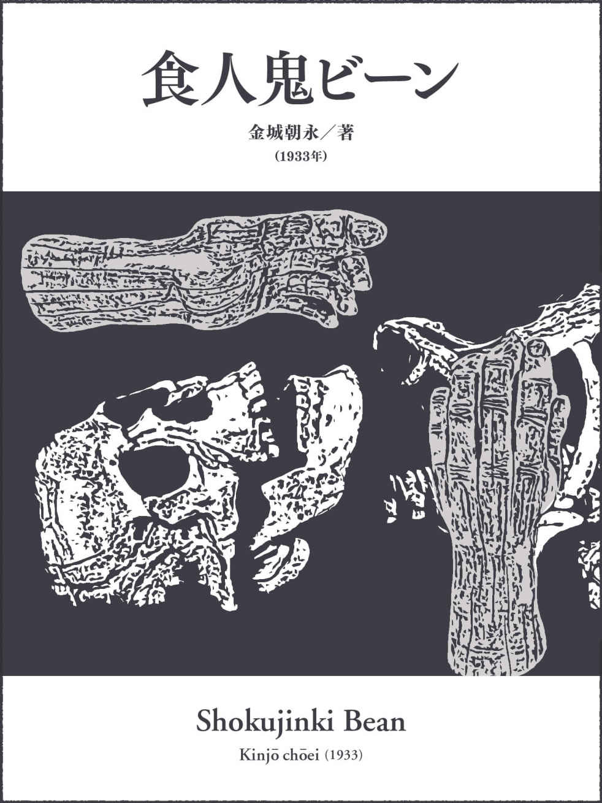
金城朝永（きんじょう・ちょうえい）
１９０２年５月18
日―１９５５年３月10
日
明治35
年、沖縄県那覇市で生まれる。沖縄研究家、方言学者。同じ沖縄県那覇市出身の民俗学者伊波普猷に師事。雑誌『犯罪科学』にのちの代表作となる『異態習俗考』の原稿を連載する。主流の民俗学とは一線を画す、異色の民俗学者として知られる。今回の食人鬼ビーンは異態習俗考の中の「カニバリズム」をテーマにした一節をご紹介する。
食人の習俗は現在ではすでにある一部の未開種族をのぞいてはほとんど見られなくなった残虐な行為であるが、現在文化の最高位に達していると自任している各民族の遠い祖先達の間でも宗教的儀式やあるいはその他種々の動機及び目的のためにこれを行っていたという例証は多くの人類学者が挙げている。しかし、これら未開人種や古代民族の間においてさえも人間の肉を日常の食料品の中には数えていないし、またいなかった。がここに、前に述べた宗教上の儀式としてでもなければ人肉に対する一種の迷信からでもなく、別に精神に異状を呈していたわけでもなくて、人肉を二十五年の永い間日常の主要な食料に供していた男があった。
なぜこの男は人肉を食わねばならなくなったか。しかもこの男ばかりでなく、その妻も、その児もその孫までもが平気で人肉をくらうようになったか。この奇怪なる一家を養う食用の人肉はいかにして得られたか。この結末はどうなったか......という事について話すのがこの物語である。
この物語の主人公ソニー・ビーンはエディンバラから程遠くない寒村の平凡な農家に生まれ落ちた。その誕生日なども不明な位であるが、種々の事情から推して西暦一三九〇年頃であったらしいことだけはおよそ見当がつく。畑を耕したり、草を刈るといったような単調な農家の仕事がやはりビーンの成長するのを侍っていたのは、ほかの農夫の生涯と何の変りもなかった。がビーンは生来の怠け者で、かような肉体的労働が嫌いであったし、有為な（？）
若者が朝から晩まで畑の中で汗水流して働かねばならないとはいかにも馬鹿げきったことであると常に不平をこぼしていた。それで一日中床の中にゴロゴロ寝転っていて、仕事に追い立てに来る親達に悪口雑言を吐き散らすばかりでなく、無理に引張り出そうとするとあべこべにこれを撃退するような始末であった。
しかし次のような恋愛事件が起こらなかったとしたら、ビーンもせいぜいコソ泥ぐらいになって、その生まれ故郷でちょっと普通の農夫と違った一生を終るのが関の山であったかも知れない。幸か不幸かビーンは村の娘に惚れて、この女と結婚したいと思った。がある困難な事情があって、二人は駆落ちすることになった。ビーンと娘は村から遠く人里離れた所まで逃げのびて行く途中、暴風雨に会いガロウェイの海岸のとある洞穴に隠れて難を避けることになった。夜になって、初めて偶然飛びこんだこの洞穴が普通のと違って、入口の小さい割に見かけによらず、広々とした奥行のある洞窟で、一マイルも行けば海に通じていることが判った。この洞穴こそビーン及びその一家の二十五年間の棲家となった所で、また怪奇な饗宴の開かれる会場であり、犯罪の有利な隠家を供した場所であった。
不幸にして、記録にはどうしてビーンとその妻が、強盗殺人、それに次いで人肉をくうようになったかという事については正確に物語ってはいないが、その動機を想像するのは決して難しい事ではない。
打ち寄せる波の音よりほか聞こえるものもない荒涼たる岩また岩の海岸、アイルランド行の船の寄る港へ急ぐ旅人以外にはほとんど人通りというもののない荒野。その点景人物として何か食物を求めねばならない半野蛮な農夫と女を頭に描いたら十分である。生命をつなぐ方法として強盗に変じたのは明瞭な話である。こんな所では、労働以外の生計の道としては強盗が唯一の方法である。しかもビーンは前述の通り正規な労働の嫌いな男であった。強盗、それから殺人を思い付くのもまた自然である。というのは当時英国の法律として強盗が捕えられると直に絞罪に処された。殺人は自衛策としても有利な道である。死人に口はない。それでしばしば性善なる盗賊（？）
も殺人鬼に変ずる場合が多い。しかもビーンはまた決して生来善良なる男でもなかった。
一夜ビーンはその隠家である洞窟の中から這い出て、通りがかりの旅人の所持品を強奪した上、これを殺してしまった。最初はその死体を洞穴の暗がりへ引きずりこんでおいて後でゆっくり処理する積りであった。
暴風雨の夜である。穴には一口の食物もない。飢餓は容赦なく二人の胃袋に襲来する。その前に二人は死体をバラバラに切り離して海に投げこむ積りで、そのままほって置いてあった。この方法が一番安全な証拠隠滅策であると考えたからであった。飢餓はますます募る一方である。何か口に入れる物でもありはしないかと二人は暗がりの中を手で探った。何物も無い！ 段々飢餓の苦痛で二人は気も狂わんばかりになった。食物だ！ 食物だ！ 食物よりほかは何もいらない。とにかく胃袋に何か入れねばならない。接吻、抱擁、情欲も飢餓の前では影をひそめた。二人の愛情は決して飢餓までは満たしてくれない。
突然二人の頭に数歩離れた所に横たわっている死体のことがぼんやりと浮かんだ。やがてそれがはっきりと意識の上にのぼって来た。今夜だけはこれで何とかしよう。明日は暴風雨も過ぎるだろう。そしたら穴をぬけ出て何かあたりまえの食物を見つけて来ることもできるのだ。男の眼の動きで女は敏感に男の心の動きを悟って賛成の色をその眼に浮かべる。今夜だけだと二人は互にささやき合う。四つの限は奇怪な欲望に燃え輝いて、布で覆うた切り離された✕✕へと突進した。✕が✕に✕✕✕る。✕✕✕✕と✕✕を✕てながら強烈な✕✕が洞窟にひろがる。胃袋にまで染みる✕✕だ。✕✕の✕を✕み✕いて✕り✕う。✕を✕りながら互に見合わせて笑う。飢えから解放された喜びの表現だ。胃袋の膨張は生理的に睡眠を誘い出した。満腹の後の安眠の心よさ！ 翌朝になって二人は一つの大きな問題を解決したことを悟った。旅人がいたら二人はもう飢える必要はない。一度の強盗と殺人は優に数日の食料を供給してくれる事を知ったのである。
これはすべて推量に過ぎないが、多分これに似たような事が最初にあったことであろう。
ビーン夫妻は二十五年の洞窟生活中に八人の男児と六人の女児を生み挙げた。子供達の大きくなるまでは一家の食料を獲るために洞窟を出て行人を襲うのがビーンの仕事であったが、やがてその仲間に成長した兄姉達も加わった。かくて殺害された旅人の✕✕を囲んでこの一家の奇怪なる饗宴は開かれた。生まれ落ちる時から、かような生活に馴れ切った子供達が、かかる行為を怪しむ訳はなかった。成長した息子や娘達は兄姉同志の間でビーンの✕✕✕✕✕。彼等の間に普通の道徳を求めるのが無理である。
ビーンが行人を襲う時は、必ず岩蔭に隠れて待ち伏せて不意打ちをするのが常であった。息子達を引き連れて出かける時は、徒歩の旅人なら五六人までは襲撃した。馬に乗った者であると二人以上組になったものは決して襲わない事にしている。かように勝算ある場合のみに限って強盗殺人を行うような用心深い仕方が二十五年の永い間ビーン達の犯跡をくらまし、官権の逮捕を逃れしめた原因であった。
ビーンの時代のようにまだ時世が不安な頃であっても旅人がしばしば行方不明になるのに対して、疑問と恐怖の念を抱かなかった訳はない。何等かの理由のない限り用に出かけたまま消息を絶つような事はその頃でも不審に思われた。官権も最初は黙っていたが、やがて活躍し出した。探偵が海岸近くの寂しい場所に派遣された。しかし、そのうちのある者はビーン及びその一家の者に殺害され、他の者は出かけた時と同様に何等の情報も収穫ももたらして来なかった。遂には探偵の仕事に応ずる者さえいなくなってしまった。世間の迷信深い人々はどこかに魔法使いがいて、それにさらわれるのだと噂し合った。
村々の人々は恐迫観念に囚われた。何でもない人間が疑われたり、罪のない旅人までが不審な件で、捕まって処刑されたのも一人や二人ではなかった。旅人が行方不明になる前晩泊った旅宿は乱暴な家宅捜査を受け、主人は殺人の嫌疑者に挙げられた。こんなのを見せつけられて、気の弱い旅宿の主人などは店を畳んで、この地方から逃げ出す者もあった。
永い間海岸の洞穴には気が付かなかった。これを見た者がいても、その中に人間が住んでいやしないかという疑いをかけたのは一人もいなかった。それ程この洞窟は当時の人からも見捨てられていた位であった。
しかし、とうとうビーン及びその一家の最後の時がやって来た。二十五年の間にたった一人ビーン一家の襲撃に会い偶然の機会に恵まれてその難を逃れることのできた男によって、今までの犯行が明るみに出されたのである。その遭難談は次の通りである。
ビーン一家の洞窟から程遠くない村に縁日が立った。日没後、ビーン一党が例のごとく獲物のかかるのを待ち伏せている所ヘ一頭の馬に一緒に乗った夫婦の者がさしかかった。馬は疲れていて、歩くというよりはよろめいているといった方がいい位であった。しかし跨った男は敏捷な武勇に秀でた士であった。彼は不意に襲いかかった一党を物ともせず、剣と短銃で挑戦した。が不幸にも激戦中に妻が馬から転り落ちた。それと見るや獲物にかかる狼のように一人がのしかかって女の喉笛をかいたかと思うとドクドクと流れ出る✕をほかの奴が✕✕のであった。この恐ろしい光景を見て男は気が狂った。その事が却って男に力と勇気を吹き込んだ。近寄る奴を馬の脚で蹴散らす。当るを幸い切りまくる。この勢にさすかの一団もよろめくがごとく見えた。そこへまた突然縁日帰りの馬乗の連中が、騒ぎを聞きつけて駆け寄ったので、ビーン一党は蜘蛛の巣をかき散らすがごとく夕闇の中に消え失せてしまった。男の話によって初めて二十五年間にわたる謎がすっかり解けた。その晩一行は直にグラスゴーに走り、事件は知事の耳に入った。知事はまた自ら王にこれを奏上した。時のスコットランド王ゼイムス一世は至って平民的な方であった。王はただちに犯人逮捕の命令を発し、王自ら遠征隊の陣頭に立つことを宣言した。
四百の精兵は王に率いられて事件発生後数日にして出発した。一軍の中には十分訓練をほどこされたスコットランド種のブラッドハウンドの一群も交っていた。犯人逮捕に最初から何故この勇猛な犬を用いなかったかを不思議に思うかも知れないが、当時ブラッドハウンドは軍用犬で王侯の城内にしか飼育されていなかった。今度ももし王の命令が無かったならこの犬は連れられなかったのである。
海岸の隅々までこの一隊によって、探索されて、やがて洞窟のあたりへ通りかかって来た。数匹の犬の姿が一隊から姿を隠したかと思うと、ブラッドハウンド特有の唸り声が聞こえて来た。数人の兵士が馬上から飛び下りて、犬の唸り声を追って進むと小さい岩穴に達した。洞穴に入って見たが、人の住みそうな所でもないので引き返そうとすると、犬の唸り声、叫び声、鳴き声が一段と高く激しくなった。一行は本隊に引き返した上、援兵を求めた。王自身も洞窟に侵入する一隊に加わった。
犬は勝ち鬨
を挙げるがごとく叫んでいる。犬にとり囲まれた中を見ると、ビーン一家はおりしも彼等の奇怪なる饗宴の最中であったらしく、人間の腕や脚や頭や胴等があたりにゴロゴロ転ったのが燃え残りの火の明りで描き出されていた。
記録にはビーン一家の者が抵抗したかどうかについては述べてないが、恐らくは何等術のほどこすべき時間も気力をも失っていたらしい。というのは戦うには余りに満腹し過ぎていたからである。いずれにしろ、ビーン一党はたちどころに繩を掛けられて洞窟から引き出されたことだけは事実である。洞窟内のビーン一家の食料貯蔵棚の奇怪な有様などは、すべて読者の想像にまかせて結末へ急ごう。
史家の説によると、ビーン一家の毒手にたおれた男女の数は千を越したろうと推定している。これは少し大袈裟かも知れないが、二十五年間一度の失敗もなく継続された犯行で、しかも殺害した死肉を主要なる食料品にしていた程であるから、被害者の数も決して少なくなかったに違いない。
捕縛されたビーン夫婦、その児、その小さい孫達はただちにエディンバラに護送され、一応刑の執行まで獄舎に繋がれた。
裁判などは開く必要もなかった。二十四時間以内に処刑すべく会議が一決した。しかし二十年の永きにわたる強盗殺人の大罪人の処刑だ。簡単に首をはねたり、首を絞めるだけでは飽き足りない。もっと残酷な方法が要求された。
男の方から先にすることになった。
ビーン一家の女達や子供達にも無理に、この残虐な処刑を見物させた。やがて男達が息絶えてしまうと今度は女や子供の番だ。子供を抱いた女はそのまま鉄の棒に縛り付け✕✕に✕し、✕にしてしまった。
この刑罰は、大罪人の最後を見るために押し寄せて来た数千の見物人の怒号、嘲罵、喚声、凱歌の中で執行された。当時の刑罰は一種の復讐行為であったのである。
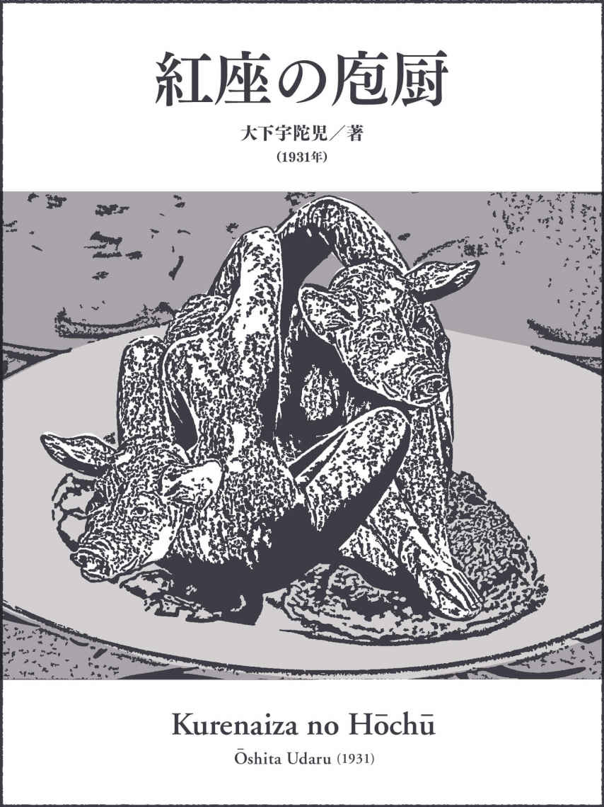
大下宇陀児（おおした・うだる）
１８９６年11
月15
日―１９６６年８月11
日
明治29
年、長野県箕輪村で生まれる。探偵小説家。大正14
年『新青年』でデビュー。江戸川乱歩、甲賀三郎と並び称される探偵小説界の重鎮。今回は、のちの日本ＳＦ作家にも通じるブラックユーモアあふれる奇妙な味わいの一篇をご紹介する。
最初はとにかく、お咲と喧嘩をしたことから書いてゆく。あのようにしておれが、何ともいえずまことにへんてこな経験をしたというのも、結局はおれがお咲と喧嘩をしたためであり、そのお咲と喧嘩をしたということが、ひいてはレストラン紅座
を見つけることになった、そのそもそもの起りにあたるからだ。
学校を卒業して以来、もう長いこといっしょに暮してきた女房のお咲──。
このお咲がいったいはどんな女であるか、おれはそのことを自分の恥にもなるのだしあまりくわしく書きたくないとも思うのだが、まア一口に言い現わすとすれば、牝牛のように頑丈で杉の木の丸太ん棒のように無神経で、その上に古今の歴史に書かれている女のうちで、最も貞節な女だ......とでも言っておいたらいいだろう。おれはその頃、長い長い失職のはてに、どこかへ勤め口をさがそうというような元気もなくしてしまい。くる日もくる日も、ごろごろと寝たり起きたりしていただけであったが、お咲は昼のうちは女工としてあるゴム会社への勤めに行き、ついにはその女工監督みたいな役にまでこぎつけたから、なかなか馬鹿にならぬ給料をとっていたし、夜は夜でレース編みだのフランス剌繍だのをやって月々百円以上もの金をかせいでいた。従っておれはふところ手をして遊んでいて、女房に食べさせてもらっていたというわけである。
かくの如く貞節なお咲に対して、おれが何の不平を抱くわけがあろう。おれは今でも真実お咲のことを、この上もなくありがたい女房であったとは考えているのであるが、さて、ありがたく思うということと、気が合わないとか性が合わないとかいうことは、まったく別の問題でも有り得るはずだ。おれは、お咲と気が合わなかった。そうして、毎日あかずに喧嘩をした。しかもその喧嘩が、たいていはまア、食べもののことから始まったのである。
なぜ食べもののことから喧嘩が始まったかというと、そのことは後の話とも関係があるので、少しくわしく説明しておく必要があるが、いったいがおれは生れつきまことに身体が弱かった。ゴム会社の台秤
にかけてみると、十六貫ピンピンあるというお咲の身体にくらべたら、おれの方は一番丈夫で工合のいいという時が、やっとこさ九貫八百匁
ぐらいしかなかったのだし、それはそれで自然におれたちの気質の上にも影響してきて、お咲の方が前いったように、杉の木の丸太ん棒みたいに無神経な女だったのに対し、おれときたらまるで針のように尖んがった神経の持主だったということになるのであるが、とにかくおれは大変に不健康だった。そうしてことに困っていたのは、ほとんど十年以来ひどい胃弱を病
っていたことであった。おれのおやじもそのまたおやじの、つまりおれのおじいさんも、みんな胃が弱くて、最後にはそのために命をとられたというくらいなのだから、おれの胃弱はたぶん遺伝的なものだったにちがいない。おれは子供の頃からして、ついぞ物をうまいと思って食べたことがなかった。学生生活を終る頃からはその傾向がいっそう甚だしくなり、目の前へどんな珍味をならべられたところで自分から進んでそれに手を出そうとしたことなど、只の一ペんでもあったためしはない。またたとえぱ、友人の結婚披露式などに呼ばれたとする。そういう時には、さアおれは困ってしまった。あんまり食べずに、箸をつけずにいた方が上品だとされる日本式の料理なら大いに助かる。ところが、何々会館だの何々グリルだので出される洋食となると、おれは実際泣きたいくらいに困ってしまって、それでも礼儀だからしかたがないと観念し、ボーイの運んでくる皿にはすべて一通り手をつけるが、さアそのあとではきまってゲロゲロとへどを吐く、それから三日ぐらいのうちは、コレラ患者のようになって寝こんでしまうのが常だった。新聞広告に出ているもろもろの胃薬や消化剤、あんなものはいくら買ってきたってききめがない。おれの胃の腑
は、いつでも腐ったドロドロの液体にみちみちていて、それがまた時をきらわず臭い臭いゲップとなり、グーッと咽喉
もとへこみあげてくるのであった。
ずいぶん汚くて品の悪い話だけれど、我慢して聞いておいてもらいたい。とにかくそんな工合でおれの胃の腑は極端に弱く、そのことをとても不倖せだと考えていたものだった。またそれと同時に、世の中のいわゆる健啖
家と称せらるる人間どもを、蛇蝎
の如く憎んでいたものだった。ああ、その蛇蝎の如き健啖家が四六時中自分のそばにいて、ムシャムシャと物をうまそうに食べてみせる！ これはなんという辛いことだったろうか、夫婦で同棲しているのだからしかたがない、といえばしかたがない。けれどもお咲は、もちまえの無神経さからおれが食べものを見ただけでも、グウッと嘔気
をもよおしてくる、それほどの胃弱に苦しんでいる時でも、おれの目の前で驚くべき食慾をもって、驚くべき健啖家ぶりを発揮したのであった。
「お咲、お前はまるで、馬のようによく食べるなア」
「ええ、今日はとてもおなかが空いちゃったのよ。あんたもこのたこのうま煮、とってもおいしいんだから口ヘ入れてごらんなさいな」
言いながらお咲は、ブツブツに切ったたこのうま煮のこってりと味をつけたのを、大丼いっぱいまたたくうちに食べてしまうのだ。
見ているうちに、おれは腹が立った。
そうしてお咲と喧嘩を始めた。
今になってみると、いささか滑稽なような気がしないでもないが、その時は滑稽どころのさわぎじゃない。お咲としても、おれの胃弱を知っていないわけではなく、それこそほかの家の女房にはできないくらい、医者よ薬よといって心配してくれたにはくれたのだが、せっかくそうやってうまそうに物を食べているところで、おれが何かしら文句をつけるので、しまいにはすっかりと機嫌を悪くしてしまい、
「じゃ、いいわよ。あたし、あんたと同じように物を食べずにいて、その代りゴム会社へも行かないし、レース編みもやんない。二人で、乾干
しになって死んじゃってやるから」
ふてくされて、そんなことを言うようになった。
あの晩も鯨の肉を食べたあとで喧嘩がはじまり、さておれは面白くないから、フラリと家をとび出したようなわけだ。そうしてあの不思議なレストラン、紅座をひょいと見つけてしまったわけだ。
紅座──。
この奇妙な、まるで芝居小屋みたいな名前をもった料理店は、いったいいつ頃からしてあったものだろう。おれが前にいったような事情からして、どこへ行くというあてもなく家をとび出したのは、たしか日が暮れてから間もなくのことであったと思う。家を出る時におれは、お咲が大切にしている箪笥
の底のヘそくり金を、うまく隙を見てくすねてきた。といってその金を、どこでどんなことに使おうという考えがあったわけでもなく、夜店のならんでいるにぎやかな街だの、あるいはまた変に物淋しい感じのする屋敷町だの、そんなところを足の向くまま歩きまわっていたのだが、すると突然おれは紅座の前へ出たわけだ。
見たばかりでも、それは変なかっこうの建物だった。
全体としては、砲台か軍艦のような形をしたところもあるし、外国風な寺院とかお城とかいったような感じもしないではない。壁面だけがむやみに広くなって、そこへばかに大きな半円形の窓がとりつけてあり、ことに変ってるのは建物の到るところが真赤に塗りたてられていたことだった。附近にある家々が妙に白茶けた色合のぺンキ塗りの家ばかりだったせいもあろうが、それはまるで途方もなく巨大な怪物の胴中を切り開いて、ぎゅっと摑みだしてきた心臓を、血みどろのまま手術台か何かの上へ置いたように見えたものである。怪物の心臓という感じをことさらに強めていたものは、正面入口の真上にある"RESTAURANT‐
KURENAIZA"と書かれたネオンサインの看板だった。建物の壁も屋根も柱も真赤に塗られている中で、この看板はネオンサイン特有の青い色を放っていた。あの輝きのあるじつに鮮明な青さである。あたかもそれは、怪物の心臓から走り出ている血管のように、赤い壁の上をのたくり廻りピクピクとふるえているのだった。
おれがびっくりして、あきれてその奇怪な建物を眺めていた時に、ふと、この何年にも感じたことのない食慾が、かすかにおれの胃の腑の底のあたりから起ってきたのも、おそらくはこの建物がもつ不思議な魔力のせいなのだろう。レストランなんておれとはひどく縁のないところだということを、おれはつい忘れてしまった。そうしておれは、フラフラとその建物の内へはいって行って、外套や帽子を入口にいた赤い服の案内人に渡してしまった。
見ればその入口からは、奥底も知れないような長い廊下がはじまっていて、このまた廊下の壁も床も天井も、外と同じように赤く塗ってあった。案内人が口には出さず、手真似でもってその廊下へはいって行けと教えてくれたので、おれもためらわずにそこを奥へ奥へと進んで行ったが、すると廊下は奥へ行くにしたがって天井が低くなり、壁も妙に凸凹
がはげしくなってきたので、おれは何だか怪物の腹の中へもぐりこんで行くような気持がしたものだった。そうして、
「エーイ、御新規さま、お一人！ Ａクラス二十二番室へごあんない──」
どこか遠くから、拡声機でもつかっているらしいこんなような声がしたかと思うと、突然おれの目の前へは、ずぬけて背の高い赤い服の男が、ひょいっと姿を現わした。
「ヘイ、ヘイ、これはようこそ、いらっしゃいました。さア、どうぞこちらへ」
ごく丁寧な言葉つきでいって、男はおれの先に立った。
案内された二十二番室というのは大変にせまくて、畳一枚しけるほどの広さもない。けれどもぐるりは緋繻子
の緞帳
で仕切ってあって、まん中にテーブルが一つと椅子が一脚、それでもとにかくコミではなく、独立した一つの部屋である。おれがちょっとまごつきながらもその一つきりの椅子に腰をおろすと、男はさっきと同じように丁寧にいった。
「ヘイ、手前ども、いつもながらの御引立をこうむりましてまことにありがとうございます。私は、不肖ながら当紅座の支配人をつとめまするもの、今後ともよろしく御見憶えおき下さいますよう。──旦那さまはもちろん、胃の腑が御丈夫の方ではございませんでしたな。よろしゅうございます。当店に独得の理論と技術をもととする調理法にもとづきまして、必らずや旦那さまの御気に召すものをさしあげることにいたします。ええとＡクラス本日のお献立は、とくに材料を吟味つかまつりまして、他のお客さまからも大分おほめの言葉をいただいているような次第でございますが、ハイ、ハイ、承知いたしておりまする。万事は私におまかせ下すって、ごゆるりと御休息なさりませ、向こうでなにかガヤガヤと騒いでおりまするのは、みなＢクラスのがむしゃら食いをする連中でございまして、別段お気になさるほどのことではござりませぬ。さアさア、どうぞ御気楽に遊ばしまして、ほんのしばらくのうちだけお待ちになって下さいませ」
おれは、ただもう、向うの言うなりになっているよりほかなかった。支配人が立ち去ってからしばらくすると、今度は一寸法師のように背の低い給仕人があらわれたが、その給仕人は型のごとく腕いっぱいに料理の皿をのせ、するするとおれのテーブルヘ近づいてきた。
そうしておれは、何かの糸であやつられるようにして、その運ばれてきた料理に片っぱしから手をつけて行った。
それは、いかなる材料をいかにして調理したものだか、わからない。
その料理はオードブルからはじまって、全部では十三皿にもおよぶ、まことにたくさんの料理であって、しかもそのたくさんの料理をあれほどにも胃の腑の弱かった私が、なんの苦もなくペロペロと平らげてしまったのは、なんという驚くべきことだったろう。
材料も、とびきりよいのに違いない。また、それにもまして料理人の腕前は天下一といってもよいのである。
おれは一番おしまいに出たコーヒーのほろにがさを、舌の先で味わいながら、つくづくこの料理のすばらしさに感心していたのであったが、やがてそのコーヒーも飲み終わり、久しぶりで心地よくいっぱいになったお腹をなでなで卓上の葉巻をとってくゆらしていると、そこへ給仕人が勘定書をもってきた。
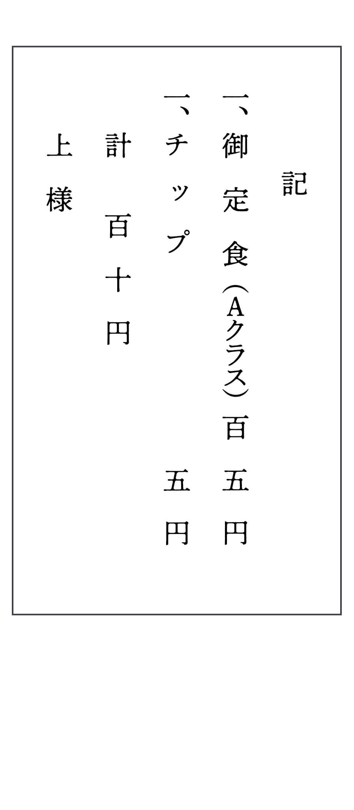
おれは、びっくりして、給仕の顔を見た。
「オイ君。こりゃ、いくらなんでも、高いじゃないか」
「いえ、けっして、お高くはございません」
「イヤ、高いよ。間違いじゃないかい」
「間違いではございません。Ａクラス、百五円は、勉強してあるのでございますので」
「ふーん、そうか、じゃ、君ではわからん。支配人を呼んでくれたまえ」
料理屋の勘定を値切るなんてずいぶん気まりの悪いことだったが、なにしろ公衆食堂などでは十五銭で御飯が食べられたし、とびきり上等のうなぎ丼でも一円はしないという時代だから、おれとしてはだまってひっこんでいるわけにはいかない。支配人と直接談判をやろうと思ったわけである。
支配人は、すぐにやってきた。
そうして、おれの方からはまだ何も言わぬうちに、いきなりしゃべり出した。
「ハイ、ハイ、お呼び立てでございましたか。いえ、もう、よくわかっておりますよ。当店の勘定がお高いとおっしゃるのでございましょうが、そこを旦那さまもよく考えてみて下さいませ。旦那さまといたしましては、こうやって御自分のお気に召した料理をお腹いっぱい召し上ったなどということは、おそらく、生れてはじめての御経験だったのではありますまいか。手前ども、それを承知しておりましたので、ふつうの、胃の腑の達者なお客さまならば、Ｂクラスの方ヘコミにして投げこみまして、ありきたりのカツレツだのビフテキだの、ないしは、ミカキニシンの煮込みだのをあてがっておくところでございましたのを、旦那さまはとくにＡクラスで入念なお料理をさしあげたという次第でございまして、ハイ、無論これは、お高いようには見えますなれども、胃の腑のお弱い旦那さまにとっては、けっして法外な値段ではございませんよ」
そうしてこう言われてみると、おれもなるほどと、うなずくよりほかなかった。
女房からくすねてきた金を、そっとテーブルの下でひろげて数えてみると、ちょうどに百十円ある。
おれは会計をすました。
支配人はありがとうございますといって受け取ってから、さも思いついたようにして言い出したものである。
「ええと、時に旦那さま──」
「なんだい？」
「旦那さまは胃の腑が弱くて、たいそうお困りになっていらっしゃいますね。その胃の腑を、ほかの丈夫な胃袋とお取り換えになりたいとは思いませんか」
「うん、そりゃ、取り換えられるものなら取り換えたいね。しかし、そんなことは出来ないのだから仕方がないよ」
「いえ、いえ、それは旦那さま、できないとおあきらめになるのは早すぎますよ。じつは手前ども、こうやって料理店をやっている一方では、その胃袋取り換えの外科手術の方もやっとりますので、それにはただの一万円でございます。丈夫な病気や悪い癖のない消化力旺盛な胃袋を買いもとめるために、少々のところ元値がかさみまして、そのために一万円ちょうだいいたさないとどうも手術ができんのでございますが、その一万円さえ御用意下すったらもう間違いはございません、即座に胃袋の取り換えをいたしてさしあげます」
「ふーん、そりゃしかし、ほんとかね」
「ほんとにもなんにも、手前ども、でたらめや冗談でそんなことを申しているわけではございません。健康な生きている人の胃袋を買いとりまして、それを旦那さまのお腹の中へ、まるで生れた時からあったやつと同じようにキチンとはめこんでご覧にいれます──当店の料理人がどんなに確かな腕前を持っているかということについては、旦那さまも、多分もうお気づきになっていらっしゃるとは思うのですが」
「うん、それならもう、さっき料理を食べてみて、とても感心していたのだよ」
「なら、お疑いあそばすにもおよびますまい。胃袋取り換えの手術は、その腕のたしかな料理人がやるのでございます。少しも不安な点はございませんし、さよう、早い話がその手術室をこれからご覧になったらいかがでしょうか。ちょうど今夜は旦那さまと同じような胃弱の方が、それはもう胃癌までできていた使いふるしの胃袋を、長いうち心配していたあげくに本年十七歳になるある男の子の胃袋を買うことになって、それと取り換えの手術にかかったところでございます。手術はもうボツボツはじまるはずです。さァ、私といっしょに行ってそっと覗いてごらんなさいませ」
支配人はその大きな手でおれの腕をつかみよせ、ぐいぐいと引っぱるようにする。おれは足もともフラフラ、ついて行ったのであった。
廊下は際限なく、深くつづいていた。その廊下を何回となく折れ曲り、やがておれは建物のうちの奥の方の、どんづまりまでつれて行かれたものらしい。
「さァ、どうぞ、ご遠慮なく──」
急にそう言われて眩しい光がパッと射しているところへ出ると、そこには大きな釜だの、俎だ
の、あるいはピカピカ光る肉切庖丁だの、そんなものがいっぱいに並べてあることがわかった。
いうまでもなく、紅座の料理場である。
見るとその部屋の中央には、今しもとくに大きな俎が、しかも二つ出されていて、その一つには全身まるはだかになった少年が一人、じっと眼をとじたまま寝かされており、他の一つにはおれよりもっとひどく痩せ細った年ごろ四十がらみの男が、これもやはり丸はだかで身うごきもせず仰向けに寝ころがっているのだった。
俎のそばに、筋骨たくましい鎌のような三角な頬髯をはやした男が、馬鹿に光る大きな鋏を手にして立っていたが、これこそは支配人が自慢している紅座の料理人頭に違いない。彼は支配人とおれとがそこへはいって行くと、チラリ、ふりむいておれたちの顔をながめたけれど、すぐに鋏をもちなおし第一の少年の寝ている俎へ近づいて行った。
「旦那さまはだまって見ていて下さいよ。声を立てると少年が眼をさますかも知れません。さまさせちゃ工合が悪いので、手術は眠っているうちにやるのですからね」
支配人が急に改まった口調で言い、おれは息をのんで眺めていたものである。
ほんのしばらくのうち料理人頭は、少年の胸もとから臍
のへんまでを静かに手のひらで撫でていたが、そのうちに鋏の先きを、ブツーンと少年の腹へ突きさした。
少年の身体はピクリと動いたようである。が、料理人頭は木彫りの像のように無表情で、すぐに鋏をチャキチャキとはたらかせ、間もなく少年の腹部をスッパリと断ち割ってしまった。流れ出す血が、俎の周囲にとりつけた溝へあつまり、ガラスの管をつたわって下においてあるアルミの鍋の中へ流れこんだが、これはなにか他の目的に使うのであろう。見ているうちに、少年の胃袋は切りとられた。そしてその次に痩せた男の腹が断ち割られ、その中からひどく汚い色をした古びた胃袋がとりだされると、いっしょにあとへは少年の胃袋が押しこまれ、妙に光沢のある透明な糸で、食道と胃袋、胃袋と腸とのつながり目が縫いつけられた。
魚や鳥の料理をするよりももっと簡単な手術のように思われたが、料理人頭はそれだけのことをしてしまうと、サッサと部屋の片隅へ行って水道の水で手を洗い、ポケットから出した太い葉巻をポカリポカリさもうまそうにふかしはじめ、あとは助手の料理人たちの仕事になるらしい。助手たちは痩せた男のぐるりへ集まり、何かガヤガヤとしゃべりあいながらまだ断ち割られたままになっている腹の皮を縫いあわせた。そうしてそのあとで、こちらは胃袋を切りとられたままになっている少年の身体を無造作にかつぎ上げて壁の方へ行き、そこにあった冷蔵庫の中へ、ヨイショ！ とかけ声をして投げこんでしまった。
「さて旦那さま、これで手術は無事にすみましたわい。旦那さまはこれからチョクチョクと手前どもへいらっしゃいまし、そうして今の手術をおうけになったお客さまが、どんなにすばらしい健啖家になられるかよく御観察をなさいまし、あのお客さまは、今までのところＡクラス御常連のお一人だったのでございますが、これからはだんぜんＢクラスの方へお廻りになりますよ。Ｂクラスであの方がどんな工合にして物を召上られるか、それを旦那さまがごらんになれば、イヤもうどうしたって、旦那さまも同じ手術をお受けにならずにはいられなくなります。──忘れないうちにもう一度だけ申上げておきますが、手術料はたった一万円でございます。それだけは、ぜひとも頂戴させて下さいまし」
支配人は、ふたたびあの丁寧な口調でくりかえしくりかえし言うのであった。
「一万円ほしい。ああ一万円ほしい！」
ほとんど口ぐせのようにして、おれが毎日そんなことを言うようになったのは、前に述べたようなことがあってから一カ月ばかりたった後である。
「オヤオヤ、どうしたんですの、あなた？ どういうわけで一万円なんて大金がいるんですの」
お咲が変に思って訊くのに対し、おれは、
「なアに、一万円あれば、おれの生れつきの胃弱が忘れたようになおってしまうのさ」
簡単にそう答えておいただけだが、無論それはああして支配人にもすすめられたことだし、その後四、五回紅座へ行ってみて、その度にあの痩せていた男がどんなに驚くべき食慾を持つようになったか、それをおれは目の当たり見てきたからである。
古びた癌にかかっていた胃袋を、新しい少年の胃袋と取り換えてもらったあの男の、真に奇跡的な食慾の恢復
──。
それを見るとおれは矢も楯もたまらなくなり、どうしてもあの手術をしてもらわねばならぬのだと決心した。ただ困るのは一万円という大金のことで、寝ても覚めてもそのことばかり考えていたのであった。
お咲としては、事情がハッキリとわからないながらも、そうやっておれが胃弱をなおそうとしていることにつき、なんとなく張り合いが出てきたのらしい。彼女は、
「ねえ、あなた。一万円あれば、本当に胃の弱いのなおってしまって、たこのうま煮でもなんでも、食べることができるようになるの」幾度もそういっておれに訊いた。そうしてちょうど年末が近づいてきて、ゴム会社からのボーナスをもらってきた日に、思いつめたようにして言うのだった。
「あなた、ねえ！」
「ウム、なんだ」
「あたし、あなたがね、ほんとうに胃をなおすのだったら、一万円のお金をこしらえるわよ」
「ありがたいな。だけどそんな金、つくる目当てがあるのかい」
「ないことないのよ。ほら、ここに会社のボーナスが五百円あるでしょ。それに、今まであたしが、まさかの時のためと思って貯金してきた金が二千円はあってよ。その上に質屋へ行けば、指環だの帯だの羽織だので、千円ぐらいは借りられると思うわ」
「待て待て。それじゃしかし、五百円に二千円の千円で、三千五百円しかないじゃないか。一万円には、六千五百円も足りないぜ」
「だからさア、あたし、今日からすぐと、田舎へ行って来ようと思うのよ。田舎へ行くと、とってもお金持ちの伯父さんがあるわ。その伯父さんにそういって、あと六千五百円、もらってくることができると思うの」
「へええ、そうかい。そういうことができるとすればずいぶん都合のいい話だけれど、伯父さん、そんな六千五百円なんて金をくれるかどうか心配だね。第一、田舎にそんな金持ちの伯父さんがいるなんてこと、お前は今までに一度だっておれに話したことはなかったじゃないか」
「ううん、それはね、今までは話さなかったのだけれど、確かにそういう伯父さんがいるのだから、あなた安心していていいと思うわ。それに伯父さんは親切な人よ。六千五百円、下さらないとしても貸して下さることは確かなの。ねえ、あなた、あたしこれからすぐと田舎へ行っていいでしょう？」
「いいさ。無論、いいさ。けれどもね......」
「けれども、どうしたっていうのさア。あたしあんたの病気がなおるのだったらこんな嬉しいことはないし、貯金やなんかちっとも惜しいとは思わない。田舎へ行きさえすれば、きっと耳をそろえて一万円こしらえるのだから、あなた、その間一人きりで待っていて頂戴ね」おれは、お咲が可愛ゆくてたまらなくなった。そうして、こんなよい女房を持っているものは、世間中にそうたくさんはいないだろうなどと思った。
お咲は、ゴム会社へは病気だとうそを言ってきてから田舎へ行き、さて四五日ほどのうち、何もおれのところへは言ってよこさなかった。「元気で出かけて行ったけれど、金というものは、そうオイソレとこっちで思うようにできるものじゃないのだからな」
おれは秘かに、そんなことを思ってみたりした。ところがある日のこと、意外にもこのお咲から電報為替で一万円おくってよこしたのである。為替以外には手紙も何もよこさなかったが、おれにはよくわかっている。ようやくにして手に入れた一万円を、一刻も早くおれのところへおくり、一刻も早くおれを喜ばせようとしたものにちがいない。
おれは為替を現金にかえるやいなや、その足ですぐに紅座へかけつけた。
「頼むよ。一万円もってきたんだ。あの手術をさっそくやってもらいたいね」
支配人に会って、紙幣束
をポーンとそこへ投げだして見せると、支配人は大変に機嫌よく、両手を合せてもみ手をしながら、
「ヘイ、ヘイ、かしこまりました。ちょうど結構なことには、手前どもでも四五日前に上等な胃袋──たこのうま煮を一時に丼三ばい食べても大丈夫だという胃袋を用意したところでございますから、ではすぐに胃袋を取り換えにかかりましょう。──手術前に麻酔剤をかけますから、痛みは少しもございませんよ。さア、どうぞこちらへ」そういっておれを例の手術室──実は料理場へつれて行き、即座に手術をはじめたのであった。
手術中のことは麻酔剤をかけられていたので、おれはぜんぜん覚えがない。
しかし、無論これは、前に見たあの胃癌の男の場合と同じようなものであったにちがいないと思う。おれは、麻酔剤から醒めたのがその晩の十二時近くのことであって、その翌日からは、もうほとんど手術の傷痕がべつに目に立たぬほどになおりかけていたのであった。このことは、今までのところ誰に話して聞かせても本当にしてくれない。が、うそじゃない。手術をうけたのちのおれは、たった一日だけ紅座の別室に寝かされていただけで、二日目からは実に驚嘆すべき健啖家になったのである。
おれはそれから後三日間というもの、紅座のＢクラス席へ陣どって、朝から晩までビフテキでござれ、カツレツでござれ、またはミカキニシンのうま煮でござれ、手あたり次第に食べたものだった。
そうしてその四日目のこと──。
その日おれは、もうそろそろ自分の家へ帰ろうかと思っていたところだが、朝になって眼がさめると腹が空いていてたまらない、顔もろくすっぽ洗わずに、Ｂクラスの食堂へとびこんだ。そうして、血の出るようなビフテキを三つと、ハムアンドエッグス二皿と、ハンバーグステーキ二人分と、マカロニのバター焼き四人前とを大いそぎで註文した。
手術後四日間は、無料で各種料理をサービスしてくれることになっていたので、今日こそは思い切ってたらふく詰めこんでやろうと思っていたわけである。
がしかし、朝はまだたいそう早かった。そうして、さすがの紅座でもまだ料理人たちの手が廻りかねて、せっかく註文した料理がなかなか運ばれて来なかった。
「えい、ちくしょうッ！、何をぐずぐずしているんだ」
手術以来、別人のようになってしまったおれの胃の腑は、もう空いて空いて、空き切っているから料理のくるのを待っているのがとても我慢しきれない。それでもおれは、できるだけ我慢していたのだが、やがて二十分あまりも待たされると、居ても立ってもいられなくなったみたいで、よし、それなら怠けている料理人たちを叱りとばしてやれというので、料理場の方まで押しかけて行ったものである。ところが、行って見た料理場では、ひどく間のぬけた顔つきの新参者らしい料理人がただ一人、まだ掃除すらろくにしてない料理場のタタキの上に、ボンヤリと立っているのであった。
「オイ、君。早くしないか。ぼくは、一時間も前から註文を通してあるのだ。ビフテキ三つ、ハムアンドエッグス二皿、ハンバーグステーキ二人分、それからマカロニのバター焼き四人前だ！」
「ヘイ、ヘイ......」新参者の料理人は、ペコリと頭を下げた。
「どうも、申しわけもねえです。しかしあっしは、さっきからもう、ビフテキに取りかかろうと思っていたところなんで──」
「思ってだけいないで、すぐ取りかかったらいいじゃないか。あんまり時間が長くかかると、ぼくは癇癪
が起ってくる！」
「ヘイ、ヘイ、そりゃもう、早く取りかかりたいのは山々なんでして、しかし、どうも取りかかれませんので」
「じれったいな。どうしてだい？」
「肝心の肉が見つからねえんですよ。旦那ア、Ｂクラスでしょう。Ｂクラスだとすれば、Ａクラスの肉でビフテキを焼くっていうわけにゃいかねえし」
「待て待て。じゃ、Ｂクラスでなくて、Ａクラスの肉ならあるのかい」
「ヘイ、それはありますよ、ありますけれども」
「かまわないじゃないか。そのＡクラスの肉を焼いてくれ！」
「いえ、いけません。Ａクラスの肉は、特別の肉です。Ｂクラスヘなんか出したものなら、親方から目の玉のとびでるほど叱られます。まアまア、Ｂクラス肉のくるまで待っていておくんなさい」
が、おれは、とても待ってなんぞおられなかった。そうして、自分自身、材料の肉を深すつもりで、塵のそばにある冷蔵庫へ近づきそのハンドルをにぎって、ぐいと扉を前へ引っぱり出した。そのとたん、
「呀
ッ！」おれは、ひっくりかえるほどにびっくりし、そこを、あわてて逃げだしたのである。廊下を曲り曲りで入口へ出て、あともふり向かずに一目散、スタコラと家へ逃げ帰ったのである。
紅座の冷蔵庫からは、おれの女房のお咲がぬっと首をつき出したのであった。蒼い蒼い皮膚をして、あの綺麗なまん丸いお腹をすっぱりと断ち割られて、お咲がそこにいたのであった。お咲がいったい、どうしてあんなところにいたのであろうか。
それについてはおれは、警察へ届けて見るという気持ちにもなれず、そうかといって紅座の支配人にわけを訊いてみるのも不気味だし、結局、おれ一人きりで秘かに考えているのだが、おそらくはまアお咲が、一万円の金をこしらえたいばかりに、胃袋を紅座へ売ったのではないだろうか、と思うのである。もとより、お咲は自分が殺されて胃袋をとられるのだとは、知らなかったことであろう。田舎の金持ちの伯父なんか元からいなかった。けれども、一万円の金を工面するのに、亭主のおれを安心させておき、さて紅座の方から申出
した、なにかとほうもなく巧みな口実にだまされて、胃袋をとられてしまったというわけなのである。紅座では、お咲がおれの大切な女房だということを、知っていてそういう風にしたのかどうか、それはおれにもわからないことだ。が、ともかくお咲は胃袋をとられ、そうして多分、Ａクラスのための料理の材料にされてしまったのであろう。確実にわかってることは、お咲の胃袋が今はおれの腹の中へ、はいってしまったということなのである。なぜなら、お咲はそれっきりもう、おれのところへ帰ってこない。そうしておれの胃の腑は、ありし日のお咲のように馬の如く達者であり、たこのうま煮を大丼いっぱい食べても平気だし、従って体重も十八貫ピンピンというところまで増えてきている。これすなわち、お咲の胃袋がおれの胃袋になったという証拠なのである。紅座へは、あれからのち一度も足踏みをしないでいるが、相変らずあの奇怪な建物のうちで、奇怪な料理を食わせ、また奇怪な胃袋取り換え手術をやっていることであろうし、おれはおれで愛すべき女房お咲のおかげで、食べたいものをたらふく食べ、飲みたいものをたらふく飲み、いとも健康にその日を送っている。
よき女房のお咲は、草葉のかげから食慾旺盛なおれの姿をながめて、今やきっと心から満足していてくれると思うのである。
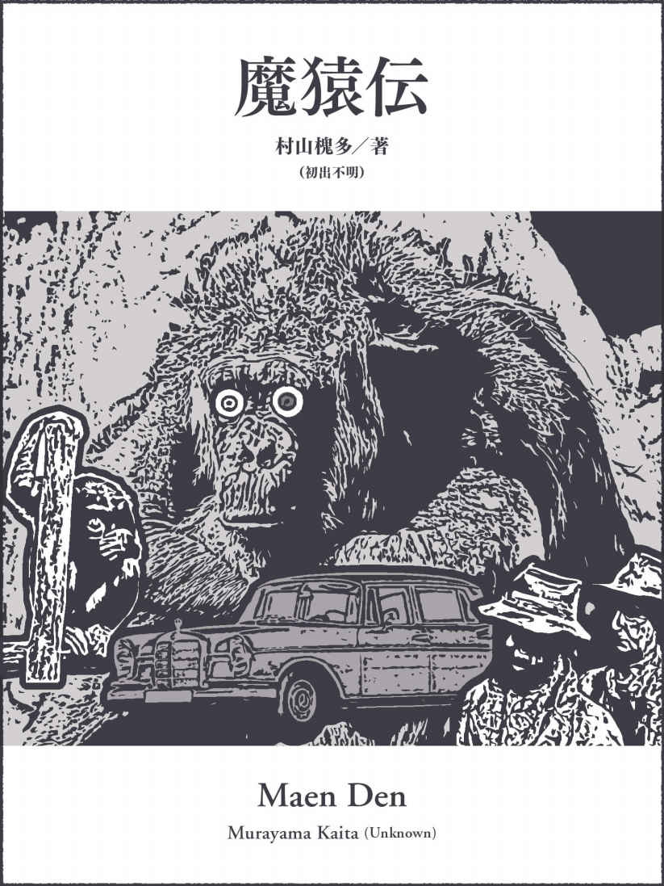
村山槐多（むらやま・かいた）
１８９６年９月15
日─１９１９年２月20
日
明治29
年、愛知県岡崎町で生まれる。洋画家・詩人・小説家。10
代よりボードレールやランボーに親しみ、詩や水彩画などを創作した。18
歳にして第１回二科展に『庭園の少女』が入賞。早熟の天才画家として注目を浴びたが、結核性肺炎のため大正３年22
歳の若さで死去。今回は幻想的な探偵小説といった趣の一篇をご紹介する。
今から約十年以前の事である、僕はその時分帝大法科の学生であったが、或る年脳を悪くして一年ばかり休学した。その間僕は殆
んど都門を離れて唯彼処此処
の美しい山水を友として暮した。丁度その夏は信州軽井沢に居たが滞在中偶然に一人の友人を得た。それは絵島
元麿
と呼ぶ男爵で、早稲田を出てからぶらぶら遊んでいる青年紳士であった。絵島君は眉目秀麗性質寛大で実に円満な人である。僕は相知ると共に直ぐに無二の親友となってしまった。
二人は一箇月ばかり共に暮して居たが、九月の未となりもはや軽井沢の空気も肌寒くなった。或る日彼は僕にこんな事を提議した。「君は猟は嫌いかい」「嫌いとも好きとも未だやった事がないよ」「僕はこれでもその道では天狗なのだ。どうだ僕と一緒に行って見ないか」「どこへ行くんだい」「実は僕の別荘が木曽の山中にあるんだ、そこへ行って鳥を撃とうじゃないか。君是非ついて来い」「行ってもいいな」そこで二人は直ぐに木曽に向った。
別荘と云うのは随分奥に建って居て薄気味が悪い様な場所だ。その後方に土俗
が「千里ケ谷」と呼ぶ非常に広い三角形をした谷がある。そこには千古の大木が森々として生い茂り昼なお夜の如くである。僕は絵島君がこの谷を狩るんだと告げた時何となく恐ろしい気持がした。が着いて二日ばかり休んだ三日目の朝いよいよ二人はそこへ出掛けた。絵島君は愛用のブローニングと称する自動銃を持ち、僕にはグリーナー二連銃を貨して呉れた。猟犬にはコマと云う名のゴルデンセッター種の犬をつれた。「さあ千里ケ谷へ出掛けよう」と絵島君は杉林の中の細道をどんどんと進んでゆく。僕もあとについて行った。「この辺からもう谷だ」成程道は段々と下り始めた。見上げると樹木の梢を通して四方にそそり立つ山々が壁の様に見える。空気は段々湿っぽくなり時々ギャアギャアと鳴く怪鳥がある。僕は思わずぶるぶると慄えた。
絵鳥君は間もなく発砲した。轟然たる銃声は谺
に響いた。が鳥は逃げてしまった。「ご自慢の手練も怪しい物ではないか」と僕が戯えば、彼は躍起になって撃つが、一羽も捕れない。コマは手持無沙汰にその辺の落葉の間を駆け廻るばかりであった。かくして飯時
になっても我等の糧囊
は空である、それでまず一休みして昼飯を食うことにした。
絵鳥君は苦笑を浮べながら水筒のウイスキーをぐっと呷
った。「晩までにはきっととれるよ」弁当を食い終るや否やまた方々を駆け廻った。が何一つもとれない。そして「千里ケ谷」の広い中も大方歩き尽してしまった。我々が疲れ果てて丁度その谷の一方から高まって居る斜谷の下に来た時であった。絵島君はすこし自棄
気味に言った。「さあここを一ぺん上って見よう」「おい、もう日が暮れるぜ。今日はもうこれで切り上げようじゃないか」「いやこの山を一度見なくては気がすまない」突然右手の高い岩の上に一羽の雉子
が止まった。すぐ覗
いを定めて絵島君はズドンと発砲した。その途端二人は思わず立すくんで耳を立てた。何とも知れぬ不可思議な動物の悲鳴が岩のかなたから激しくきこえ出したからである。「ヒヒヒヒヒ......」と絶えまなく続く。まるで狂女の叫びの様に物凄い声。「何だろう。何だろう」コマはきりっと耳を立てた。たちまち弾機
の様に躍り上ったが、猛然と岩の方へ駆け上ったかと思うと姿が見えなくなった。
僕も絵島君もそれに続いたが約三十間も上ると岩頂に達した。見るとその岩の彼方に深い凹
みがある。その中で、何だか金色に光り輝いた怪物とコマとが猛烈に格闘して居る。岩頂からその所まで点々と鮮血が滴たり続いたので見ると、怪物は確かに今打った弾丸で傷ついたのだ。二人は近寄った。「猿だよ、猿だよ」喜びの声で絵島君が叫んだ。なるほど猿だ。全身には強い金光が発する毛が一面に生えて、まるで太陽の様に輝く、その顔はしかも真青だ。形はかなり大きくて七つ八つの子供くらいある。よく見ると、足に弾丸を受けたと見えて真赤に染まって居る。逃げようとする所をコマに喰い付かれたのだ。コマは背中にしっかりと食い付いて居る。猿は必死の力でそれを振り離そうとするのだ。「大変な物を撃っちゃったではないか」「どうだい。大手柄だろう。さあ君はそこいらから蔦
つるか何かを見つけて来給え。こいつを生捕りにするのだ」種々苦心してやっとこの猿をぐるぐる巻きにした。コマが中々離れないので困った。
僕は頬ぺたに猿の唾液を三度も引っ掛けられ絵島君は洋服の腕の所を爪でずたずたに引き裂かれてしまった。棒に足を吊るして二人は猿を担いだ。そしてもはや全く夜となった森の中を通って、別荘へかえり着いた。
我々の獲物を見た啞
の別荘守の老人は見るなり形相を変えて主人の手にすがり付き手真似で何か知らそうとした。がこの獲物で得意の絶頂に達して居る絵島君はそんな事は気も止めなかった。が僕には何となく、この老人が「これは魔物です。早く逃がしておやりなさい」と言ってる様に思われた。そして恐ろしい気がした。
その夜はそのまま猿を納屋にたたき込んで寝たが、翌朝早く起きて猿の縛を解き大きな急ごしらえの檻の中へ入れた、昨夜中逃げようとあせったと見えてその顔は物凄い疲労の色を帯びて居た。が檻の中へ入れられると何もせず唯足の傷をベラベラとなめた。「この猿は殺さずに飼って置こう。ずい分珍らしい猿だから」と絵島君は惚れ惚れとこの猿に見入って居る。猿は食物を喰べ身体も休まり段々と狂悶の状態から脱して来た。そして静かにうずくまって黙考しながら僕等の顔を眺めて居る。全身の金毛が時々ぶるぶると顫
える。その美しさは譬
えんに物もない。その眼がそれに不思議に美しい。猛悪な分子のすこしもない聖者の眼である。ただ人の心にある恐怖を起させる事はその顔色がまるで青銅で作った様に青い事である。その青さは尋常ではない。「何と云う奇態な猿だろう」と僕は思わず叫んだ。友も同じ様に感じたかこの猿に「道士」と云う名を付けた。
二人は以後十日ばかりこの猿に夢中になった。そして長く見て居るに従って段々と多くの奇異なる特徴を見つけた。この猿の智力は素晴らしい物である。我々の言語を明かにきき分ける。如何なる場合にも怒らない。また食物を欲しがらない。常に黙坐して居る所は半可な道士そこのけである。
或る日我々はまた彼の背中に不思議な赤色を帯びた正三角形がぴたと金毛を透かして現われて居るのを見た。それは一時は人工かと疑われるばかり正確な三角形である。その内に「道士」の為に大きな檻が出来上った。その檻は眺望よき庭園の隅に据えられた。猿は広くなったので満足そうにびっこ引き引き檻の中を歩き廻った。足の創
は癒
ったが遂にびっこになってしまったのだ。その内に僕は急用で俄
に絵島君を残して別荘を去らなければならなくなった。僕が立つ時この青面道士に戯れに「さよなら」と云うと、何と思ったか猿はすっくと立上ってじっと僕の顔を見つめた。その時僕はその眼の中を見かえして、妙な事を発見した。それはこの猿の右の眼玉は緑色であるのに左眼は美しい黄金色を帯びて居る事であった。
その後僕は暫らく絵島君と何の便りもしなかった。あの山荘を去ってから約一ケ月目の或る日、本郷の或る洋食店内でふと絵島男爵の相変らず壮健なる風姿に会した。「やあ暫らく」「やあ君か。暫らくだった。吾輩は昨日木曽から帰ったばかりだ。便りをしようと思ってつい御無沙汰しちゃった。君が帰ったあとで大変なことがあったのさ」と彼は僕の盃に満々とボルドーワインを注いだ。「それはあの猿のことさ、あの猿は君魔物だよ、僕は実に気味が悪くなったね。君が帰ってから僕は毎日あの猿を見て居た。彼奴
は始終黙って何事かを考えて居る。そうだ僕がつけた「道士」と云う名はほんとうだ。僕は初めは唯妙な猿だと思って居ったがその内に何だかあの猿が無暗に怖くなったね。動物の様な感じがしないんだ。おまけに別荘番の爺め僕に手真似でしきりに逃がしてしまえと勧めるのだ。またある日その眼玉が片眼が金で片眼が緑なのを見た時益々気味悪くなったね」「それは僕も見たよ」「そうかい。あれは実に凄いよ。夜になるとその金眼の方が素晴らしく光り出すのだ。夜庭を見てそれが星の様に檻の中で光るのを見るとぞっと身慄いする。そんな事で僕はもうこの猿を放してしまおうと思った。そう思ってる内に、そうだ今から十日ばかり前の或る日の事なのだ。僕は庭に面した座敷の縁側に呆然頬杖をついて庭の猿の檻を見て居た。檻の中は相変らず金衣青面の道士がじっと考え込んで居る。僕もじっと考えながらその猿を見て居た」
「すると急に空に当って遠雷の音がし始めた、僕は雷はむしろ好きな方であるからそのまま動かずやはり猿を見て居た。するとね、あれほど平常落着いて居る猿がきっと天の方を見上げたかと思うと、不思議や急に立ち上って檻の中をあちこちと歩き始めた。これは面白いと思って見て居る内に雷は非常に激しくなって来た。そしてそれにつれて猿はいよいよ急に檻の中を歩き廻ったが遂には走り始めた。そしてその運動が極度に達して来て僕の眼に殆
んど金の独楽
がぐるぐる廻る様に見えて来た刹那である。たちまち猛烈な大音響が僕の鼓膜を貫いた。雷が庭へ落ちたのである」
「僕は一時全然気を失ってそこへ突っ伏してしまったがその時間はほんの五六秒だと思う。そして眼を上げると何よりびっくりした事は檻の据えてあったすぐそばの松の大木が真二つに打裂かれて居る事であった。「猿は」と思って何ともなって居ない檻の中を見ると僕は気絶し掛けたな。猿の姿が見えないのだ。するとその途端たちまち空中に当って鋭い叫びが聞こえるのだ。見上げると、空をはるかにあの金猿の姿が千里ケ谷の方角さして飛び去るのが見えた」
僕はそれを聞いては何と解釈して善いか一寸
見当が着かなくなった。そして二人は唯黙然として互に杯を満たし合うばかりであった。
二人は以上の奇異なる事に遭遇してから十年の月日は瞬く間に経ってしまった。男爵はかなり移り気の人で多くの事に手を出すが何一つ成就しない。この二三年はまた法医学に熱中し姶めた。それに彼の居間はまるで犯罪博物館の様に多くの恐ろしい物品や書物で埋まった。
それは八月末の或る夜であった。僕は一箇月ばかり北国へ旅行して居たので帰った事を知らせに絵島君を訪問した。彼の居間へ這入って行くと彼はロンブロゾー博士の犯罪人に関する著書に読み耽って居ったが、「やあ帰ったね。旅行はどうだった」僕は彼に二三旅中の挿話を聞かした。「東京には何か変った事でもあったかい」と問うと彼は「そうだな」と首を傾げたが直ぐに大声で叫んだ。「あった所ではない。恐ろしい事が方々に起って居る」彼は大きな書架から切抜帖
を取り下ろした。そして或る頁を開いて僕の前へ差し出した。「ここから読んで見給え」見るとそこには三四種の新聞記事の切抜が貼り付けてある。それは奇怪なる殺人と云う項であった。
昨夜午後十二時頃吾妻橋東寄り左側に突然凄まじき悲鳴を聞きたり。通行者数名は直ぐにその声の方に行きたるに戦慄すべき光景を発見せり。一人の年配五十前後の男胴体と首と離れて血の海の中に横たわり居たり。直ぐに警官は非常線を張りたるが犯人を得ず検屍したるに驚くべき事には首は切断されたるに非ずして奇怪にも想像し難き強力を以て引きちぎりたる物なり。此に奇怪なるは悲鳴を聞くと共に走り集まりし通行者は東端より三名西より二名ありしが一も犯人らしき物を見ざりし事なり。橋の各部は捜索されしが何の異常なくその他何等の手掛かりなし、死体も尚検査したるに此の男は浅草にて有名な高利貸黒井権造と判明。直ぐに出頭したる家人の談に依れば当夜彼は金五百円入の鞄を携え居りたる由にて犯人はそれを奪い去りたる者なり。（八月四日夕刊）
▲ 又々首取事件
十三日夜高輪緑町一二〇番地官吏村田貞吉は二階八畳に独り眠りたるが翌朝に及び首をちぎられ居る事発見されたり。同人は独身にて一人の老婆の飯たきと二人暮しなり。殺害の模様は先日の吾妻橋上にありしと同一なれど何の叫びをも聞かざりしと云う。不思議なるは外部より人の入りし形跡皆無なる事にして家内の戸は内部より固めあり犯人がいずれより出入りせしか全然疑問なり。しかし卓上金庫紛失し居たり。何の手掛かりもなし。老婆の飯たきとくは高輪署へ引致されたり。（八月十五日朝刊）
▲ 首抜悪魔白昼現る
昨日午後一時半女優大原春子嬢は自動車に運転手長島九次郎と同車して赤坂を上らんとせる時突然飛び込みたる曲者の為に一瞬に首をちぎられたり。運転手は直ぐにブレーキを掛けたるが、それと共に頭部を打たれて人事不省に陥りたり。曲者は例の如く電光の如く消え去れり。場所柄とて大騒ぎとなり運転手は直ぐに蘇生せしめたり。運転手の談に依れば「黒服の非常に青い鋭い顔をした男が突然躍り込みました。ふり向くと、さっと血が飛んだので無意識にストップをしました。その後は何事も知りません」と。目撃者無数ありしが最も近くより見たる一学生曰く「一人のせむしの様な気味の悪い男が突然桜の木蔭から自動車へ躍り上ったかと思うと女の首が二三尺上へ飛び上った。あっと思った刹那もうその男は見えずなった」と。なお嬢のオペラバッグは奪い去られたり。白昼かかる悪魔の横行するに至ってはわれ等市民は実に戦慄の外なし。すでに三回に及んで何等なす所なき警視庁に対して
その他各新聞の大々的文字が沢山抜いてある。僕もこれを読み終ると身の毛のよだつのを覚えた。何と云う残酷なそして不思議な兇漢であろう。「何者だろう」と僕が云うと男爵も深く考えながら言った。
「君は何だと言う。僕は種々考えるが分明
らない。今の所殺人狂の仕業と思うが、しかし一体人間の首を一瞬にして引きちぎるなぞと云う事が人間の力で出来得べき事ではないからね」
それから三日ばかり後である。僕と絵島君とは上野で夜更かしをして十時半頃目黒の邸へ帰るべく山の手電車に乗った。美しい夜であった。薄紫の宝玉の様な薄明りが空にさして星が点々ときらめいた。その中を我々の電車は走った。丁度巣鴨に着いた時である。どやどやと四五人の客が這入って来て今まで空いて居た僕等の周囲はそれらの人々に依って満たされた。すると僕の注意を強くひいた人物があった。それは二人の前に腰を下ろした男である。背丈が非情に短かくせむしである。年齢は見当が付かない。十九位にも思えればまた七十位の老人にも見える、顔色が真青で唇が濃赤色に光って居る。そして鋭い残忍な奇妙な眼が窪んだ眉下で閃々
する。
僕は見ぬ振りして絶えず男を見て居たが突然「十年前のあの猿に似て居る」僕は不思議な戦慄を感じた。そして急いでその男の眼を見た。片方の眼は燦爛
たる金色に輝いて居る。僕は益々恐怖を感じた。すると突然、隣の絵島君がフランス語で僕の耳に私語
やいた。
「昔木曽で捕まえた猿とそっくりだね。前の男は」その刹那前の怪人はかたんと何かを下へ取り落した。そして手を伸ばし身を屈めてそれを拾い上げた。浴衣を寛
かに着て居るので首筋から背中の一部を我々の前に露出した。僕の恐怖はその時極度に達した。思わず絵島君の手を握り締めた。見よ。そこにはあの猿に見たと同じ三角形の斑点が明かに現われて居るではないか。「確かにあの猿が人間に化けたのだ」とまた絵島君はフランス語で私語
やいた。男は我々に少しも気付かぬらしい。そして電車が新宿へ着くと共に立ち上った。
「後を尾けるんだ」と絵島君は言ってその後に続いた。男はプラットホームを歩いてゆく。見るとびっこを引いて居る。「あの猿だ。確かにそうだ」僕は夢の様な気がした。怪人はステーションを出た。そしてどこへ行くかと見るとステーション横の線路を跨ぐ高い陸橋の上へするするとかけ上った。
怪人は橋上に上ったが欄干に身を凭
せるとぴたと止まってしまった。「この辺に隠れて様子を見るんだ」と二人は線路の傍に積まれた材木の中へ這入った。絵島はまるで死んだ様に黙り込んで居る。そして興奮した眼で絶えず橋上を見つめて居る、怪人の姿ははっきりと黒画
となって橋上に見える。一体何をして居るのであろう。
やがてぶらぶらと橋上を行ったり来たりし始めた。その侏儒
の姿があちらへ行きこちらへ行きする所は昔あの木曽の檻の中で見たのと一寸も違わない。「実に不思議だね」僕が思わず声を出すと絵島はしッと言った。一人のフロックコートを着た紳士が陸橋の下まで来た。怪人はまたぴったり欄干にくっついてしまった、紳士はコツコツと陸橋へ上る陸段を上り終えた。そして橋の中ば怪人の前を過ぎようとした一刹那、突然怪人が紳士に飛び掛った。そして相重なって橋上へ倒れた。
絵島君はポケットからピストルを引き出し、隠れ箇所を躍り出した。そして直ぐに陸橋の上へ駆け上った。その時怪人は紳士を踏みつけてすっくと立上ってこっちを睨んだ。その右手には恐るべし紳士の首を引っ掴んでその血はたらたらと滴るのだ。そして我々の姿を見るや直ぐに向って来た。電の
様に先に進んだ絵島君へ飛びかかろうとした瞬間ピストルの音と共にばたりと怪人は倒れた。心臓を射抜いたのだ。銃声を聞いて多くの人が集まって来た。首抜き悪魔の正体を見て皆な戦慄した。怪人の顔は死すると共に全然恐ろしい猿の相好を現わしてしまったのである。絵島君が翌日の新聞でこの猿人に関する始末を発表した時、全都はこの世に稀なる殺人者の死んだ事を心から祝したのである。
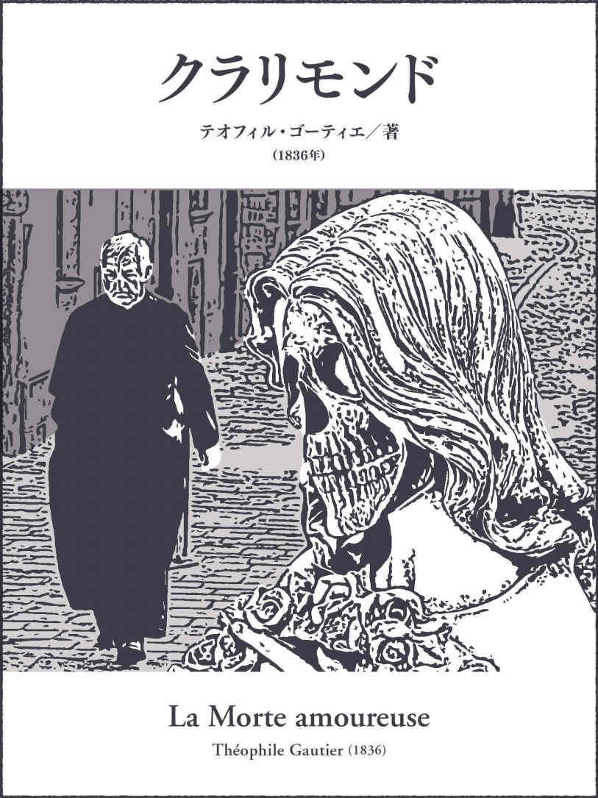
テオフィル・ゴーティエ
１８１１年８月30
日―１８７２年10
月23
日
１８１１年、フランス南部タルブで生まれる。フランスの詩人、小説家、劇作家。愛と死をテーマにした幻想的な作家として知られる。今回は文豪芥川龍之介翻訳の「La Morte Amoureuse」をご紹介する。現在では『死霊の恋』という邦題が一般的だが、単なる怪奇小説とは一線を画す本作には、ヒロインの名を冠した『クラリモンド』の方が相性が良いようにも思う。
兄弟、君はわしが恋をした事があるかと云うのだね、それはある。が、わしの話は、妙な怖しい話で、わしもとって六十六になるが、今でさえなるべく、その記憶の灰を掻き廻さないようにしているのだ。君には、わしは何一つ分隔
てをしないが、話が話だけに、わしより経験の浅い人に話しをするのは、実はどうかとも思っている。何しろわしの話の顛末
は、余り不思議なので、わしがその事件に現在関係していたとは自分ながらわしにも殆
ど信じる事が出来ぬ。わしは三年以上、最も不可思議な、そして、最も奇怪な幻惑の犠牲になっていたのである。
わしはみじめな田舎の僧侶をしていたが、毎夜、夢には──わしはそれが悉
く夢ならん事を祈っているが──最も五慾に染んだ、呪うべき生活を、云わばサルダナパルスの生活を送っていた。そしてある女をうっかり一目見たばかりに、危
くわしの霊魂を地獄に堕す所だったが、幸にも神の恵と、わしを加護してくれた聖徒の扶けとによって、遂にわしは、わしに附いていた悪魔の手から免れる事が出来た。思えばわしの昼の生活は、長い間、全く性質の異った夜の生活と、織り交ぜられていたのである。昼間は、わしは祈禱と神聖な事物とに忙しい神の僧侶であるが、夜、眼をつぶる刹那からは、忽
ち若い貴族になってしまう。女と犬と馬とにかけては、眼のない人間になってしまう。博奕も打つ、酒も飲む、罵詈をして神を馬鹿にもする。そして、暁方に眼を醒ますと、却ってわしがまだ眠っていて、ただ、僧侶になった夢をみているような心持がする。この夢遊病者のような生活のある場面とかある語
とかの回想は、未だにわしの心に残っていて、わしはどうしてもそれを、わしの記憶から拭い去る事が出来ない。わしは、実際、わしの住居
を離れた事のない人間なのだが、人はわしの話すのを聞くと、わしは浮世の歓楽に倦みはてて、信心深い、波瀾に富んだ生涯の結末を神に仕えて暮そうと云う沙門だと思うかもしれない。この世紀の生活からさえ絶縁された、森の奥の、陰鬱な僧房に住みふるした学僧だとは思わぬかもしれない。
わしは恋をした。わしの様に烈しく恋をした者はこの世に一人もいない程、恋をした──愚
な、凄
じい熱情を以て──わしは寧ろその熱情がわしの心臓をずたずたに裂かなかったのを怪しむ位である。ああ如何なる夜──如何なる夜であったろう。
わしは幼い時から、わしの天職の僧侶にあるのを感じていた。そこでわしのすべてての研究は、その理想を目標として積まれたのである。二十四歳までのわしの生活は云わばただ、長い今道心
の生活であった。神学を修めると共に、わしは引続いてすべての下級の僧位を得たために、先達たちは、若いながらわしが、最後の、恐しい位階を得る資格がある事を認めてくれた。そしてわしの授位式は、復活祭の一週中に定められたのである。
わしはそれまでに世間を見た事がなかった。わしの世界は大学と研究室との壁に限られていたのである。尤も「女」と云う者があると云う事は、漠然と知っていたが、わしはわしの思想がこの様な題目の上に止る事を許さなかったので、わしは全く純真無垢な生活をつづけて来た。一年に二度、わしは、年をとった体の弱い母親に逢うが、この二回の訪問の中に、わしの外界に対する、すべての関係が含まれていたのである。
わしは何も悔いる所はなかった。わしはこの最後の、避くべからざる一歩を投ずるのに、何等の躊躇もしなかった。わしはただ、喜悦と短気とに満たされていたのである。婚礼をする恋人でも、わし以上の熱に浮かされた感激を以て、遅い時の歩みを数えはしなかったであろう。わしは眠りさえすれば、必ず祈禱を唱えている夢を見た。僧侶になるより愉快な事はない。こうわしは信じていた。元より国王になる気も、詩人になる気も無い。わしの野心は、これ以上に高い目標を認める事が出来なかったのである。
わしが君にこの様な事を云うのは、わしの身の上に起った事が、順当に行けば決して起らなかったと云う事を知らせるために云うのである。そしてわしが、不可解な蠱惑
の犠牲であったと云う事を理解して貰うために云うのである。
ついに当日が来た。わしは、自分が空に浮んでいるか、肩に翼が生えたかと疑われる程、軽快な足取りで、教会へ歩いて行った。わしには、自分が天使であるかの如く思われた。そして、わしの同輩の、真面目な考え深い顔をしているのが、如何にも不思議に思われた。それは教会にも、わしの同輩が五六人いたからである。わしは一夜を祈禱に明した後なので、殆
ど恍惚として一切を忘れようとしていた。年をとった僧正も、わしには「永遠」に倚
っている神の如くに見えた。わしは実に、殿堂の穹窿
を透
して、天国を望む事が出来たのである。
あの式の個条は君もよく知っている──祓浄式、二つの形式の下に行われる聖餐式、「改宗者の膏
」を手の掌
に塗る式、それから、僧正と一しょに恭しく、神の前へ犠牲を捧げる式......
ああ、ヨブが「軽忽
なる者は、眼を以て聖約をなさざる者なり」と云ったのは、真理である。わしはふと、その時まで下を向いていた頭を挙げて、わしの前にいる女を見た。女はわしが触れる事が出来るかと思われる程、近くにいる──が実際は、わしからかなり離れて、内陣のずっと向うの欄干の辺りにいたのである──年も若く、容貌
も驚くばかり美しい。そして立派な着物まで着ている。丁度、その時わしはわしの眼から、急に鱗が落ちたような気がした。わしは、思いがけなく明を得た盲人のような心持になったのである。一瞬間以前には、光彩に溢れていた僧正も、急に何処かへ行ってしまえば、金色の燭架の上の蝋燭も、暁の星のように青ざめて、わしには無限の闇黒が、全寺院を領したように思われた。そしてその美しい女は、その闇黒を背景に燦爛とした浮彫になって、丁度天使の来迎を仰ぐように、わしの眼の前に現れて来た。彼女は、自ら輝いているように、しかも光を受けていると云うよりは、自ら光を放っているように見えたのである。
わしは眼を閉じた。そして二度と再び眼をあけまいと決心した。わしは外界の事物の影響を蒙るのを恐れていた。それは、殆
どわしが何をしているか知らぬ内に、次第に蠱惑がわしの心を捕えてしまったからである。
それにも関らず、忽ちまた、わしは眼を開いた。何故と云えば、わしは睫毛
の間からも、彼女が虹色にきらめきながら、太陽を凝視
ている時に見えるような、紫の半陰影に囲まれているのを見たからであった。
おお如何に彼女は美しかったであろう。理想の美を天上に求めて、そこから聖母の真像を地上に齎し帰った大画家でも、その輪廓に於ては到底、わしが今見ている、自然の美しい実在に及ぶ事は出来ない。詩人の詩、画家の画板も、彼女の概念を与える事は、全く不可能である。彼女はどちらかと云えば、背の高い方で、女神のような姿と態度とを備えている。柔かな金髪は、真中から分れて、顳顬
の上へ二つの漣立
った黄金の河を流していた。丁度、王冠を頂いた女王のようにも思われる。すき透るばかりに青白い額はまた静かに眉毛の上に拡がっている。その眉毛は不思議にも殆
ど黒く、抑え難い快活と光明とに溢れた海の如く青い眼の感じを飽くまでもうつくしく強めている。ああ、何と云う眼であろう。ただ一度瞬けば一人の男の運命を定めるのも容易なのに相違ない。その眼はわしがこれまで人間の眼に見る事の出来なかった生命と光明と情熱と潤いのある光とを持っている。その眼はまた絶えず矢のように光を射ている。そしてわしは確かに、その光がわしの心の臓に這入ったのを見た
。わしはその眼に輝いている火が、天上から来たのか、地獄から来たのかを知らない。けれども、それは確かにその二つの中のどちらからか来たのである。彼女は天使か、さもなくば悪魔である。そして恐らくはまた両方であったらしい。兎に角、彼女が我等の同じき母なるエヴァの胎から生れた者で無い事は確かである。それからこの上もなく光沢
のある真珠の歯が、紅い微笑
の中にきらめいて、唇の彎
む毎に、小さな靨
が、繻子のような薔薇色のうつくしい頬に現れる。そして鼻の孔
の正しい輪廓にも、高貴な生れを示す嫋
やかさと誇らしさとが見えている。半ば露
した肩の滑な光沢
のある皮膚の上には、瑪瑙
の光がゆらめき、大きな黄味のある真珠を綴った紐は──その色の美しさは殆
ど彼女の頸に匹敵する──彼女の胸の上にたれている。時々、彼女は物に驚いた蛇か孔雀のような、おののくような嬌態
を作って、首をもたげる。すると銀の格子細工のように頸を捲いている高いレースの襞襟
がおののくように動くのである。
彼女は橙色がかった真紅の天鵞絨
の袍
を着ていた。その黄鼬
の毛皮のついた、広い袖口からは、限りなく優しい、上品な手が、覗いている。手は曙の女神
の指のように、光を透すかと思われる程、清らかなのである。
すべてこれ等の事柄を一つ一つわしは昨日の如く思い返す事が出来る。何故と云えばその時、わしはどぎまぎしながらも、何一つ見落すような事をしなかったからである。ほんの微かな陰影でも、顋
の先のちょっとした黒い点でも、唇の隅の有るか無いかわからない程の生毛
でも、額の上にある天鵞絨
のような毛でも、頬の上に落ちる睫毛
のゆらめく影でも、何でもわしは驚く程明瞭な知覚を以て、注意する事が出来た。
そしてわしは凝視を続けながら、わしの心の中に、今まで鎖
されていた門をわしが開いているのを感じた。長い間塞がれていた孔が開けて、内部の見知らない景色を垣間見
る事が出来たのである。人生は忽ち全く新奇な光景を、わしの前に示してくれた。わしは、今新しい世界と新しい事物の秩序との中に生れて来るのであった。
すると恐しい苦痛がわしの心を、赤熱した釘抜のように苛
みはじめた。一分
一分が、わしには一秒であると共にまた一世紀であるように思われた。この間に式が進んで、わしは間も無く、わしの新たに生れた欲望が烈しく、闖入しようとしていた世界から、遠くへ引離されてしまったのである。わしは「否」と云いたい所を「然り」と答えた。これはわしの心の中にあるすべての物がわしの霊魂に加えた舌の暴行に対して極力反抗したがその甲斐がなかったのである。恐らく、多くの少女が断然父母の定めた夫を拒絶する心算
で、祭壇へ歩んで行くのにも関らず、一人としてその目的を果す者の無いのも、こうした訳からに相違ない。そして多くの燐れな新参の僧侶が誓言を述べに呼ばれる時には、面帕
をずたずたに裂く決心をしていながら、阿容々々
とそれを取ってしまうのもまた確かにこうした訳からである。かくして人は、そこにいるすべての人々に対して大なる誹謗
の声を挙げる事を敢てしないと共に、また多くの人々の期待を欺く事も敢てしない。すべてのそれらの人々の眼、すべてのそれらの人々の意志は、あたかも鉛の如く君の上に蔽いかかるように思われるのである。それのみならず、規則も正しく定まつていれば、万事が予め、完全に整って、しかも多少必然的に避ける事の出来ないように出来上っているので、個人の意志は事情の重みに屈従して遂には全く破壊されてしまうのである。
式の進むのにつれて、その知らぬ美人の顔も表情が違って来た。彼女の顔色は、最初は撫愛するような優しさを示していたが、今はあたかもそれを理解させる事が出来ないのを、憎み且つ恥ずるような容子に変ったのである。
山をも抜くに足りる意志の力を奮って、わしは、僧侶などになりたく無いと叫ばうとした。が、どうしてもそれが出来なかった。わしには舌が上顎に附着してしまったような気がしたのである。わしは否定の綴音を一つでも洩して、わしの意志を表白する事すら出来なかった、わしは眼が醒めていながら、生命
にも関わる一語を叫ぼうとして、魘
されている人間のような心持がした。
彼女もわしの殉教の苦しみを知っているかの如くに見えた。そしてあたかも、わしを励ますように、最も神聖な約束に満ちた眼色
をして見せるのである。彼女の眼が詩なら彼女の一瞥は正に唄であった。
彼女はわしにこう云ってくれる。「貴方
が私のものになる思召しなら、私は貴方を天国にいる神様より仕合せにしてあげます。天使たちでさえ貴方を嫉むでしょう。貴方は貴方を包もうとする経帷子
を裂いておしまいなさい。私は『美』です、『若さ』です、『生命』です。私の所へいらっしゃい。エホバはその代りに何を貴方にくれるのでしょう？ 私たちの命は夢のように、永久の接吻の中に流れて行きます。その聖杯の葡萄酒を投げすてておしまいなさい。そうすれば貴方は自由です。私は貴方を『知られざる島』へつれて行ってあげます。貴方は、銀の天幕の下で厚い金の床の上で、私の胸にお眠りなさい。私は貴方を愛しているのですから。私は貴方の神の手から貴方を離してしまいたいのですから。貴方の神の前では、大ぜいの尊い心性
の人たちが、愛の血を流します。けれどもその血は神のいる玉座の階
にさえとどきません」
これらの語は、わしの耳に無限の情味にあふれた諧律を作って漂って来るように思われた。そして彼女の眼の声は、あたかも生きた唇がわしの生命の中に声を吹き込んだように、わしの心臓の奥までも反響した。わしはわし自らが神を捨てようとしているのを感じた。が、わしの舌はなお機械的に式のすべての形式を満したので、わしはわしの胸が聖母の剣よりも鋭い刃に貫かれるような気がせずにはいられなかった。
すべての事が円満に終を告げた。わしは遂に憎侶となった。
この時、彼女の顔に現れた程、人間の顔に深く苦痛が描かれた事はない。婚約をした恋人が突然、己の傍に仆
れて死んだのを見た少女、歿
なった子供の揺籃
に倚
り懸っている母親、楽園の門の閾
に立ているエヴァ、宝は盗まれてその跡に石の置いてあるのを見た吝嗇
な男、偶然その最も傑れた作の原稿を火の中に取落した詩人──これ等の人々もこうまで絶望した、こうまで慰め難い顔附
きをする事はないであろう。血と云う血は彼女の愛らしい顔を去って、それが今は大理石よりも白くなっている。彼女の美しい両腕は、あたかもその筋肉が急に弛緩したかのように、力なく両脇に垂れていた。彼女は身を支える柱を求めた。それは殆
ど手足が彼女の自由にならなくなっていたからである。そしてわしもまた、教会の戸口の方に蹌踉
いて行った、死のように青ざめて、額にはカルヴァリイ（註。耶蘇
の磔殺
された地名）
の汗よりも血のような汗を流しながら。わしはまるで縊り殺されているような気がした。そうかと思うとまた円天井がわしの肩の上へ平になって落ちて来るような気もした。そしてその円天井の重量をわしの頭だけで支えているような心持になったのである。
わしが戸口を出ようとすると、急に一つの手がわしの手を捕えた──女の手だ！ その時までわしは一度も女の手に触れた事は無かった。その手はさながら蛇の皮膚のように冷い。しかもその感触は、あたかも熱鉄に烙
れたように、わしの手首を燃やすのである。彼女だ。「不仕合せな方ね。不仕合せな方ね。何と云う事をなすったの」彼女は低い声でこう叫ぶと、忽ち群集の中に隠れて見えなくなってしまった。
すると、老年の僧正がわしの傍を通り過ぎた。そして厳格な、不審そうな一瞥をわしの上に投げた。わしは顔を赤くしたり、青くしたりした。と、同輩の一人がわしを憐れんで、手を執ってわしを外へ連れ出してくれた。恐らくわしが、人の扶けを借りずに、研究室へ帰るのは、到底出来なかった事であろう。所が往来の角で、同輩の若い僧侶の注意がちょっと他に向いている隙を見て、空想的な衣裳を着た、黒人の扈従
がわしの側へやって来た。そして歩きながら、わしの手に小さな金縁の手帳を忍ばせると同時に、それを隠せと云う相図をした。わしはそれを袖の中に隠した。そしてわしの部屋へ帰って独りになるまで、そこにしまって置いた。それからわしはその控金
を開いた。中には紙が二枚はいっている。その紙にはこう書いてあった。「クラリモンド・コンチニの宮にて」当時わしは、世間の事に疎かったので、クラリモンドの名さえ、有名だったのにも関らず、耳にした事は一度も無かった。そしてまたコンチニの宮が何処にあるかと云う事も、一向に分らなかった。そこでわしは何度となく推量を逞くして見た。そして推量を重ねる度に想像は益々方外になったが、実際、わしはただもう一度、彼女に逢えさえするならば、彼女が貴夫人であろうと、娼婦であろうと、それは大して構いもしなかったのである。
わしの恋は、僅一時間程経つ内に、抜き難い根を下ろしてしまった。わしはその恋を思い切ろうなどとは夢にも思わなかった。わしにはその様な事は、全然不可能だとしか信じられなかった。彼女が一目見たばかりにわしの性質は一変してしまったのである。彼女は己の意志をわしの生命の中に吹き込んだ。そしてわしはもうわし自身の肉体の中に生活しないで、彼女の肉体の中に、しかも彼女のために生活するようになった。わしはわしの手の、彼女の触れた所を接吻した。わしは何時間も続けざまに、彼女の名を繰返して呼んで見た。何時でも眼さえ閉じればわしには彼女の姿がそこにいるようにはっきりと見えるのである。わしは彼女が教会の玄関で、わしの耳に囁いた語を反覆した。「不仕合せな方ね、不仕合せな方ね。何と云う事をなすったの」わしは遂に、わしの現状の恐しさを、判然と理解する事が出来た。わしの今、就いた職務の恐るべき厳粛な制限が、明かにわしの前に暴露された。僧侶になる！──それは独身でいると云う事だ。決して恋をしないと云う事だ。性
とか年齢とかの区別を構わなくなる事だ。すべての美から背き去る事だ。眼を抉りぬいてしまう事だ。永久に寺院とか僧院とかの冷い影の中に蹲
って隠れている事だ。見知らない屍体に番をされている事だ。死にかかっている人間ばかり訪ねて行く事だ。そして己自身の死を悼む喪服として、何時でも黒い法衣を着ている事だ。云わば君の着物が、君の亡骸
を納めた柩の棺布
の役に立つのである。
わしは今更のようにわしの生命が、丁度地下の湖のように、拡がりつつ溢れつつ水嵩を増して来るのを感ずる。わしの血は烈しくわしの動脈をめぐって躍り上る。わしの久しく抑圧していた青春は、千年に一度花の咲く蘆薈
のように、生々と萌え出でて迅雷の響と共に花を開くのだ。
クラリモンドに、再び逢うためにわしは何をする事が出来るのだろう。わしは市にいる人を一人も知らない。それでどうして研究室を去る口実が得られよう。わしは暫くでも此処
に止っていられそうもない。ただ、待ち遠いのは、わしが今後就任すべき牧師補の辞令ばかりである。わしは窓
の鉄格子を取去ろうと試みた。けれども窓は地を離れる事が遠いので、梯子が無ければ、こうして逃げるなどと云う事を考えるだけ愚だと気がついた、その上、わしが夜に乗じてそこから逃げる事が出来たとしても、その後どうして錯雑した街路の迷宮を、わしの思う所へ辿り着く事が出来るだろう。多くの人々には全く無意味に思われるこれ等のすべての事が、昨日始めて恋に落ちた、経験も無く、金も無く、美しい着物も無い燐れな学僧のわしには、偉大な事のように思われたのである。わしは恋の闇に迷いながら、こう自ら叫んだ。「ああ、わしが僧侶で無かったなら、わしは彼女を毎日見る事が出来るのだ、彼女の恋人にも彼女の夫にもなれるのだ。そうしたらこの陰気な法衣に包まれている代りに、外の美しい騎士のように絹と天鵞絨
の袍
を着て、金の鎖を下げて、剣を佩
いて、美しい鳥の羽毛を着
けるようになるだろう。わしの髪も、短く刈られてしまう代りに、波立ちながら渦を巻いて、わしの頸の上に垂れるだろう。わしの髭にも美しく蝋を引くだろう。そしてわしは一廉
の貴公子になれるのだ」それをただ、祭壇の前で一時間を過したために、忙しく口にした五六の語のために、わしは永久に生きている人間の仲間から追払われて、わし自身の墓石に封をするような事になったのだ。
わしは窓の所へ行った。空は青く美しい、木は春の着物を着ている。わしには自然が皮肉な歓喜を飾り立てているように見えた。広場には人が一杯いる。行く者もある、来る者もある、若い遊冶郎と若い美人とが二人づつ、茂みや花園の方へぶらぶら歩いて行くのも見える。愉快らしい青年が、楽しそうに「将進酒
」の畳句
を唄い連れて歩むのも見える、──それは悉くわしの悲哀と寂寞とに辛
い対照を造る愉悦、興奮、生活、活動の画図である。門の階段の上には若い母親がその子供と遊びながら坐っている。母親は、未だ乳の滴が真珠のようについている子供の小さな薔薇色の唇に接吻をする。そして子供をあやすために、ただ女親のみが発明する事の出来る神聖な様々のとぼけた事をする。父親は少し離れて佇みながらこの愛すべき二人を眺めて微笑を洩している。それが両腕を組んだ中にその喜びをじっと胸に抱き締めているように見える。わしはこれを見ているのに忍びなかった。そこで手荒く窓を鎖
して床の上に荒々しく身を横えた。わしの心は恐しい憎悪と嫉妬とに満ちていたのである。そして丁度十日も食を得なかった虎のように、わしはわしの指を噛み、またわしの夜着を噛んだ。わしは、わしがどれだけこうしていたか知らない。が、遂に痙攣的な怒りの発作に襲われて、床の上で身を悶えていると急に僧院長
、セラピオンが室の中央に直立して、じっとわしを注視しているのを認めた。わしは、慚愧
に堪えないで、頭を胸の上に垂れた。そして両手で顔を蔽った。
「ロミュアルよ、わしの友達よ、何か恐しい事がお前の心の中に起っているのではないか」数分の沈黙の後にセラピオンが云った。「お前のする事はわしには少しもわからない。お前は──何時もあのように静かな、あのように清浄な、あの様に温和
しい──お前が野獣のように部屋の中で怒り狂っているではないか。気をつけるがよい。兄弟よ──悪魔の暗示には耳を傾けぬがよい。悪魔は、お前が永久に身を主
に捧げたのを憤って、お前のまわりを餌食を探す狼のように這いまわりながら、お前を捕える最後の努力をしているのじゃ。征服されるよりは、祈禱を胸当てにして苦行を楯にして、勇士のように戦うがよい。そうすれば必ずお前は悪魔に勝つ事が出来るだろう。徳行は、誘惑によって試みられなければならない。黄金は試金者の手を経て一層純な物になる。恐れぬがよい、勇気を落さぬようにするがよい。最も忠実な、最も篤信な人々は、しばしばこのような誘惑を受けるものじゃ。祈禱をしろ、断食をしろ、黙想に耽れ、そうすれば悪魔は自
ら離れるだろう」
セラピオンの語は、わしを平常
のわしに帰してくれた。そして少しはわしの気も鎮
って来た。彼はまたこう云うのである、「わしは、お前がＣ──の牧師補を授けられた事を知らせに来たのじゃ。そこを管理していた僧侶が死んだので、僧正は直ぐにお前を任命するようにわしにお命令
なすった。それだから、明日立てるように準備をするがよい」わしは頭を垂れてこれに答えた。そして僧院長
はわしの部屋を出て行った。わしは祈禱の書を開いて、祈りの句を読み始めた。が、字が霞んで何の事が書いてあるのだか解らない。わしの頭脳の中では、観念の糸が無暗にもつれ出して、遂にはわしの気が附かぬ内に祈禱の書はわしの手から落ちてしまった。
明日、彼女に二度と逢わずに立って仕舞うと云う事、わしと彼女との間に置いてある多くの障碍物に、更に新しい障碍物を加えると云う事、実に奇蹟による外は、彼女に逢う一切の望を失ってしまうと云う事！ ああ彼女に手紙を書くと云う事さえわしには不可能になるだろう。何故と云えば、わしは誰にわしの手紙を託
けると云う事も出来ないからである。わしは僧侶と云う神聖な職務に就きながら誰にわしの心の中を打明ける事が出来るだろう。誰に信用を置く事が出来るだろう。
その時急にわしは、僧院長
セラピオンが悪魔の謀略
を話した語を思い出した。今度の事件の不可思議な性質、クラリモンドの人間以上の美しさ、彼女の眼の燐のような光、彼女の手の燃え立つばかりの感触、彼女がわしを陥し入れた苦痛、わしの心に急激な変化が起ると共に、すべてのわしの信心が一瞬の間に消えた事──これ等の事は、その悪魔の仕業
なのをよく証拠立てているではないか。恐らく繻子のような手は爪を隠した手袋であるかも知れぬ。これ等の想像に悸
されてわしは、再びわしの膝からすべって、床の上に落ちていた祈禱の書を取り上げた。そして再び祈禱に身を捧げようとしたのである。
翌朝セラピオンはわしを伴れに来た。みすぼらしいわし達の鞄を負って、騾馬
が二頭、門口に待っている。彼は一頭の騾馬に乗り、わしは他の一頭に跨った。
わし達がこの市
の街路を過ぎて行った時に、わしは、クラリモンドが見えはしないかと思って、すべての窓、すべての露台を注意して眺めて行った。が、朝が早いので、市
はまだ殆
どその眼を開かずにいた。わしはわし達が通りすぎる、すべての家々の簾や窓掛を透視する事が出来たらばと思った。セラピオンは、わしのこの好奇心を確かに、わしが建築を賞讃しているのだと思ったらしい。こう云うのは彼が、わしにあたりを見る時間を与えるために、わざと騾馬の歩みを緩めたからである。遂にわし達は市門を過ぎてその向うにある小山を上りはじめた。その頂に着いた時である。わしはクラリモンドが住んでいる土地の最後の一瞥を得ようと思ったので、その方に頭をめぐらして眺めると、大きな雲の影が、全市街の上に垂れかかって、その青と赤と反映する屋根の色が、一様なその中間の色に沈んでいた。その色の中を、そこここから白い水沫
のように、今し方点ぜられた火の煙が上へうえへと昇って行く。と、不思議な光の関係で、まだ模糊とした蒸気に掩われている近所の建物よりは遥に高い家が一つ、太陽の寂しい光線で金色
に染められながら、うつくしく輝いて聳えている──実際は一里半も離れているのであるが、その割には近く見える。そしてその建築の細い点までが明に弁別される──多くの小さな塔や高台や窓枠や燕の尾の形をしている風見までが、はっきりと見えるのである。
「向うに見える、あの日の光をうけた宮殿は何でしょう」とわしはセラピオンに尋ねた。彼は眼に手をかざして、わしの指さす方を眺めた。とその答はこうであった。
「コンチニの王が、娼婦クラリモンドに与えた、古の宮殿じゃ。あそこで怖しい事をしているそうな」
その刹那に、わしには実際か幻惑かはしらぬが、真白な姿の露台を歩いているのが見えたように想われた。その姿は通りすがりに、瞬く間日に輝いたが、忽ちまた何処かへ消えてしまった。それがクラリモンドだったのである。おお、彼女は知っていたであろうか。その時、熱を病んだように慌しく──わしを彼女から引離してしまう嶮しい山路の上に、ああ、わしが再び下る事の出来ない山路の上に、彼女の住んでいる宮殿を望見していたと云う事を。この主
となって、ここに来れとわしを招くように、嘲笑う日の光に輝きながら、此方へ近づくかと思われた宮殿を、望見していたと云う事を。疑も無く彼女はそれを知っていた。何故と云えば彼女の心は、わしの心と同情に繋がれていたので、その最も微かな情緒の時めきさえ感ずる事が出来たからである。その鋭い同情があればこそ、彼女は──寝衣を着てはいたけれども──露台の上に登ってくれたのである。
影はその宮殿をも掩って、満目の光景は、ただ屋根と破風との動かざる海になった。そしてその中には一つの山のような波動が明かに見えているのである。セラピオンは、騾馬を急がせた。わしの馬も同じ歩みを運んで、その後に従った。そしてその内に路が鋭く曲る所へ来たので、Ｓ──の市は終に、永久にわしの眼から隠されてしまった。しかもわしは決してそこへ帰る事の出来ない運命を負っているのである。退屈な三日の旅行の末に、陰鬱な田園の間を行き尽して、わしはわしの管轄すべき寺院の塔上にある風見の鶏が、森の上から覗いているのを見た。それから茅葺の小家と小さな庭園とに挟まれた、曲りくねった路を行くと、やがて、多少の荘厳を保った寺院の正面へ出た。五六の塑像で飾られた玄関、荒削りに砂岩を刻んだ円柱、柱と同じ砂岩の控壁
のついた瓦葺の屋根──ただこれだけである。左手には雑草が背高く生えた墓地があって、その中央には大きな鉄の十字架が聳えている。右手には寺院の影になって牧師の住む家がある。家は恐しく簡単で、しかも冷酷な清潔が保たれている。わし達は垣の内へ入った。五六匹の雛
っ仔
が地に撒いてある麦を啄んでいる。見た所では、僧侶の黒い法衣にも慣れたように、少しもわし達を怖がらない。そして殆
どわし達の歩く道を明けようとさえしそうもない。と嗄
がれた、喘息やみのような犬の声が、耳に入った。老いぼれた犬が、此方へ駈けて来るのである。それは先住の牧師の犬であった。懶
い、爛れた眼をして、灰色の毛を垂らしている。そして犬の達し得る、極度の老年に達したと云うあらゆる徴
が現れている。わしは犬をやさしく叩いてやった。犬は直ぐに云うべからざる満足の容子を示してわし達と一しょに歩き始めた。以前の牧師の家庭を処理していた老婆もまた迎えに出て、わし達を小さな後の客間へ案内してから、わしがなお引続いて彼女を傭ってくれるかどうかと尋ねた。わしは、老婆も犬も雛っ仔も、先住が死際に譲ったその老婆の一切の家具も、残らず面倒を見てやると答えた。これを聞いて、老婆は我を忘れて喜んだ。そして僧院長
セラピオンは、彼女がその僅な所有物に対して要求した金を、即座に払ってやった。
わしの就任がすむと間もなく、僧院長
セラピオンは僧侶学校に帰った。そこでわしは助力をして貰うのにも、相談相手になって貰うのにも、自分より外に誰もいなくなった。そしてクラリモンドの思い出は、再びわしの心に浮び始めたのである。わしは、極力それを打消そうと努めたが、わしの黙想には常に彼女の影が伴って来た。ある日暮にわしが黄楊
の木にくぎられた路に沿うて、わしの家の小さな庭を散歩していると、気のせいか楡の木の陰にわしと同じように歩いている女の姿が見え、しかもその楡の葉の間からは、海のような緑色の眼の輝いているのが見えた。しかしそれも幻に過ぎなかったらしく、庭の向う側へまわって見るとただ、砂地の路の上に足跡が一つ残っているばかりであった──がその足跡は、子供の足跡かと思われる程小さかった。その癖庭は高い塀に囲まれているのである。わしは庭の隅と云う隅を探して見たが、誰一人見附からない。わしにはこれが不思議に思われてならなかったが、その後起った奇怪な事に比べると、これなどは全く何でも無かったのである。
満一年間、わしはわしの職務上の義務を、最も厳格な精密さを以て果しながら、祈禱をしたり、断食をしたり、説教をしたり、病人に霊魂の扶
けを与えたり、またしばしばわし自身がその日の生活にも差支える位、施しをしたりして暮していた。しかしわしは心の中にはげしい焦立
しさを感じていた。そして天恵の泉も、わしには湧かなくなってしまったように思われた。わしは神聖な使命を充す事から生れる幸福を味う事が出来なかった。わしの思想は遠く漂って、ただクラリモンドの語のみがわれ知らず繰返す畳句のように、常にわしの唇に上るのである。おお、兄弟よ、よくこれを考えて見てくれるがいい。ただ一度、眼をあげて一人の女を見たために、一見些細な過失のために、わしは数年間、最もみじめな苦痛の犠牲になっていたのだ。そしてわしの生活の幸福は永久に失われてしまったのだ。
わしは、絶えずわしの心に繰りかえされた勝利と敗北を、しかも常に一層恐しい堕落にわしを陥れた勝利と敗北をこの上話すのは止めようと思う。そして直ぐにわしの物語の事実に話を進めようと思う。ある夜、わしの戸口の呼鈴が、長く荒々しく鳴らされた。家事まかないの老婆が起きて、戸を開けると、見知らぬ人が立っている。バルバラ（老婆の名）の角燈の光の中に、青銅のような顔をして、立派な外国の装いをした男の姿が、帯に短刀をさげて、佇んでいるのである。老婆は、初め恐しい気がした。が、その見知らぬ人は、彼女が安心するように用事を告げて、わしの奉じている神聖な職務に関して、至急わしに会いたいと云うことを述べた。バルバラは丁度わしが引込んだばかりの二階へ、その男を案内した。彼はかの女主人になるある貴夫人が、今息を引取るばかりのところで、ぜひ牧師に来て貰いたがっていると云うことを話した。そこでわしは、何時でも彼と一しょに行くと答えた。そして臨終と塗式に必要な、神聖な品々を携えて、大急ぎで二階を下りた。と、門の外には夜のように黒い馬が二匹、焦立たしげに土を蹴って鼻孔から吐く煙のような水蒸気の長い流れに、胸をかくしながら、立っている。その男は鐙
を執って、わしの馬に乗るのを扶けてくれた。それから彼はただ、手を鞍の前輪へかけたばかりで、ひらりともう一頭の馬にとび乗ると、膝で馬の横腹を締めて手綱を緩めた。と、馬は忽ち矢の如く走り出でたのである。伴
の馬に遅れまいと、その男が手綱を執っていたわしの馬も、宙を飛んで奔馳
する。わし達はひたすらに途を急いだ。大地はわしたちの下で、青ざめた灰色の長い縞のように、後へあとへ流れて行く。木立の黒い影画は、打破られた軍隊のように、わしたちの右左を、逃げて行くように見える。わし達が暗い森を通りぬけた時には、わしは冷い闇の中に迷信じみた恐怖から、わしの肉がむずつくのを感じた。わし達の馬の蹄鉄に打たれて、石高路
から迸る明い火花の雨は、わし達の後
に火光の径
の如く輝いていた。この真夜中に、わし達二人を見た人があったなら──わしの案内者とわしと──その人は二人の幽鬼が夢魔に騎して走るのだと思ったに相違ない。狐火は時々、路の行く手に明滅して、夜鳥は怖しげに、彼方の森の奥で啼き叫んでいる。その森には、時として山猫の燐火を放つ眼がきらめくのさえ見えるのである。馬の鬣
は益々乱れ、汗は太腹に滴って、つく息も急にまた苦しげに鼻孔を洩れるが、案内の男は馬の歩みの緩むのを見ると、殆
ど人間とは思われぬような、不思議な喉音を上げて、叱咤する。すると馬はまた、元のように無二無三に狂奔するのである。遂に旋風のような競走が完
った。多くの輝
いた点が開
いている大きな黒い物が、急に眼の前に聳えた。わし達の馬の蹄は、丈夫な木造の刎橋
の上に前よりも声高く鳴りひびいて、二人はやがて二つの巨大な塔の間に口を開
いた大きな穹窿
形の拱廊
に馬をすすめた。城廓の中は確かに一種の大きな興奮に支配されていた。広庭には松明を持った従者が縦横に駈け違い、頭の上にはまた燈火
の光が階段から階段へ上下していた。わしはこの厖大な建築の形を、混雑の中に瞥見する事が出来たが──丸柱や迫持
の廊下や階段や段梯
や──それは誠に魔法の国にもふさわしい、堂々とした豪奢の趣致と楚々とした優麗の風格とを併せ有しているものであった。すると黒人の扈従
が──以前にクラリモンドの手帳を持って来た男である、わしはすぐにそれと気が附いた──わしの馬から下りるのを手伝いに来た。それから、黒天鵞絨
の着物を着て首に金鎖をかけた家令も、象牙の杖によりながらわしに会いに出て来た。見ると大きな涙の滴が眼から落ちて、頬と白い髯の上に流れている。
「間に合いませんでした」と彼は悲しそうに首を振りながら叫んだ。「間に合いませんでした。霊魂を救う事はお出来になりません。でも、せめてどうかいらしってお通夜をなすって下さいまし」
彼はわしの手を執って、死者の室へ案内した。わしの泣いたのも決してこの老人に劣らなかったであろう。それは死者が、クラリモンドその人、わしがあのように深くあのように烈しく恋していたクラリモンドその人だった事を知ったからである。寝床の足の方には祈禱机が置いてある。
青銅の酒盞
に明滅する青い光は、室内を朦朧とさした。深秘な光にみたして、ただ暗い中に家具や軒蛇腹
の突出した部分を、そこここに時々明く浮き出さしている。卓子の上にある、彫刻を施した甕
の中には、一輪の素枯れた白薔薇が生けてある。その葩
は──一つだけ残っていたが──皆、香のいい涙のように落ち散って、甕の下にこぼれている。壊れた黒い面と扇とその外肘掛椅子の上に置いてある様々な扮装の道具を見ても、「死」が急に何の案内もなくこの華麗を極めた城廓に闖入した事がわかるであろう。わしは寝床の上を見るのに忍びないので跪いたまま「死者のための讃美歌」を誦し始めた。そして烈しい熱情を以て、神がわしと彼女の記憶との間に墳墓を造って、今後わしが祈禱をする時にも彼女の名を永久に「死」によって浄められた名として、口にし得るようにして下すった事を感謝した。けれども、わしの熱情は次第に弱くなって、わしは思わずある夢幻の中に陥ってしまった。一体その室は、死人の室らしい所を少しも備えていない室であった。わしが通夜の間に嗅ぎなれた不快な屍体の匂いの代りに、ものうい東洋の香料の匂いが──わしは艶
いた女の匂いがどんなものだか知らないのである──柔に生温い空気の中に漂っている。青ざめた光は屍体の傍に黄色く瞬く通夜の蝋燭の代りと云うよりは、寧ろ淫惑な歓楽のためにわざと作られた薄明りの如く思われる。わしは、クラリモンドが永久にわしから失われた瞬間に再び彼女を見る事が出来た、不思議な運命をつくづくと考えて見た。そして、残り惜しい懊悩の吐息がわしの胸を洩れて出た。その時、わしにはわしの後で誰かがまた吐息をしたように思われた。で、振返って見たがそれは、ただ反響にすぎなかった。けれども、その刹那に、わしの眼はその時まで見るのを避けていた死者の寝床の上に落ちた。刺繍の大きな花で飾られた、赤いダマスコの帳
が、黄金の房にくくられて、うつくしい屍骸を見せてくれるのである。屍体は長々と横になって、手を胸の上に合せている、眩ゆいような白いリンネルの褻衣
に掩われたのも、掛衣
の陰鬱な紫と、著しい対照を作って、しかも地合
のしなやかさが、彼女の肉体のやさしい形を何一つ隠す所もなく、見る人の眼を、美しい輪廓の曲線に従わしめる──白鳥の首の如くになよやかな──その輪廓の持っている豊麗な、優しさは「死」すらも奪う事が出来なかったのである。彼女はさながらある巧妙な彫刻家が女王の墳墓の上に据えるために造り上げた雪花石膏の像か、あるいはまた恐らくは、眠っている少女の上に声もない雪が一点の汚れもない掛衣
を織りでもしたかの如く思われた。
わしはもう、力めて祈禱の態度を支えている事が出来なくなった。閨房
の空気はわしを酔わせ、半ば凋んだ薔薇の花の熱を病んだような匂いはわしの頭脳に滲み込んだ。わしは休みなく彼方此方
と歩きながら、歩を転ずる毎に、屍体をのせた寝床の前に佇んで、その透いて見えそうな経帷子の下に、横わっている優しい屍
の事を、何と云う事もなく想いはじめた、わしの頭脳には、熱した空想が徂徠
して来たのである。わしは彼女が恐らく、本当に死んだのではあるまいと思った。ただわしをこの城へ呼び寄せて、その恋を打明けるために、わざと死を装っているのだと思った。そしてわしは、同時に彼女の足が、白い掛衣
の下で動いて、少しく捲いてある経帷子の長い真直ぐな線を乱したとさえ思った。
それからわしはこう自問した。「これが本当にクラリモンドであろうか、これが彼女だと云うどんな証拠があるだろうか。あの黒人の扈従
は外の貴夫人に傭われたのではないだろうか。この様に独りで苦しがっていては、きっとわしは気が狂うのに相違ない」けれども、わしの心臓ははげしく動悸を打ちながら、こう答える。
「これが彼女だ。確かに彼女だ」わしは再び寝台に近づいた。そして再び注意して、疑わしい屍体を凝視した。ああ、わしはこれも白状しなければならないであろうか。そのすぐれた肉体の形の完全さは、「死」の影で浄められているとは云え、常よりも更に淫惑な感じを起さしめた。そしてまた、その安息が何人も「死」とは思わぬほど、眠りによく似ているのである。わしは、此処
へ葬儀を勤めに来たと云う事も忘れてしまった。いや寧ろ花嫁の閨
へはいった花婿だと想像した。花嫁はしとやかに、美しい顔を隠して、羞しさに姿を残る隈なく掩わうとしているのである。わしは胸も裂けんばかりの悲しみを抱きながら、しかも物狂わしい希望にそそられて、恐怖と快楽とにおののきながら、彼女の上に身をかがめて、経帷子の端に手をかけた。そして、彼女の眠りを醒ますまいと息をひそめながらその経帷子を上げて見た。わしの動悸は狂おしく鼓動して蟀谷
のあたりには蛇の声に似た音が聞えるかとさえ疑われる。汗が額から滝の如く滴るのも、丁度わしが大きな大理石の板を擡
げでもしたように思われるのである。そしてそこには実にクラリモンドが横わっていた。わしの得度
の日に見たのと寸分も違いなく横わっていた。彼女の姿はその時と変りなく美しい。「死」も彼女にとっては、最後の嬌態に過ぎないのである。青ざめた頬、やや色の褪せた唇の肉色、その白い皮膚に黒い房をうき出させる長い睫毛
、それ等の物が皆彼女に悲しい貞淑と内心の苦痛との云うべからざる妖艶な容子を与えている。未だ小さな青い花で編んである長い乱れ髪は、彼女の頭にまばゆい枕を造って、その房々した巻き毛は、裸身
の肩を掩っている。聖麺麭
よりも清く、浄らかな美しい手は組合せたまま、清浄な安息と無言の祈禱とを捧げるように、胸の上にのっている。未だ真珠の腕輪も外さない、裸身
の腕が象牙のようにつやつやと、円
かな肉附きを見せている艶めかしさに──死後さえもなお──これのみが、反抗の意を示しているのである。わしは長い間、無言の黙想に沈んでいた。すると、見ていれば見ている程、わしには、「生」がこの美しい肉体を永久に去ったと云う事が信じられなくなって来た。所が燈火
の光の反射かそれはわしにも解らないが、（彼女はじっと動かずにはいるけれど）その命の無い青ざめた皮膚の下では、再び血液の循環が始ったように思われた。わしは軽くわしの手を、彼女の腕の上に置いて見た。勿論それは冷かった。が、あの寺院の玄関で、わしの手に触れた時よりも冷たくはないのである。わしは再び彼女の上にうつむいて、温かな涙の露に彼女の頬を沾
した。ああ、わしはじっと彼女を見守りながら、如何なる絶望、自棄の苦悶に、如何なる不言の懊悩
に堪えなければならなかったであろう。わしはいたずらにわしの生命を一塊の物質に集めてそれを彼女に与えたいと思った。そして彼女の冷かな肉体に、わしを苛
む情火を吹き入れたいと思った。が夜は次第に更けて行った。わしは永別の瞬間が近づくのを感じながらも、なおわが唯一の恋人なる彼女の唇に、接吻を印してゆく最後の悲しい快楽を、棄てる事が出来なかった......と奇蹟なるかな、かすかな呼吸はわしの呼吸に交って、クラリモンドの口は、わしの熱情に溢れた接吻に応じたのである。彼女の眼は開いて、先きの日の輝きを示してくれる。しかも長い吐息をついて、組んでいた腕をほどくと、溢るるばかりの悦びを顔に現して、わしの頸を抱きながら「ああ貴方ね、ロミュアル」と呟いてくれる。竪琴の最後の響のような、懶
い美しい声である。「何が悲しいの。余り長い間貴方を待っていたから死んだのだわ。けれど私たちはもう結婚の約束をしたのだわね。もう貴方に会いにも行かれるわ。さようなら。ロミュアル、さようなら。私は貴方に恋をしているのよ。私の話したい事はそれだけなの。貴方の接吻でちょっとの間かえって来た命を、貴方に返してあげましょうね。また直
にお目にかかってよ」
彼女の頭は垂れた。腕はなお、わしを引止めるように、わしを抱いている。その時凄じい旋風が急に窓を打って、室
の中へはいった。すると白薔薇の最後の一葩
は暫く茎の先で、胡蝶の羽の如くふるえていたが、それから茎を離れて、クラリモンドの魂をのせたまま、明けはなした窓から外へ翻って行ってしまった。と、燈火が消えた。そしてわしは、美しい死人の胸の上へ気を失って倒れてしまったのである。
正気に帰って見ると、わしは牧師館の小さな室の中にある寝台の上へ横になっていた。先住の老犬が、夜着の外へ垂れたわしの手を舐めている。バルバラは老年と不安とでふるえながら、抽斗
をあけたりしめたり、杯の中へ粉薬を入れたりして、忙しく室の中を歩きまわっている。が、わしが眼を開いたのを見ると彼女が喜びの叫を上げれば、犬も吠え立てて尾を掉
った。けれどもわしは未だ疲れていたので、一口もきく事も出来なければ、身を動かす事も出来なかった。その後はわしは、わしが微かな呼吸の外は生きている様子もなく、ここままで三日間寝ていたと云う事を知った。その三日間はわしは殆
ど何事も記憶していない。バルバラは、わしが牧師館を出た夜に訪
ねて来たのと同じ銅色
の顔の男が、次の朝、戸をしめた輿
にのせてわしを連れて来て、それから直ぐに行ってしまったと云う事を聞いた。わしがきれぎれな考えを思い合せる事が出来るようになった時に、わしはその恐しい夜のすべての出来事を心の中に思い浮べた。わしは初めある魔術的な幻惑の犠牲になったのだと思ったが、間もなくそれでも真実な適確な事実とする事の出来る他の事情を思い出したので、この考えを許す事も出来なくなって来た。わしは夢を見ていたのだとは信じられない。何故と云えばバルバラもわしと同じように、二頭の黒馬をつれた見知らぬ男を見て、その男の形なり風采なりを、正確に細かい所まで述べる事が出来たからである。その癖、わしがクラリモンドに再会した城の様子に合うような城の、この近所にある事を知っている者も一人も無い。
ある朝、わしはわしの室
で僧院長
セラピオンに会った。バルバラもわしの病気だと云う事を告げたので、急いで見舞に来てくれたのである。急いで来てくれたのは、彼から云えばわしに対する愛情ある興味を証拠立てているのであるが、その訪問は、当然わしの感ずべき愉快さえも与えてくれなかった。僧院長
セラピオンはその凝視の中に、何処となく洞察をほしいままにするような、審問をしているような様子を備えているので、わしは非常に間が悪かった。彼と対
いあっているだけでも、わしは当惑と有罪の感じを去る事が出来ないのである。一目見て彼は、わしの心中の苦痛を察したのに違いない。わしは実にこの洞察力のために彼を憎んだのであった。
彼は偽善者のような優しい調子でわしの健康を尋ねながら、絶えずその獅子のような黄色い大きな眼をわしの上に注いで、測深錘
のような透視をわしの霊魂の中に投げ入れるのである。それから彼は、わしがどう云う方針でこの教会区を管轄するか、ここへ来てから幸福かどうか、教務の余暇をどうして暮すか、此処
に住んでいる人々と大勢近附きになったか、何を読むのが一番好きかと云うような事を、数知れず尋ねた。わしはこれ等の問いを出来るだけ、短く答えたが、彼は何時でもわしの答を待たずに、急いで一つの問題から一つの問題へ移って行ったのである。この会話は、彼が実際云おうとしている事とは何の関係もないのに違いない。遂に彼は何の予告もなく、丁度その時思い出した知らせを、忘れずに繰り返しておくように、明晰な声で急にこう云った。その声はわしの耳に最後の審判の喇叭
のように響いたのである。
「あの名高い娼婦のクラリモンドが、五六日前の事、八日八夜続いた饗宴の終りにとうとう死んでしまったわ、大した非道な事であったそうな。ベルサガアルとクレオパトラの饗宴に行われた罪悪がまた犯されたと云うものじゃ。神よ、わし達は何と云う末世
に生きているのでござろう。客人たちは皆黒人の奴隷に給仕もして貰ったそうな。その奴隷共はまた何やらわからぬ語
を饒舌
る、わしの眼にはこの世ながらの悪魔じゃ。その中の一番卑しい者の服でさえ、皇帝が祭礼に着る袍
役に立つそうな。このクラリモンドには、始終妙な噂があったって。何でも女性の夜叉だと云う噂じゃ。が、わしは確かにビイルゼバッブだと信じているて」
彼は話すのを止めて、あたかもその話の効果を観察するように、前よりも一層、注意深くわしを見始めた。わしは彼がクラリモンドの名を口にした時に思わず躍り立たずには居られなかった。そして彼女の死の知らせは、わしの見たその夜の景色と符合するために、わしの胸を畏怖と懊悩とに満たしたのである。その畏怖と懊悩とはわしが出来る限り力を尽したにも拘らず、わしの顔に現われずにはいなかった。セラピオンは心配そうな、厳格な眸
でじっとわしを見たが、やがて云うには「わしはお前に忠告せねばならぬて。お前は足をつまだてて奈落の辺
に立っているのじゃ。落ちぬように注意をしたがよい。悪魔の爪は長いわ、墓もあてにはならぬ物じゃ。クラリモンドの墓は、三重の封印でもせねばなるまい。人の云うのが誠なら、あの女の死ぬのは始めてでは無いそうな。神がお前を御守り下さればよいがの、ロミュアル」
こう云って僧院長
セラピオンは静かに戸口へ歩んで行った。わしはその時二度と彼に会わなかった。それは彼が殆
ど直ぐにＳ──へ帰ったからである。
わしは全く健康も恢復すれば、また日頃の職務に服する事も出来る様になった。がクラリモンドの記憶と老年の僧院長
の語とは一刻もわしを離れない。けれども格別、彼の気味の悪い予言を実現するような大事件も起らなかったので、わしは彼の掛念もわしの恐怖も、誇張されたのに過ぎないと信じるようになった。すると、ある夜、不思議な夢を見た。それはわしが眠るか眠らないのに、寝床の帳
の輪が、鋭い音を立てて、その輪のかかっている棒の上をすべったので、わしは帳が開いたなとこう思った。そこで素早
く肘をついて起き上ると、わしの前に真直ぐに立っている女の影がある。わしは直ぐにそのクラリモンドなのを知った。彼女は手に、墓の中に置くような形をした小さなランプを持っている。その光に霑
された彼女の指は、薔薇色にすきとおって、それがまた次第に不透明な、牛乳のように白い、裸身
の腕に溶けこんでいる。彼女の着ているのは、末期
の床の上に横わっていた時に彼女を包んでいた、リンネルの経帷子である。彼女はこの様にみすぼらしい衣服を纏うのを恥じるように、そのリンネルの褶
に胸をかくそうとしたものの、彼女の小さな手はその役に立たなかった。彼女はその経帷子の色がランプの青ざめた光の中で彼女の肉の色と一つになる程白いのである。彼女の肉体のあらゆる輪廓を現すような、しなやかな、織物に包まれた彼女の姿は、生きた女と云うよりも寧ろ美しい古の浴みする女の大理石像のように眺められる。が、死んでいるにせよ、生きているにせよ、石像にせよ女にせよ、影にせよ肉体にせよ、彼女の美しさは依然として美しい。ただ違うのは彼女の眼の緑色の光が、前よりも輝かないのとかつては燃えたつような真紅
の唇が、今はその頬の色のような、微かなやさしい薔薇色に染んでいるとの二つである。わしが前に気の附いた、髪にさしてある小さな青い花も今は見る影もなく枯れ凋んで、殆
どのこらず葉を振いつくしているが、これとても彼女の愛らしさを妨げる事はない──彼女は、この事の性質が不思議なのにも拘らず、またわしの室
へはいって来た様子が奇怪なのにも関らず、暫くはわしが何等の恐怖をも感じなかった程、愛らしく見えたのである。
彼女はランプを卓の上へのせて、わしの寝床の後に坐った。それからわしの上に身をかがめて、銀のように冴えている、しかも天鵞絨
のようにやさしく柔かい声で、こう云った。その声は彼女を除いては誰の唇からも聞く事の出来ぬような声である。
「貴方を随分長い間待たせて置いてね。ロミュアル、私が貴方の事を忘れてしまったのだと思ったでしょう。でも私は遠い処から来たのよ、それはずうっと遠い処なの。そこへ行った者は誰でも帰って来た事の無い国なの。そうかと云ってお日様でもお月様でもないのよ。ただ、空間と影ばかりある処なの、大きな路も小さな路もない処でね。踏むにも地面のない、飛ぶにも空気のない処なの。それでよく此処
へ帰って来られたでしょう。何故と云えば恋が『死』より強いからだわ。恋がしまいには『死』を負かさなければならないからだわ。まあ、此処
へ来る途中で、何と云う悲しい顔や、恐しい物を見たのでしょう。ただ意志の力だけでまたこの大地の上へ帰って来て、体を見附けてその中へはいるまでに、私の霊魂は何と云う苦しい目に遭ったでしょう。私を掩
って置いた重い石の板を擡
げるまでに、何と云う苦労をしなければならなかったでしょう。ごらんなさい、私の手の掌
は傷だらけじゃありませんか。手を接吻して頂戴。そうすればきっと癒
るわ」彼女は冷い手の掌
を代りがわりわしの口に当てた。わしは何度となくそれを接吻した。その間も彼女は、溢るるばかりの愛情の微笑みをもらして、わしをじっと見戍
っているのである。
わしは恥ずかしながら白状する。この時わしは僧院長
セラピオンの忠告もわしの服している神聖な職務も悉く忘れてしまった。わしは何の抵抗もせずに、一撃されて堕落に陥ってしまったのである。クラリモンドの皮膚の新たな冷さはわしの皮膚に滲み入って、わしが淫慾のおののきが、全身を通うのを感ぜずにはいられなかった。わしが後
に見たすべての事があるのにも拘らず、わしは今もなお彼女が悪魔だとは殆
ど信じる事が出来ない。少くも彼女は何等そうした姿を示さなかった。悪女がこの様に巧みにその爪と角とを隠した事は、かつて無かった事に相違ない。彼女は床をあげて寝台の縁
に坐りながら、しどけない媚に満ちた姿をして、時々小さな手をわしの髪の中に入れては、どうしたらわしの顔に似合うかを見るように、わしの髪を撚
ったり捲
いたりしているのである。わしが、罪障の深い悦楽に酔って、彼女の手にわしの体を任せると、彼女はまた、そのやさしい戯れと共に、楽しげに種々な物語をしてくれる。しかも最も驚くべき事は、わしがこの様な不思議な出来事に際会しながら何等の驚異をも感じなかったと云う事である。丁度夢の中では人がどの様な空想的な事件でも、単なる事実として受入れるように、わしにも、これ等の事情は全く自然であるが如くに思われたのである。
「貴方に会わないずっと前から私は貴方を愛していてよ。可愛いいロミュアル、そうして方々探してあるいていたのだわ。貴方は私の愛だったのよ。あの時あの教会で始めてお目にかかったでしょう。私、直ぐに『これがあの人だ』って云ったわ、それから、私の持っていた愛、私の今持っている、私のこれから先に持つと思う、すべての愛を籠めた眸
で見て上げたの──その眼
で見ればどんな大僧正でも王様でも家来たちが皆見ている前で、私の足下に跪いてしまうのよ。けれど貴方は平気でいらしったわね、私より神様の方がいいって。
「私、ほんとうに神様が憎くらしいわ、貴方はあの時も神様が好きだったし、今でも私より好きなのね。
「ああ、ああ、私は不仕合せね、私は貴方の心をすっかり私の有
にする事が出来ないのね。貴方が接吻で生かして下すった私──貴方のために利の門を崩して、貴方を仕合せにしてあげたいばっかりに、命を貴方に捧げている私」
彼女の話は、悉く最も熱情に満ちた撫愛に伴われた。その撫愛はわしの感覚と理性とを悩ませて、わしは遂に彼女を慰めるために、恐しい涜神
の言を放って、神を愛する如く彼女を愛すると叫ぶのさえ憚らないようになった。
すると、彼女の眼は、再び緑玉髄
の如く輝いた。「ほんとう？──ほんとうに？──神様と同じ位」彼女はその美しい胸にわしを抱きながら叫んだ。「それなら、貴方、私と一しょにいらっしゃるわね、どこへでも私の好きな処へついていらっしゃるわね、貴方はもう、あの醜い黒法衣を投げすてておしまいなさるのよ。貴方は騎士の中で、一番偉い、一番羨まれる騎士におなりになるのよ、貴方は私の恋人だわ。法王の云う事さえ聞かなかったクラリモンドの晴れの恋人になるのだわ。少しは得意に思うような事じゃあなくって。ああ、美しい、何とも云えぬ程仕合せな生涯を、うるわしい、黄金色
の生活を、二人で楽しむのね。そうして、何時立つの」
「明日
、明日」とわしは夢中になって叫んだ。
「じゃ明日にするわ。その間に御化粧をかえる事が出来てね。これでは少し薄着だし、旅をするにはおかしいわ。それから、私を死んだと思ってこの上もなく悲しがっているお友達に知らせを出さなければならないわ。お金に着物に馬車に──皆支度が出来ていてよ。私、今夜と同じ時刻にお尋ねするわ。さようなら」彼女は軽く唇を、わしの額にふれた。ランプは消えて、帳が元のように閉されると、すべてがまた暗くなった。と、鉛のような、夢も見ない眠りがわしの上に落ちて、次の朝まで、わしを前後を忘れさせてしまったのである。
わしは何時ものように朝遅く眼をさました。そしてその不思議な出来事の回想が終日、わしを煩した。わしは遂にそれを、わしの熱した空想が造った靄
のようなものだと思い直した。が、その感覚が余りに溌剌
としているので、その事実でない事を信ずるのは、はなはだしく困難であった。そしてわしは来るべき事実に対する多少の予感を抱きながら、すべての妄想を払って、清浄な眠りを守りたまわん事を神に祈った後に、遂に床に就いたのであった。わしは直ぐに深い眠りに落ちた。そしてわしの夢も続けられた。帳
が再び開いて、わしはクラリモンドの姿を見た。青ざめた経帷子
を青ざめた身に纏って、頬に「死」の紫を印した前夜とは変って、喜ばしげに活々して、緑がかった董色の派出な旅行服の、金のレースで縁をとったのを着て、両脇を綻ばせた所からは、繻子の袴が
のぞいている。金髪の房々した捲毛を、いろいろな形に面白く撚
ってある白い鳥の羽毛をつけた、黒い大きな羅紗の帽子の下から、こぼしている彼女は、手に金色の呼笛のついた小さな鞭を持って、軽くわしを叩きながら、こう叫んだ。「さあ、よく寝ている方や、これが貴方の御支度なの。私、貴方がもう起きて着物を着ていらっしゃるかと思ったわ。早くお起きなさいよ。ぐずぐずしちゃいられないわ」
わしは直ぐに寝床からとび出した。
「さあ、着物をきて頂戴。それから出かけましょう」彼女は一しょに持って来た小さな荷包を指さしながら、「馬が待ち遠しがって、戸口で轡
を噛んでいるわ。今時分はもう此処
から三十哩も先きへ行っている筈だったのよ」
わしは急いで着物を着た。彼女はわしに着物を一つひとつ渡してくれた。そしてわしがどうかして間違えると着物の着方を教えながら、時にわしの不器用なのに呆れては噴き出してしまうのである。それがすむと今度は急いでわしの髪をなでつけてくれる。それもすむと、ヴェネチアの水晶に銀の細工の縁をとった懐中鏡を、わしの前へ出して、面白そうにこう尋ねる。「どんなに見えて？ 私をお附き
にかかえて下すって？」
わしはもう、何時
ものわしではない。そして自分でさえこれが自分とは思われない。云わば今のわしが、昔のわしに似ていないのは、出来上った石像が、石の塊に似ていないのと同じ事なのである。わしの昔の顔は、鏡に映った今の顔を下手な画工の描き崩した肖像のように思われた。わしは美しい。わしの虚栄心はこの変化に心からそそられずにはいられなかった。美しく刺繍をした袍
はわしを全くの別人にしてしまったのである。わしはある型通りに断
ってある五六尺の布がわしの上に加えた変化の力を、驚嘆して見戍
った。わしの衣裳の精霊は、わしの皮膚の中に滲み入って、十分たつかたたぬ中にわしはどうやら一廉
の豪華の児になってしまった。
この新衣裳に慣れようと思って、わしは室
の中を五六度歩いて見た。クラリモンドは花のような快楽を味いでもするように、わしを見戍
りながら、さも自分の手際
に満足するらしく思われた。「さあ、もう遊ぶのは沢山よ、ロミュアル、これから出かけるのよ。私達は遠くへ行かなければならないのだわ。そうして遅れちゃあいけないのだわ」彼女はわしの手を執って、外へ出た。戸と云う戸は、彼女が手をふれると忽ちに開くのである。わし達は犬の眼もさまさずにその側を通りぬけた。
門口でわしは、前にわしの護衛兵だった、あの黒人の扈従
のマルゲリトンを見た。彼は三頭の馬の轡
を控えている──三頭共、わしをあの城へ伴れて行った馬のように黒い。一頭はわしのため、一頭は彼のため、一頭はクラリモンドのためである。これ等の馬は、西風の神の胎をうけた牝馬が生んだと云う西班牙
馬
に相違ない。何故と云えば彼等は風のように疾
いからである。門を出る時に丁度東に上って路上のわし達を照した明月は戦車から外れた車輪のように、空中を転げまわって、右の方、梢から梢へ飛び移りながら、息を切らしてわし達に伴
いて来る。間も無く一行はとある平野に来た。そこには四頭の大きな馬に曳かせた馬車が一台一叢
の木蔭に待っている。で、それへ乗り移ると今度は馭者が気違いのように馬を走らせる。わしは片手をクラリモンドの肩にまわして、彼女の片手をわしの手に執っていた、彼女の頭はわしの肩に靠
れて、わしは半ば露
した彼女の胸が軽く、わしの腕を圧するのを感じるのである。わしはこの様な熾烈な快楽を味った事はない。その間にわしはすべての事を忘れていた。わしが僧侶だったと云う事を覚えているのも、わしが母の腹の中にいた事を覚えているのと同じ程にしか考えられなかった。この悪魔がわしの上にかけた蠱惑は、これ程大きかったのである。その夜からわしの性質は、ある意味に於て二等分されたように思われる。云わばわしの内に二人の人がいて、それが互に知らずにいるのである。ある時はわしは自分が夜になると紳士になった夢を見る僧侶だと思うが、またある時には、僧侶になった夢を見ている紳士だと思う事もある。わしは夢と現実とを分つ事も出来なければ、何処に現実が始まり、何処に夢が定るかさえも見出す事が出来なかった。貴公子の道楽者は僧侶を馬鹿にするし、僧侶は、貴公子の放埒を罵るのである。互にもつれ合いながら、しかも互に触れる事のない二つの螺線は、わしのこの二面
の生活を、遺憾なく示している。しかしわしは、この状態がこの様な不思議な性質を持っているにも拘らず、一分でも気違いになる気などは起らなかった。わしは常に、思い切って溌剌とした心で、わしの二つの生活を気長く観照していたのである。が、ただ一つ、わしにも説明の出来ない妙な事があった──即ちそれは同じ個人性の意識が、全く性格の背反した二人の人間の中に存在していたと云う事である。わしが自らＣ──の寒村の牧師補と思ったか、クラリモンドの肩書附きの恋人、ロムアルドオ閣下と思ったか、どうか──これがわしの不思議に思う一つの変則なのである。
ともかくも、わしはヴェニスに住んだ。少くも住んだと信じていた。わしがこの幻怪な事実の中にどれ程の幻想と印象とが含まれているかを正確に発見するのは到底不可能である。わし達は、カナレイオの辺
の、壁画と石像との沢山ある、大きな宮殿に住んでいた。それは一国の王宮にしても恥ずかしくないような宮殿で、わし達は各々ゴンドラの制服を着たバルカロリも、音楽室も、御抱えの詩人も持っていた。ことにクラリモンドは、大規模な生活をほしいままにするのが常であった。彼女の性格にはクレオパトラに似た何物かが潜んでいるのである。わしはと云うとまた王子のような宮臣の一列を従えて、常に大国の四福音宣伝師か十二使徒の一人と一家ででもあるような、畏敬を以て迎えられていた。わしは大統領
を通すのでさえ、道を譲ろうとはしなかった。魔王
が天国から堕落して以来、わしより傲慢不遜な人間がこの世にいたとは信じられぬ。わしはまた、リドットにも行って、地獄のものとしか思われぬ運をさえ弄んだ。わしはあらゆる社会の最も善良な部分──没落した家の子供達とか女役者とか奸黠
な悪人とか佞人
とか空威張
をする人間とか──を歓待した。そしてこのような生活に沈湎
しながらも、わしは常にクラリモンドを忘れなかった。わしは実に狂気のように彼女を愛していたのである。一人のクラリモンドを持つのは、二十人の情婦を持つのにも均しい。否、あらゆる女を持つのにも均しい。彼女はその一身に、無数の容貌の変化と無数の清新な嬌艶とを蔵している──真に彼女は女のカメレオンである。彼女はわしの愛を百倍にして返してくれた。彼女の求めるのはただ、愛である──彼女自身によって目醒まされた、清浄な青春の愛である。しかもその愛は最初の、また最後の情熱でなければならない。かくしてわしも常に幸福であった。ただ不幸なのは、毎夜必ず魘
される時だけで、その時はわしが貧しい田舎の牧師補になった夢を見ながら、昼間の淫楽を悔いて、贖罪と苦行とに一身を捧げているのである。わしは、常は彼女と親しんでいられるのに安んじて、わしがクラリモンドと知るようになった不思議な関係をこの上考えて見ようとはしなかった。しかし彼女に関する僧院長
セラピオンの言
は、しばしばわしの記憶に現れて、わしの心に不安を与えずにはいなかった。
その内に暫くの間クラリモンドの健康が平素のようにすぐれなかった。顔の色も日にまし青ざめる。医師を呼んで診せても、病気の質
がわからないので、どう治療していいか見当が附かない。彼等は皆、役にも立たぬ処方箋を書いて、二度目からは来なくなってしまうのである。けれども彼女の顔色は、著しく青ざめて、一日は一日と冷くなる。そして遂には殆
どあの不思議な城の記憶すべき夜のように、白く、血の気もなくなってしまった。わしはこのように徐々と死んでゆく彼女を見るに堪えないで、云うべからざる苦痛に苛
まれたが、わしの苦悶に動かされたのであろう、彼女は、丁度死なねばならぬ事を知った者の末期
の微笑のように、悲しくまたやさしく、わしの顔を見てほほ笑んだ。
ある朝、わしは彼女の寝床の傍に坐って、直ぐ側に置いてある小さな食卓で朝飯を認めていた。それはわしが一分でも彼女の側を離れたくないと思ったからである。で、ある果物を切ろうとした所が、わしは誤ってやや深くわしの指を傷つけた。すると血がすぐに小さな鮮紅の玉になって流れ出したが、その滴が二滴三滴、クラリモンドにかかったと思うと彼女の眼は忽ちに輝いて、その顔にもまた、わしがかつて見た事の無いような、荒々しい、恐しい喜びの表情が現れた。彼女は忽ち獣の如く軽快に、寝床から躍り出て──丁度猿か猫のように軽快に──わしの傷口に飛びつくと、云い難い愉快を感じるように、わしの血をすすり始めた。しかも彼女は静かに注意しつつ、あたかも鑑定上手
が、セレスやシラキュウズの酒を味うように、その小さな口に何杯となく啜って飽かないのである。と、次第に彼女の瞼は垂れ、緑色の眼の瞳は円いと云うよりも、寧ろ楕円になった。そしてわしの手に接吻しようとしては、口を離すかと思うと、また更に幾滴かの紅い滴を吸い出そうとして、わしの傷口にその唇をあてるのであった。血がもう出ないのを見ると、彼女は瑞々した、光のある眼を輝かしながら、五月の朝よりも薔薇色に若やいで、身を起した。顔はつやつやと肉附いて、手も温かにしめっている──常よりも一層美しく、健康も今は全く恢復しているのである。
「私もう死なないわ、死なないわ」悦びに半ば狂したようにわしの首に縋りつきながら、彼女はこう叫んだ。「私はまだ長い間貴方を愛してあげる事が出来てよ。私の命は貴方の有
だわ。私の中にある物は皆、貴方から来たのだわ。貴方の豊な貴い血の滴が、世界中のどの不死の薬よりも得難い、力のつく薬なの。その血の滴のおかげで私は命を取返したのだわ」
この光景は長い間、わしの記憶に上って来た。そしてクラリモンドに対する不思議な疑惑をわしに起させた。丁度その夜、睡がわしを牧師館に移した時に、わしは僧院長
セラピオンが平素よりは一層真面目な、一層気づかわしそうな顔をしているのを見た。彼はじっとわしを見つめていたが、悲しげに叫んで云うには「お前は霊魂を失うだけでは飽き足りなくて、肉体をも失おうとするのかの。見下げ果てた奴め、何と云う恐しい目にあうものじゃ」彼のこう云った調子は、強くわしを動かした。が、この記憶の鮮かなのにも拘らず、その印象さえ間も無く消えてしまって、数知れぬ外の心配がわしの心からそれを移してしまった。遂にある夜わしはクラリモンドが、食事の後で日頃わしにすすめるを常とした香味入りの酒の杯へ、何やら粉薬を入れるのを見てとった。それは彼女がそうとは気が附かずに立てて置いた鏡に映って見えたのである。わしは杯をとり上げて、口へ持ってゆく真似をして、それから、後で飲むつもりのように手近にあった家具の上へのせて置いた。で、彼女が後を向いた隙を窺って、中の酒を卓の下へあけると、そのまま、わしの閨
へ退いて床の上に横になった。わしは少しも眠らずに、この神秘から何が起るか気を附けて見出そうと決心したのである。待つ間もなく、クラリモンドは、寝衣を着てはいって来た。そして寝床の上に上ってわしの傍に横になった。彼女はわしが睡っているのを確かめると、わしの腕をまくって、髪から金の留針をぬきながら、低い声でこう呟き始めた。
「一滴
、たった一滴、私の針の先へ紅宝玉
をたった一滴......貴方はまだ私を愛しているのですから、私はまだ死なれません......ああ可哀そうに、私は美しい血を、まっ赤な血を飲まなければならないのね、お休みなさい、私のたった一の宝物、お眠みなさい、私の神、私の子供、私は貴方に害をしようと思ってはいなくってよ。私はただ、貴方の命から、私の命が永久に亡びてしまわないだけの物を頂くのだわ。私は貴方を愛しているのでしょう、だから私は外に恋人を拵えて、その人の血管を吸い干す事にした方がいいのだわ。けれど貴方を知ってから、私、外の男は皆厭になってしまったのですもの......まあ美しい腕ね、何と云う円いのだろう、何と云う白いのだろう、どうして私はこの様な青い血管を傷つける事が出来るのだろう」こう呟きながら、彼女はさめざめと涙を流した。その時わしは、彼女がわしの腕を執りながら、その上に落す涙を感じたのであった。遂に彼女は意を決して、その留針でちょっとわしを刺した。そしてそこから滴る血を吸い始めた。彼女はほんの五六滴しか飲まなかったが、わしの眼を醒ますのを怖れたので、丁寧に小さな布でわしの腕を括ってくれた。それから後でまた傷を膏薬でこすってくれたので、傷は直ぐに癒ってしまった。
もう疑いの余地はない。僧院長
セラピオンが正しかったのである。が、この積極的な知識があるにも拘らず、わしはクラリモンドを愛するのを禁ずる事が出来なかった。そして喜んでその人工の生命を与えるに足るだけの血潮を、自ら進んで与えようと思った。しかのみならず、わしは殆
ど彼女を怖しく思わなかった。わしはわしの血を一滴づつ取引
するよりも、わしの腕の血管を自ら剖
いて、彼女にこう云ってやりたかった。「お飲み、そうしてわしの愛をわしの血潮と一しょに、お前の體
に滲透
らせておくれ」わしは、彼女がわしに拵えてくれた魔酔の酒の事や、あの留針の出来事には、気をつけて一言もそれに及ばないようにした。そしてわし達は最も円満な調和を楽しんでゆく事が出来たのである。
けれども、わしの沙門らしい優柔は、常よりも一層、わしを苛
み始めた。そしてわしは、わしの肉を苦しめ制するために、何か新しい贖罪を発明するのさえ、想像するに苦しむようになった。これ等の幻は無意志的なもので、わしは実際それに関する何事にも与らなかったがそれでもなお、わしは事実にせよ夢幻にせよ、このような淫楽に汚れた心と不浄な手とを以てしては、到底基督
の體
に触れる事が出来なかった。わしはこの懶
い幻惑の力に圧えられるのを免れようとして、まず眠りに陥るのを防ごうと努力した。そこでわしは指で瞼を開いていたり、数時間も真直ぐに壁に倚
り懸っていたりして、全力を振って眠りと戦って見たのである。けれども睡魔は絶えずわしの眼を襲って、すべての抵抗が無駄になったと思うと、わしは極度の疲労に堪えずして、両腕を力なく下げたまま、再び睡の潮流に楽慾の彼岸に運ばれてしまう。セラピオンは、峻烈を極めた訓戒を加えて、厳しくわしの意気地の無いのと、勇猛心の不足なのとを責めたが、遂にある日、わしが平素より一層心を苦しめていると、わしにこう云ってくれた。「この不断の呵責
を免れることの出来るのは、ただ、一策があるばかりじゃ。尤も非常に出た策だと云う嫌はあるが役には立つに相違ない。難病は劇薬を要すると云うものじゃ。わしはクラリモンドの埋められた処を知っているし、それにはあの女の屍
を発
いて、お前の恋する女がどのような憐
な姿になっているかを見なければならぬ。そうすればお前も、蛆に食われた、塵になるばかりの屍のために、霊魂を失うような迷いには陥らぬようになろう。この策は必ずお前を救うに相違ないて」わしはこの二重生活に困憊
していたので、貴公子か僧侶かどちらが幻惑の犠牲だかを確かめたいばかりに直ぐにこれを快諾した。わしは全くわしの心の中にいる二人の男の一人を、もう一人の利益のために殺すか、または二人共殺すか、どちらか一つにする決心でいた。それはこのような怖しい存在は続けられる事も、堪えられる事も出来なかったからである。そこで僧院長
セラピオンは鶴嘴
と挺
と角燈とを整えて、わし達二人は真夜中に場所も位置も彼のよく知っている──の墓地へ出かけたのであった。暗い角燈の光を五六の墓石の碑銘に向けた後に、わし達は遂に、半大きな雑草に掩われて、その上また苔と寄生植物とに侵された大きな板石の前に出た。そしてその上に、わし達は下のような墓碑銘の首句を探り読む事が出来たのである。
生ける日に誉ありし
クラリモンドこそ
「確かに此処じゃ」とセラピオンが呟いた。そして角燈を地上に置くと、石の端の下へ挺
の先を押入れて、その石を擡
げ始めた。石が自由になると彼は更に寄生植物を取り除けにかかった。わしは夜よりも暗く、夜よりも更に語
なく、傍に立って、じっと彼のする事を見戍
った。その間に彼はその凄惨な労働に腰をかがめて、汗にぬれながら喘いでいる。わしには彼の苦しそうに吐く息が、末期の痰のつまる音のような調子を持っているかと疑われた。それは真に幽怪な光景であった。外から誰でもわし達を見る人があったなら、その人はわし達を神の僧侶と思うよりは寧ろ涜神の痴者
が経帷子
を盗む者と思ったに相違ない。セラピオンの熱心には、執拗な酷烈な何物かがあって、それが彼に天使とか使徒とか云うものよりも却って邪鬼の形相を与えていた。その大きな、鷲のような顔は、角燈の光で、鋭い浮彫りを刻んでいる。峻厳な目鼻立ちと共に、不快な空想を誘うような、恐るべき何物かを有しているのである。わしは氷のような汗が大きな粒になってわしの顔に湧いて来たのを感じた。わしの髪は恐しい畏怖のためによだっている。わしの心の底では、辛辣なセラピオンの行が、憎むべき神聖冒涜の如く感じている。わしは、頭上に油然と流れている黒雲の内臓から、火の三戟刑具
が迸り出でて、彼を焦土とするように祈禱しようかとさえ思っていた。糸杉
に宿っていた梟は
、角燈の光に驚いて、時々それに飛んで来る。しかもその度に灰色の翼で角燈の硝子
を打っては悲しい慟哭の叫び声を揚げるのである。野狐は遠い闇の中に鳴き、数千の不吉な物の響は、沈黙の中から自
ら生れて来る。遂にセラピオンの鶴嘴
は、柩
を打った。その板に触れた響は、深い高い音を、打たれた時に「無」が発する戦慄すべき音を、陰々と反響した。それから彼は柩の蓋を捩
じはなした。わしはその時クラリモンドが大理石像のように青白く、両手を組んでいるのを見た。彼女の白い経帷子は、頭から足までただ一つの襞
を造っている。しかも彼女の色褪せた唇の一角には、露の滴ったように、小さな真紅の滴がきらめいているのである。これを見ると、セラピオンの怒気は心頭に上った。「ああ、此処
に居ったな、悪魔めが、不浄な売婦
めが、黄金
と血とを吸う奴めが」彼は聖水を屍と柩の上に注ぎかけて、その上に水刷毛
で十字を切った。憐むべきクラリモンドは、聖水がかかると共に、美しい肉体も忽ち塵土
となって、ただ、形もない、恐しい灰燼の一塊と、半ば爛壊
した腐骨の一堆
とが残った。
「お前の情人を見るがよい、ロミュアル卿」決然として僧院長
はこの悲しい残骸を指さしながら、叫んだ。「これでもお前は、お前の恋人と一しょに、リドオやフシナを散歩しようと云う気になるかの」わしは、無限の破滅がわしにふりかかったように、両手で顔を隠した。わしはわしの牧師館へ帰った。クラリモンドの恋人ロミュアル卿も、今は長い間不思議な交際を続けていた、憐れな僧侶から離れてしまったのである。が、ただ一度、その次の夜にわしはクラリモンドに逢った。彼女は、教会の玄関で始めてわしに逢った時にそう云ったように「不仕合せな方ね、何をなすった？」と云うのである。「何故、あの愚かな牧師の云う事をおききなすったの？ 仕合せじゃなかって？ 私が貴方に何か悪い事をして？ それだのに貴方は私の墓を発
いて、私の何もないみじめさを人目にお曝しなすったのね。私たちの、霊魂と肉体との交通はもう永久に破られてしまったのよ。さようなら。それでも貴方はきっと私をお惜みになるわ」彼女は煙のように空中に消えた。そしてわしは二度と彼女に会った事はない。
ああ、彼女の言
は正しかった。わしは一度ならず彼女を惜んだ。いや今も彼女を惜んでいる。わしの霊魂の平和は、高い代価を払って始めて贖
う事が出来たのである。神の愛は彼女のような愛を償
って余りある程大きなものではない。兄弟よ、これがわしの若い時の話なのだ。忘れても女の顔は見ぬがいい。そして外へ出る時には、何時でも視線を地におとして歩くがいい。何故と云えば、如何に信心ぶかい、慎みぶかい人間でも、一瞬間の誤りが、永遠を失わせるのは容易だからである。
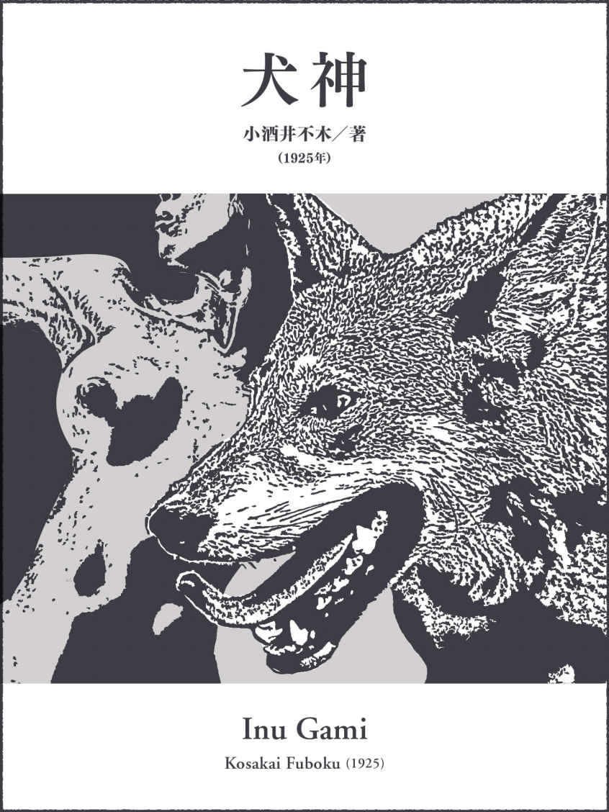
小酒井不木（こさかい・ふぼく）
１８９０年10
月８日―１９２９年４月１日
明治23
年、愛知県新蟹江村で生まれる。医学博士、翻訳家、探偵小説家。医学博士としての研究の傍ら、翻訳家、探偵小説家として活躍する。今回の作品は、ある種の精神疾患とも言われる「犬神」をテーマにした一篇をご紹介する。
私にもしポオの文才があったならば、これから述べる話も、彼の「黒猫」の十分の一ぐらいの興味を読者に与えることが出来るかもしれない。しかし、残念ながら、私はこれ迄、会社員をした経験があるだけで、探偵小説を読むことは好きであったが、二十五歳の今日に至るも、一度もこうした物語風のものに筆を染めたことはないのである。けれども私は、いま真剣になって筆を執
って居る。薄暗い監房に死刑の日を待ちながら、私が女殺しの大罪を犯すに至った事情を忠実に書き残して置こうと思って、ペンを走らせて居るのである。私はただ事実のありのままを書くだけであって、決して少しの誇張も潤色もしないつもりであるが、読者は、こんな話はあり得
べからざることだと思われるかもしれない。又、私を診察した医者に言わせれば私の精神は今なお異常を来
して居るのかも知れない。しかし兎
にも角
にも、私は、私の現在の精神状態で、嘘でないと思うことを書こうと欲して、紙面に向って居るのである。
私がこれから読者に伝えようとする話は、実はポオの「黒猫」の内容に頗
る似通って居る。私の話では、黒猫の代りに犬が中心となって居て、事件の起り方に甚
だ似
よった所がある。だから、読者はことによると「黒猫」を模倣した虚偽の物語だと判断されるかも知れない。けれど、私は、そう判断されても少しもかまわない。かまわないどころか、むしろ、「黒猫」の模倣だといわるれば、却
って私にとって、それに越した幸福はないのである。何となれば、私の拙
い文章は、巨匠のそれに比して、あまりにも見すぼらしいものであるからである。
私は伊予の国の片田舎に生れた。読者は多分四国の犬神
、九州の蛇神
の伝説を御承知であろうと思うが、私も実は犬神の家に生れたのである。犬神の家のものは、犬神の家のものと結婚しなければ家が断絶するとか、犬神の家のものが、普通の家のものと結婚すると、夫婦が非業の死を遂げるとかいう迷信があって、私の両親は、その迷信故に、御恥かしい話だが、従兄妹
よりももっと濃い仲──○○○○の間柄──で夫婦になり、私を生んだのである。私は一人子として我儘に育ち、附近の町の中学を卒業しただけで家にとどまり、もし両親が今まで生きて居
れば、田舎で百姓相手に暮す筈であったのである。ところが、先年、流行性感冒が流行ったとき、父母が同時にたおれ、それ以来、私は地主さまで収まって居たが、何かにつけ、犬神の伝説にまつわられるのがうるさくなり、去年の春、所有の土地や家屋敷まで売り払って、自由な空気の中で生活すべく上京したのである。
私の家にはたった一つ、代々伝わる家宝がある。それは何人
が書いたともわからぬ「金毘羅大神
」の五字を横にならべた長さ五尺ばかりの額で、よほど昔のものと見えて、紙の色はかなりと古びて居るが、墨痕
は、淋漓
とでも言おうか、見つめて居ると、しまいには、凄い様な感じの浮ぶほど鮮かなものである。常々両親はどんなに家がおちぶれても、これだけは売ってならぬと口癖のように言って居たので、上京するときも私はそれを持って来ることを忘れなかった。そして、さしずめ、芝区の知己の家に寄寓し、間もなく、その附近に、周囲が庭でかこまれた、小ぢんまりした家を借り受けて自炊生活を営み遊んで居るのも勿体ないと思って、某会社につとめることにしたのである。「金毘羅大神」の額は座敷兼茶の間に飾ることにしたが、この額が後に私の身の破滅を導こうとは、その当座、夢にも思わなかったのである。
さて会社につとめるようになって間もない時分は、何の事件も起らなかったが、ふと私が、カフェーの女給と馴染
んで同棲するようになってから、私の身の上に不幸が湧いて来たのである。カフェーで交際して居た頃は、彼女はおとなしい気立のよい女であったが、一しょになって見ると、幻滅の悲哀とでも言おうか、私の心に十分な満足を与えてはくれなかった。けれど私は何となく彼女に引きつけられ、彼女もまた私を熱愛した。熱愛したという言葉はあるいは妥当でないかもしれないが、少くとも彼女の私に対する挙動は、極めて露骨なものであった。一例をあげるならば、私は会社から帰ると、彼女は私のくび
にぶら下りながら、貪
るようにして、私に✕✕するのであった。
いつの間にか、私の心に、一種云うに云えない重い感じが起るようになった。ある日、私の友だちの某医科大学生は、私の顔を見て、「✕✕過度の顔だ」とからかい、そのときなお、彼は何気なしに、✕✕過度の人間は娼婦と同じく迷信深くなるものだと云った。しかし、彼が何気なしに云ったこの言葉は、私の胸にがん
と響いたというのは、✕✕過度が人をして迷信家ならしめるという医学上の説があるかどうかを私は知らないけれど、その頃私の心は何となく暗くなりかけて居て、ともすれば、私の家に伝わって居る犬神の伝説に関する迷信が、私の心を占領しようとして居たからである。即ち犬神の家のものが、普通の家に生れた女と結婚すれば変死するという一種の強迫観念が、日一日に濃厚になって行ったのである。
私は彼女と法律上の結婚をしては居なかった。結婚届を出したくも、彼女は何処
で生れたかということさえ私には話さなかったのであって、両親も兄妹もないと見えて、手紙一本出すような様子はなく、また唯一人彼女を訪ねてくる者もなかった。「露木はる」という彼女の名さえも、それが果して本名であるかどうかを私は知らなかった。年齢などはもとより、きいても言わず、きいたとて別に何にもならないので、私はその儘
にして置いた。言葉つきから判断すると四国や九州のものではなく、むしろ東北地方の生れであるらしかったが、私は彼女の素性を探偵して見る気にもならなかった。
法律上結婚はして居なくても、事実上夫婦関係を結んで居るのであるから、私の強迫観念は去る由もなく、今にも何だか恐ろしい目に逢いそうな気がした。
ある日私が会社の帰りがけに、芝公園を散歩しながら帰って来ると、どこからともなく一疋
の白犬が血相かえて駆け寄って、あっ
という間にズボンの上から噛みつき、これはと思ったときには犬は遥かむこうへ走り去り、それと同時に、右のこむら
に焼けるような痛みを覚えた。狂犬！ 私はそのとき狂犬の毒の恐ろしさよりも、「犬の祟
」即ち、これぞ身の破滅の緒だ
！ という観念の恐ろしさに全身を慄
わせた。私は一時ぼんやりしたように立って居たが、やがて気を取りなおしてとりあえず、ポケットから手巾
を取り出して、傷口を繃帯
し、びっこ
をひきながら家に帰った。
私が格子戸
をあけて上ると、彼女はいつもの通り飛び出して来て、私にしがみ
附こうとしたが、私の顔色のただならぬのと、こむら
の部分がふくれ上って居るのを見るなり、いきなりひざまずいて、私が何とも云わぬ先に手巾
の繃帯をはずし、血みどろになって居る傷口を凡
そ一分間ばかり眺めて居たが、突然その右手
を私の右の腿にかけ、犬がかみつくような風に、傷口に唇をあてて、ちょうど赤ん坊が母親の乳を吸うように、ちゅうちゅう吸いにかかった。私はびっくりして思わず脛を引こうとしたが、彼女の強い腕の力は、私の脚をぴくともさせなかった。私があまりの恐ろしさに暫らく茫然として居ると、凡そ三分間ほど血を吸って、それを心地よげに嚥
み下しながら、血に染った歯齦
を出して、ニッと笑い、
「あなた、狂犬に噛まれたでしょう。わたしが毒をすっかり吸い取って上げたから、もう予防注射を受けなくてもよいわよ」
といった。そしてその夜、四五回も彼女は私の血を吸った。
けれど私は不安でならなかったので、翌日から会社を休んで、毎日伝染病研究所へ通って、予防注射を受けることにした。彼女は私が注射を受けつつあることを知って、あまり喜ばないようであったが強
いて反抗はしなかった。ただ注射を受けたときいてからは、彼女はもう私の傷口から血を吸うことをやめてしまい、いつものとおり、巫山戯
ながら私の身体をなめるだけであった。
私は予防注射を受けながらも、何となく私の心がだんだん荒
んで行くように思った。もしや狂犬の毒が全身にめぐりかけて居るのではあるまいか。私を噛んだ犬の毒が、並はずれて強かったために予防注射もその効を奏せぬのではあるまいか。こう考えて、ある日注射をしてくれる医師にその話をすると、医師は、この研究所の予防注射を受けて恐水病にかかったものはいまだ一人もないといって慰めてくれた。そうだ。恐水病！ 水を見て恐ろしい気が起らぬ間は、病気には罹
って居ないのだ、自分はいつも芝園橋をとおる度に、立ちどまって水面を見る癖があるが、いまだ恐ろしい感じを懐いたことはないではないか、して見ると狂犬病に罹っては居ないのだ。と、一時は安心して見ても、「犬神の祟だ！」「恐ろしい身の破滅の一歩だ！」という観念は、消えるどころか益々旺盛になって来た。
私はとうとう会社をやめてしまった。しかし近頃は彼女と日夜一しょに居ることが、何となく苦しいように思えるので、午前に注射を受けに行くと、午後には散歩に出かけたが、彼女は私について来たいとも言わなかった。ある夜私は、晩飯を日本橋の某料亭ですまし、一杯機嫌でいい気持になったので、彼女をびっくりさせてやろうと、音のせぬように入口の格子戸をあけ家の中へあがって、ぬき足で、茶の間の入口まで来ると、彼女をおどしてやろうと思った私の全身は氷を浴びせかけられたかのようにその場に立ちすくんだ。
彼女は、丁度
、犬がやるように、火鉢の中に頭を突き込んで、灰をべろべろ
嘗めて居たのである。
私は恐ろしさに、踵
を返して逃げ出そうとしたが、その時彼女は顔をあげて、私の方を見ながら別に驚いた様子もなく、手巾
で口を拭って言った。
「まあ、いつ帰って来たの？ わたし近ごろ灰や泥がたべたくて仕様がないのよ。妊娠したんだわ」
私はこの言葉をきいてはっ
と思った。なるほど、妊娠の際には所謂
異嗜
が起って、平素口にしないものを食べたがることがある。して見ると、先日、私の血を喜んで吸ったのもやはり妊娠のためだったのであろう。が、この安心もほんの一時であって、次の瞬間には更に更に恐ろしい感じが、私の心の中に漲
った。彼女が果して妊娠したとすれば、それこそ、私たちの「結婚」の動かすべからざる証拠であって、いよいよ、暗い運命の手は、更に一枚の帷
を増して、私たちを包んだことになるではないか？ こう思ってふと鴨居
を見ると其処
には「金毘羅大神」の文字が、ぼんやりとした周囲の光から抜け出したように、鮮かに並んで居た。
私の心は益々暗くなった。彼女が妊娠したというのは果して本当であろうか。彼女もまた私同様に犬神の祟を受けて居るのではあるまいか。血を嘗め灰を嘗めるのは犬神の祟だといえば云い得
るではないか。私はもうたまらないような気がした。私は、いっそ、彼女を噛み殺して自分も死んでしまおうかと思う程、私の心はいらいらして来たのである。
あくる日、私は最後の予防注射を受けながら、思い切って、医師にたずねた。
「先生、私は、こうして注射を受けて、今日がおしまいであるというのに心は段々重たくなり気はいよいよ荒くなるようです。一度私の血を取って調べてくれませんか？」
「血をとって何を調べるのですか」
「もしや私の身体に犬の血がめぐって居やしないかと思うのです」
「馬鹿な！」
「いや、私は真剣です。どうか調べて下さい」
医師は、始め私が冗談を云って居るのだと思ったらしかったが、私の顔に真実の色があらわれて居るのを見て、
「よろしい、調べてあげましょう。狂犬に噛まれた人の血が、犬の血と同じ性質を帯びて来るとしたなら、それこそ学界の一大発見ですから」
といいながら、腕の静脈から二グラムばかりの血を試験管にとった。
あくる日を待ちかねて私は研究所をたずねた。医師は私の顔を見るなり、極めて真面目な顔をして、
「やって来ましたね。とうとう一大発見をしましたよ。さあ先ずこちらへ......」
私は皆まで聞かずに、呆気
にとられた医師を残して飛び出してしまった。万事休す。私の血管にはまがいもなく犬の血がめぐって居るのだ。それが今科学的に証明された訳である。犬神の家のものにはすべて、犬の血がめぐって居るのか、それとも、私が狂犬に噛まれてから、犬の血に変化したのかもとよりわかろう筈はないが、自分の身体に犬の血がめぐって居る！ こう思うだけでも、大ていの人の精神を異常ならしめるに十分である。今、こうして、多少、精神が落ついて見れば、あの時医師が大発見をしたと言ったのは、別の意味であったかも知れぬが、その時の私に、どうして、あの実験室の中へはいって、自分の血の反応を見る気が起ろう。私はその時からひたすらに、如何にもして自分の汚れた血を、人間の血に浄
めもどしたいと思った。しかし、医者でない私に何の施しようがあろう。私の講じ得
る唯一の手段は、酒の量を増すことであった。
私は痛飲した。家に居ても、外出先でも、たえず酒につかって居た。始めの間は、酒を多量に飲むと、不思議にも私の不安は一掃され、と同時に、私の血が浄められて行くように思った。ところが日を経
るに従って、酒も最早
十分その効力をあらわすことが出来なかった。そして酒の効力が無くなって、最早私の血を浄める手段が無いと思うと、私の血は、前よりも倍の速度で汚れて行くかのように思われた。
彼女は相も変らず灰をなめ泥を喰った。近ごろになって彼女はなまぐさい汁のかかった泥を一層好んで喰うようになった。やっぱり妊娠ではない犬の祟だ。いや、彼女自身が犬なのだ。彼女は私の身を滅ぼすために魔界から遣わされた犬だ。こう思うと、私はだんだん、彼女に近づくことさえ怖くなり、後には彼女の存在をも呪うようになった。彼女は相も変らず茶の間に閉じこもり、「金毘羅大神」の額の下で、火鉢のそばで針仕事をして居た。
ある晩私が、無闇に酒をのみ、その夜に限って常になく酔って帰ると、彼女は白い布
で何か作って居たが、私が傍へ行くと、つと、それを後ろにかくした。
「何だい、それは？」
こう言って、私は彼女にとびかかりながら、そのものを彼女の手から奪い取り、一目見るなり思わずも落してしまった。それは玩具
の犬であった。
私はぎょっとした。
「なぜこんなものを作るのだ！」
「私近頃、犬の玩具が好きになったのよ。それも無理はないわ、私は戌
年の生れだもの。あらなぜそんな怖い顔するの？」
こう言いながら、彼女は私の機嫌を取るために例の如く私にしがみついて、私の頬をなめた。その時私は常になくぞっ
とした。というのは、彼女の舌が犬の舌のようにざらざらして居たからである。恐らく彼女は、つい今しがた迄、泥を食べて居たために、舌がざらついたのであろうが、その時はもうそんなことを考える暇はなく、ただもう彼女が犬だという思いで一ぱいになった。
力をこめて、私が彼女を引き離すと、彼女はにやり
と笑ったが、その時彼女の口元が三寸
ほど前へのびて来て、犬そっくりの口元になった。
火鉢
に突き立ててあった裁縫用の鏝
をつかむが早いか、私は力をこめて、彼女の額に打ち下した。その途端、血のようなものが、ぱっと飛び出したようであるが、不思議にも血は流れ出ず、彼女が一言もいわずに仰向きにどたりとたおれると、始めて額の疵
からどす黒い血が畳の上へ流れ出た。
はっと我にかえって、よく見ると彼女の顔はいつもの彼女の顔である。死んだ人間の顔に外ならない。私は私の早まった行為をくやむ傍
ら、不思議にも安心に似たような気分が湧き、同時にまた幾分か理性が働きかけたようにも思った。
私は彼女の死体を風呂桶の中へ運んで蓋
をし、それから座敷兼茶の間へ戻ると、驚いたことに、彼女の額から出た血溜りが、丁度
紅い絵具で畳の上にわざわざ描いたかのように、一疋
の吠えて居る犬の形を作って居た。これを見た私の全身から、たらたらと冷汗の流れ出るのを覚えた。早速バケツに水を汲んで来て、先ずその呪うべき犬の形を拭き取り、それからあたりを見まわしたが、意外にも血溜りの外には、血のとばっちりは一つもなく、畳の上にも、障子にも襖
にも、血痕らしいものはさらに見つからなかった。
それから私は三日に亘
って彼女の死体を切断し、風呂場の竈
で焼き払った。夜になると何処からともなく犬が集まって来ては頻
りに吠えたが、幸にして私が死体を片づけてしまう迄は誰にも見とがめられずに済んだ。私は竈の中の灰までも掻
き集めて、それを裏の畑にすっかりばらまいてしまい、畳や風呂桶は幾度も幾度も雑巾をかけて、今はもう誰が取り調べに来ても大丈夫だと思った。
果して四日目の朝、三人の刑事がやって来て、令状を示しながら、家宅捜索をさせて貰いたいと言った。多分犬の吠えるのを、不審に思った隣人たちの噂でも聞伝えて、取り調べに来たのであろう。私は、自分ながら感心するほど沈着な態度で、三人を迎え入れ、同居して居た女は先日ぶらりと出かけたまま帰って来ない旨
を告げた。刑事たちは、私に色々訊問するかと思いの外、いきなり風呂場の竈の灰を調べに行ったけれど、もとより証拠の見つかろう筈はなかった。そこで三人はにやにや笑って何事か囁き合いながら、今度は茶の間の畳の上を廓大鏡
を出して、検査したが、やはり、彼等の努力は空
に帰した。
突然、私は何だかこう胸を圧迫されるように感じた。いわば軽い嘔気
のような気分が起ったので、私は彼等から眼を離して、火鉢の前に坐り、手持無沙汰に灰を掻きならした。
ふと気がついて見ると、今迄ぼそぼそ話しをして居た三人の声が聞えなくなって、あたりは気味の悪いほど静かになったので、何事が起ったのかと顔をあげて見ると、三人は、「金毘羅大神」と書いた額の真下に立ちながら、恰
も飛行機の宙返りでも見て居るかのように、額の一点を見つめて居た。
私も立ち上って三人の傍へ近よりながら、額の文字をながめた。
ああその時の私の驚き！ 私はまるで全身の神経が一本一本抜け去ったかのように覚えた。「金毘羅大神」の大の字が、不思議にも犬の字に変って、しかも大の字を犬の字たらしめて居る「丶」こそは、まがう方なき、どす黒い血痕ではないか。思えば、あの時、私が彼女の額に鏝
を打ち下した途端に、たった一滴だけ血が飛んで大の字の傍らに附着したのを、私はうっかり見逃がしてしまったのである。
私はうーんと一声うめいて、その場に気絶した。
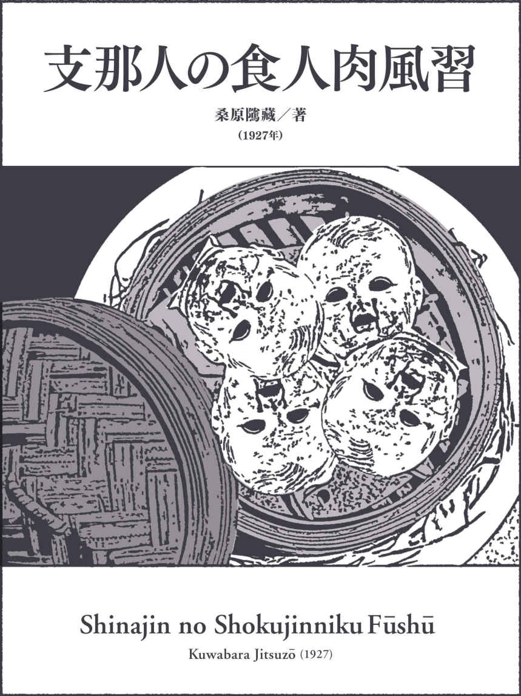
桑原隲蔵（くわばら・じつぞう）
１８７１年１月27
日─１９３１年５月24
日
明治３年、福井県敦賀市で生まれる。東洋史学者、京都帝国大学教授。東洋史学者としての第一人者。今回は『東洋史説苑』より、中国文明おけるカニバリズムの風習を考察した一節をご紹介する。
この論文を読む人は、更に大正十三年七月発行の『東洋学報』に掲載した、拙稿「支那人間に於ける食人肉の風習」（本全集第二卷所收）を参考されたい。
この四月二十七八日の諸新聞に、
目下、露国の首都ペトログラードの食糧窮乏を極めたる折柄、官憲にて支那人が人肉を市場に販売しつつありし事実を発見し、その支那人を取り押えて、遂にこれを銃殺せり。
という驚くべき外国電報が掲載されてある。私はこの電報によって、思いがけなくも、古来支那人の間に行わるる人肉食用の風習を思い起さざるを得ないのである。
いったい支那人の間に、昔から食人肉の風習のあったことは、経史に歴然たる確証があって、まったく疑惑の余地がない。古い所では殷の紂王
が、自分の不行跡
を諫
めた翼侯を炙
とし、鬼侯を腊
にし、梅伯を醢
にして居る。炙は人肉を炙
ること、腊は人肉を乾すこと、醢とは人肉を醤漬
にすることで、いずれも人肉を食することを前提とした調理法に過ぎぬ。下って春秋時代になると、有名な斉の桓公
、晋の文公
、いずれも人肉を食して居る。斉の桓公は、その家来易牙
の調理して進めた彼の子供の肉を食膳にのせて舌鼓を打ち、晋の文公は、その天下放浪中、食に窮したとき、従臣介之推
の股肉を喰らって餓えをしのいだ。楚漢戦争時代に、楚の項羽は漢の高祖の父太公を捕虜にし、これをまな板の上に置いて高祖
を威嚇した。高祖はこれに対して、幸分
二
我一杯羹
一
と応えている。これらの応対は、食人肉の風習の存在を承認せずしては、十分に理解出来ぬことと思う。
支那人の人肉を食するのは、決して稀有偶然の出来事でない。歴代の正史の随所に、その証拠を発見することが出来る。中に就いてもっとも著しい二、三の実例を示そう。第一の例としては隋末の劇賊朱粲
を挙げねばならぬ。彼は人肉を以て食の最美なるものと称し、部下に命じ、至る所の婦人子供をさらい、軍の食糧に供せしめて居る。唐末の賊首黄巣
の軍もまた同様である。黄巣の軍は長安没落後、食糧に乏しく、毎日沿道の百姓数千人を捕え、生きながらこれを臼に入れ、摺りつぶして食に充てた。この時討手に向った官軍は、賊軍を討伐するよりも、彼等の糧乏しきに乗じ、罪のない良民を捕え、これを賊軍に売り付けて金儲けをしたという。ずいぶん呆れた話であるが、支那兵の所行としては、あり得ることかも知れぬ。朱粲や黄巣の事跡は、いずれも『旧唐書』に見えている。また『五代史記』によると、五代の初に揚州地方は連年の騒乱のため穀倉が空となった結果、人肉の需要が盛んに起り、貧民の間では、夫はその妻を父はその子を肉屋に売り渡し、肉屋の主人は彼等の目前でこれを料理いたし、羊豚と同様に店前で人肉を売り出したという。
更に南宋の初期には、金人の侵略により、山東・京西・淮南の諸路一帯にかけて、穀価が暴騰せしため、この方面の人々は、百姓も兵卒も盜賊も、皆人肉を食して口腹を充たした。当時人間を両脚羊と称した。人肉を羊肉と同一視したわけである。南宋の莊綽の『雞肋編』に、忠実に当時の慘状を述記して居る。これにも勝る一層の慘事が、元末擾乱
の際に実現した。その光景は、当時の陶宗儀
の『輟耕
録』に委細に描出されて居る。
実例の紹介は右に止めて、支那人の人肉を食用する動機を考察すると、おおよそこれを左の五種に区別することが出来ると思う。
第一 飢餓より来る要求で、勿論これが一番普通である。支那では凶年の場合に、いわゆる人相食と申して、もっとも露骨に弱肉強食の有様を現出する。かかる場合にも、民間ではその子を取り替えて、甲は乙の子を、乙は甲の子を食して、一時の露命をつなぎ、または公然人肉を市場で販売するという事実がすこぶる多い。支那では凶年に人肉を食料に充てるのが、ほとんど慣例となっている。
第二 凶年でなくとも、戦争の際重囲のうちに陷って食糧尽きる時は、支那人は人肉を以て食糧に代用することがほとんど一種の慣例と申して差し支えない。唐の張巡 ・許遠 らが、賊軍のために睢陽 に囲まれて糧道絶ゆるや、張巡は真っ先にその愛妾を殺し、許遠はその従僕を殺して兵士の食に充て、続きて城中の婦人を、最後に戦闘に堪え得ざる老弱の男子を食糧に供したことは、有名なる話であるが、かかる事実は支那ではむしろ普通の出来事かと思う。蒙古の太宗 が金の都の汴京 を囲んだ時、城中食尽きて人々相呑噬 して、一日の生を盗んだ慘憺 たる光景は、当時の籠城者の一人なる劉祁の記録によって、七百年後の今日でも、その髣髴 を想見することが出来る。明末の流賊李自成 のために、長い攻囲を受けて、食糧に尽きた開封の城民は、父は子を食い、夫は妻を食い、兄は弟を食うという、戦慄すべき餓鬼道に陷った有様は、当時の籠城者の一人なる李光壂 の日誌に備載されて居る。
第三 嗜好のために人肉を食用することで、この例は余り多くない。五代時代の高澧や萇従簡は、相当高位大官の身分なるに拘らず、人肉を好み、あるいは行人を掠め、あるいは子供を捕えて食料に供したという。唐代の薛震や獨孤莊なども、人肉嗜好者として後世に知られている。その他にも若干の人肉嗜好者を列挙することが出来る。
第四 憎悪の果てにその人の肉を食うことである。支那人はその怨敵に対する時、よく欲 レ 噬 二 其肉 一 という文字を使用するが、これは決して誇張せる形容でなく、率直なる事実である。支那人は死後も肉体の保存を必要と信じ、その肉を食えば、これによって死者に多大の苦痛を与え得るものと信じて居る。梁の武帝を餓死せしめた反将の侯景が、後に殺害されて市 に曝された時、彼を悪 める士民は争うてその肉を食い尽くした。唐の楊貴妃の族兄楊国忠が、貴妃と共に馬嵬で殺害された時も、これと同様に、彼の肉は軍民の餌食となった。元の世祖の權臣阿合馬 の如き、明の宦官劉瑾の如き、その失脚して殺戮に遇った時、かねて彼等を憎める人々は、その肉を買い取って、これを生食 したという。
第五 疾病治療の目的のために、人肉を食することである。唐の玄宗時代に陳藏器が、その著『本草拾遺』中に薬材として人肉を加えて以来、支那歴代の本草は、いずれも人肉を薬材として取り扱う。人肉を薬材として食用することは、唐以前にほとんど稀で、唐以後に限る。全く陳藏器が俑 を作したものといわねばならぬ。かくて宋・元以来、父母や舅姑の病気の場合、その子たり又はその嫁たる者が、自己の肉を割き、薬餌としてこれを進めることが、ほとんど一種の流行となった。政府もまたかかる行為を孝行として奨励を加える。元時代にはかかる場合に、人毎に絹五疋、羊両頭、田一頃を賞賜して旌表 したという。
雷同性に富み、利慾心の深い支那人は、この政府の奨励に煽られて、一層盛んに人肉を使用することとなり、弊害底止する所を知らざる有様となった。明の太祖はこの弊風を矯正する目的で、洪武二十七年（西暦一三九四）に詔勅を発して、今後股を割き孝を行う者に対して、一切旌表を禁止して居る。されどこれも一時のことと見え、明・清時代を通じて、自己の股肉を割いて父母に進むることは、最上の孝行として社会に歓迎せられ、政府もまた多くの場合これに旌表を加えた。民国以後の支那の新聞にも、時々かかる行為が特別に紹介されて居る。
支那人の食人肉風習は、支那歴代の史料に記載されてあるのみでなく、同時に外国の観光者によって保証されて居る。唐末五代にかけて支那に渡航した、マホメット教徒の記録を見ても、その当時の支那人は人肉を食用し、その市場に於て公然人肉を販売し、しかも官憲はこれに就いてなんらの取り締まりをなさざりしことが明白である。この古きマホメット教徒の記録を仏訳して、これを世間に紹介したフランスの東洋学者レイノー（Reinaud）は、この記事に疑惑をはさみて、当時支那は擾乱
を極めた時代であるから、あるいは一時的現象として、かかる事実存在せしや知れざれど、恐らくこれはマホメット教徒の誤伝で、事実でなかろうと申している。しかしこれはレイノーが支那の実情に熟知せざる故で、マホメット教徒の記事になんらの誤伝もない。元時代ないし明清時代に支那に観光した、もしくは支那に滯在した外国人の記録の中にも、支那人の食人肉風習を伝えるものが少なくない。
古代に溯って稽
えると、食人肉の風習は、ずいぶん世界に広く行われたらしい。されど支那の如き、世界最古の文明国のひとつで、しかも幾千年間引き続いて、この蛮風の持続した国は余り見当らぬ。南洋諸島の間には、比較的近代まで、食人肉の風習が盛んに行われて居った。北方民族の間にも、かつて食人肉の風習が行われて居った。支那に於けるこの蛮風は、外国伝来のものであるか、もしくはその国固有のものであるかは、勿論容易に決定することが出来ぬ。ただ極めて悠遠なる時代から、支那にこの蛮風の存在したことは、記録によって疑いを容
るべき余地がない。
日支両国は唇歯
相寄る間柄で、勿論親善でなければならぬ。日支の親善を図るには、まず日本人がよく支那人を理解しなければならぬ。支那人をよく理解するためには、表裏二面より彼等を観察する必要がある。経伝詩文によって、支那人の長所美点を会得するのも勿論必要であるが、同時にその反対の方面をも、一応心得置くべきことと思う。食人肉風習の存在は、支那人に取っては余り名誉のことではない。されど厳然たる事実は、到底これを掩蔽
することを許さぬ。支那人の一面に、かかる風習の存在せしことを承知し置くのもまた、支那人を理解するに無用であるまいと思う。支那人の間に於ける食人肉風習の存在は、決して新しい問題ではない。既に十数年前からDer Kannibalismus der Chinesenという問題は、多少欧州学者の注意を惹いて居る。ただ彼等は文献上から、十分にこの風習の存在を証明出来なかったため、今日に至るまで、未だこの問題に関する徹底した論文が、発表されて居らぬようである。
私も最近二、三年間、この問題の調査に手をつけ、多少得る所があった。その調査の結果全体は、遠からず学界に発表いたすこととして、今はとりあえず支那人の人肉売買という外国電報に促されて、古来支那に於ける食人肉風習の存在せる事実の一端をここに紹介することにした。（大正八年四月二十七日）
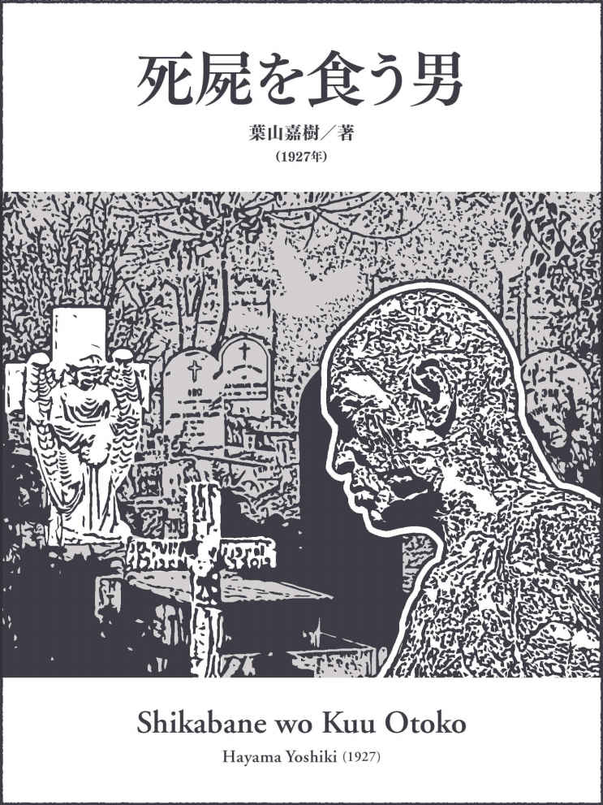
葉山嘉樹（はやま・よしき）
１８９４年３月12
日─１９４５年10
月18
日
明治27
年、福岡県豊津村で生まれる。プロレタリア文学の小説家。大正12
年「名古屋共産党事件」により投獄。獄中で『淫売婦』『難破』『牢獄の半日』を執筆する。出獄後、『セメント樽の中の手紙』『海に生くる人々』などを発表。今回はあまり政治色のない、怪談小説風の一篇をご紹介する。
いろんなことを知らないほうがいい、と思われることがあなた方にもよくあるでしょう。
フト、新聞の「その日の運勢」などに眼がつく。自分が七赤
だか八白
だかまるっきり知らなければ文句はないが、自分は二黒
だと知っていれば、旅行や、金談はいけない、などとあると、構わない、やっつけはするが、どこか心の隅
のほうにそいつが、しつっこくくっついている。
「あそこの家の屋根からは、毎晩人魂
が飛ぶ。見た事があるかい？」
そうなると、子供や臆病
な男は夜になるとそこを通らない。
このくらいのことはなんでもない。命をとられるほどのことはないから。
だが、見たため、知ったために命を落とす人が多くある。その一つの話を書いてみましょう。
その学校は、昔は藩の学校だった。明治の維新後県立の中学に変わった。その時分には県下に二つしか中学がなかったので、その中学もすばらしく大きい校舎と、兵営のような寄宿舎とを持つほど膨張した。
中学は山の中にあった。運動場は代々木の練兵場ほど広くて、一方は県社○○○神社に続いており、一方は聖徳
太子の建立
にかかるといわれる国分寺
に続いていた。そしてまた一方は湖になっていて毎年一人ずつ、その中学の生徒が溺死
するならわしになっていた。
その湖の岸の北側には屠殺
場があって、南側には墓地があった。
学問は静かにしなけれゃいけない。ことの標本ででもあるように、学校は静寂な境に立っていた。
おまけに、明治が大正に変わろうとする時になると、その中学のある村が、栓
を抜いた風呂桶
の水のように人口が減り始めた。残っている者は旧藩の士族で、いくらかの恩給をもらっている廃吏
ばかりになった。
なぜかなら、その村は、殿様が追い詰められた時に、逃げ込んで無理にこしらえた山中の一村であったから、なんにも産業というものがなかった。
で、中学の存在によって繁栄を引き止めようとしたが、困ったことには中学がその地方十里以内の地域に一度に七つも創立された。
だいたい今まで中学が少な過ぎたために、県で立てたのが二つ、その当時、衆議院議員選挙の猛烈な競争があったが、一人の立候補が、石炭色の巨万の金を投じて、ほとんどありとあらゆる村に中学を寄付したその数が五つ。
こんなわけで、今まで七人も一つ部屋にいた寄宿生が、一度に二人か三人かに減ってしまった。
その一つの部屋に、深谷
というのと、安岡
と呼ばれる卒業期の五年生がいた。
もちろん、部屋の窓の外は松林であった。松の梢
を越して国分寺の五重の塔が、日の光、月の光に見渡された。
人数に比べて部屋の数が多過ぎるので、寄宿舎は階上を自習室にあて、階下を寝室にあててあった。どちらも二十畳ほど敷ける木造西洋風に造ってあって、二人では、少々淋
しすぎた。が、深谷も安岡も、それを口に出して訴えるのには血気盛んに過ぎた。
それどころではない、深谷はできることならば、その部屋に一人でいたかった。もし許すならばその中学の寄宿舎全体に、たった一人でいたかった。
何かしら、人間ぎらいな、人を避け、一人で秘密を味わおうという気振
りが深谷にあることは、安岡も感じていた。
安岡は淋しかった。なんだか心細かった。がもう一学期半辛抱すれば、華やかな東京に出られるのだからと強
いて独り慰め、鼓舞していた。
十月の末であった。
もう、水の中に入らねばしのげないという日盛りの暑さでもないのに、夕方までグラウンドで練習していた野球部の連中が、泥と汗とを洗い流し、且
つは元気をも誇るために、例の湖へ出かけて泳いだ。
ところがその中の一人が、うまく水中に潜って見せたが、うまく水上に浮かび上がらなかった。あまり水裡
の時間が長いので、賞賛の声、羨望
の声が、恐怖の叫びに変わった。
ついに野球のセコチャンが一人溺死
した。
湖は、底もなく澄みわたった空を映して、魔の色をますます濃くした。
「屠牛
所の生き血の崇
りがあの湖にはあるのだろう」
一週間ぐらいは、その噂
で持ち切っていた。
セコチャンは、自分をのみ殺した湖の、蒼黒
い湖面を見下ろす墓地に、永劫
に眠った。白い旗が、ヒラヒラと、彼の生前を思わせる応援旗のようにはためいた。
安岡は、そのことがあってのちますます淋
しさを感ずるようになった。部屋が広すぎた。松が忍び足のように鳴った。国分寺の鐘が陰
にこもって聞こえてくるようになった。
こういったふうな状態は、彼をやや神経衰弱に陥れ、睡眠を妨げる結果に導いた。
彼とベッドを並べて寝る深谷は、その問題についてはいつも口を緘
していた。彼にはまるで興味がないように見えた。
どちらかといえば、深谷のほうがこんな無気味な淋しい状態からは、先に神経衰弱にかかるのが至当であるはずだった。
色の青白い、瘠
せた、胸の薄い、頭の大きいのと反比例に首筋の小さい、ヒョロヒョロした深谷であった。そのうえ、なんらの事件のない時でさえ彼は、考え込んでばかりいて、影の薄い印象を人に与えていた。だが、彼はベッドに入ると直ぐに眠った。小さな鼾
さえかいて。
安岡は、ふだん臆病
そうに見える深谷が、グウグウ眠るのに腹を立てながら、十一時にもなれば眠りに陥ることができた。
セコチャンが溺死して、一週間目の晩であった。安岡はガサガサと寝返りを三時間も打ち続けたあげく、眠りかけていた。が、まだ完全には眠ってしまわないで、夢の初めか、現
の終わりかの幻を見ていると、フト彼の顔の辺りに何かを感じた。彼の鋭くとがった神経は針でも通されたように、彼を冷たい沼の水のような現実に立ち返らせた。が、彼は盗棒
に忍び込まれた娘のように、本能的に息を殺しただけであった。
やがて、電燈のスイッチがパチッと鳴ると同時に部屋が明るくなった。深谷が寝台から下りてスリッパを履いて、便所に行くらしく出て行った。
安岡の眼は冴
えた。彼は、何を自分の顔の辺りに感じたかを考え始めた。
──人の息だった。体温だった。だが、この部屋には深谷と自分とだけしかいない。深谷がおれの寝息をうかがうわけがない。万一、深谷がうかがったにしたところで、もしそうなら電燈のついた時彼が寝台の上にいるはずがない。そしてあんなに大っぴらに、スリッパをバタバタさせて出てゆくはずがない。第一、なんのために深谷がおれの寝息なんぞうかがう必要があるのだ！ おれは神経衰弱をやっているんだ。幻だ。夢だ。錯覚なんだ！──
こう思って彼は自分自身を納得させて、再び眠りに入ろうと努めた。
深谷はすぐに帰ってきて、電燈を消した。そしてベッドに入ると、間もなくかすかな鼾
さえ立て始めた。
安岡は自分の頭が変になっていることを感じて、眼をつむって、息を大きくして、頭の中で数を数え始めた。
一、二、三、四、
五十一、五十二、
四百、四百一、四百二、
千二百十、千二百十一、千二百十二、
彼のやや沈静した頭が、千二百十二を数え終わった時、再び彼は顔の辺りに、人間の体温を感じた。が、彼はこんどはいきなり冷水をぶっかけられたように、ゾッとしはしたが千二百十三、千二百十四と、数珠
をつまぐるように数え続けた。そして身動き一つ、睫毛
一本動かさないで眠りを装
った。
電燈がパッと、彼の瞼
を明るく温めた。
再び彼の体を戦慄
がかけ抜け、頭髪に痛さをさえ感じた。
電燈がパッと消えた。
深谷が静かにドアを開けて出て行った。
──奴
は恋人でもできたのだろうか？──
安岡は考えた。けれども深谷は決して女のことなど考えたり、まして恋などするほど成熟しているようには見えなかった。むしろ彼は発育の不十分な、病身で内気で、たとい女のほうから言い寄られたにしても、嫌悪
の感を抱
くくらいな少年であった。器械体操では、金棒
に尻上
がりもできないし、木馬はその半分のところまでも届かないほどの弱々しさであった。
安岡は、次から次へと深谷のことについて考えたが、どうしても、彼が恋人を持っているとは考えられなかった。それなら......盗癖でもあるのだろうか？
だが、深谷は級友中でも有数の資産家の息子であった。それにしても盗癖は違う。いくら不自由をしない家の子でも、盗癖ばかりは不可抗的なものだ。だが、盗癖ならばまず彼がその難をこうむるべき手近にいた。且
つ近来、学校中で盗難事件はさらになかった。
下痢かなんかだろう。
安岡はそう思って、眠りを求めたが眠りは深谷が連れて出でもしたように、その部屋の空気から消えてしまった。
おそらく、二時間、あるいは三時間もたってから深谷は、すき間から忍び入る風のように、ドアを開けて帰ってきた。
部屋へ入ると、深谷はワザと足音を高くして、電燈のスイッチをひねった。それから寝台へもぐり込む前に電燈を消した。
安岡は研ぎ出された白刃
のような神経で、深谷が何か正体をつかむことはできないが、凄惨
な空気をまとって帰ったことを感じた。
──決闘をするような男じゃ、絶対にないのだが。──
安岡は、そんな下らないことに頭を疲らすことが、どんなに明日の課業に影響するかを思って、再び、一二三四と数え始めた。が、彼が眠りについたのは、起きなければならない一時間前であった。
その次の夜であった。
安岡は前夜の睡眠不足でひどく疲れていたので、自習をいいかげんに切り上げて早く床に入った。そして、妙な素振りをする深谷の来る前に眠っちまおうと決心した。
「でなけりゃ、とてもやり切れない」
と思った。だが、そう思えば思うほど、なおさら寝つかれなかった。部屋が、そして寄宿舎全体が淋
し過ぎた。おまけに、なんだか底の知れない泥沼に踏み込みでもしたように、深谷の挙動が疑われ出した。
深谷はカッキリ、就寝ラッパ──その中学は一切をラッパでやった──が鳴ると同時にコツコツと、二階から下りてきた。
安岡は全く眠ったふうを装った。が、眠れもしないのに眠ったふうを装うことは、全く苦しいことであった。だが、何かしら彼の心の底で好奇心に似た気持ちが、彼にその困難を堪えしめた。
深谷は、昨夜と同じく何事もないように、ベッドに入ると五分もたたないうちに、軽い鼾
をかき始めた。
「今夜はもう出ないのかしら」と、安岡は失望に似た安堵
を感じて、ウトウトした。
と、また、昨夜と同じ人間の体温を頬
の辺りに感じた。
「確かに寝息をうかがってるんだ！」
だが、彼は今までどおりと同じ調子の寝息を、非常な努力のもとに続けた。
パッと電燈がついた。そのまま深谷のスリッパがパタパタとドアのほうに動いた。が、深谷はドアの前でそれを開くと、そのまま振り返って、安岡のほうをジーッとみつめた。その顔の表情はなんともいえない凄
いものであった。死を決した顔！ か、死を宣告された顔！ であった。
彼は安岡が依然のままの寝息で眠りこけているのを見すますと、こんどは風のように帰ってきて、スイッチをひねらないで電球をねじって灯
を消した。
そうして開けたドアから風のように出て行った。
安岡はそれを感じた。すぐに彼は静かに上半身を起こして耳を澄ました。
木の葉をわたる微風のような深谷の気配が廊下に感じられた。彼はやはり静かに立ち上がると深谷の跡をつけた。
廊下に片っ方の眼だけ出すと、深谷が便所のほうへ足音もなく駆けてゆく後ろ姿が見えた。
「ハテナ。やっぱり下痢かな」
と思ううちに、果たして深谷は便所に入った。が安岡は作りつけられたように、片っ方の眼だけで便所の入り口を見張り続けた。
深谷は便所に入ると、ドアを五分
ばかり閉め残して、そのすき間から薄暗い電燈に照らし出された、ガランとした埃
だらけの長い廊下をのぞいていた。
「やっぱり便所だったのか。それにしてはなんだって人の寝息なんぞうかがいやがるんだろう。妙な奴
だ」
と、安岡が五分間ばかり見張りにしびれを切らして、ベッドのほうへ帰ろうとする瞬間、便所のドアが少しずつ動くのを見た。ドアは全く音もなく、少しずつ開き始めた。
深谷の姿はドアがほとんど八分
目どころまで開いたのに見えなかった。まるでドアが独りでに開いたようだった。安岡はゾッとした。
と、深谷の姿が風のように廊下に飛び出して、やにわに廊下の窓から校庭に跳び出した。
安岡の体を戦慄
がかけ抜けた。が次の瞬間には、まるで深谷の身軽さが伝染しでもしたように、風のように深谷の後を追った。
深谷は、寄宿舎に属する松林の間を、忍術使いででもあるように、フワフワとしかも早く飛んでいた。
やがて、代々木の練兵場ほども広いグラウンドに出た。
これには安岡は困った。グラウンドには眼をさえぎる何物もない。曇っていて今にも降り出しそうな空ではあったが、その厚い空の底には月があった。グラウンドを追っかければ、発見されるのは決まりきったことであった。
が、風のように早い深谷を見失わないためには、腹這
ってなぞ行けなかった。で、彼はとっさの間に、グラウンドに沿うて木柵
によって仕切られている街道まで腹這いになって進んだ。
街道に出ると、彼は木柵を盾
にして、グラウンドの灰色の景色をながめた。その時にはもう深谷の姿は見えなかった。彼は茫然
として立ちつくした。なぜかならいくら風のように速い深谷であっても、神通力
を持っていないかぎり、そんなに早くグラウンドを通り抜け得るはずがなかったから。
「奴も腹這いになって、障害物のない所で見張ってやがるんだな」
安岡は、自分自身にさえ気取
られないように、木柵に沿うて、グラウンドの塵
一本さえ、その薄闇
の中に見失うまいとするようにして進んだ。
やや柵の曲がった辺へ来ると、グラウンドではなく、街道を風のように飛んでゆく姿が見えた。
その風の姿は、一週間前、セコチャンが溺死
した沼のほうへと飛んだ。
安岡は、自分が溺死しかけてでもいるような恐怖にとらわれ、戦慄
を覚えた。が、次の瞬間には無我夢中になって、フッ飛んだ。
道は沼に沿うて、蛇
のように陰鬱
にうねっていた。その道の上を、生きた人魂
のように二人は飛んでいた。
沼の表は、曇った空を映して腐屍
の皮膚のように、重苦しく無気味に映って見えた。
やがて道は墓地の辺にまで、二人の姿を吹くように導いた。
墓地の入り口まで先頭の人影が来ると、吹き消したように消えてしまった。安岡は同時に路面へ倒れた。
墓地の松林の間には、白い旗や提灯
が、巻かれもしないでブラッと下がっていた。新しいのや中古
の卒塔婆
などが、長い病人の臨終を思わせるように瘠
せた形相
で、立ち並んでいた。松の茂った葉と葉との間から、曇った空が人魂のように丸い空間をのぞかせていた。
安岡は這うようにして進んだ。彼の眼をもしその時だれかが見たなら、その人はきっと飛び上がって叫んだであろう。それほど彼は熱に浮かされたような、いわば潜水服の頭についているのと同じ眼をしていた。
そして、その眼は恐るべき情景を見た。
それは筆紙に表わし得ない種類のものであった。
深谷は、一週間前に溺死
したセコチャンの新仏の廓内
にいた！
彼のどこにそんな力があったのであろう。野球のチャンが二人でようやく載っけることができた、仮の墓石を、深谷のヒョロヒョロな手が軽々と持ち上げた。
その石をそばへ取り除
けると、彼は垣根
の生け垣の間から、鍬
と鋸
とを取り出した。
鍬は音を立てないように、しかしめまぐるしく、まだ固まり切らない墓土を撥
ね返した。
安岡の空
な眼はこれを見ていた。彼はいつの間にか陸から切り離された、流氷の上にいるように感じた。
深谷は何をするのだろう？ そんなにセコチャンと親密ではなかった。同性愛などとは思いもよらない仲であった。ほとんど一度も口さえ利いたことはなかった！
軟らかい墓土はそばに高く撥ねられた。そして棺
の上はだんだん低くなった。深谷の腰から下は土の陰に隠れた。
キー、キー、バリッ、と釘
の抜ける音がした。鍬で、棺の蓋
をこじ開けたらしかった。
深谷の姿は、穴の中にかがみ込んで見えなかった。
が、鋸が、確かに骨を引いている響きが、何一つ物音のない、かすかな息の響きさえ聞こえそうな寂寥
を、鈍くつんざいていた。
安岡は、耳だけになっていた。
プツッ！ と、鋸の刃が何か柔らかいものにぶっつかる音がした。腐屍
の臭
いが、安岡の鼻を鋭く衝
いた。
生け垣の外から、腹這
いになって目を凝らしている安岡の前に、おもむろに深谷が背を伸ばした。
彼は屍骸
の腕を持っていた。そして周りを見回した。ちょうど犬がするように少し顎
を持ち上げて、高鼻を嗅
いだ。
名状しがたい表情が彼の顔を横切った。とまるで、恋人の腕にキッスでもするように、屍
の腕へ口を持って行った。
彼は、うまそうにそれを食い始めた。
もし安岡が立っているか、うずくまっているかしたら彼は倒れたに違いなかった。が、幸いにして彼は腹這っていたから、それ以上に倒れることはなかった。
が、彼は叫ぶまいとして、いきなり地面に口を押しつけた。土にはまるでそれが腐屍
ででもあるように、臭気があるように感じた。彼はどうして、寄宿舎に帰ったか自分でも知らなかった。
彼は、口から頬
へかけて泥だらけになって昏々
と死のように眠った。
朝、深谷は静かに安岡の起きるのを待っていた。
安岡は十一時ごろになって死のような眠りからよみがえった。
不思議なことには深谷も、まだ寝室にいた。
安岡が眼を覚ましたことを見ると、
「君の欠席届は僕が出しておいたよ。安岡君」と、深谷が言った。
「ありがと」安岡はしまいまで言えなかった。
「きみは、昨夜、何か見なかったかい？」と、深谷が聞いた。
「いいや。何も見なかった」安岡の語尾は消えた。
「きみの口の周りは、まるで死屍
でも食ったように、泥だらけだよ。洗ったらいいだろう。どうしたんだね」
深谷が、静かに言った。
が、その顔には、鬼気があふれていた。
それっきり、安岡は病気になってしまった。その五、六日後から修学旅行であった。
深谷は修学旅行に、安岡は故郷に病を養いに帰った。
安岡は故郷のあらゆる医師の立ち会い診断でも病名が判然しなかった。臨終の枕頭
の親友に彼は言った。
「僕の病源は僕だけが知っている」
こう言って、切れ切れな言葉で彼は屍
を食うのを見た一場
を物語った。そして忌まわしい世に別れを告げてしまった。
その同じ時刻に、安岡が最期の息を吐き出す時に、旅行先で深谷が行方不明になった。
数日後、深谷の屍骸
が渚
に打ち上げられていた。その死体は、大理石のように半透明であった。
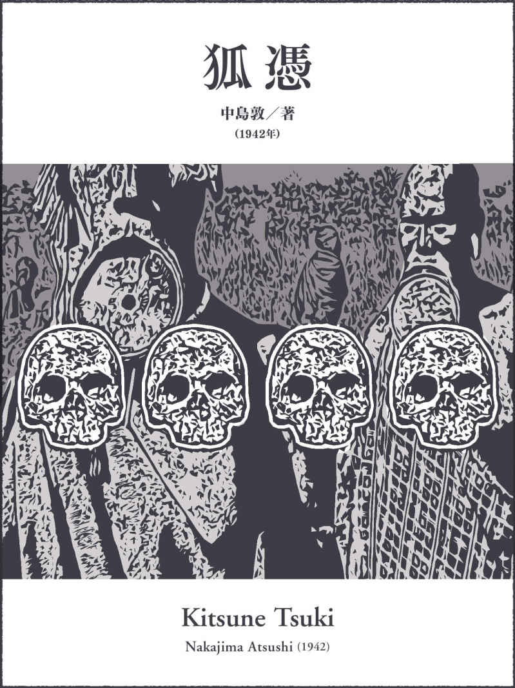
中島敦（なかじま・あつし）
１９０９年５月５日─１９４２年12
月４日
明治42
年、東京市四谷で生まれる。小説家。昭和16
年『山月記』『古譚』『光と風と夢』を発表。『光と風と夢』は芥川賞候補となる。翌年より専業作家となるが、持病の気管支喘息のため33
歳の若さで死去。今回の作品は４つの短篇からなる『古譚』の中の一篇『狐憑』をご紹介する。
ネウリ部落のシャクに憑
きものがしたという評判である。色々なものがこの男にのり移るのだそうだ。鷹だの狼だの獺
だのの靈
が哀れなシャクにのり移って、不思議な言葉を吐かせるということである。
後に希臘
人がスキュティア人と呼んだ未開の人種の中でも、この種族は特に一風変っている。彼等は湖上に家を建てて住む。野獣の襲撃を避けるためである。数千本の丸太を湖の浅い部分に打込んで、その上に板を渡し、そこに彼等の家々は立っている。床
の所々に作られた落し戸を開
け、籠を吊して彼等は湖の魚を捕る。獨木
舟を操り、水狸
や獺を捕える。麻布の製法を知っていて、獣皮と共にこれを身にまとう。馬肉、羊肉、木苺、菱の実等を喰い、馬乳や馬乳酒を嗜
む。牝馬の腹に獣骨の管を挿
入れ、奴隸にこれを吹かせて乳を垂下らせる古来の奇法が伝えられている。
ネウリ部落のシャクは、こうした湖上民の最も平凡な一人であった。
シャクが変になり始めたのは、去年の春、弟のデックが死んで以来のことである。その時は、北方から剽悍
な遊牧民ウグリ族の一隊が、馬上に偃月刀
を振りかざして疾風の如くにこの部落を襲うて来た。湖上の民は必死になって禦
いだ。初めは湖畔に出て侵略者を迎え撃った彼等も名だたる北方草原の騎馬兵に当りかねて、湖上の栖処
に退いた。湖岸との間の橋桁を撤して、家々の窓を銃眼に、投石器や弓矢で応戦した。獨木舟を操るに巧みでない遊牧民は、湖上の村の殲滅
を断念し、湖畔に残された家畜を奪っただけで、又、疾風の様に北方に帰って行った。後
には、血に染んだ湖畔の土の上に、頭と右手との無い屍體
ばかりが幾つか残されていた。頭と右手だけは、侵略者が斬
取って持って帰ってしまった。頭蓋骨は、その外側を鍍金
して髑髏
杯を作るため、右手は、爪をつけたまま皮を剥いで手袋とするためである。シャクの弟のデックの屍體もそうした辱しめを受けて打捨てられていた。顔が無いので、服装と持物とによって見分ける外はないのだが、革帯の目印と鉞
の飾とによって紛
れもない弟の屍體をたずね出した時、シャクは暫く茫
っとしたままその慘めな姿を眺めていた。その様子が、どうも、弟の死を悼んでいるのとは何処か違うように見えた、と、後
でそう言っていた者がある。
その後間もなくシャクは妙な譫言
をいうようになった。何がこの男にのり移って奇怪な言葉を吐かせるのか、初め近処の人々には判らなかった。言葉つきから判断すれば、それは生きながら皮を剥がれた野獣の靈ででもあるように思われる。一同が考えた末、それは、蛮人に斬取られた彼の弟デックの右手がしゃべっているのに違いないという結論に達した。四五日すると、シャクは又別の靈の言葉を語り出した。今度は、それが何の靈であるか、直ぐに判った。武運拙く戦場に斃
れた顛末から、死後、虚空の大靈に頸筋
を掴まれ無限の闇黒の彼方へ投げやられる次第を哀しげに語るのは、明らかに弟デックその人と、誰もが合点した。シャクが弟の屍體の傍に茫然と立っていた時、秘かにデックの魂が兄の中に忍び入ったのだと人々は考えた。
さて、それ迄は、彼の最も親しい肉親、及びその右手のこととて、彼にのり移るのも不思議はなかったが、その後一時平靜に復
ったシャクが再び譫言を吐き始めた時、人々は驚いた。今度は凡そシャクと関係のない動物や人間共の言葉だったからである。
今迄にも憑
きもののした男や女はあったが、こんなに種々雑多なものが一人の人間にのり移った例
はない。或る時は、この部落の下の湖を泳ぎ廻る鯉がシャクの口を假
りて、鱗族
達の生活の哀しさと楽しさとを語った。或る時は、トオラス山の隼
が、湖と草原と山脈と、又その向うの鏡の如き湖との雄大な眺望について語った。草原の牝狼が、白けた冬の月の下で飢
に悩みながら一晩中凍
てた土の上を歩き廻る辛さを語ることもある。
人々は珍しがってシャクの譫言を聞きに来た。おかしいのは、シャクの方でも（或いは、シャクに宿る靈共の方でも）多くの聞き手を期待するようになったことである。シャクの聴衆は次第にふえて行ったが、或る時彼等の一人がこんなことを言った。シャクの言葉は、憑きものがしゃべっているのではないぞ、あれはシャクが考えてしゃべっているのではないかと。
成程、そう言えば、普通憑きもののした人間は、もっと恍惚とした忘我の状態でしゃべるものである。シャクの態度には余り狂気じみた所がないし、その話は條理が立ち過ぎている。少し変だぞ、という者がふえて来た。
シャク自身にしても、自分の近頃している事柄の意味を知ってはいない。勿論、普通の所謂憑
きものと違うらしいことは、シャクも気がついている。しかし、何故自分はこんな奇妙な仕草を幾月にも亘って続けて、なお、倦まないのか、自分でも解らぬ故、やはりこれは一種の憑きものの所為
と考えていいのではないかと思っている。初めは確かに、弟の死を悲しみ、その首や手の行方を憤
ろしく思い画いている中に、つい、妙なことを口走ってしまったのだ。これは彼の作為でないと言える。しかし、これが元来空想的な傾向を有
つシャクに、自己の想像を以て自分以外のものに乘り移ることの面白さを教えた。次第に聴衆が増し、彼等の表情が、自分の物語の一弛一張につれて、或いは安堵の・或いは恐怖の・偽
ならぬ色を浮べるのを見るにつけ、この面白さは抑え切れぬものとなった。空想物語の構成は日を逐うて巧みになる。想像による情景描写は益々生彩を加えて来る。自分でも意外な位、色々な場面が鮮かに且つ微細に、想像の中に浮び上って来るのである。彼は驚きながら、やはりこれは何か或る憑
きものが自分に憑
いているのだと思わない訳に行かない。但し、こうして次から次へと故知らず生み出されて来る言葉共を後々
迄も伝えるべき文字という道具があってもいい筈だということに、彼は未だ思い到らない。今、自分の演じている役割が、後世どんな名前で呼ばれるかということも、勿論知る筈がない。
シャクの物語がどうやら彼の作為らしいと思われ出してからも、聴衆は決して減らなかった。却って彼に向って次々に新しい話を作ることを求めた。それがシャクの作り話だとしても、生来凡庸なあのシャクに、あんな素晴らしい話を作らせるものは確かに憑きものに違いないと、彼等もまた作者自身と同様の考え方をした。憑きもののしていない彼等には、実際に見もしない事柄に就いて、あんなに詳しく述べることなど、思いも寄らぬからである。湖畔の岩陰や、近くの森の樅の木の下や、或いは、山羊の皮をぶら下げたシャクの家の戸口の所などで、彼等はシャクを半円にとり囲んで座りながら、彼の話を楽しんだ。北方の山地に住む三十人の剽盗
の話や、森の夜の怪物の話や、草原の若い牡牛の話などを。
若い者達がシャクの話に聞き惚れて仕事を怠るのを見て、部落の長老連が苦
い顔をした。彼等の一人が言った。シャクのような男が出たのは不吉の兆である。もし憑きものだとすれば、こんな奇妙な憑きものは前代未聞だし、もし憑きものでないとすれば、こんな途方もない出鱈目
を次から次へと思いつく気違いは未だかつて見たことがない。いずれにしても、こんな奴が飛出したことは、何か自然に悖
る不吉なことだと。この長老がたまたま、家の印として豹の爪を有
つ・最も有力な家柄の者だったので、この老人の説は全長老の支持する所となった。彼等は秘かにシャクの排斥を企んだ。
シャクの物語は、周囲の人間社会に材料を採ることが次第に多くなった。何時までも鷹や牡牛の話では聴衆が満足しなくなって来たからである。シャクは、美しく若い男女の物語や、吝嗇
で嫉妬深い老婆の話や、他人には威張っていても老妻にだけは頭の上がらぬ酋長の話をするようになった。脱毛期の禿鷹の様な頭をしているくせに若い者と美しい娘を張合って慘めに敗れた老人の話をした時、聴衆がドッと笑った。余り笑うのでその訳を訊
ねると、シャクの排斥を発議した例の長老が最近それと同じ様な慘めな経験をしたという評判だからだ、と言った。
長老はいよいよ腹を立てた。白蛇のような奸智を絞って、彼は計をめぐらした。最近に妻を寢取られた一人の男がこの企
てに加わった。シャクが自分にあてこする様な話をしたと信じたからである。二人は百方手を尽くして、シャクが常に部落民としての義務を怠っていることに、みんなの注意を向けようとした。シャクは釣をしない。シャクは馬の世話をしない。シャクは森の木を伐らない。獺の
皮を剥がない。ずっと以前、北の山々から鋭い風が鵝毛
の様な雪片を運んで来て以来、誰か、シャクが村の仕事をするのを見た者があるか？
人々は、成程そうだと思った。実際、シャクは何もしなかったから。冬籠りに必要な品々を頒
け合う時になって、人々は特に、はっきりと、それを感じた。最も熱心なシャクの聞き手までが。それでも、人々はシャクの話の面白さに惹かれていたので、働かないシャクにも不承無承
冬の食物を頒け与えた。
厚い毛皮の陰に北風を避け、獣糞や枯木を燃した石の爐の傍で馬乳酒を啜りながら、彼等は冬を越す。岸の蘆
が芽ぐみ始めると、彼等は再び外へ出て働き出した。
シャクも野に出たが、何か眼の光も鈍く、呆
けたように見える。人々は、彼が最早物語をしなくなったのに気が付いた。強いて話を求めても、以前したことのある話の蒸し返ししか出来ない。いや、それさえ満足には話せない。言葉つきもすっかり生彩を失ってしまった。人々は言った。シャクの憑きものが落ちたと。多くの物語をシャクに語らせた憑きものが、最早、明らかに落ちたのである。
憑きものは落ちたが、以前の勤勉の習慣は戻って来なかった。働きもせず、さりとて、物語をするでもなく、シャクは毎日ぼんやり湖を眺めて暮らした。その様子を見る度に、以前の物語の聴手達は、この莫迦
面の怠け者に、貴い自分達の冬籠りの食物を頒けてやったことを腹立たしく思い出した。シャクに含む所のある長老達は北叟笑
んだ。部落にとって有害無用と一同から認められた者は、協議の上でこれを処分することが出来るのである。
硬玉
の頸飾
を著
けた鬚
深い有力者達が、よりより相談をした。身内
の無いシャクのために弁じようとする者は一人も無い。
丁度雷雨季がやって来た。彼等は雷鳴を最も忌み恐れる。それは、天なる一眼の巨人の怒れる呪いの聲
である。一度この聲が轟くと、彼等は一切の仕事を止めて謹慎し、悪しき気を祓わねばならぬ。奸譎
な老人は、占卜
者を牛角杯二箇で以て買収し、不吉なシャクの存在と、最近の頻繁な雷鳴とを結び付けることに成功した。人々は次の様に決めた。某日
、太陽が湖心の真上を過ぎてから西岸の山毛欅
の大樹の梢にかかる迄の間に、三度以上雷鳴が轟いたなら、シャクは、翌日、祖先伝来のしきたり
に従って処分されるであろう。
その日の午後、或る者は四度雷鳴を聞いた。或る者は五度聞いたと言った。
次の日の夕方、湖畔の焚火を囲んで盛んな饗宴
が開かれた。大鍋の中では、羊や馬の肉に交って、哀れなシャクの肉もふつふつ
煮えていた。食物のあまり豊かでないこの地方の住民にとって、病気で斃
れた者の外、凡ての新しい屍體は当然食用に供せられるのである。シャクの最も熱心な聴手だった縮れっ毛の青年が、焚火に顔を火照らせながらシャクの肩の肉を頬張った。例の長老が、憎い仇の大腿骨を右手に、骨に付いた肉を旨そうにしゃぶった。しゃぶり終ってから骨を遠くへ抛
ると、水音がし、骨は湖に沈んで行った。
ホメロスと呼ばれた盲人 のマエオニデェスが、あの美しい歌ども を唱い出すよりずっと以前に、こうして一人の詩人が喰われてしまったことを、誰も知らない。
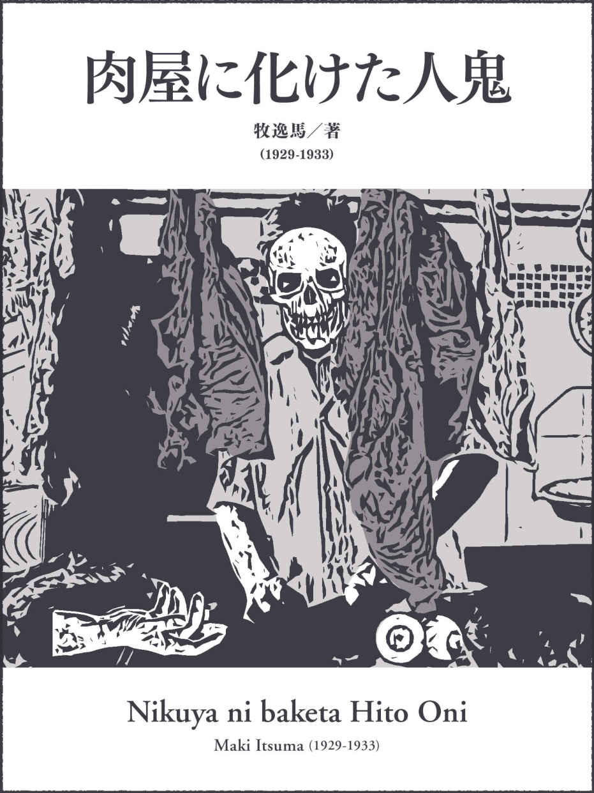
牧逸馬（まき・いつま）
１９００年１月17
日─１９３５年６月29
日
明治33
年、新潟県赤泊村で生まれる。小説家、翻訳家。林不忘、牧逸馬、谷譲次の３つのペンネームで活躍した。林不忘名義の時代小説『丹下左膳』が最も有名。今回は、犯罪実録小説、家庭小説、翻訳家としての名義、牧逸馬の実録小説『世界怪奇実話』の一篇をご紹介する。
「こら、なぜお前はそんな所に寝ているんだ」
フリッツ・ハールマンがこう声をかけると、古着を叩きつけたように腰かけに長くなって眠っていた子供が、むっくり起きあがった。ドイツ・サクソニイ州ハノーヴア市の停車場待合室は、電力の節約で巨大な土窖
のように暗い。ハールマンは透かすようにして子供の顔を見た。一九一八年十二月二十三日の真夜中だった。霙
をまじえた氷雨
が煤煙
を溶かして、停車場の窓ガラスを黒く撫でている。大戦後まもなくのことで、広い構内には火の気一つないのだが、それでも拾い集めた襤褸片
や紙屑等で身体を囲って、ベンチにぐっすり寝込んでいたフリーデル・ロッテは突然呶鳴
りつけられて喫驚
揆
ね起きながら、ははあ、刑事だな。警察へ引っ張られて保護とかいう五月蝿
い目に遭わないように、いつものようにここで謝罪
ってしまおうと、十二歳の少年だったが、浮浪児に特徴の卑屈な、そして、もう職業的になっている笑顔をつくって、その、自分を覗きこんでいる男を見あげた。それは、少年の微笑というよりも、娼婦がだれにも教えられずにいつのまにか体得する手法的な媚びに近かった。それほど、フリーデル・ロッテは、脳艶
といっていいくらいの美少年だったので、起こしたフリッツ・ハールマンの方が驚いた。
「どうしたんだ。お前は、家はないのか」
彼は少年の肩をつかんで荒々しく揺すぶりながら、顔はにやにや笑っていた。この本篇の主人公、ハノーヴァ市の肉屋フリッツ・ハールマン──Fritz Haarmann──は、まずなによりも先に稀代の男色漢だったのだ。
SaxoniyのHanover市から、ライプツィヒの方へすこし南下した所にWeetzerという小都会がある。Friedel Rotheは、このウィーツウェル町のピアノ調律師ラインハルト・ロッテの息子だった。その珍しい美貌がわざわいして、性来すくなからず不良性を帯びていたかもしれないが、この十二歳の少年の性格を破壊したのはやはりあの大戦だった。町の壮青年は全部出征する。フリーデルの父親もその一人だ。戦争という国家興亡の非常時に際して、日常の徳律は些少しか云為
されない。フリーデルはいつしか不良少年の群に投じて、ハノーヴァを中心に放浪生活を続けていた。ハノーヴァは、地図で見てもわかるとおり、ベルリン、ハンブルク、ブレーメン、ドュッセルドルフ、ケルン、フランクフルト、ライプツィヒ等、四通八達の鉄道線路が網の目のように集まっている中点である。欧州大戦の直後、此市
の停車場のプラットフォームと待合室は、日に何回となく各方面からの列車によって吐き出される避難民と浮浪者の大群で、名状すべからざる混雑を呈していた。ある者は炊事道具を持込んで停車場で生活をしている。ある者は遊牧の民に還元して、停車場を足溜りに家族を引きつれて食を漁る。そしてその大部分は、全国的な食糧不足、家庭の離散、社会的不安、それらの肉体的および精神的飢餓に追い立てられて町から町を浮動している十代の少年だったということは、想像に難くない。彼等は仔犬のようにたがいの体温で煖めあって、空貨車や無蓋車の中、プラットフォームの隅、待合室の腰かけなどで夜をあかすのだが、フリーデル・ロッテもその一人だった。
同市ツエラルストラッセ二七番──27
Cellarstrasseは、停車場と公設市場の中ほどにある赤煉瓦の燻んだ低い建物で、愛嬌者の肉屋フリッツ・ハールマンの店として付近に知られていた。ハールマンという男は写真で見ると、丸顔にちょび髯を生やして、快活な円い眼をした、中肉中背、というより、いくらか背が低くて小肥りの、呑気そうな人物である。付近の公設市場をぶらぶらして、仲買人の手を経ずに、肉類を協定価額以下にこっそり仕入れて来て売るのが、このハールマンの商売で、ツエラルストラッセの店には、ひととおり牛豚鳥類の肉がおいてあるのはもちろん、冷蔵庫、売台、計量器、肉切台、各種の包丁等、備品も立派に整い、裏街の小店ながら、普通の肉屋の体裁を備えていた。ハールマンは三十三歳。独身だった。店員もおかず、身のまわりから店のことまで、万事ひとりで遺っていた。もちろん、人をおく必要のないほど小さな商売だったが、それよりも、他に人をおけない理由があったのだった。
このツエラルストラッセ二七番の肉屋の店に立って「血だらけな前掛」をしてシャツの腕まくりをしたフリッツ・ハールマンは、毎日赫ら顔をにこにこさせて、肉を切ったり腸詰を作ったりしている。肉屋の「血だらけな前掛」は、人の注意を惹くべくあまりに普通事である。かたわらのブリキ缶に、大小の白い骨が一杯詰っているのも、肉屋であってみれば異とするに足らない。近所のおかみさん連が肉を買いに来る。町内の人が前を通る。時には立ち寄って、煙草と烟りと雑談を残して行く。平和かつ平凡なる裏町風景の一つである。ハールマンはそのだれとも愛想よく応対して、こうして「ツエラルストラッセの肉屋さん」は、界隈の人気者だった。店で肉を小売りしていたばかりでなく、行商にも出たという。御用聞きのようなことをしたり、品物を担いでお顧客をまわったりしたのだろう。
知れている限り、このフリーデル・ロッテ少年がハールマンの最初の犠牲者ということになっているが、犯人は刑死に先立って犯行の全部を自白したわけではないし、なにしろ、大戦直後のことで、人別、人の動きなど平時には想像だもできないほど混乱をきわめた時代だから、少年の失踪、捜索願などは各地の警察にいたずらに山積して、そのうち幾割かが正式に受理されて法の発動を見たにすぎない状態なので、もちろん確実なことは判明していない。が、とにかく、この第一のロッテ事件によって、肉屋のハールマンの正体の何分の一かがその筋に知れて、爾後
その意味での注意人物──変態性欲者──としてある程度の看視を受けるにいたった。というのは、いまもいうとおり、少年少女とのみいわず、行衛
不明の届や捜素願は、ハノーヴアの警察にも氾濫していたけれども、もっと根本的な、一般的秩序の樹
て直しに忙殺されていて、それらの比較的小さな事件にはほとんど一顧も払わない、というより、正確には、払う暇のない有様だったのが、どういうものか、このフリーデル・ロッテの捜索願だけは取りあげになって、しかも不思議にも、まるで針を指示するように、捜査の手はただちに伸びてツエラルストラッセの肉商フリッツ・ハールマン方を襲っている。これでハールマンという男に、ちょっとハノーヴア市民の視線が集まって、近所で大評判にもなったのだが、しかしそれは、皮肉にも、この人鬼の本然の姿を曝露
したものではなかった。単に鶏姦
常習者として、むしろ異常者にたいする多分の憐憫
と滑稽の眼をもってみられたにすぎなかった。
こうである。ウィーツェル町のロッテの家では、母のゲルトルート・ロッテ夫人が、家出した息子の身の上を案じて狂気のようになっていると、少年が失踪した二日目に、すでに平和が回復していたので良人
のピアノ調律師ラインハルト・ロッテが軍務を解かれて帰って来た。そこで夫婦は相談して、近接各市の警察ヘフリーデルの捜素願を出したのだったが、あの、フリッツ・ハールマンがハノーヴアの停車場待合室でフリーデル少年に近づいていたところ、どういう風の吹きまわしか、その捜素願の一つに動かされて、すでに同市警察は腰をあげつつあったのだ。
ベンチに眠っている所を叩き起こされたフリーデル・ロッテは、ハールマンを警察の旦那とばかり思い込んで、専心哀訴嘆願し始めた。事実また、このハールマンは、もちろん刑事ではなかったが、その下働きのような格で、警察の仕事を手伝ってもいた。いわゆる民間探偵
──囮鳩
──というやつで、ちょっと妙な話だが、これはあとで説明する。が、日本でいえば、ちょうど江戸時代の岡っ引きに相当する役柄だから、いいことにして、署の者だくらいにいったに相違いない。相手は、いくら不良でも十二の子供である。許されないと知って、顫
えあがっている美少年を急き立てて、肚
に一物あるハールマンは変態的な情炎を燃やしながら停車場を出た。その、二人つれだって停車場を出る所を、同じ不良で放浪仲間のユダヤ人の少年エリヒ・ホルトハウゼンが見ていたのだが、ハールマンは気がつかない。
そのままツエラルストラッセの店の二階にフリーデルを連れ帰って、その夜は美食と煖
い寝床を与え休養させた後、翌朝少年に暴行を加えようとすると──以下は一九二四年七月三十日以後の公判廷における犯人ハールマンの得々たる陳述である──すでに年長の悪友によってそういうことを知っていたらしいフリーデル少年は、恐怖困迷等の色なく、かえって薄化粧までして大いにハールマンの意を迎え、そのつど彼の欲望を満足せしめたとある。こうしてハールマンは、十一月二十三日から四日間、この美少年と奇怪な生活を持ったのだが、その間、近所の者は、だれもハールマン家に少年の泊り客があること等は気がつかなかった。自白によると、冬のことで、高温に保った寝室に全裸にして監禁し、連日連夜挑んだといっている。が、二十七日にいたって、その寝室にも、少年の姿は見られなくなった。
そして、あくる日八日の朝、ハールマンは例によって、「血だらけの前掛」をして、狭い店でせっせと「何か」の肉を切っていた。肉屋に「血だらけの前掛」はつきものである。傍らのブリキカンに大小の骨片が投げ込まれてあるのも、肉屋の店では見慣れた景色だ。近所のかみさん達が買出しに来る。ハールマンの背後の壁に、釘にささって血の垂れている大きな肉片は、「今朝早く屠殺した犢
」である。やわらかいこと請合だという。おまけに破格に安価
い。仲買の手を通さないからだと説明しながら、ハールマンはその肉を切って売る。古くなると腸詰にするのだ。そうするとまた素晴らしく美味く食べられるぞ──そんなことをいって、愛想よく客に応対していると、店の前を町内の人々が通る。
「お早う！」
「お早う！」
大声の朝の挨拶、快活な冗談が投げ交わされる。時には、若い衆など店へはいって来て、喫煙と雑談で油を売って行く。平和で平凡な裏町スナップの一つだ。こうしてツエラルストラッセの肉屋さんは、「威勢のいい兄哥
」、「面白い小父さん」として、依然として界隈の人気者だ。
地震で、大洋の海底が陥没したとする。するとそこから、いままでわれわれの知らなかった、一見嘔吐
を催すような、醜怪きわまりない形態を備えた巨生物が這い出すかもしれない。ちょうどそれと同じように、大戦は、いちじ完全に社会生活の秩序と常識を倒壊して、その余震最中に、ここに、普通時には現われること許されない、まさに嘔吐を催すような、人道的に醜怪きわまりない一匹の人鬼を追い出したのだ。この、社会規約の弛緩した割れ目から頭を出した怪物──それは、ハノーヴァ市の、一人の陽気な「巷
の肉屋」の形を採って、血だらけの前掛をしてにこにこ顔で鼻唄を歌っていた。
肉屋に化けた人鬼Fritz Haarmannの潜んでいたハノーヴァ市は、大戦の余災をもっとも多くこうむった都会の一つだった。喧嘩して取っ組みあっているときは、疲労も傷害も痛苦もあまり感じないが、いざ喧嘩が済んで昂奮が収まってみると、疲労と痛苦がいちじに襲いかかってくるように、あの大戦に参加した各国は、平和克復
と同時に、いまさらのように国内の疲幣困憊を意識して、公安の樹立にむかって即時第二の開戦を余儀なくされたといっていい。そのもっとも惨状を呈したのが、戦敗国のドイツだったことはもちろんである。物質の欠乏は全国を刷
いて、洪水のような避難民の大群は煌虫
が襲来したように視野に入るすべての物を食いつくし、食糧の切符制度など、この急場に際しては焼石に水だ。都鄙
を通じて、現実に飢餓に追っていた。この時にあたって、フリッツ・ハールマンの「商品」が、なんらの疑問を受ける暇もなく、それどころか、市民の歓迎と感謝の下に、吸われるように捌
けていったに不思議はない。
警察は無力だった。戦争によって人員と能率に大打撃を受けている。しかも、その覚束ない警察力で、戦前の穏良な、固定的な市民群にたいしてと同じように、この過渡時代の旋渦を
抑えようというのだから、初めからできない相談にきまっている。じつに当時のハノーヴァ市の公序を保っていくためには、その三倍の警察力を必要としたといわれている。かかる致命的に不可能な状態だから、当局はいい加減に、そして形式的に、警察事務を管掌
していたにすぎない。暗黒、恐怖の無政府状態が、完全にハノーヴァ市を包み去っていた。もっとも、この人事的な理由以外に、この都会に特有な風土的理由が、いっそう当時の警察をして手も足も出なくなっていたというのは、元来ハノーヴアは、ヨーロッパにおけるもっとも古い町の一つである。単に古い歴史を持つばかりでなく、いまだに古い外貌を持っていて、ちょっと街を歩いてみても、旅行者の驚異にまで、いわゆる近代味の浸蝕がはなはだ少ないのを発見する。筆者は、外遊の砌
、此市
に少閑を倫
んで数日遊覧の機を得たが、市街の一部は、何世紀前そのままの姿を残していて、人気
の荒い、物凄い細民
街を形作っている。始終濡れている不気味な暗い露地、影の深い小広場、曲りくねった細い横丁、そこでは、住民が一度結束して警察に背中を向けたが最後、兇悪な犯罪者の一個旅団が、ごく僅少の発見の可能性の下に、長期にわたって、完全に生棲できるというのだ。いまでさえこの点で有名な都会だから、あの、あらゆる窮乏、不潔、犯罪が公然と横行した、大戦後の一九一八─二〇年ごろの状態は想像にあまりある。警察は有名無実、完全に封じ込まれた形だった。
Cellarstrasseは、この恐怖区域をはしっている小さな往来である。ハールマンの肉屋のあったのは二七番で、店頭より土窖
の感じの、暗い、湿った建物だ。前にいったように、市場こぼれの肉を売りながら、いっぽう警察の鼻という、犯罪の巣窟に設置された特報機関、早くいえばスパイだ。英米で俗に謂
うStool‐
pigeon,本朝では手先、あれを稼いでいたというが、これは、当時のドイツでは珍しいことではなく、ハノーヴアにも、この種のその筋と密かに気脈をつうずる市民が無数に散らばっていて、フリッツ・ハールマンはその一人にすぎない。上記のような市の情況に直面して、窮余の対応策として当局が案出した一種の補助機関で、これによって極左団体と浮遊人口の犯罪計画を末前に嗅ぎ出そうという、その百鬼昼行時代の一つの必要から発生した制度だったが、この、密告者として警察に接近しているはずのフリッツ・ハールマンが、その眼下で、その言語に絶した行動を職業的に継続したのは、まさに皮肉以上である。
もっともハールマンは、初めから利用する心算
で、カモフラージュとしてスパイの役をもらったに相違ない。だからこそ、あれはどの犯罪がああ長く知れずに過ぎたのだ。それというのが、警察とハールマンのような常備間牒との間には暗黙の了解が成立していて、どうせスパイを稼ぐような奴だから、碌
なことはしないにきまっているが、そこはお上御用の役に免じて微罪はお眼こぼしということになっていた。つまり大の虫を殺すために小の虫に眼を瞑
るのだ。あまり表面に出ない限り、大概のことは不問に付してくれる。どだい、警察としては、必要に迫られて遣っていることで、そうでなくても、小事件を顧みる時間も人手も無いのだから、その澎湃
たる犯罪の大波の前に、内輪の者に等しいスパイ行動など、なんら注意されなかったのである。こういうなにからなにまで快適な四囲の条件に乗って、その狂暴な欲望が、フリッツ・ハールマンを自在に推進させたのだ。武骨な、そして元気な、人あたりのよい「町の男」で、そういえば、変質者によくある、きいきい引っ掻くような、高調子の、女性的な声をしていた。
表看板の肉類は、付近の公設市場から、拾うようにして仕入れてくる。も一つの肉は、これも付近の停車場で釣って来て、その食料欠乏の日に、ハールマンだけはストックに困らなかった。流行るわけだ。相変わらずにこにこして、誰彼となく軽い冗談口を叩きながら、「血だらけな前掛」をして肉を切っている。自慢の腸詰を作っている。この腸詰がまた評判物で、じつによく売れた。
さて、ロッテ夫婦のフリーデル少年捜査願を受理したハノーヴア警察である。放浪少年の集まる場所といえば停車場にきまっているから、私
かにこの方面に眼をつけているとやがて一つの聞込みが揚った。失踪ちゅうのフリーデルの悪友で、エリヒ・ホルトハウゼンというユダヤ人の少年が、「フリーデルの奴は刑事に引っ張られて停車場を出て行ったきり帰らない」と言っているのを、ちらと耳にしたのだ。停車場に張込む刑事もしくはスパイといえば、警察にはわかっている。どんな人相の刑事だったかとホルトハウゼンについて訊問すると、その供述はスパイのフリッツ・ハールマンに、そしてハールマンにだけ該当してくる。まさかあのお人好しの肉屋が──とは思ったが、それでも、なにが手がかりになるかわからないから、そこで刑事の一隊が、友人の家にでも遊びに行くような気易さで、しかし深夜不意に、ツエラルストラッセの店を訪れた。
警察の連中は、よく来て、みな勝手を知っている家だし、それに、相手が独身者の呑気屋のことだからと、べつに案内も乞わずに、のこのこ二階へ押し上って、突然ハールマンの寝室を開けると、一同は呆気にとられてしまった。床に倒した椅子の背と脚に全裸の少年の手足を縛
して、ハールマンが醜態を演じている最中だった。が、少年はすでに目的のフリーデル・ロッテではなかった。Leon Glunzという十四歳のやはり美少年で、同じく浮浪児だったが、これは停車場で発見したのではなく、ツエラルストラッセの街上で会って、甘言をもって伴
れこんだのだった。このレオン・グルンツは、こうして警察の手に落ちて、鶏姦
されたばかりで「犢
の肉」にも腸詰にもならずに、危いところで肋かっている。フリッツ・ハールマンは、現行犯だから仕方がない。この事件で猥褻
罪として隣町ウンストルフの刑務所に九カ月食いこんだ。警察をはじめ、ツエラルストラッセの人々が呆れ返ったことはいうまでもない。が、ここにもっとも奇怪なのは、いくら混乱時代の犯罪都市ハノーヴアだからといって、これで警察が、あたかも満足したかのように、当初の対象であるはずのフリーデル・ロッテ少年の捜査をきっぱり打ちきったことである。無証拠として断念すべきどころか、容疑者ハールマンが意外な少年愛好者と判明した以上、勇躍してフリーデルのその後に関して、いっそう追求しそうなものなのが、どういう意味か、フリーデル事件はこれでひとまず立ち消えになっている。この点はいまだに説明されていないのみか、その時、ハールマン方の家宅捜査はおろか、醜行現場の寝室さえ碌すっぼ検分しなかった証拠には、寝台傍に小卓が据えてある。その中段に、無雑作に新聞に包んだ円い物がおいてあったのだが、それこそは、一行が探し求めていたフリーデルの生首だった。あとで裁判の時、ハールマン自身そう証言した。
ドイツ腸詰の一種にフランクフルトというのがある。一名ウイニーとも謂
って、アメリカあたりでは俗にhot dogと称する。なぜこの腸詰を熱い犬
などと変な名で呼ぶかというと、いったい腸詰なる物には、なんの肉がはいっているかしれたものではないとなっていて、このフランクフルトは犬の肉でできているというのだ。もちろん、滑稽めかした悪口にすぎないが、野犬かなにか撲殺した、その肉を詰め込んだのがこのフランクフルトと腸詰
で、だから犬
だという。この妄説から出て、つぎような笑い話がある。
子供が、長いこと肉屋の前を往ったり来たりして、しきりに店の奥を覗くので、肉屋の主人が五月蝿
がって、とうとう怒り出した。
「おい、小僧、なんだってそんな所に立って見ているんだ」
すると子供はすまして、
「僕の犬がいなくなっちやった」
「なに？ お前の犬がいなくなったって、なにも俺の知ったことじゃないじゃないか」
「そうかも知れないけど、でも、変だなあ。僕がここで口笛を吹くと、あの、むこうにぶら下がっている腸詰がひらひら動くよ」
というのだが、これは犬の肉だから笑い話ですむ。
一九一九年の九月にウンストルフを出獄したフリッツ・ハールマンは、その足でハノーヴァヘ帰ったが、ツエラルストラッセの古巣へははいらなかった。すぐ近所の横町で、103 Neuestrasseに新居を卜
してやはり肉屋を始めた。ハールマンが真個
の活動に入って、四十八人の少年を鶏姦し虐殺したその大部分の犯行は、じつにこのノイエストラッセ一○三番地の家と、のちに移転したロッテ・ライルの古いユダヤ人人区においてなされたものである。
この四十八人という数は、公判でハールマン自身が豪語したところで、裁判記録には、左の二十八名だけが犠牲者表として登載されている。
一、Friedel Rothe 十二歳。ウィイツェル在。
二、Fritz Franke 十七歳。ベルリン
三、Wilhelm Schulze 十一歳。ベルリン
四、Roland Huch 十五歳。オスナブルック市。
五、Hans Sennenfeld 二十歳。ベルリン。
六、Ernst Ehrenberg 十三歳。ミュンステル。
七、Heinrich Struss 年齢前住所不詳。
八、PauI Bronischewski 十五歳。Bochum在。
九、Richard Graf 十七歳。ハイーヴァ市。
十、Wilhelm Erdner 十七歳。
十一、Hermann Wolf 十六歳。ミンデン町。
十二、Heinz Brinlmann 十三歳。ハノーヴァ。
十三、Adolf Hennies 十七歳。ポツグム。
十四、Hans Keimes 十七歳。ドレスデン。
十五、Ernst Spiecker 十七歳。ベルリン。
十六、Heinrich Koch 十八歳。前任地不詳。
十七、Willi Senger 二十歳。ヘルツベルヒ在。
十八、Hermann Speichert 十五歳。ミンデン近郊。
十九、Alfred Hogrefe 十七歳。ベルリン。
二十、Robert Witzel 十七歳。ベルリン。
二十一、Hermann Bock 二十三歳。ミュンステル。
二十二、Wilhelm Apel 十六歳。ヒルデシャイム。
二十三、Heinz Martin 十六歳。ハノーヴァ。
二十四、Fritz Wittig 十七歳。ハノーヴァ。
二十五、Frledrlch Abelmg 十歳。ラレンドルフ町。
二十六、Friedrich Koch 十六歳。前任地不詳。
二十七、Frich de Vries 十七歳。ハノーヴァ。
二十八、Adolf Hannappel 年齢前住所不詳。
ハールマンは前科者で、一九一八年に出獄して、ツエラルストラッセ二七番地に落ち着いたのだったが、それから最後に捕縛されるまで、本人は四十八人の少年を、誘拐、監禁、暴行、殺害、人肉売り、腸詰製造の順序で「処分」したと誇称しているが、人間一人の生死等どっちへ転んでも大した問題にならなかったごたごたの最中のことだから、もちろん正確な数はわかっていない。が、フリーデル・ロッテ事件から起算して、だいたい二週間に一人の割で殺したことになっている。
これらの少年はすべて戦争の生んだ浮浪者であてもなく家出して来てハノーヴァの停車場内外に乞食同然の生活をしていたものだ。闇黒
に呑まれ去ったように消息が断ち切れ、発見の可能性もなく、警察へ届け出ても真剣に動いてはくれず、両親達はどうすることもできない。つねに何十人の、時として百にあまるこの家出少年の群が、ことに夜になるとハノーヴァの街上から停車場に集まって来て、明日の食を獲
るめあてもなく、待合室の腰掛けに重なりあって眠っていた。そこへ、刑事を装ったフリッツ・ハールマンが毎夜のように現われて、少年を起こしてまわる。
こうして彼は、その変態性を唆る美少年を物色したのだ。疲れきって欲も得も無くなっている子供達の上に、警察を仄めかすハールマンの脅しは利いたに相違ない。眠りこけている少年達の顔を覗きまわって、これと思うのを発見すると、彼は威猛高
に起こしにかかる。
「こら、なぜお前はそんな所に寝ているんだ」
この声は、それによって呼び起こされた少年たちにとって、まさに運命的なものだった。事実、死刑の宣告にも等しかった。眼を覚ましてみると、私服らしい赫ら顔の男が、叱るように睨みつけて突っ立っている。が、その少年がそうとう愛くるしい容貌の所有主
であれば、やがてハールマンはにやにやしだして、いくぶんつぎの言語を和げるのだ。
「お前家はないのか」
そして、少年の型
と出様によって、ある者は本署へ連行すると称し、あるいは、飯を食わしてゆっくり休ませてやると誘って、難なく停車場から伴
れ出してツエラルストラッセや、後には、ノイエストラッセの肉店の二階へ銜
え上げる。駅の固い冷たい腰かけよりは警察のほうがいいと考える子供もあろうし、とにかく食事にありつけるというので、みないそいそとハールマンにしたがって停車場を出ている。そして、出たきり帰らない。そのうちだれも、生きてふたたび見られた者はかった。
が、依然としてフリッツ・ハールマンは、愛嬌者の「街の肉屋」だ。朝早くから快活に仕事について、せっせと肉を切っている。「血だらけな前掛」をして、鼻唄まじりに、肉を叩いている。大きな骨から、肉を切り離している。骨は、足許のブリキ缶へ山のように投げ込まれる。肉は肉で、血の垂れたまま、背後の壁の釘に刺してさげておく。新鮮な犢
の肉だ。すこし古くなると、腸詰に拵
える。フリッツ・ハールマンの店は、いつ来て見ても、ストックが豊富だった。冷蔵庫には、小さく切った肉片が、各段にきちんと並べてあった。血と肉と骨は、肉屋の店の日常の光景である。人はすこしも奇異の感を抱かないし、店主ハールマンは日増しに血色よく、陽気に、呑気に、小肥りに、界隈の道化者になっていった。若い衆が入り交り立ち代り店へはいって来て、馬鹿話をしていく。前を通る町内のだれかれに、ハールマンは肉の上から大声の挨拶だ。
日がたった。
この「肉屋に化けた人鬼」フリッツ・ハールマンの逮捕となった直接の証拠は、一枚の外套だった。それは、犠牲者中の最年少者、二五番に出ているフリードリッヒ・アベリンク──十歳。ラレンドルフ町──の外套だった。が、これより先、ちょうどその頃、ハノーヴァ市クロステルストラッセ二二一番に、Herbert Gransという図書館員が住んでいた。息子をHans Gransといって、二十四になる。
この図書館員ヘルベルト・グランスの息子ハンス・グランスは札付の不良で、フリッツ・ハールマンよりもほんの一色薄いだけの悪党だった。二十四歳という若僧のくせに詐欺、窃盗、女衒
で前科何犯という強
か者、これがハールマンと親分乾分
の関係を結んで、二人がかりで美少年狩りを始めた。美少年狩りといっても、ハールマンのは、子供を捕まえてどうこうするというだけではなく、揚句の果て殺して肉を売って、自分も犯して、古くなると腸詰にしようというのだから話が人間離れしている。そこでこの共犯者ハンス・グランスだが、彼も、前回に述べた当時の事由からハールマンと同じに警察の鼻、スパイを勤めていた。こうして二人とも警察に関係があったからこそ、結果からみて、皮肉にいえば、その筋の庇護の下に存分活躍できたわけである。前掲の犠牲者表について見ると、最年少が二十五番目に出ているラレンドルフ生まれのフリードリッヒ・アベリングで十歳──この児の外套から足がついて直接間接にハールマンの逮捕と服罪を見るにいたったのだったが──最年少者は二十一番目のヘルマン・ボックで二十三歳、ミュンステル出生、となっているのでも推定されるとおりに、ハールマンは、十代の少年のみならず、二十歳を越した、美少年としてはいささか薹
の立った者をも嗜
んだのであるから、ハールマンとハンス・グランスとの交渉も、初めは、ハールマンが、やはり鶏姦と人肉売りの目的から、グランスをノイエストラッセの自宅の肉屋へ伴れ込んだのだったが、グランス自身同じ方面の変態性欲者だったので、大いに意欲投合して、その夜からグランスは女房気取りにずるずるべったりノイエストラッセの「人肉屋」に腰を据えることになったのだった、グランスは小指の先が埋まるほどの靨
を持つ神経質に蒼白い顔をした、牝鹿のような眼の美少年──でもない、美青年だった。ちょっと文学青年みたいなところもあって、一度も掲載されないのにしじゅうえたいのしれない詩などを書いてはハノーヴアの新聞に投書していたというから、われわれは、よくあるこうした型
の青年を眼前に想描するに難くない。この色白で痩せぎすのグランスが「妻」で、肥ってにこにこしている赫ら顔のハールマンが「亭主」格だった。二人で例の文字通りの人肉屋を経営することになったのだが、実際この男同士の夫婦は、それでもよくしたもので、まったく世の常の夫婦に似た組合わせであった。「結婚」後まもなく、文学女房のグランスが権力を振るい出して、「家庭」におけるハールマンはぐうの音も出ないほど尻に敷かれている。ドイツ語で、ねえ、あなた、とかなんとかやったのだろうが、ハールマンはすっかり眼尻をさげて、一も二もなく、うむ、そうか、よしよしといった調子──とにかく、かなり愛し愛された仲らしく、珍奇な同棲生活が続いている。
この「妻」のグランスに促されて、ハールマンはいっそう、その戦慄すべき犯行を重ねていったのだという。似た者夫婦、いわゆる「鬼夫婦」の二人である。店に「柔かい犢
の肉」が尠
くなると、グランスにやいやい急きつかれるので、ハールマンは夜停車場へ出かけて行って少年を捜して来る。「結婚」以後のハールマンは、じつにたえずグランスによって踊らされたのだ。ここで妙な表現が記録に残っている。一九二四年七月三十一日の公判廷で、ハールマンが惚気
まじりに陳述したところによると、
「グランスは毎夜寝台で私の脇腹にぐりぐり肘を当てながら甘えた声でなにか言いました。そうされると不思議に、私は、何事でも彼の欲するとおりにしなければならないような気がして来るのです。そしてすべて彼のいうように致しました」
というのだが、この「彼」の所が「彼女」でありさえすれば、普通の夫婦生活の一情景として別に異にするに足らないけれど、それが男同士なのだから、なんともグロテスクな限りである。おまけに、ただの変態的な告白かと思って聞いていると、さすがハールマンだけに抜目
がなくて後で持って来て、
「ですから、それ以後の事件はみんなグランスが主犯で、私はたんに彼の命令どおりに動いたにすぎません」
たくみに責任を転嫁しようとしている。
同じノイエストラッセに、界隈の不良の集会所でカフェ・クループケという家があった。二人は此家
の定連
で、よく夜晩くまで麦酒
を飲んでいるハールマンとグランスの姿が、通りからも見られた。そこを根拠に付近の踊り場をまわって歩く。そして毎晩明方近く、二人は肉店の前まで帰って来て、グランスは家へはいる。ハールマンはそれから停車場の方へ稼ぎに行く。それがほとんど毎晩だった。ハールマンの肉屋で殺した少年の肉を継続的に売っていたことは確然たる事実で、捕縛後、店に在った肉を科学的に調査したところが、大半人肉だった。腸詰は全部人肉でできていた。が、当局はあくまでこの事件を単なる常習的殺人に局限して、人肉売りや人肉腸詰に関しては、公判でも一言もふれなかったばかりか、当時は記事差止めになってだれも知らなかった。ながらく商売をしていて固定的な購売者もそうとう多く、その人々は朝夕ハールマン方の肉を食卓に上
せてきたのだから、その恐慌と騒擾
を救うために、これはその筋として賢明な遣り方だったといわなければならない。
ロッテ少年から最後のハナベルにいたるまで犯行の手口は大同小異だった。いつも停車場に居眠っている浮浪少年の中から犠牲者を物色して、ハールマンが刑事顔をして伴れ込むか、あとからはまれにグランスも出かけて行ってなれなれしそうに話しかけて銜
えこんで来た。二人で鶏姦を加えながら何日か飼ったのち、稼業用の大型肉切包丁で「処理」して、骨は溜めておいてたいがいライン河へほうり込んだ。衣類や所持品は安値で古着服に売り飛ばして、エキストラ収入として、その金でカフェ・クループケで麦酒
を飲むことにしていた。
鶏姦、殺害の順序方法等の細部に入ることは、たんに不必要なばかりでなく、いたずらに伏字の連続になってしまうが、実際に殺す場合には、全事件をつうじてフリッツ・ハールマンが単独の下手人であったことはいうまでもない。もっとも本人はヘルマン・ウオルフ殺しだけは否定しているが、その理由がふるっている。このミンデン市から来た十六歳の少年は、彼の興味を唆るべくいささか醜く、かつあまりに不潔だったというのだ。ハンス・カイムスもグランスが殺したのだと主張したが、グランスは当時入獄していたのだから、このハールマンの抗弁は通らなかった。二十三になるヘルマン・ホックを殺害した後のごときは、ハールマンはとうぶんボックの衣服を着ていたくらいだ。それは後で、ボックの父親とハールマンの近所の者がその着物を見て証言したところだ。ボックの場合だけでなく、殺された少年の着衣や所持品は、各人についてたいがい一つ二つ宛、ノイエストラッセの家で二人に使用されていたのが発見された。登載されている最後のアドルフ・ハナペルのごときはグランスがそのズボンを欲しがったために、誘拐された晩にすぐ殺されて、翌朝からこま切れになって店頭に並んだ。
ここにちょっと変なのは、ハンス・カイムス殺しとフリードリッヒ・アベリンク殺しと二つの場合である。後者において、いままでじつに要心深かったハールマンが、じつに不注意な動きをしているのだ。この事件は最後から四つ目なので、長期にわたる殺人生活に慣れっこになって免感的に神経が鈍麻
してきていたに相違ない。一九二四年五月二十五日、その十歳になる少年が、菓子を与えるから尾
いて来いとノイエストラッセの殺人窟へ伴れ去られてから、月が変わって、六月十七日のことだ。フリードリッヒ・アベリンクは、当時兄と姉と一緒にラレンドルフ町からハノーヴァの伯父の家に来て、ウイルヘルム街三一二番に住んでいたのだが、その十七日の夕方、フリードリッヒの姉でアリスという十四になる少女が、家の前に往来で近所の子供達と遊んでいると、突然見知らぬ男が声をかけて、自分はお前の伯父の友人で、いまお前の所へ綺麗なカードを持って来て遣ったが、お前が家にいないので伯母さんに預けて来たというので、アリスが家に駆け戻って見ると、そんな人が訪ねて来た事実もなく、もちろんカードなどは残されていなかった。
のちに証拠固めの時、この少女アリスとその時一緒に遊んでいた子供達を呼び出してハールマンを見せると、彼らは一斉にそれがあの時の見知らぬ男に相違ないと証言した。ハールマンはなんのためにそんなことをしたのかよくわからない。排他的に少年を好んで、女性には用のないはずのハールマンだから、べつに話しかけてどうしようという気はなかったのだろう。ただアリスが遊んでいるところへ通りかかったので、ちょっと戯
ったのだろうが、彼は、アリスがフリードリッヒの姉であることや、彼等の家庭の事情は、ある程度まで、殺した少年から聞いて知っていたに相違ない。どういう心算
か、たぶん売りに行く途中ででもあったのか、その時彼は、フリードリッヒ少年の雨外套を抱えていた。それは、フリードリッヒが行衛
不明になる時着ていたもので、アリスにはもちろん見覚えがあった。が、綺麗なカードというのに気に取られて、その時はこの外套を見たことをいうのを忘れていたが、後日このアリスの証言は、ハールマンを絞首台へ追いあげる重大な効果を持った。
カイムス殺しの場合は、いっそう不可解なものである。捜査願いによって、ハノーヴァの警察は、全市にわたってこの十七歳の少年の姿を求めつつあった。すると、捜査が開始された数日後である。なんとなくその筋の手が身辺に追るのを感じたものか、ハールマンは奇怪な行動を採って、例の非公式警官、民間スパイとして、彼の方からドレスデンヘ出かけて行ってハンス・カイムスの生家を訪問している。そして、悲嘆に暮れている両親から少年の写真を乞い受けて、かならず三日間に発見して連れて来ると約束した。より奇怪なのは、その足ですぐハールマンはハノーヴァ市へ引き返して警察へ出頭し、「愛妻」であるはずのハンス・グランスをカイムス少年殺しの犯人として訴え出ていることだ。ところがグランスは、ちょうどその事件の前後ほかのことで入獄していて、彼が犯人でありえるわけはないし、第一、そのグランスが、カイムスが失踪した以前から引続き入獄中であることは、ハールマンは先刻承知のはずである。なんでこんな妄動をしたのか判断に苦しむのだが、それよりも、この事件の特異性は、それが屍体が発見された唯一の場所であることだ。カイムスだけは、ハールマンの肉屋で切り売りされたのではなかった。二カ月後に、ハノーヴァ市をつらぬいてラインに合流している運河の浚渫
工事で偶然発見された。羊のように四肢を一つに縛されていた。肉屋の遣りそうな縛りかただ。死因は頸部の扼
殺だった。
いかに大戦直後の混乱時代のハノーヴァ市でも、かかる大々的人間殺戮が前後十六カ月間もなんら警察の耳目に触れることなく過ぎたというのはちょっと信じがたく思われるが、これには、当時の無政府的な状態のほかに、すくなくとも二つの特種の事情が作用して、この稀代の人鬼フリッツ・ハールマンの犯罪をして発覚を遅らしめたということができる。その一は、彼の職業が肉屋で、自宅で肉を切ったり骨を棄てたりすることはあたり前だから、血だらけのテーブルも床もなんら注意を惹かなかったことと、もう一つは、あの猥褻罪で、九カ月間ウンストルフ刑務所に投獄されたにもかかわらず、ハールマンは出獄後もいまだ警察のスパイを解かれないで、たえず部内と密接な関係を保ち、刑事や巡査とは友達交際の間柄だったからだ。が、以前にも前科があるのだし、こう頻繁に少年が失踪しだすにつれて、いつ、なんということなしに漂って来る噂や、種々ハールマンに関する挙動不審な点や、第一、彼が刑務所に収容されている間は、少年の行衛不明が、皆無ではなかったが、比較的少なかった事等からみて、警察は漸次ハールマンに着眼するにいたり、実際、かなり組織的にハールマン方の家宅捜索を行なったことも一再ではなかったが、しかし、なにしろ相手が同僚のようなハールマンではあり、快活なお人好しでとおっている「町の肉屋」なので、結局それは形式的な散漫な訪問に終って、のみならず根本的に、べつにそれほど重要な目的を意識しての家宅捜索ではなかった。が、その間もハールマンはたびたびひやひやする眼に遭っている。
一つは、あのフリーデル・ロッテ殺しのすぐあとに踏み込まれた時だが、それから、ウンストルフから出獄してまもなく、二人の売春婦が、彼の不在中にノイエストラッセの店へ肉を買いに来て、売店
の下に突っ込んである大きな肉塊に第六感的に怪異な驚怖を感じて、その一片を警察へ届けたことがあった。それは、細毛の生えている皮膚が一部分残っていて、人間の臀部の片割れを連想させる形態を備えていた。警察はこれを調べてもみずに豚だと簡単に片付けて、ハールマンとしては、危い所を助かったわけだ。Roland Huchの父親も、数週間けんめいに息子フックの跡を探し求めた揚句、ハールマンの戸口でその消息が絶えていることを突きとめ、それから先の徹底的究明を警察へ持込んだのだが、この時もたんにお座なりに、刑事の一隊がハールマン方を訪れて、赫ら顔の肉屋と騒噪しく談笑して引きあげたにすぎない。ウイルヘルム・エルドネル事件の時は、父エルドネルの許へ、ある日Honnerookなる探偵と名乗る人物が現われて、息子のウイルヘルムは、浮浪罪の廉
で自分が検挙して保護を加えてあると話して立去った。しかし、ホネブルックという名前は全市の警察員になかった。それがフリッツ・ハールマンであったことは、彼が逮捕されてから、エルドネルと対質して判明したことで、当時そのため刑事の人相着衣等をエルドネルから巨細
に聴取しても、そしてそれによって自然かつ容易にフリッツ・ハールマンを想起できたはずなのに、警察はその時はなんら歩を進めようとしなかった。犯罪が最後に近づくにしたがって、ハールマンはだんだん露顕の懼
れなど忘れたように大胆になって、殺した少年のポケットから出た小刀
その他の小間物を平気で市場で見せびらかしたり、友人に配
けて与
ったりしている。
大犯罪には、よく散在的な小さな緒が
集まって自動的に発見の動機を作るように、このハールマン事件もそうだった。
少年がひんぴんと闇黒
に呑まれて、さすが腰の重い警察もなんとか全線的に活動を起こさなければならない事情に迫られている時、そして、なんとなくノイエストラッセの方面から異臭が漂って来るようで、ハールマンの肉屋なる存在が真剣な意味で気になり出して来た矢先、一九二四年五月二十八日だったが、四、五人の子供達が、ラインの岸に近い浅瀬の泥の中で、少年の物とおぼしき完態を備えている頭蓋骨を発見した。そして引き続き不思議にも、翌二十九日、やはり同じ場所から今度は三個同時にいずれも少年らしい頭蓋骨が出て来た。それらはすべて即時警察へ送られたのだが、すると、またまた警察は、奇妙なほど無間心な態度を採って、すでに、例の肥っちょの肉屋スパイ、フリッツ・ハールマンに関する十分疑わしい報告を受取って前提的な智識があるにもかかわらず、いぜんとして泰然たるもので、それらの頭蓋骨は、医学生の悪戯か、あるいは上流のほかの町から流れて来た物であろうとあっさり無視してしまった。そしてそのまま二カ月たった。五月末から、六、七とこの二カ月の間に、ハールマンの殺人リストには、最後の三人が加えられていた。Friedrich Koch, Frich deo vris, Adolf Hannapper.
冷水を浴びたように、ぐっと警察を緊張させるためには、この連続的な三つの失踪が必要だったと見える。警察は急に狼狽して、今度は、嫌疑の眼をいちじにハールマンに向けた。が、実証を挙げるべく活躍に移る段になると、なにしろ人員不足の場合ではあるし、それに、たいがい顔を識られているので、彼を取りまいて内密の裡に洗っていくということができない。そこで、急遽
ベルリンから二名の腕っこきの刑事が迎えられてハールマンの看視につく。August Frommという絶世の美少年を探し出して、これを囮に使った。この時すでにハールマンはノイエストラッセ一○三番の自宅の付近に煙のように立ち迷うその筋の注視を感知して、いち早く市の他端に位する古いユダヤ人区ロッテ・ライルに移転していた。そこで日夜このアーギュスト・フロム少年をユダヤ人区のハールマン家──それもやはり肉屋の店だったが──の近くに放って根気よく待ちかまえていると、はたして六月二十二日の夜、ハールマンは街上でフロムを認めて自店の二階に同伴した。確証を掴む必要があるので、しばらく時間を与えたのち、やにわに一団の刑事が乗り込むと、最初のロッテ少年捜索の時に発見されたレオン・グルンツと同じように、フロムは全裸にされて、床に転がした大型椅子に手足を縛され、ハールマンがまさに鶏姦に着手しようとしているところだった。有無をいわさず、猥褻現行犯として拘引するいっぼう、ただちに、こんどは念入りに同家の家宅捜索を行なって、衣服、手廻品等かたっ端から押収したばかりか、最近まで住んでいたノイエストラッセの家も、いまだそのままに締めきってあったので、そこからもほとんどすべての物品が証拠として貨物自動車で警察に運ばれた。この時は大事を採って、たんに眼につくあらゆる物を押さえたにすぎなかったが、事実、その一個一個が後日法廷で役に立って、ハールマンの口を閉じ、断罪を早からしめたのだった。
こうして、ハールマンの罪がもはや動かすべからざるものとなっている最中、もう一つのっぴきなちぬ証拠が意外な所から現われて、頑固に白
を切っているハールマンの顔色を奪ったのだ。以前のノイエストラッセのハールマンの家主の息子が、失踪中の一少年の外套を有っていることが発見されたのである。被害者の少年の両親は、少年が家を出た時に着ていた物に相違ないことを証言するし、家主の息子は、確かにハールマンからもらったのだと承認した。ここにおいて、初めは処女のようであった警察も、いまは脱兎のごとく猛然とハールマンを攻めにかかる。酷烈な十字火訊問、第、三級、
一種の拷問である。が、それでもハールマンはマルマンは執拗に否認し続けていると、果然七月二十四日、暑いころなのでラインの河岸は涼み客で賑わう。夕風の中を軽艇
が納涼
の人を満載して上下する。その錨の鎖に引っ掛って河床から浮き揚がったのが、等身大の馬鈴薯の袋だった。大小の骨片がぎっしり詰まっている。発見の現場は、以前頭蓋骨の出た浅瀬をすこしくだった箇所だった。その、口まで骨の充満している袋を、ハノーヴア大学法医学教室のシャックウイッツ博士──Doctor Scha Cckwitz──に送って鑑定を乞うと、精査の結果、すくなくとも二十三人の人体を構成する骨片であることが判明した。
ハールマンが折れて来て、そろそろ口を割りそうな形勢を見せてきたのは、この七月二十四日からだった。
Fritz Haarmannは、一八七九年十一月二日、ハノーヴァ市に生まれた。父は街燈点火人で、市庁の門番のような仕事をも兼ねていた。父、Gustav Haarmann' 母、vernaフリッツはこの母のヴェルナが四十三の時の出産で、男三人女三人の六人兄姉の末子だった。父のグスタフも酔漢で評判のよくない男だったが、長兄だけはどうやら真面目に進んで、ベルリンで税吏を勤めていた。もう一人の兄は、幼女に暴行を働いて長く刑務所に入っていた。フリッツが少年期に達したころ、三人の姉は三人とも売春婦だった。
こういう家族が彼の生涯に致命的な暗い影響を投げたことはいうまでもない。幼女のころから、人眼に付いて、後世恐るべしの不良児だった。趣味や行状は、どうしても男の子とは思えなかった。まるで女だった。十五の年に小学校を出て、すぐニュー・ブライザッハの下士官養成所へ入り、のち軍隊に編入された。が、一年もたたないうちに、激しい癲癇
の発作に襲われるようになった。これが有個
の癲癇であったかどうか、そこらははなはだ怪しいのだが、本人は日射病が嵩じたものだといい張って、陸軍病院へ送られ、まもなく除隊になった。ハールマンの男色癖は、性来そういう異常性のあったのが、この兵営生活中に眼覚まされ、昂進したものといわれている。
ハノーヴァ市に帰って来ると、父親は、街燈点火人の仕事も、市役所の小使の口も止して、小規模な葉巻製造業を始めていったので、フリッツもここに働くことになったが、落ち着くと同時に軍隊で覚えた変態癖が再発して、空地等において付近の子供にたいする彼の行動が注目を惹くにいたり、異常者として郊外ライン河畔の市立精神病院に送られた。が、六カ月にして病院を脱走し、スイスに潜入した。そして、しばらく何事もなく働いている。初めは短艇
の舟大工、のちには薬局に勤めて、小金を蓄めた。二年後にハノーヴァヘ帰って来た。この時彼は、姓名不詳の女と恋に落ちて結婚したのだが、妊娠すると同時に棄てて、こっそり国境防備の連隊に入隊してアルサスヘ行き、士官の従卒として、同地に三年暮らした。神経衰弱と称して除隊になったが、隊内の評判はなかなかよく、辞す時には善行章をもらって、いささかの恩給まで付いたくらいだ。そうして四度目にハノーヴァヘ帰ったのだが、元来父親とは反りが合わなくて、いつも一緒に生活すると喧嘩ばかりしていた。もっとも呑んだくれのおやじが観てさえ、フリッツの素行が面白くないからで、この時もフリッツはさかんに子供を襲うて、一家は迷惑の仕続けだった。とうとう我慢しきれなくなって、父親が警察へ訴え出たので、フリッツはふたたび精神鑑定を受けることとなり、脳の専門医と神経系統の医師と、二人がフリッツのみならずハールマン一家を詳密に監査した結果、フリッツの両親とも普通以下の道徳的責任観念しかないが、それかといって、ただちにフリッツ・ハールマンは精神病者であることは、断言できない。換言すれば、精神病者ではないということになって、一九〇四年の夏、釈放された。それからちょうど二十年後の同じころに、彼は死刑執行人の手にかかるべき運命だったのだ。
多殺者は、その職業的殺人を開始する前に、多くの場合、窃盗犯であり、詐欺であり、幾多の前科を潜ってくるものだと言われているが、ハールマンもそうだった。じつに、その後の数年間、彼は監獄へ出たりはいったりしている。罪条は区々で、強窃盗、少年姦、掏摸
、詐欺など、その間も父親は、なんとかして息子フリッツに正業を与えようと、一度は自分と同じ葉巻製造を、つぎには、魚の天婦羅
の屋台店のようなものを出させて試
たが、いずれも失敗に終った。そのうちますます低下して、裏街に隠れ住んで、常習の犯罪者と伍
すようになったので、父親のグラスフ、母ヴェルナも呆れて、以後すっぱり交渉を断ちきるようになった。そのころフリッツは、ライン河岸の倉庫に荷作人として働いていたが、そうとうの額の在庫品を窃取したことが露見して、五年の懲役に処せられた。これが一九一四年のことで、つまり、ハールマンは、あの大戦の期間を呑気に刑務所で送ったのだ。一九一八年に出獄してみると、世の中は一変して、サクソニー州は戦後の飢饉状態だ。古い社会制度はドイツ帝国と共に倒れ、新しいものは興
ろうとしていまだ固まらずにいる。この場合に際して、警察の怖るるにたらないことを、ハールマンは一眼
で看取した。ツエラルストラッセに肉屋を開いて、公設市場から誤魔化してきた肉と、あの、停車場から誤魔化してきた「肉」とを売り出して、物資窮乏のおりから、小さな店ながら素晴らしく儲けを上げたのは、それからまもなくだった。
公判は一九二四七月三十日からハノーヴァ市サクソニイ州裁判所で開かれた。このころにはすでに、前記の種々動かすべからざる確証がぞくぞく上って、ハールマンは比較的あっさり事実を認めた。出獄したばかりのハンス・グランスも、共犯または防犯として逮捕されていた。
法廷におけるハールマンは、がいして冷然と、興味のない顔で周囲の人々を見まわしていた。なにかグランスと自分と陳述が違って不利な立場におかれると、彼はときどきその尊大な自己満足の態度を忘れたように、甲高い声で喚いたり、罵ったりした。グランスは態
とらしく無関心にかまえて、ハールマンの方を見ようともしなかった。が、不思議なことに、人気はどっちかというとハールマンにあった。ゲッテイングン精神病院のシュワルツ博士と、ハノーヴァ大学のシャックウイッツ博士とが、あらためてハールマンとグランスの精神鑑定をしたが、答えはネガティヴで、二人とも立派に普通人の責任能力を有していることが判明した。弁護士のゆいいつの論拠もこれで崩れて、グランスには終身刑、ハールマンには死刑の宣告がくだった。刑死前にハールマンは長文の告白を認
めたが、それはすこしも悔悟
とか求道とかいう、こういう場合にありきたりの宗教的センチメンタリズムを帯びた物ではなかった。かえって躍進的に、たんに殺すためにのみ殺すことの快楽を高調したものだった。
フリッツ・ハールマンも人並みに、死ぬのを嫌がったが、彼は、死んで終えば、もう少年を犯すことも、その肉を食べたり売ったりすることもできないので、それで、死を呪ったのだろう。
二十八名の少年を殺したことに記載されているのが、彼は大不服たった。自分でも判然したことはわからないが、四十八人までは記憶しているといって、彼は、その犠牲者の数が実際よりすくないのにひどくひけ目を感じている様子だ。絞首台に立ってもそのことをぶつくさ呟いていた。じつに完全に人を喰った男であった。
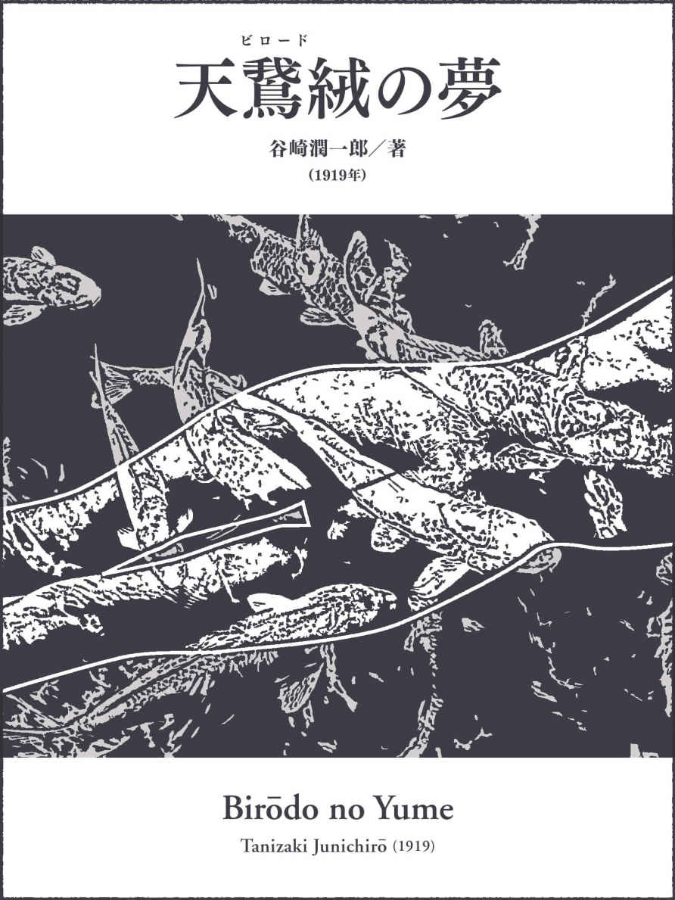
谷崎潤一郎（たにざき・じゅんいちろう）
１８８６年７月24
日─１９６５年７月30
日
明治19
年、東京市日本橋で生まれる。小説家。東大在学中に創作を始め、同人雑誌『新思潮』を創刊。千変万化な文章のスタイルと芸術性の高さは、いまなお日本文学を代表する小説家の一人といえる。今回は、三人の奴隷の告白文からなる幻想的な一篇をご紹介する。本来は十人の奴隷の告白文となる構想であったので、未完成品とも言われている。
その家は、古の 南宋の都である浙江省の杭州城のほとりの、有名な西湖の水が葛嶺 の山の裾を洗うあたりの汀に臨んで建てられて居た。杭州と云えば南支那でも風光の明媚な土地として、蘇州と共に双び称せられて居る地方で、「上在 天堂 。 下在 蘇杭 」と云うような諺までが、昔から云い伝えられて居るのである。そうして又葛嶺と云う山は、葛洪 仙人が其処から天へ昇ったと云う由緒ある貴い土地で、山と呼ぶよりは丘に近いほど低い峰ではあるけれども、全体が嵯峨たる岩石から成り立って居る為めに、いかにも仙人が棲んで居たらしい神々しい姿を示して居る。山の頂辺 には仙人を祭った小さな祠が、その可愛らしい蔓の端を鍵のように反り返らせて居るのであるが、麓に立って見上ると、それが今しも翩々 たる翼をひろげて大空高く舞い昇ろうとする小鳥のように眺められる。で、今も云う通りその家はその山の麓にあって、鬱蒼とした庭の樹木の間からちらちらと隠見して居る楼閣の屋根の頂きが、ちょうど山上の祠から垂直の真下に屹立して居るのであった。だからもし、その楼閣に坐して居る人があって廊下の欄 に倚りながら眼の前に聳える蜂を仰ぎ視るとしたら、彼 の祠はその人の頭上へ落ちかかって来るが如くに感ぜられることであろう。───と、そうは云うものの、それはただ想像に過ぎないので、私はその家の中へまで這入って行った訳ではない。私はその家が葛嶺を背景にしつつ玲瓏 たる姿を幻のように水に映して居る景色を、湖上から心ゆく限り展望したのであって、それはもう今から二三年も前の或る年の秋の末、北から南へ支那を漫遊して図らずも杭州に足を停めて居た一週間ばかりの間の、或る日の出来事であった。其処の領事館の官補を勤めて居るＳ法学上が、幸い私の旧友であった縁故から、私は湖畔の名所を彼に案内して貰うべく、とある夕ぐれに一艘の畫舫 を雇ってそのあたりを漕いで廻った。その時われわれの船が、白公隄の断橋の下をくぐり、林和靖 の遺蹟と伝えられて居る放鶴亭が見えるほとりへやって来た折に、あたかもその対岸に建てられて居るその家の宏壮な構えが、ふいと私の注意を惹いたのである。
しかし私が、単にその構えを見ただけであったら、それに就いて別段深い好奇心を起さずに済んでしまったかも知れない。その家はなる程立派な建物ではあったけれども、美しい白壁の土塀を長く繞
らした、有り来りの支那風の様式であり、外から眺めたところでは、この辺にしばしば見受けられる富豪の別荘と変りはないらしく思われたのである。しかるに私の畫舫がちょうどその家の石崖の下へ漕いで行くと、庭の泉水の落口か何かであろう、白壁の塀と塀との間に一個の石の水門があって、その上に枝葉の繁った楊柳が青暗くこんもりとした影をうつして居た。そうして、水門の扉は明け放され、其処から一艘の小舟がその舳
だけを外へ現わして居た。舳には───最初私が遠くからそれを望んだ時にはたしかに誰も居なかったのに、だんだん近づいて行くに従って、其処に一人の女が腰かけて居たのであった。
女は我々の様子に気が付くと、何かわれわれが不意討でも喰わせたかのように明かに不快な面持で少し狼狽したようであったが、それでも逃げ込んではしまわずに、描いたような鮮かな眉をほん
の微に曇らせたまま寧ろ反抗的にそうするのではないかと思われるほど悠然としてその美貌を水門のほとりに曝して居る。───年の頃は十七八、多くも二十にはならないであろう。淡い紫地に竹梅と秋海棠
の織紋のある湖州産の支那縮緬の服装がほっそりとした総身を非常に派手に夢のように美しく包んで居るせいか、それでなくても水際立ってしろじろと匂って居る彼女の豊頬は、ふっくらと木蓮の花の蕾のように夕闇に浮き上って見えたのである。其処は柳の影の為めに黄昏が一層濃くなって居たのであるが、私は彼女の手頸にかがやく黄金の腕環やその耳の縁に垂れさがる翡翠の瓔珞
をまでも明かに認めることが出来た。
だが、その女が殊に私の感興を唆 ったのは、その表情や体つきに何処となく普通の支那の女とは異った特徴がある為めであった。一体この近辺は上海あたりのいろいろな雑種の女を見かけることも珍らしくはないのであるから、この女も恐らくはそう云う種類の一人であろうとは想像されたようなものの、しかし漆のような色つやをした髪の毛と云い、きゃしゃ ではあるが全体に小柄な身の丈と云い、黒くぱっちりした瞳の光と云い、合の子にしても西洋の血よりは東洋の血の方が遥かに勝って居るらしく思われる点もないではなかった。ただ、その二つの眼の中をつくづくと見て居ると、其処に寸時も油断のならない怜悧と闊達な精神の宿って居ることが窺われるのであって、彼女がじっと身動きもせずに水を視詰めて居る間にも、その眼の色はちょうど夕方の湖面のように、或いは暗く或いは明るく、刻々に忙しい陰翳の変化を示して居る。
「君、今のあの女を君は何だと思ったかね」と、船が水門の前を一丁ほど通り過ぎた時分に、未だにもとの処に人形の如く動かずに居る女の方を顧みながら、Ｓが云った。
「さあ、あの家は上海あたりの金持ちの別荘で、あれはその妾か何かじゃないのか知らん？ いずれ只者ではないだろうと思われるが、............」
「左様.........まあそんなところだけれど、あの別荘にはいろいろと込み入った訳があってね、君に話したらきっと面白い小説の種になるだろうと思って居たんだが、今日偶然にもあの女を此処で見ることが出来たと云うのも或いは何かの因縁であるかも知れない。あの女は勿論として、彼女と共にあの別荘で世にも不思議な歓楽に耽って居た温秀卿と云う男の生活、まるでお伽噺にあるような宮殿だの庭園だのを包んで居るあの白壁の寒の秘密──それを詳しく話したら、恐らくアラビアン・ナイトのような奇妙な物語が出来上るに違いない。僕はふとした機会から彼等の秘密を捜ることが出来たのだが、今夜家へ帰ってからゆっくりと君に話をして聞かせよう。───君のお頼みがないまでも僕は是非とも聞いて貰いたいと思って居たところなのだから」
Ｓはそう云って、自分でもそれを非常に楽しみにして居るらしく、今しも孤山の翠嵐の影に隠れて行くその白壁を遠く視詰めた。
その晩、Ｓは約束の如く彼 の官邸の一室に於て、温秀卿の物語を私に聞かせてくれたのである。
けれども私は、その物語を彼の口から話された通りに此処へ書き現わそうとは思って居ない、それよりも寧ろその物語の中に出て来る数人の奴隷の言葉を借りて彼等の陳述を有りのままに順々に記載して見ようと思う。彼等の物語は、一つ一つの独立した興味のある挿話を形作って居るのだが、同時に又その一つ一つは互いに数珠の輪の如く繋がり合って、其処に一貫した話の糸を持って居るのである。それ等を始めから終りまで辛抱して読んでくれさえすれば、温秀卿と彼の寵妾との生活はやがて読者の眼の前にその姿を発 き出されて来るであろう。
ただ豫め 茲 に断って置きたいのは、私の友人のＳがどう云う訳で奴隷たちの陳述を聞くに至ったかと云う由来である。その奴隷たちの半数は男、半数は女で、中には自分の年齢や国籍などを詳かにしない者さえも交って居たが、多くは上海あたりで生れた日本人、支那人、印度人、猶太 人、葡萄牙 人、もしくはそれ等の雑種であったらしく、十二三歳から三十四五歳ぐらいまでの、容貌なり肉体なりに何等か人を蠱惑 する特徴のある男女であった。彼等は大概幼い時に拐かされて人買いの手へ売り渡され、それから更に奴隷として温秀卿とその寵妾との「歓楽の道具」となるべくその家へ売り込まれたのだそうである。しかるに彼等の一人であるところのＫと云う日本人が、温夫婦の餘りに非人道的な惨酷な所行に堪えかねて、つい近頃のこと杭州の宝石山にある日本の領事館へ訴えて出た。温は上海の萬国租界の住民であったからその事件は程なく同地の領事団の共同裁判に附せられたのである。Ｓはその頃上海の領事館の方に勤めて居た関係から、その裁判にたずさわることになって、証人として法廷へ召喚した凡ての奴隷たちの陳述を、詳細に聞き取ることが出来た。
即ち私はその時のＳの記録に拠って、彼等の申し立てを殆 どその言葉通りに此処に発表し得るのである。彼等の物語の中に出て来るさまざまの地名───また其処にあるらしいいろいろの建物、お寺だかホテルだか宮殿だか分らない奇怪な常房の名前などは、全体何処の国にあるのだか見当の付かないようなものが多いけれども、温は上海に立派な本邸を構えて居ながら、始終杭州の別荘の方に起臥して居たのだそうであるから、この物語の舞台も主として西湖を中心とする地方に限られて居ることを心得て置いて頂きたい。そうしてホテルだかお寺だか宮殿だか分らないような建物だの又さまざまの地名だのは、その実彼の別荘の中の一部であって、それにいろいろな洒落た名称を附けたものらしく想像される。発端は先ずこのくらいにして置いて、これからいよいよ問題の告白に這入ることとしよう。
（備考 この陳述をなせる者は十六歳の少年にして上海生れの雑種なりとす。彼はその国籍ならびに父母の姓名を詳かにせず。その容貌は瓜実顔にして皮膚は濁れる水の如く冷やかに且滑かなる光沢を有す。身長餘り高からざるも両脚長くして極めて優雅なる総身を純白の絹天鵞絨の服もて包みたるが故に、その浅黄色の顔の肌と漆黒の頭髪とは猫の毛に似たる服装と相映発して一層の生彩を放ちつつある。蓋 し一種の姣童 或いはPageとして召し使われたる者なるべし）
私はいくつの歳から彼
の琅玕
洞の中に住むようになったのでしょうか。自分にはまるきり覚えがありません。私は多分彼
の部屋の中で生れたのではないのだろうかと、そう思って居たくらいでした。そうして、あの部屋の外にこのような廣
い世界があることは、つい近頃まで夢にも考えたことはなかったのです。私はほんとうに長い間、たった独りであの部屋の中に朝夕を暮らしました。ですから自分が温と云う人の奴隷であるとは知りもしなかったし、今まで一度もそんな人に会ったことはありませんでした。私が知って居るのは日に三度ずついろいろの旨い吸物を私に持って来てくれた番人の男と、それから彼
の美しい女王と、たった二人ぎりでした。私は温と云う人の奴隷でなく、あの女王の奴隷だったのに違いありません。
その部屋の四方には壁があって、その壁はただ真白に平らでした。壁には一つの出口が付いて居ましたけれど、それには重い板の扉が閉めてあり、その外には高い所に小さな息抜きの煙突の穴があっただけで、窓は一つもありませんでした。外の明りは何処から這入って来るのかと云うと、それはただ天井から射して来るばかりだったのです。私は明け暮れその天井をじっと視詰めては、いろいろなことを考えました。どうして彼
の天井はあんなに青く明るいのか知ら？ あれは大きな翡翠か琅玕
で出来て居るのではないのだろうか？ しかし、なる程色は琅玕のように透き徹って真青だけれど、琅玕にしては光があまりはっきりと明る過ぎる。───その青くほのぼのとした明るさは四方の壁へ夢のように柔かに光線を反射して、部屋の中を甘く朦朧と照らして居ました。私は其処で随分細かい仕事をしたこともあったのですから、その室内は実際かなり明るかったに違いありません。一体何からあの天井は出来て居るのか、どう云う訳で彼処
があんなに明るいのか───それは長い間私の疑問になって居ました。そうして或る時その疑問を例の番人に尋ねたところが、番人はいかにも憐れむような眼つきをして私の顔を見ながら、その天井は底が硝子で出来て居る池だと云うこと、私の住んで居る部屋はその池の下にあるのだと云うことを教えてくれました。彼処があんなに真青に透き徹って居るのは、硝子の上に清らかな水が湛えられて居るからで、水の上には太陽と云う非常に明るい物があって、その光線が水を潜ってこの部屋の中までとどくのだと云うことを、私はその時始めて番人から聞かされたのです。そう云われて見ると、なる程それは水と硝子とで出来るのだと云うことが、私にもだんだんと頷かれるようになって来ました。なぜかと云うのに、硝子の上の青い青い水の中には、おりおり名も知れぬ紅い美しい魚の影が金色の鱗の腹を光らせて游
いで居るのを見ることがあったからです。魚は、どうかすると天井の硝子に近くひらひらと身を翻えして降りて来たり、又或る時は濃い藍色の水の間にちらりと尾鰭を閃めかして、掻き消すように上の方へ昇って行ってしまったり、今に見えるかと思いながら楽しみにして待って居ると、日が暮れるまでとうとう一匹も姿を現わさなかったりするのでした。
しかし私は、其処には多勢の魚が居ることを知って居ました。それは女王が阿片を吸いにやって来ると、彼女が仰向けに寝て居る寝台の真上の所へ、きっと無数に寄り集まって来たからです。どう云う仕掛けがしてあるのか分りませんが、魚は女王の来る時をちゃんと心得て居るかのように、彼女が寝台へ身を横えると間もなく其処の天井へ後から後からと幾匹もつながりながら、無数に集まって来るのでした。硝子は一点の曇りもないまでに研かれて居ましたから、それ等の魚がぎらぎらした鱗の体を累々と重なり合わせあたかも偉大な珊瑚樹のように真紅な塊になりながら、一様に鰭を振って口をぱくぱくと動かして居る容子は手に取るように明かに下から仰ぎ視ることが出来たのです、寝台の上に打臥して居る女王の顔───その彫刻したような気高い鼻を上に向けてすやすやと瞑目して居る彼女の顔と、天井の平面との間には、僅かに五六尺の空間を剰 すばかりでしたが、魚の群は其処にガラスの境界がある為めに彼等の游 いで居る水の世界と女王の眠って居る空気の世界とを隔てて居るのを知る由もなく、真珠のような白い眼球をぱっちりと開いて、一片の餌食を争うが如く互いに他の魚を跳ね除けながら、女王の寝顔を目がけつつ硝子の板へぐいぐいと頭を壓し着けては身を藻掻いて居るのでした。寝台の枕もとに畏 まって、その光景に見惚れて居る私の眼にさえ、それはさながら幻のように怪しく美しく映ったのですから、まして阿片の夢の国に魂を浸らせて居る女王の眼には、どれほど不思議な色と影との幻を呼び起させたことでしょう。どうかすると、私は深く閉じられて居る女王の眼瞼が、蛾と云う虫の鬚のような長い睫毛をわなわなと顫 わせながら、天井の魚群の尾鰭と同じように細かく微な運動を続けて居るのを認めました。しかしそう云う時にでも、女王の顔には物凄いくらい安らかな表情が湛えられて居るばかりで、一定の時が来るまではそのなまめかしいしなやかな体を死んだように静かに横えて居るのでした。彼女は大概、温泉に浴みをした後の慵 い手足を伸ばす為めにこの水底の部屋を訪れるので、それはいつも午後の一時か二時頃にきまって居ました。そうして、来る時は供をも連れずたった一人で、隠し男の家へでも忍び込むようにこっそりと、衣擦れの音さえも立てずに近寄って来て、部屋の扉をほとほとと軽く叩くのでした。すると私は彼女を室内へ請じ入れて、さも大儀そうにぐったりとなったその肉体を寝台の上へ援 け運んでから、阿片の支度を整えるのです。私の役目はそれだけではなく、やがて女王がうつらうつらと魔睡を貪り始めた時分に、彼女の寝顔の近くの所へ七宝の香炉を据えて、絶えずその煙が消えないように香を焚いて居なければなりませんでした。女王の体を包んで居る霧のようなうすものの乳色の衣には、木犀 に似た匂いのする仄かな香料が焚きしめてあるのに、なおその上にも薫りの高い安息香 の淡い煙は、天井にじっとかたまって蠢 いて居る魚群の方へとゆらめきながら舞い上り、しまいには却って一種の胸悪さを感じるまでに部屋の中へ朦々と立ち龍めるようになります。それが睡って居る女王の鼻には、ちょうど程よい刺戟を与えるものと見えて少しでも焚き方を控え目にしたりすると、覚めてから後で彼女は必ず私に叱言を云うのでした。けれどもそんな時より外に私は殆 ど彼女から言葉をかけられる機会はありませんでした。彼女は常に黙って部屋へ這入って来て黙って阿片の夢を貪って、夢が破れれば黙って何処かへ帰って行きました。彼女は口を利くのさえも億劫なほど疲れ切って、妙に気むずかしく塞ぎ込んで居る人のように思われました。
私の身にとっては、女王が阿片を吸いに来てくれる時が、一日のうちで一番楽しい時だったのです。何年と云う長い間、朝から晩まであの部屋の中に閉じ込められて居た私は、外にこれと云う仕事もなく明け暮れ無聊 に苦しんで居たのですから、毎日のように午後には必ず訪れる女王の姿を、どんなにか待ち焦れて居たでしょう。女王の睡りは大抵二時間か三時間ぐらいはつづくのでしたが、その間こそ私が一番生きがいのある期間だったのです。私はよく、紫色にほのぼのと立ち昇る香の煙を嗅ぎながら、或る時はすやすやと無心に眠る女王の顔を眺め、或る時は天井のガラスの向うに集まって来る魚群の影を打ち仰いだりして、自分もまた阿片の夢に酔って居るような夢見心地を味わうのでした。天井の水の青い明るさは、日によって非常にその光りの強いことと弱いこととがありましたが、それは光りの根源である大空の太陽と云う星が晴れたり曇ったりする為めだと云うことを、後になって私は知りました。晴れた日には紺碧の水を透して来る光線が部屋の四方の白壁へぎらぎらとした波紋を描き、蠟 のように滑かな女王の顔の、堅く閉じられた眼瞼の上にまでも金色の蛇のようなうねり を作って其処にも魚群の鱗が光って居るのかと疑われました。
すると、或る日のことでした。いつものように女王は静かに其処に眠り、七宝の香炉からは紫の煙がゆらゆらと立ち、天井には例の如く無数の魚が寄り集まって居ましたが、どう云う訳かその魚の影は暫くすると俄かに散り散りに掻き乱されて真紅な塊は夕焼け雲が崩れるように動き始め、やがて一匹も見えなくなってしまいました。それと同時に、今迄の紅い可愛らしい小魚とは似ても似つかない一匹の大きな魚が、忽然として其処へ游 いで降りて来たのを認めたのです。その魚は体中が豚の脂身のように白く、一枚の鱗をも生やして居ない肌の木目は瑠璃のように細やかにつやつやしく、そうしてその全身のしなしなとした敏捷さは魚よりも寧ろ蛇に近い生物のように思われました。が、よく見ると、それは魚でもなく蛇でもなく、私よりももっと年が若いらしい一人の少女だったのです。彼女はやはり彼の魚どもと同じように水中を游 ぎ廻りながら、女王の睡る寝台の上をなつかしそうに往ったり来たりするかと思うと、果ては水底へ身を俯伏しにひれ伏して、女王の口へ接吻を贈ろうとしてでも居るかの如くその唇をガラスの板へ吸い着けるのです。
それからと云うものは、彼女は殆 ど毎日のように魚の集団を掻き乱しては其処へ姿を現わしました。彼女がそうしている間はほん の一分か二分ぐらいで、程なく青い水の深みへその長い髪をゆらめかせながら朦朧と消え失せてしまいます。すると忽ち小さな可愛らしい以前の魚は、何処からともなく一匹二匹と集まって来ては鰭と鰭とをふうわり と重なり合わせ、真紅に堆 く盛り上るのですが、又一二分も立つ間には少女の姿が再び次第に現われて来て一層烈しく魚類の群を掻き乱します。少女と魚とはこうして入り変り立ち変り、女王の寝顔を窺いに来るのでした。
少女は何の目的があってその天井へ現われるのか、それは勿論私には分りませんでした。しかし私は、彼女の姿が毎日其処で見られるようになってから、前にも増して女王の魔睡の時が来るのを待ち焦がれずには居られなくなってしまったのです。その待ち遠しい不思議な心地は───ああ、何といったらいいでしょうか？───私が生れてからかつて味わったことのない、たとえようもなく楽しい涙の出るほど遣る瀬ないものでした。そうして待ちに待ったその時が来れば、私はもう以前のように女王の寝顔を眺めもせず、魚群の影を追い廻しもしないで、ただ一心に硝子の向うへ浮かび出る少女の姿を見守るのでした。
私は始めて「恋」と云うものを知りました。その時までは美しい女王の寝姿を、一種の威厳に打たれた気持ちで見惚れて居たに過ぎなかった私の胸には、少女と云う者が現われてから、女王に対する崇拝の情とは全く異った甘いなつかしい愛着が湧き上るようになったのです。それは阿片の夢を喜ぶ煙のように果敢ない頼りない心地ではなく、どうかして彼女の体へ抱き着いてやりたいと願うほどにも熱烈な力強い慾望でした。彼女が其処に生きて動いて居るさまは決して夢でも幻でもなく、たしかに事実に違いないと云うことはいやが上にも私の愛情を燃え立たせずには居ませんでした。ですが私はどうしたら彼女を自分の両腕で抱きしめることが出来たでしょう。彼女の姿が幻でないと云う事実を、どうしたらたしかめることが出来たでしょう。あの天井のガラスの向うの、水の世界に居る彼女の手を取って、私の住んで居る空気の世界へ運れ出すことが出来ない限りは私の為めに彼女はやはり幻影と選ぶ所はなかったのです。私はただ青い青い琅玕 の宝玉の中に鏤 められて居る彼女の肉体を眺めるだけで満足しなければなりませんでした。私は彼女の言葉をも聞き得ず、あんなに房々と波打って居るその髪の毛の一とすじにさえも触れる訳には行かなかったのです。水の中にぱっちりと睜 かれてガラスの下を見おろして居るあの利口そうな彼女の眼つき、───水よりも更になめらかな光りと潤おいとを含んだあの黒水晶のような大きな瞳は、何を考えて居るのだろう。あのぴったりとガラスの板へ扱い着いて居る蛇苺の花にも似た赤い唇からは、どんなに優しい声が出るのだろう。───私は空しく心の底でそんな想像に耽りながら、下界の人間が大空の星を慕うように彼女の容貌を打ち仰いでは、ただ力ない溜息を洩らすより外はなかったのです。
しかし、人間の心と心とが触れ合う時には、必ずしも言葉を以てしないでも、自から通ずる道があるものだと云うことを、私はだんだんと悟るようになりました。幸か不幸か私は日を経るに従って、少女の眼つきや、その唇の動かし方や、手だの足だの襟頸だのに現われる嬌態のうちに、彼女もまた私に対して同じ思いに憧れて居るのを認めることが出来たのです。ああ、その時の私の歓びと恐れとはどれほどでしたろう！ その歓びは説明するまでもないとして、私は何を恐れたのでしょうか？───それは二人のこの恋が、阿片の夢に浸って居る女王の心に感付かれはしないかと云うことでした。女王は安らけく睡って居るようには見えるけれども、その眼には必ずこの部屋の物の形が幻になって映って居るに違いない。そう思うとわれわれ二人は今にどのような刑罰を受ける事かと案じられました。私は勿論それを甘んじて身に引受ける覚悟でしたが、あの少女にまでそんな苦しみを負わすことは、考えて見ても堪え難いように感ぜられました。少女はしかしそんな心配があろうなどとは少しも心着いて居ない様子で、女王の寝顔を見定めなから、いつも大胆なしな を作ってにっこりと媚びるような薄笑いを私の方へ贈るのです。私もまたその時が来れば心配も何も打ち忘れて、両手を高くさしかざしつつ彼女の影を麾き ます。彼女が私へ愛情を示す動作は日増しに明かに無遠慮になり、或る時はもどかしさを訴えるが如く悲しみに満ちた眉根を寄せて鰻のように身をうねらせ、或る時はせめてもの心やりに頻りと口を動かしては聞えぬ言葉を面白そうに話しかけ、また私からその返辞を聞き取ろうとするかのように、長い項 を横さまに伏せて耳朶 をガラスの板へ寄せたりするのでした。
こう云うことが殆 ど一と月あまりもつづいた或る日のこと、私はいつものようにじっと静かに眠って居る女王の枕もとに侍りながら、もう程なく其処へ現われる少女の姿を待ち焦れつつ一心に天井の水を視詰めて居ました。その日は非常に空が晴れ渡って居たと見えて、今迄にかつて例のないほど太陽の光線が隈なく水中に照り渡り、部屋の中を一面に燃え立つように明るくさせて居たせいか、あの水の中をちらちらと游 ぎ廻る小さな魚の影までが、一つ一つ黒くくっきりと四方の壁や床板の上に落ちて居るのでした。その水の色も勿論いつもとは比較にならないくらいこってり とした紺碧の光を湛えて澄み切って居て、さながら真昼の青空が其処まで落ちて来たかのように美しく眺められたのです。すると忽ち私の眼は、例の魚群が算を乱して四方へ散り散りに逃げて行くのを認めました。ああ、魚は彼女と同じ水の世界に住んで居ればこそ、彼女を恋する私よりもなお敏感に、彼女が既に近づいたことを豫地したのではありませんか！ その魚どもの知らせに由って私の胸は俄かに激しい動悸を打ち、私の体中の血は火のように熱く燃え上ります。そうして居る間に彼女はもうそのしなやかな手足を水中に翻して、悠々と其処へ舞い下るように降りて来たのです。ささやかな魚の影までも残りなく映し出すほどの鮮やかな光線を命中から十分に浴びせられて居る彼女の体は、実際よりも遥に大きな真黒な影を、殆 ど部屋中が暗くなる程一杯に蔽い擴 げて、黒雲が地上へ葢 って来る様に私の頭上へ落ちて来ました。私は我知らず胸を轟かせて、辺りが不意にそんなにも暗くなった為めに女王の眠りが破られはせぬかと危みながら、恐るおそるその寝息を窺った後、寺院の天井に描かれた天人の壁画の様に游泳して居る少女の姿へ、恍惚とした瞳を注ぎました。
暫くの間、彼女は目元と口元とに常にも増して晴れやかな微笑を浮かべて、左右の腕を伸ばしながら私を手招きするらしい様子でしたが、ものの一分と立たないうちに見る見るその顔には苦渋の表情が現れて来て、手足をばたばたと藻掻き始めたかと思うと、燥 ぐ力を一度に失ってしまったかの如くその柔軟な肉体は綿のように圓 くなって軽々と水中に浮かび漂い、やがてまた風に揉まれる木の葉のようにくるくると二三遍ゆるやかな輪を描きつつ廻転するのでした。それと同時に彼女の鼻からも口からも夥しい血潮が際限もなくたらたらと流れ出して、翡翠を融かした水の色を鶏血石の斑点のように真紅に染めて行くのでした。そうしてそれが段々と火炎の渦が舞い狂うように大きく廣く燃え上って、彼女の姿を全く包んでしまいました。
私は覚えず竦然として傍の寝台の上を顧みましたが、女王は未だにその眼瞼を深く閉じたまま、何事が起ったかをも知らないように安らかな睡を貪って居るのでした。が、私がなおも注意してつくづくとその顔を凝視すると、眠って居る筈の女王の唇には、何とも云えない底気味の悪い薄笑いが夕闇に咲く花のようにほんのりと匂って居るではありませんか！
「あっ」
と思った拍子に、私は気が遠くなって其処へ打ち倒れてしまいました。
（備考 この陳述をなせる者は十二三歳の少女にして山東省の海辺に生れたる漁夫の子なりと云う。彼女は七八歳の頃人買いの手に売り渡されて北京の奴隷市に曝され、それより更に転輾 して遂に温家の別荘へ買い取られたる者なり。その容貌は圓 顔にして木目細やかに、瞳大きく唇厚くして紅く純乎たる支那種の女子なれども、四肢の発育極めて健全に見事なる均整を持ち、殆 ど欧洲種の女子と異ならず。且つその皮膚の色も白晳 にして驚くべき光沢を含みたり）
わたしは女王さまの侍女でございました。わたしの住んで居ました所は、麝香 園と云って、それはそれは廣いお庭の中にある、玉液池と云うお池の滸 でございました。そのお池はそんなに大きくはありませんでしたけれど、でもほんとうに可愛らしい美しいお池でした。なぜかと云うと、それは真四角なきちん とした形をして居て汀には杏仁 の汁のような白い色をした、大理石と云う石の切岸 があって、水は年中水晶よりも綺麗なくらいに澄み渡って居たのですもの。四角なお池の四方には蘭桂堂の御殿の廻廊があって、やはり四角にお池の周りを繞って居て、廻廊の沢山の柱には一つずつ鳥籠が下って居ました。そうしてその幾つもの鳥籠の中には、いずれにも白い鸚鵡 が飼ってあったのでございます。私の役目はその鸚鵡だのお池の中の緋鯉や金魚に餌をやることと、お池の水が濁らないように、大理石の切岸やお池の底を折々掃除することでした。それからまた、毎日午後の二時頃から二時間か三時間の間、緋鯉や金魚をなるだけ水の底深くへ追い込むように張り番をして居なければなりませんでした。私はいつもその時間が来ると、魚が上の方へ上って来られないように、お池の表面の水を棒で以て緩く掻き廻して居たのでございます。女王さまは何でそんな事を私にお云い附けになるのだか、私はそれをいつもいつも不思議に思って居りました。女王さまはまた、私にお池の掃除をおさせなさるのに、昼間は決してお云い附けになったことはなく、夜になってから、真暗な中で掃除をしろと仰っしゃいました。そのお池は小さいわりあいに随分深うございましたけれど、私は海辺に育ったので泳ぐのが上手でしたから下の方までくぐって行って、水垢の溜って居る池の底を、まるで鏡を研くように綺麗につるつるに拭き取るのでした。そのつるつるした底の所は、真暗なので何から出来て居るのやらよくは分りませんでしたが、手探りに探って見ると、やはり真四角な形をした、一枚の板のように平らな、すべっこい石で拵えてあるのではないかと思われました。でもまあ、女王さまは、何の為めにあの底の石をあんなに始終私にお拭かせなさるのか知ら？ あの石をそんなに綺麗に研くと云うのには、どんな訳があるのか知ら？ 事に依ったらあれは普通の石ではなくって、何か外の物から出来て居て、それをああして研かないと都合の悪い仕掛けがしてあるのじゃないのか知ら？ 私はどうかすると、そんな風にも考えることがございました。女王さまはその池の底へまだ一遍もお這入りになったこともないのに、掃除が行き届かない所があると、私よりもよくそれを御存知で、もっと丁寧に掃除をしろしろと仰っしゃるのです。そうして見ると、あれにはいよいよ何か仕掛けがしてあって、それが女王さまに分るようになって居るのだ。あれは普通の池の底とは違うのだ。そう思いながら、私は昼間お池の汀に彳 んで、じっと底の方を視詰めたりしましたけれども、水が深いので、ただ真青に油のようにつやつやと光って居るばかりで、とても底の方を見透すことは出来なかったのでございます。
「昼間は決してあの池の中へ這入ってはならないのだよ」
と、私は堅く女王さまから止められて居ましたが、止められれば止められるほど、猶更 底の仕掛けが見たくて溜らないようになりました。
私は女王さまが、昼間はいつも外の御殿へお出でになって、この池の滸へは入らっしゃらないことをよく知って居ましたから、そう云う時を窺っていつか一度は水の底へ這入って見ようと、そんなことばかり始終思い詰めて居るうちに、とうとう或る日堪らなくなって這入って行ったのでございます。ところがまあどうでございましょう！ 石ではないかと思って居た底の板は一枚の硝子で出来て居て、その硝子の下には地下室があって、女王さまが寝台の上にすやすやと眠って居らっしゃるのですもの。それでも眠って居らっしゃったので大丈夫だとは思いましたけれども、もし見附かったら大変なので、急いで浮き上ってしまいました。
しかし私はやっぱり女王さまに見附かって居たのでございます。晩になってから、女王さまは私の所へおいでになって、
「お前は先 、池の底へ這入っただろうね」
と、そう仰っしゃって、穴の明く程しみじみと私の顔をお眺めになりました。
「ああそうだ、やっぱりお前だったに違いない。お前は先、たしかにあの池の底へ降りて来たのだ。私は彼処で何も知らずに眠っては居たけれど、お前の姿は私の夢にありありと映って見えたのだから、お前が今更それを隠しても、私にはちゃんと分って居る」
「女王さま、どうぞお赦しなすって下さいまし。私はとうとうお言葉に背いてしまったのでございます」
私はもう逃れることは出来ないと思いましたから、覚悟をきめて詫りますと、女王は却ってお喜びになった御様子で、こんなことを仰っしゃるのでした。
「いいえ、お前はそんなに詫るには及びません。お前のお蔭で、私はいつも見るよりももっと美しい、不思議な夢を見ることが出来ました。どうかこれからは毎日のように、あの時刻にあの池の底へ降りて来てくれるがよい」
「では女王さまは、どんなお夢を御覧になったのでございましょう」
私がこう云ってお尋ね申すと、女王さまは次ぎのような夢の御話をなさいました。
「.........私はいつもあの時刻に、あの琅玕 洞と云う池の底の部屋へ行って、阿片を吸いながら好い心持ちにうとうととなっていろいろな夢を見るのです。そうすると、お前が上から底の方へ追い込んでくれる緋鯉や金魚が、あの天井の硝子の上ヘ一面に集まって来て、それが青い水の中でぎらぎらと光って、或る時は私の夢に晴れ渡った大空の、得も云われぬ美しい日輪のように見えたり、そうかと思うと、その日輪が忽ち大きな牡丹の花となって、やっぱり空のまん中にくるくると燃えて輝いて居たり、或る時は世界が一つの大きな翡翠の珠となって、その中に厳めしい朱塗の御殿が聳え、御殿の楼台や廊下には金の着物を着た人たちが多勢うようよと列んで居たり、或る時は黄金の縁を取った緋の色をした夕焼雲が、南高峰と北高峰の間の空に棚引いて、見る見るうちにもくもくと堆く殖えて盛り上って来たり、果てはその雲がゆらゆらと揺めきながら崩れ落ちて、寝台の上に寝て居る私の体へ綿のように降りかかったり、それからまた或る時は、やはり緋鯉や金魚の形をしたままで、私の体の前後左右をちらちらと泳ぎ廻って居るうちに、いつの間にか私もあの池の底に棲んで居る一匹の大きな魚、人魚と云う不思議な姿の魚となって、紺青の水の中を自由自在に浮かび漂い、あの魚たちと仲よく遊び暮らして居たりするのです。けれども私が今日見た夢は、そんなのではなく、もっと不思議に美しい夢だったのです。.........
.........わたしの眼には最初は可愛らしい西洋酒の壜が見えていた。それはペパアミントと云う真青な色をしたお酒で、そのお酒が一杯に詰まっている硝子の壜は、あの天井の水よりも濃く、エメラルドのように怪しくつややかに光って居た。そうしてそれは私の大好きな薄荷 のような味のする甘い芳ばしいお酒だったから、直ぐにも一と口飲もうと思って何心なく栓を抜こうとすると、今迄きれいに透徹っていた層の中には、その時不思議にも真紅な珊瑚樹が、ちょうど人間が手をひろげたように枝を翳して居るではないか。私は壜を手に取ったまま、もう飲むことを忘れてしまったように、暫くの間うっとりと美しいお酒の液に浸って居る珊瑚の花を眺めて居た。小さな壜の中に咲いて居る小さな珊瑚樹！ まあ何と云う可愛らしい珍らしい玩具だろう！ そう思いながら、両手で襟頸へ抱きしめるようにして、壜の横腹へ頬を擦り寄せながら、またじっとそれを視詰めて居るうちに、まあどうだろう！ 青い青いお酒の中には、いつの間にか珊瑚樹の外に一人の女の児が浮かんで居る！ それは勿論お酒の壜よりもずっと小さく、珊瑚樹よりもまだ小さく、普通の人間の小指ぐらいしかない一寸法師だったけれど、でもちゃんと十三四の女の児のような体つきをして居て、その体よりはもっと長いくらいに房々とした黒い髪の毛を珊瑚の枝に絡み着かせて、蛭が動くようにひらひらと水の中で揺めいて居る。人間と云うものが蚤よりも小さな虫けら で、虫眼鏡にかけてしみじみと覗き込みでもするように、わたしはその女の児の顔や手足や一本一本の指の爪までも細かに見ることが出来たのです。ほんとうにそのぱっちりした俐巧そうな眼の縁にある、見事に生え揃った睫毛の数まで数えることが出来たのです。分けてもわたしが何よりも可愛らしく感じたのは、右の手の中指と薬指とに嵌まって居る、世界中にこれより小さい指輪はないと思われるほど小さな金の指輪でした。そうしてしかもその二つの指輪には、蝶々の眼よりも小さな紅玉とサフィアとが鏤めてあるのまで、はっきりと私の瞳に映ったのです。.........」
此処まで話がすすんで来た時に女王様は急にぱったりとお黙りになって、私の右の手をお取りになったかと思うと、今度は少し厳かになって仰しゃいました。
「さあ、その指輪こそお前のこの手に嵌めて居る紅玉とサフィアではないか。私が夢の中で見た、立派な睫毛の揃って居る俐巧そうなぱっちりした眼と云うのは、それこそお前の顔に輝いて居る眼ではないか。あの一寸法師の顔つきでも体つきでも、お前をそっくり小さくしたのと少しも違っては居なかったのだもの。私は夢を見ながらも、これはお前が何か徒 らをして居るのだなと、そう気が附いたくらいでした」───
それで私はその明くる日から、女王さまのお言葉に従って、毎日のように時間が来ると玉液池の水の底へ沈んで行ったのでございます。私は自分の身に着けた詰まらない装飾品でも、女王さまのお夢の足しになるようにと、日によって簪だ の指輪だのにいろいろの珠を附け換え、耳環や腕環なども出来るだけ取り換えるようにいたしました。そうして底の硝子の板へじっと頬を押附けて、琅玕 洞の中を覗くと、女王さまはいつもすやすやと睡って居らっしゃる御様子でしたが、お顔の色はあの活溌な生き生きした不断の女王さまとは別人のように打って変り、まるで死人のように青ざめて居て、何だか長く見て居るのが物凄いような工合でした。
私は水底の自分の姿が、その日その日の女王さまのお夢の中へ、どう云う風な幻になって現われるか、それを知りたいと思いましたけれど、女王さまはもう御自分の夢のことを一と言も話して下さいませんでした。しかし毎日琅玕洞から出ていらっしゃると、「御苦労だった」と仰っしゃって私を労わって下さるので、きっと私はお夢の中で、実際の自分よりはずっと美しい女になって女王さまを慰めて上げて居るのだろうと、そう思って喜んで居たのでございます。ところが或る日、琅玕洞から出ていらしった女王さまは例の如く「御苦労だった」とは仰っしゃいましたが、何となく御機嫌の悪い御様子で、じろじろと疑い深く私の顔を睨め付けるようになさるのです。その明くる日もその明くる日もやはり同じように御機嫌が悪くそんなことが十日以上もつづきましたので、だんだんとその訳が私にも分るようになって来ました。女王さまはきっと、あの琅玕洞の中に居る美しい少年のことを怒って居らっしゃるに違いない。私が天井へ現れると、あの少年はいつも私の姿を見上げて、さもなつかしそうな眼つきをしたり、両手をあげて拝むような風をしたり、いろいろと私を恋い慕って居るらしい素振りを見せる。それが女王さまの御気に触ったので、私の方でもあの少年を何とか思って居やしないかと、それを疑って居らっしゃるのに違いない。───と、そう気が附いた時分には、もう何も彼も取り返しが付かないことになって居りました。なぜかと云うと、私もまたいつの間にやら彼 の少年に心を寄せて居て、女王さまから疑われても仕方のない身の上になって居たのですから。
私の姿がどんなに美しい幻となって、女王さまの御夢の中に現れようとも、もうそんなことは嬉しくも何ともなくなって、それよりはあの美少年の眼を喜ばせてやることばかり考えるようになったのでございます。もう女王さまに叱られることは覚悟の前で、どうかして一と言なりとも自分の胸の中をあの少年に知らせてやりたいと思いました。しかし硝子の板に隔てられて居る私の体は、女王さまの御夢に通うことは出来ても、心のたけをあの少年に伝える道はなかったのでございます。私はよく、硝子の板へ俯伏しになってわざと唇を大きく明けて動かしなから、
「わたしはあなたを恋して居ります」
と、そう云って見たりしましたけれども、その言葉は声にはならずに、真珠のような泡となって数珠の如く繋がりながら、水の中を上の方へ昇って行って了うのでした。
こんなことがちょうど一と月ばかりも続いてからでございました。女王さまは或日私に向って、
「お前はこの頃いつもいつも綺麗な夢を見せてくれるから、わたしもこの上なく満足に思って居るけれど、しかし今日は特別に綺麗な夢を見せて貰おうと思って居る」
と、そう仰っしゃって、例になくにこにことお笑いになりながら、私の労苦を犒 うために結構な御料理を御馳走して下すったり、私の好きな果物やお菓子を沢山御褒美に下さるのでした。
女王さまが何でそんなに急に私を大切にして下さるのやら、私は少し薄気味が悪いような気がしましたが、あの美少年に会える嬉しさに、その日もまた歓び勇んで池の底深く游 いで行きました。すると、晴れた日が水の中を常よりも明るく真青に射透して居て、生暖かい綿のように私の肌を包んだので、私は何だか睡くなるような心地がしながら泳いで居ると、下の部屋には私の影が真黒に、まるで大きな蝙蝠 のように映って居て、そのほんのりした暗がりの中に青白い女王さまの寝顔と、あの少年の身に着けた白天鵞絨の服の色とが、遠い彼 の世の物の景色かと思われるほど淡く仄かに見えたのでございます。どうして今日は琅玕 洞の人の姿が、あんなにぼんやり霞んで居るのだろうと、私は心に訝しみながら、恋しい人をもっとしみじみと眺めるために体の位置を変えようとすると、不思議や私の手と足とは寒さに凍えでもしたように痺れて居るではございませんか。それでも私は我慢をしながら硝子の板へしがみ着いて居るうちに、膓が 焼けるように熱くなって来たかと思うと、今まで白くぼんやりと見えて居た女王のお顔も恋人の姿も、やがて真紅な牡丹のような花の中に包まれて次第に徴かに消えて行ってしまいました。
＊
＊
＊
＊
＊
＊
＊
＊
＊
＊
私は毒を飲まされて危く命を捨てようとしたのでございました。しかし仕合わせにもあの玉液池の水は西湖につづいて居ましたので、屍骸となった私の体は女王さまのお邸の水門から流れ出て、孤山の麓の西冷橋の下へ漂よい着いた時に、折よく其処を通りかかった畫舫 の船頭に助けられて、漸く息を吹き返したのでございます。私は二度と再び、残酷な女王さまの所へ帰ろうとは思いませんでしたが、でもあのお池の底の白壁の部屋の中に居る、白天鵞絨の服を着た美少年のことを考えると、たとえ毒を飲まされてももう一遍彼処へ行って見たいような気がする折もございました。
（備考 この陳述をなせる者は猶太人にして二十歳前後の婦人なりとす。彼女はもと上海四川路の某カフェーに住みて醜業を営みつつありし者なるが、ヴァイオリンに巧みなるを以て温氏の愛顧を受け、遂に欺かれて杭州の別荘へ身を委ぬるに至りたるなりという）
わたしは温さんに欺されてほんとうに非道い目に会ったのです。
「己の妾になってくれれば生涯安楽に過させてやる」と云われたものですから、ついうっかりとその気になって杭州へ連れて来られたところが、なる程立派な別荘へ住むことになりましたけれども、橄欖 閣と云う塔のように高い五層楼の頂辺の部屋へ押し込め同様に入れられて、外から錠を卸されてしまったのです。なぜその塔を橄欖閣と云うのかと云うと、その瓦屋根がオリーブ・グリーンの色をして居るからなのだそうです。それはあの、南屏山の麓にある雷峰塔や、宝石山の頂上にある保叔塔などに比べれば勿論低い塔だったには違いありませんが、それでも一帯の西湖の景色をパノラマのように見渡すことが出来たので、朝な夕なに私は湖畔の山の姿や、水の色や、湖の向うの清波門、湧金門の城壁などを眺めながら、纔 かに無聊 を慰めて居たのでした。しかし私の居る所からは、そんなにひろびろとした湖上を展望することは出来ましたけれど、不思議にも私の住んで居る邸の様子はさっぱり分らなかったのです。なぜかと云うのに、塔は水に臨んだ岸辺に近く立って居て、湖水の方を向いて居る二つの窓は自由に開閉することが出来たにも拘らず、邸の方に面して居る他の二つには厳重な板戸が鎖されて居たからです。何の為めにその方の窓が締めてあるのか、何の為め邸の中を見られないようにして置くのか、それは分りませんでしたけれど、温と云う人は下らない事にも秘密を喜ぶ人間でしたし、或は又邸の勝手を知らせると、私が塔から逃げ出すだろうと思って居たのかも知れません。
で、邸の中の様子に就いて、私が少しでも見ることが出来たのはほんの僅かな一部分に過ぎないようでした。私は住んで居る塔の下の方に、夾竹桃 と桃の樹の林があって、それが春から初夏へかけて薄赤い花を着けることを知って居ました。それからその向うには真四角な形をした殿堂があって、その殿堂のまん中にやはり真四角な形をした中庭があり、其処にもまた同じように真四角な毛氈 が敷いてあるのを見ることが出来ました。と、そう云っただけでは平凡なように聞えますが、その殿堂や、中庭や、毛氈などが、だんだんに小さな四角な線を重なり合わせて居る工合が、上から瞰下 すといかにも立派な幾何学的の均整を保って居て、人工の極致を発揮して居るように思われました。実際そう云う商い塔の上から、その殿堂の建築を西湖の風景と一つ画面の中に眺め渡して見ると、人工の美も時には自然の美より優って居るくらいに、荘厳に感ぜられました。そうして私は、最初中庭の真白な石畳の上に敷いてあるものを毛氈だとばかり思って居ましたが、それはその形が真四角なばかりでなく、その色があまり真青である為めに考え違いをして居たので、間もなく毛氈ではなくて池だと云うことが分るようになったのです。どうして分るようになったかと云うと、私は或る月の好い晩に、それがさながら一枚の鏡のように銀光を放ってきらきらと輝いて居るのを認めたからです。しかし、それでも池にしてはあんまり水面が物静かに見える為めに、暫くはまだ疑ぐって居て、夜になると毛氈を鏡と取り換えるのではないだろうかとさえ考えたくらいでしたが、やがて或る日のこと、その真青な水の中に一人の人間が游 いで居るのを発見してから、漸く池に違いないと云うことが確かめられたのです。
いや、実を云うと、私は其処に人間の姿を見てから後も、なお二三日の間は、その人が毛氈の上に寝て居るのやら池の中を泳いで居るのやら、はっきりと判断することは出来なかったのでした。そのくらいその池の水は透き徹って居て、底の方へ沈んで行く人の形を塔の上から鮮やかに望むことが出来たのです。私は、飛行機に乗って居ると海の底に隠れて居る潜航艇の所在を知り得ると云う話を聞いて居ましたが、なる程それは本当だろうと思いました。けれども私が塔の上から瞰下して居た水中の人影は、恐らく飛行機の上から眺められる潜航艇よりも一層の美観であったに違いありません。その人の体は、人間の体と思うのには餘りに白く、且つその体を取り巻いて居る水は、水だと思うのには餘りに青く、晴れ渡った紺碧の空に実の塊がふわりと一つ浮かんで居るのが、何かの作用で塔の下へ映って居るのではあるまいかと訝しまれる程でした。
その人間の影は毎日のように午過ぎになると必ず其処に現われました。遥かな塔の上から望むと、子供のように小さくは見えましたが、或は大人であったかも知れません。私はただ、前にも云ったようにその体が雪の如く白い事から想像して、きっと女に違いあるまいと考えて居ただけでした。兎に角そんな事でも考えるより外に私は何の仕事もなく、長い長い一日を送る日が多かったのです。上海に居た時分に、あんなにちやほや と私に親切を尽してくれた温さんは、私がこの塔の頂辺へ押し込めにされた明くる日から、遂に一度も姿を見せてはくれないで、その代りに顔の真黒な、恐ろしい毛むくじゃら の頤髯 を生やした、頭に白木綿のターバンを巻附けた印度人の給仕が、日に三度ずつ食事を運んでくれるのでした。私は折々彼に話をしかけて見たりするのですけれど、彼は私の語る支那語や英語を解しない者のように、薄気味悪くにやにや と笑って首を振りながら螺旋階を降りて行ってしまうのです。そうしてたまたま温さんの命令を伝えに来る時があっても、決して口を利こうとはしないで、その命令の書き記してある紙切れを、黙って私の膝の上に置いて行くのでした。
命令書には、云い附けられた役目をしなければ命を取ると云うような嚇し文句が、いつも必ず挿入されて居ないことはなかったのです。しかしその役目は私に取って別段むずかしいことではなく大概夜の何時から何時の間に、湖の上の或る地点に赤い燈火が現れるのを合図として、ヴァイオリンの或る曲目を演奏すればよかったのです。温さんは西洋の音楽に通じて居ましたから、時に依って命令書にはいろいろの曲が指定されるのでした。私はそれを受け取ると、塔の上には時計と云うものがなかったので、日の暮れ方から湖に面する窓際に椅子を据えつけ楽器を手から放さずに真暗な水の上を、今や合図の燈火が現れるかと、片時の油断もなく気を張り切ってじーッと視詰めて居るのでした。もしその合図を見損ったり、たとえ一秒でも時を違えたりした場合には、私は重い体刑を受ける掟になって居たので、ひろびろとした湖の果てから果てへ、絶えずそうして眼を配って居なければなりませんでした。が、幸いにも燈火の現われる地点は常に大凡極まって居て、こんもりとした楊柳の木立に蔽われた湖心亭の島蔭と、銀山の翠嵐との間にあたってちょうど湖の中心かと思われる方角に、漫々たる波に揺られつつぽつりと一点、煙草の火のように小さく微かにちらちらと瞬くのです。その火が赤く光って居る間は私はいつ迄でも演奏を続けなければならないので、赤い色が急に青い色に変った時には、暫く休んで居ろと云う合図で、再び赤くなるのを待って居るのです。闇の晩にはその火に注意することはそんなに骨でもないのでしたが、満月の宵などには、湖の上がまるで研かれた銀盆のように一面に皎々 と光って居る為めに、なかなか一と通りの気苦労ではありませんでした。おまけにそれは一艘の畫舫 の船に灯されて居て、彼のまにまに始終その位置を少しずつ変更しながら漂うて居たのですから。
或る晩こんなことがありました。それは空が隈なく冴え渡った秋の夜の月の美しい折のことで、私は例の如く温さんから命ぜられた曲目の演奏を終った後、なお久しい間其処の窓に肘を凭れたまま表の景色をうっとりと眺め入って居ました。この塔に囚われの身となってから幾日となく、明け暮れ見馴れた西湖の山や水の姿ではありますが、全くその晩の月ばかりは、湖畔の風物を今更のように美しく展開させて、なるほど杭州と云う所は支那でも外に類のない絶勝の天地であると感心させたくらいだったのです。もう余程の真夜中であると見えて、先まで合図の燈火を点じて居た例の畫舫もいつの間にやら何処かへ隠れてしまったらしく、その船足さえも残って居ない湖の面はところどころに鮮やかな黄金の漣を立てながら、海のように渺茫 と打ちひろがって居たのでした。その晩ほど私はしみじみとその湖を視詰めたことはなかったのですが、飽く迄も眺めて居ると、何だかこう、水の色がさながら霊あるもののように青白い底光を含んで居て、塔からずっと遠くの方の下にある筈の湖全体が、見て居るうちにだんだん窓の方へ近くせり 上って来るようにも思われました。
月は今しも、南屏山の山の上から雷峰塔の頂きを掠めて、静かに静かに、少しずつ西の方へと移りつつあるのでした。その月の動いて居る大空の色は、やはり湖の水の如く清くしっとりと澄み渡って、底の知れない深みを湛えて居るように、或は又空自身が今夜の月に酔って居るように、恍惚となって下界を蔽うて居るのでした。
湖を取り巻いて居る呉山、望奉嶺、南高峰、北高峰の山々も、その大空の光の中へ、水に融けて行く薄墨のように遠く果敢なく消えかかって居ます。私は杭州に長く住んで居たとは云うものの、この塔の外へは未だに一歩も足を踏み出したことはないのですから、今眼前に縹渺 としてひろがったそれ等の景色は、幽閉の身の私の瞳を欺く為めに浮かび出た、一場の幻ではないかと思われました。実際、杭州と云う所がいかに天下の絶勝であるにしても、塔の窓から眺められたその時のその景色は、この世のものと信ずるのには餘りに美し過ぎたのです。昔、葛洪 仙人が葛嶺の峰から天へ昇ったと云うのは、恐らくこんな晩ではなかったろうか、───私はそんな事を考えずには居られませんでした。こんな晩には、ほんとうに、誰しも自分の故郷の事や恋人の事などを想い出すものでしょうが、これと云う定まった故郷もなく恋人もない私のような人間でも、さすがに上海のカフェーで面白おかしく暮らして居た以前の生活を想い出さずに居れません。あの時分には、呑気で自由で、したい放題の浮気が出来て、あんな愉快なことはなかったと思うにつけても、温さんに欺されたのがこの上もなく口惜しくなって、しみじみと今の境遇が辛く悲しく胸に響いて来るのでした。で、揚句の果てには、どうかしてこの押し込めの身の上を逃れる方法はないものか知ら、この塔の上から忍び出る道はあるまいか知らと、そんな考えが浮ぶに連れて、矢も楯も堪らないような気持ちになって、首を窓からさし出しながら塔の周りや、庭の様子や、邸の中を出来るだけ廣く見廻したりしたのでした。幸い表は月夜なのですから、この塔を降りることが出来さえすれば、邸の外へ逃げ伸びるのは容易いのですけれど、ああ！ この高い高い塔の頂辺から、梯子もなく綱もないのに、どうして降りることが出来ましょう！ やっぱり私は此処にこうして幾年でも押し込められて居るより外に仕方がないのだ、と、そうあきらめようとする心の下から、直ぐにまた逃れたい一念が萌して来て、たとえ逃げ損ねて死んだにしてもこうして居るよりは増しだから、いっそのこと塔から飛び降りて見ようかと、そんな気になって私は窓に乗り出しながら、前よりも一層外へ首を突き出して邸の内外の様子をなおも熱心に窺って居ました。
その時私の眼に触れたのは、塔の真下の庭にある四角な宮殿と四角な池でした。私は池を見ると同時に、毎日毎日午になると其処で泳いで居る人のことを想い出しました。そうだ、あの人は昼間でなければ姿を見せないが、夜はきッとあの池の傍の宮殿に住んで居るに違いない。何とかして此処から声をかけて、あの人を塔の下へ呼び出す手段はないものか。そうして私の不幸な身の上を訴えて、あの人の力で救われるものならば、救って貰いたい。此処から独りで飛び降りれば見す見す死ぬに極まって居る。そんな無謀な真似をするよりあの人の情に縋った方がいい。もしあの人が私と同様な奴隷の身の上だとすれば、きっと私を哀れんでくれるだろう。.........
私はいよいよそうしようと決心して、もう一遍よく気をつけて辺りの様子を探ると、深夜のこと故邸の中はひっそりと寝静まって居るらしく、窓から見える限りでは、庭にも宮殿にも一点の灯影さえ輝いて居ませんでした。
しかし、その池と宮殿とは如何に眼の下にあるとは云っても、高い塔の頂きからはかなり隔たって居るのですから、声をかけるにしても容易な業ではありません。それにもし餘り大きな声を出して、外の人に聞き咎められたら折角の希望も水の泡になってしまいます。私はいろいろ苦心をした末に漸く考え附いたのが、日頃自分の傍を放したことのない、天にも地にもたった一人の自分の親友とも云うべき、ヴァイオリンの事でした。そうだ、私は自分の声を出す代りにヴァイオリンを鳴して見よう。この親友の声を借りて彼 の人の注意を呼び起して見よう。こう云う時に、この親友はきっと私を助けてくれるに違いない。───そう思ったので、私は躊躇なくその楽器を取り上げて、窓の閾 に腰をかけながら、常よりも調子を高く私の好きな或るセレナードの曲を弾き始めました。
断って置きますか、私は温さんから命令のない時に、勝手に楽器を玩 ぶことを固く禁ぜられて居たのでした。けれども今はとてもそんなことを考えて居る余裕はなく、命を的にして逃げ出そうとする時でしたから、萬一見附けられた際にどんな残酷な刑罰を課せられようとも、それを恐れて居る場合ではなかったのです。私はただ願わくはこのセレナードの一曲が外の人の耳へ這入らないで、池の滸の宮殿に住んで居るあの人の耳へ這入って欲しい、と、そう心の内で祈りながら余念もなく楽器を奏でるばかりでした。あああの人は、今頃は嘸 かしすやすやと眠って居るだろう。この塔の上に私が住んで居ようとは知る由もなく、ましてや私がこれほどまでにあの人を恋い幕って居ようとは知る由もなく、きっとあの宮殿の一室に安らかな夢路を辿って居るであろう。そうしてこのヴァイオリンの音が彼 の人の夢に届いた時、あの人はどんな心地を味うであろう。睡りの底に浸って居る彼 の人の魂が、ヴァイオリンの音に誘われてこの世へ戻ってくれるだろうか、それともまた彼 の人の見て居る夢が、音楽の為めに一層美しい幻となって彼 の人を更に深い睡りの方へ惹き入れるだろうか───どうかそんなことにならないように、そうして一時も早く眼を覚まして、何処から音楽が聞えて来るのかと訝しみながら、この塔の下へさ迷って来てくれるようにと、私はひたすらそれを願わずには居られませんでした。
もし計略がうまく行かなかったら、私の命はないものにきまって居るのですから、事に依ると今夜が私のヴァイオリンの弾き収めになるかも知れない。───そう思うと私の胸には云い様のない感激が溢れ、昂奮が襲って来て、切ない遣る瀬ない心持ちが自然と楽器の糸に伝わりながら、折から中天にさしかかった神々しい大空の月輪の方へ、その下に横たわる西湖の水や森の方へ、咽び泣くような哀韻を響かせて悲しく細く綿々として漂うて行くのでした。私の頬にはその時さめざめと涙が止めどなく流れていました。私がふいと俯向くと、頬から頤 へ伝わる涙が、玉になって落ちて、黒い影を曳いて、鮮やかな月の光を一面に浴びて居るヴァイオリンの板の上へ、滲むように沁み込んで行きます。そのヴァイオリンの面には、涙の影ばかりでなく、私が鳴らして居る四つの糸の影までも墨で描いたように綺麗に映って居て、四つの糸が震えて一つになる時は、四つの影もまた同じように震えて一つになるのです。
月のいい晩に好きな音楽を奏でると云う経験は、誰しもあることだろうとは思いますけれど、私はあんな美しい月の中でヴァイオリンを弾いたのは、全くあの晩が始めてでした。青白く冴えた光はヴァイオリンの面を照らし、それを抱いて居る私の膝の上を照らし、私は月に照らされて居ると云うよりも月の中に住んで居るのではないかと疑ったくらいでした。支那の古の伝説に依ると、遠い昔に嫦娥 と云う婦人があって月の中へ逃げ込んだまま、今でも其処に生きて居ると云う話ですが、私は自分こそその嫦娥ではあるまいかと思いました。
いつもならば、こうしてヴァイオリンを弾く時には、一生懸命に湖上の燈火へ気を附けて居なければなりませんが、今夜はそんな必要がない代りに、私はいつもよりもなお一層の注意と熱心とを以て今か今かと宮殿の池の滸へ瞳を凝らして居たのです。が、私のこの最後の努力も遂に空しくなったと見えて、いつまで楽器を鳴らして居ても彼 の人は起きて来そうもありませんでした。私は悲嘆のあまり殆 ど半狂乱の体になって未だに夢中でヴァイオリンを弾きながら、なおも執拗に池の面を眺めて居ると、その時其処に不思議な物の形が朦朧と現れて来たのです。
不思議な物の形？───それが何であろうかと云うことは私には暫く分りませんでした。勿論それは私が待ちに待って居る彼 の人の姿であろう筈はなく、そうして又いかなる人間でもあろう筈はありませんでした。それは怪しくきらきらとした輝きを含んで居る光の魂のようなものだったのです。月の光が其処へ凍えついたようになって、銀の延べ板の如く平らに澄み切って居る四角な池の面へ、俄かに金色の漣を立てながら、その光の塊に似た物体は底の方からふうわりと浮き上って来たのです。水に浮かんで居るとすればそれはたしかに金属ではなく、金属にしては何だか妙にふわふわして居て綿のように柔らかに見えます。が、今私の視野の中にある塔の外の蒼茫とした湖山の天地の間に、大空の月を除けばその物体が唯一つ不思議に眩ゆい憐のような怪光を放って、どうかすると月の光とその明るさを争うまでに、ゆらゆらと水面を騒がせつつ燃え上るのです。もしそれがそんなに水面を騒がせて動いたりしなかったなら、私はそれを非常にはっきりと池に映って居る月の影だと思い誤ったかも知れません。だがそれにしても彼 の物体は何であろうか？ もし人間の霊魂と云うものが、何等かの形を取って現われることがあるとしたら、彼 の物体こそ正しくそれではないだろうか？───私はそんな風にも考えました。あの池の底に恨みを呑んで死んだ人があるとしたならば、こんな美しい月の晩に、しかも辺がしーんとして静まり返って居るこの時刻に、その人の霊魂が屍骸を放れて水の面へ浮かび出ないとは限らないであろう。あれが霊魂だとすれば或はあのようにきらきらと光って居るのも、不思議ではないかも知れない。.........
暫くの間、それは私のヴァイオリンの音に誘われてこの世に迷い出たもののように、一つ所にどんよりと漂いながら緩慢な渦を描いて蠢めいて居るようでしたが、やがてのことにそれが人間の霊魂ではなく、一箇の屍骸であると云うことが分った時の私の驚きはどんなでしたろう。そうです！ それは餘りに皎々 と光り輝いて居る為めに、そうして又、いかに透き徹って居る水だとは云え兎に角その水の中に浸って居る為めに、最初はとても正体を見定める訳に行かなかったのですけれど、私の視覚がだんだんと眩ゆい光りに馴れて来るに従って、漸くそれに手だの足だのが附いて居るのを確めることが出来たのです。思うにその屍骸は、私が楽器を奏でて居る間に、次第次第に池の底から浮かび上って来たものらしく、今や体を仰向けにして、あたかも私の住んで居る塔の頂きを望んで居るような工合に、顔を曝して居る姿勢までがぼんやりと窺われるようになったのです。それがあんなに美しくかがやいて居るのは、それでなくてさえ雪のように真白な屍骸の肌が、水に濡れて月の光を反射して居るせい なのでしょう。私は幾度も大空の月と水中の屍骸とを見比べましたが、どちらが光の本体であって、どちらがそれを反射して居るのやら、分らなくなって来るような気がしました。それほどその屍骸は燦爛 として私の瞳を射たのです。もし月と云うものがまん圓 な形のものでなく、人間の姿を備えた女神であるとしたならば、その屍骸こそ月であると云うことが出来ましょう。私は先、自分を嫦娥に譬 えましたが、その屍骸こそ嫦娥に違いありません。それは人間の死んだ姿ではなくて、月世界から彼 の池の面へ落ちた嫦娥の死せる姿なのです。
私の想像は、しかしその時突然に破れました。なぜかと云うと、死せる嫦娥の姿に見えたその屍骸は、実は私が恋い憧れて居たあの人の屍骸であると云うことが、やがてありありと見分けられるようになったからです。ああ、その時の私の驚き！ それはどんなであったでしょう！ いつも午過ぎになると必ず彼 の池に泳いで居るその人が、今宵は空しい亡骸 となって月の光に照らされながら、魂の抜けた手足を其処に力なく浮ばせて居るではありませんか！ そうしてその明かな月の光は、昼間の太陽よりも却ってはっきりとその人の姿を私に見せて居るのです！ 私はこの間から、その人が多分女であろうとは推定して居ましたけれど、今こそ私の推定の誤りでなかったことが立証せられて来たのでした。そうです、その人はたしかに女、───それも極く極く年の若い女であるに違いありません。そうでなかったら、どうしてあんな長い長い多量の髪の毛を持って居ることが出来ましょう。もはや屍骸となったその人は、いつもは頭にくるくると巻着けて居た髪の毛を浮草のように水にただよわせてなよやかな身体と共にしなしなと揺めかせつつ浮いたり沈んだりして居るのでした。その毛の長さは、殆 ど身の丈と同じくらいもあろうかと思われるほどゆらゆらと伸びて、数匹の海蛇のように、池の面へ黄金の波を作ってうねって居るのです。柔かい毛がしっとりと水に浸って居る為めに、何処までが毛で何処からが彼だか分らなくなりながら、一面に細かい金色の線をふるわせて光って居るのです。金色に光るものの中で、やや太い線を成してことにねっとり と光って居るのが毛であろうと、そう判断をするより外には毛と水との区別は附かないくらいでした。ゆたかな、房々とした金の髪の毛を生した女！ それを私が月の女神の嫦娥だと云ったのに何の不思議があるでしょう。人間だと思ったら寧ろ不思議ではないでしょうか。そうして又、私は今こそ彼女の皮膚が如何に純白であるかと云う事を、しみじみと感ずることが出来たのです。私がたまたま彼女の屍骸を光の塊だと思い違えたのは、その純白の皮膚の上へ月の光が落ちて居た為めで、ああまで白い肌でなかったら、どうしてあんなに燃えるようにきらきらした輝きを反射するでしょう。.........あの人がこうまで美しい若い女であろうとは、私は今の今まで知らずに居たのでした。つい今日の午過ぎにも池の面に姿を見せて居た時には、こんな美しい人であろうとは思われなかったのに、彼女は死んだ今になって急に体から光を発するようになったのだろうか？ 私は再び、それが彼女の屍骸ではなくてやはり霊魂ではないのだろうかと、訝しまずに居られませんでした。───屍骸があんなに光る筈はない。どうしてもあれは霊魂に違いない。死んだ彼女の霊魂がヴァイオリンの音を聞きつけて私の身の上を気の毒に思うあまりに池の面へ現れて来たのだ。───私はそうも考えました。彼女は既に死んだと云うこと、それは彼女自身に取っても私に取っても悲しい事件には相違ありませんが、その時の私は、暫くの間悲しいことなど忘れてしまって一心に屍骸の方を見守って居ました。実際その屍骸は、「死」と云うものの悲哀や苦痛を忘れさせるほどに美しかったのです。こんな素晴らしい屍骸になるなら、「死」は「生」よりも遥かに望ましいことのようにさえ感ぜられました。彼女の姿に現れて居る「死」は、暗い淋しい灰色のものではなく、金剛石よりも美しい「永遠の光」を持った宝石なのです。
がその宝石はいつまでもその池の上にじっとしては居ませんでした。やがてそれは、ちょうど人魂が闇に飛ぶように、或る方向に向って流星の如く動き初めました。
私は前に説明して置くのを忘れましたが、四角な池と殿堂の外側には梅、楓、椿などの生茂った一と叢 の林があって、その林の尽きる所が即ち西湖の水に面する石崖になって居たのです。石崖の上にはこの別荘の境界を繞 る白壁の塀が続いて居て、塀の一部分に、湖の水を邸の庭へ導く為めの水門が切り開いてあるのでした。しかるに、今しも四角な池の面にふわふわと浮き漂うて居た光の塊は、どう云う訳か自然と池の外へ動き出して、すうッと虚空を渡って行くような工合に、例のこんもりした林の中へ進んで行くのです。もしそれが普通の屍骸であったなら、それがあんなにきらきらと輝いて居なかったなら、私はきっと見失ってしまったに違いありませんが、枝葉の繁った林の奥へ這入ってしまってもなおその屍骸は、木の間を透して或る時は龍のように長くなったり或る時は蛍火のように小さくなったりしながら、青白い光の糸を物凄く曳いて行くのでした。此処に至って、それはもう全く人間の屍骸ではなく、私が先から幾度もそれを疑ったように、一個の霊魂、───人魂と化してしまったのです。まあ考えても御覧なさい、水の上に浮かんで居たものが屍骸であったら、どうしてひとりでに水を放れて林の中などへ這入って行くでしょうか？ 人魂でなければそんな働きがある筈はありません。
人魂であろうか、屍骸であろうか、───私は長い間その疑問を胸に抱いたまま、光の動いて行く先を視詰めて居ました。すると、それはあたかも深い山奥の渓川 の水が、月の光に照されながらちらちらと流れて行くような風に、木立の間を明るくなったり暗くなったりして縫って行きましたが、次第次第に林の中を潜り抜けて、前に云った湖の岸にある水門の方へと近づきつつあるのでした。池から其処まで動いて行った光の塊は正しくその水門を通って、湖の上へ出て行こうとして居るのです。そうして見ると、池と水門との間には一脈の水路があって、光の塊は人魂のように林の中を飛んで居たのではなく、その水路に従って流れて来たのではないだろうか？ そんな水路がある事を私が今日まで気が付かなかったのは、それが林の蔭に蔽われて居たからなので、昼間は決して見ることの出来なかったものを今夜図らずも発見するに至ったのは、たまたま其処を流れて行く屍骸が、あのような異様な光を放射して居る為めだったのです。と、私がそんなことを考えて居る間もなく、光の塊は果して私の推察の通り水門を潜り抜けて、ひろびろとした西湖の水の上へ悠々と浮かんで行くのでした。
ああ、それは何と云う世にも不思議な、美しくしかも悽惨な眺めでしたろう！ その燦爛たる怪光を含んだ屍骸が燈籠流しの燈籠のように、滑かな月夜の湖上へ音もなくするすると流れて行ったその時の光景を、私は今でもありありと眼の前に浮かべることが出来るのです。屍骸に何等かの意志があってことさらに湖の方へ漂うて行ったのか、或は湖がその美しい屍骸をおびき寄せたのか、それはいずれとも分りませんが、こんな不思議な夢のような景色を、この塔の上から私ひとりで見てしまうのは惜しいようにさえ感ぜられました。私ひとりが、今夜のこの見物を見る為めに、長い間この塔に押し込められて居たのだとすれば、私は決して今の身の上を不幸だと思いますまい。この日頃の私の悩みと苦しみとは、今夜のこの景色に依って拭うが如く消え去ってしまったような気がするのです。ああ、彼女は生あるうちに私を救い出すことが出来なかった代りに、屍骸になってから斯 くまで私を慰めてくれたのです。今夜のこの美しい屍骸と月と湖とを見れば、誰がこの世の悲しみを忘れて天地の悠久を思わないものがありましょう。私のような堕落した人間でも、やはり人間である以上は、それを感じない筈はありません。けれどもこれが私でなくて支那の昔の大詩人と云われて居るLi‐ Tai‐ Po（李太白）とか、又はこの湖のほとりに住んで居たと云う、Po‐ Ro-Tien（白楽天）とかSu-Yung-Po（蘇東坡）とか云う人々であったなら、どんなに美しい詩が出来たことでしょう。そうして今やその輝いて居る屍骸はこれも同じく湖畔詩人の一人であった林和靖、───梅の花と鶴とを愛して一生この湖の傍を離れなかったと伝えられて居る林和靖と云う詩人の、住家の跡に建てられた孤山の麓の放鶴亭の岸の方へと、さながら詩人の魂に招かれつつあるが如くにしずしずと流れて行くのでした。
ちょうどその亭の下へ来た時に、輝く屍骸は其処に暫く停滞してぶつぶつと光の泡が浮かんだように揺らめいて居ましたが、やがて再び、どう云う加減か右の方へゆるゆると流れ始めて、孤山の岸に沿いながら西冷橋の礎のほとりに漂着しました。そうして、その橋の下をくぐって向う側へ浮かび出ようと焦って居るものの如くでした。しかしその辺の浅い水底には、あたかも彼女の髪の毛に似た長い藻草が一面に繁茂して居て、それが又無数の金の針線 のようにきらきらと光りながら、輝やく屍骸に絡み着いて居るのです。藻草と屍骸と、この二つの燦爛たるものが暫く其処で争い合って、さながら熔鉱炉のように───冷めたい、凍えるように冷めたい感じではありましたが───鋭く強く燃え上って見えたのです。
屍骸がとうとう藻草の繁みをくぐり抜けて向う側に消え失せたのは、それから一時間、.........或は二時間も立った後でしたろう。が、消え失せてしまってからも、私は長い間窓際に頬杖を衝いたまま、身動きもせずに湖の面を視詰めて居ました。たとえば非常に美しい音楽を聴いた後のように、私の胸には恍惚たる快感がいつまでもいつまでも余韻を引いてふるえて居るのでした。私の心はあの輝ける屍骸より外に何物をも考えることは出来ませんでした。私は自分が、こうして此処に何をしつつあるのかを全く忘れてしまいました。
「はは、何をそんなに考え込んで居らっしゃる、.........」
すると突然、薄気味の悪い皺嗄
れた笑い声が聞えて、板戸の蔭から例の印度人の給仕が這入って来ました。彼は始めて、私に向って支那語で話しかけながら、窓の方へ近寄って来るのでした。
「私は先からあなたが其処で何をして居たか知って居ます。あなたはあの水の上を流れて行く屍骸を見て居たのでしょう」
私が驚いて眼を睜
ると、彼はなおも笑いつづけつつ私と顔を並べて窓の外を眺めました。
「ですがもう、あれは見えなくなりましたね.........」
印度人が独り言のように呟いた時、私は彼に尋ねました。
「あれは何ですか、あの屍骸はどうしたのですか、あなたはその訳を知っては居ないでしょうか？」
「あれはあの池の傍に居た少女の屍骸です、彼女は罪を犯した為めに殺されたのです」
「どんな罪を？」
「それは云えません。それはあなたには秘密です。あなたはただ、あなた自身も罪を犯せばあの少女と同じ運命になることを知ればいいのです。それをあなたに注意する為めに、こうして私はこの塔へ登って来たのです。なぜかと云うのに、あなたは今夜罪を犯したのですから」
そう云って彼は私の眼の中を執念深く視詰めました。
「あなたは今夜命令がないのにヴァイオリンを弾きました。それがどんなに重い罪だかと云うことを、よもや知らない筈はありますまい」
「ええ知って居ます。わたしは覚悟して居ます。この塔の上に押込めにされて居るくらいなら、いっそ死んだ方が増しだと思ってヴァイオリンを弾いたのです。私の掻き鳴らす楽器の音に惹き寄せられて、池の滸の少女がもしや私を助けてくれるかと、そればかりを頼みにして命を捨ててかかったのです。しかし、それはもう全く空な望みになってしまいました。頼りにして居た少女は私より先に美しい屍骸となってしまいました。あなたはきっと、温さんの云いつけで私を罰しに来たのでしょう。.........」
「そうです、御推察の通りです。私は温さんの命令であなたを殺しに来たのです」
「さあ、どうぞ御遠慮なく。───そうして、あの少女と同じに、私の屍骸をこの美しい月夜の湖へ流して下さい。今の私にはそれが一番幸福なのですから」
「いや御待ちなさい。私はあなたに同情を寄せて居るのです。───」
その時印度人は何と思ったか私の肩へ手をかけながら慰めるような口調で云いました。
「私もあなたと同じ奴隷の身の上なのです。主人の云いつけだとは云え、何の怨みがあって私はあなたを殺すことが出来ましょう。私は先から、あなたのヴァイオリンの音に聞き惚れて、遠い故郷のことを思い出して、急にこの邸を抜け出したくなりました。もしお望みなら、あの池の滸に居た少女の代りに、私が今夜あなたを救い出して上げましょう」
「ああ神様、有り難うございます」
私は嬉しさのあまり、印度人に礼を云うのをも忘れて覚えず天を仰ぎながら合掌しました。それから跪いて、彼の両手にしがみつきつつ、
「お願いです、お願いです、どうぞ私を逃がして下さい！」
と、つづけざまに口走りました。
「まあ、そう慌てるには及びません。邸の様子をよく見届けてからでないと、うっかりしたことは出来ません。さあ此方へ来て、御殿の明りが消えたかどうか窺って御覧なさい。あなたはまだ、この二つの窓から表を見たことはないのでしょうな。此処を開けると、邸の中は一と目に見渡すことが出来ます」
印変人はそう云いながら、未だかつて開かれたことのない二つの窓の錠を外して扉を左右に開きました。同時に、今まで月下の湖水にばかり親しんで居た私の瞳は、其処に素晴らしい光の海が展けて居ることを知ったのです。廣いひろい、庭の林泉の彼方此方に、蜿蜒
と連なって居る宮殿の数々、───その楼閣にも廻廊にも満天の星より多い燈火が点々として、月の光と明るさを争って居るではありませんか！ ああ！ あの無数の燈火は毎夜々々ここにこうして輝いて居たのでしょうか。それを私は今日まで知らずに居たのでしょうか。自分の住んでいる塔の脚下に、こんな雄大な賑かな世界があるとも気が付かずに、淋しい湖の景色ばかりを眺めて居た私は、その燈影を見ると同時に一層人里がなつかしくなって来ました。たった今、殺されてもいい覚悟で居たのに、ふいと命が惜しくなって、もうどうしてもこの塔を逃げ延びたい一念がむらむらと燃え上りました。ああこの一念！ この一念が私の胸に萌すのを恐れたればこそ、この二つの窓の扉は今日まで鎖されて居たのでした。
「さあ早く！ 私をつれて逃げて下さい」
私はそう云って、もう一度印度人の腕にしがみ着きました。
「いいえいけません。やはりあなたを救い出す道はありません。あれを御覧なさい。あの通り邸の中は何処も彼処も燈火がきらきらと輝いて居るじゃありませんか。あの様子では皆まだ寝ないのです」
「そんならいつ救い出して下さるでしょう。邸の人たちはいつ寝るのでしょう」
「いつのことだか分りませんよ。ああして毎夜邸の隅々まで明りを燈して浮かれ騒いで居るのですから。───あなたはどうしても逃げられませんよ。あはははは」
その笑い声に驚かされて振り返って見ると、今の今まで髯むくじゃらの印度人だった人の顔は、いつのまにか温さんになって居るのです。
「ああ温さん、あなたは温さんだったのですね。その附け髯で今日まで私をだまして居らしったのですね。あなたはあんまりです、まるで獣のような人です。さあ、もう逃がして下さいとは云いませんから、どうぞお慈悲に私を殺して下さい。お願いです、お願いです」
「いや、お前を殺す訳には行かない。お前は死ぬよりももっと重い刑罰を課せられたのだ。あの賑かな邸の様子を見せられた後に、お前は再び、そうして永久に、この塔の中へ封じ込まれるのだ」
云うかと思うと、彼は私の手を振り払って、二つの窓へ又元の如く錠を卸して、部屋の外へ出て行ってしまいました。その瞬間に私は気を失って、床板の上へ仰向きに倒れたまま、一と晩中、冷めたい月光に曝されて居たのでした。
Ｓの記録はまだこの外に七人の奴隷の口述を載せている。が、それを残らずここに紹介することは余り冗長になるから差し控える。作者はただ、奴隷の中のＫと云う日本人に関する事実を簡単に摘録してこの物語の筆を擱 こう。
Ｋは、その両親は長崎県人であるが、自分の生れは支那───多分上海であるらしいと云って居る。父も母も今では死んで居るか生きて居るかも分らない。兎に角彼は十二の歳に或る支那商店の小僧となり、その後だんだん堕落して遂に奴隷とまでなり下った。温氏の別荘に雇われたのは十九の歳で二十一になるまで其処に使われて居た。見たところ、可愛らしい顔だちをしては居るが、性質は魯鈍 で、白痴に近い男である。温氏の別荘での彼の仕事は、鸞鏡宮の番人であった。その話に依ると、その宮殿の内部は、天井も四方の壁も悉く鏡で出来て居る。室内にある凡べての器具───たとえば卓子、椅子、花瓶、衝立の類にいたるまで、どんな細かいものでも皆その面が鏡になって居る。ただ床だけが鏡でなかった───いや、鏡でないとは云えないが、普通の鏡とは少し違って居た、───其処には一面に、三尺ぐらいの厚さに水銀が湛えてあって、その上に又一寸ぐらいの厚さで清冽な水が張ってあった、だから矢張り一種の鏡だったのである。床のところどころに、水面と全く同じ高さの鏡張りの台があった。温夫婦はその台の上に折々多勢の男女を集めて遊んで居た。Ｋは其処の番人でありながら、めったに中へ這入ることを許されなかった。そうしてたま に呼び入れられる時は、いつも主人夫婦から難題を課せられる、───と云うのは、たった三分の間に、その鏡の間に幾人の男女が居るかをあてて見よと云われるのである。温夫婦は座興のためにＫを弄ぶのであるが、白痴のＫにはなかなか三分の間に其処に居る人数をたしかめることは出来なかった。白痴でなくても或はむずかしいかも知れない、───上も下も、右も左も、四方八方が鏡であって、無数の人影が際限もなく映って居たのであるから。───おまけに、男が何人、女が何人と、明確に答えるのであったから。Ｋは答えることが出来ないで、しばしば眼がくらんで卒倒したことがあった。そうして答えが間違うと、彼はいろいろさまざまの刑罰に、直ぐその場で、その鏡の間で処せられた。残酷を主とした刑罰、滑稽を主とした刑罰、───ここに精しく描写するに忍びないような種々雑多な刑罰があった。それも温夫婦の座興の一つであったことは云うまでもない。
Ｋは或る夜、刑罰の苦しさに堪えかねて別荘を忍び出て、杭州から上海まで鉄道の線路を伝わって逃げた。逃げる途中、松江の鉄橋の上で、何を見違えたか追手に追い詰められたものと早合点をして河へ飛び込んだが、幸いにして上海行きの蒸汽船に助けられ、首尾よく目的を達したのである。彼が領事館へ訴え出たのは、その船に乗り合わせた日本人某の勧めに基いたのだと云う。
斯 くてこの事件は珍しい裁判を引き起し、温夫婦の秘密は世間へ知れ渡るようになった。
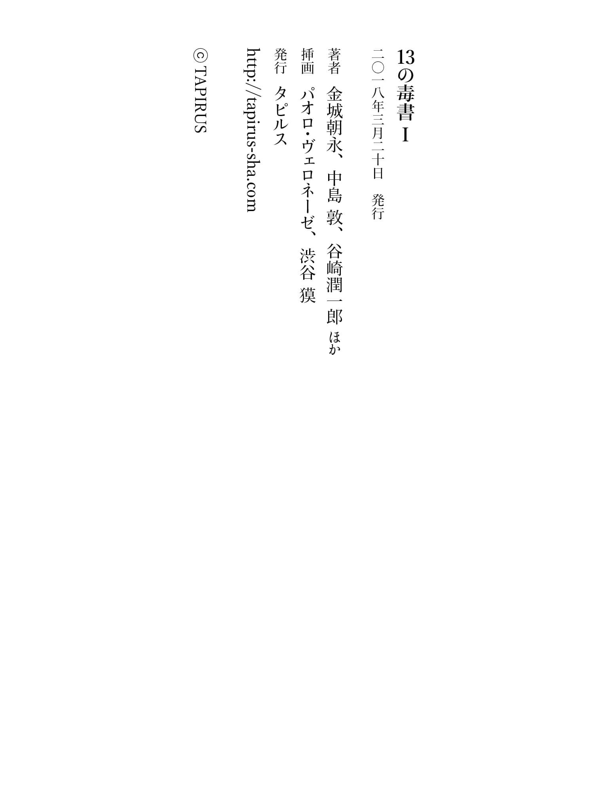